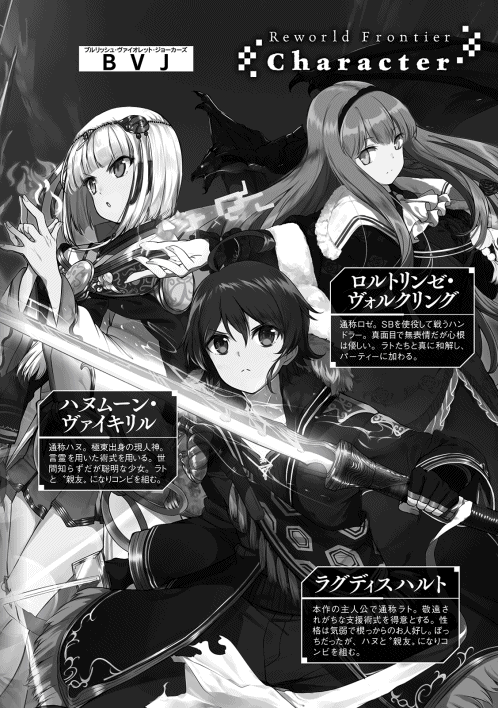

| リワールド・フロンティア3-最弱にして最強の支援術式使い- | |
| 国広仙戯 | |
| TOブックス (2017) | |
浮遊都市から延びる月の塔――今日も戦うラト＆ハヌの前には厄介事ばかり。仲間になれたはずの「蒼き紅炎の騎士団」から除名宣告された上に、新メンバー募集の面接ではグラマラスな美少女（18歳）が「ラト様、私を、買って下さい」などと言い出す。おまけに、テロが勃発して街が崩壊!? それでも永遠のぼっち・ラトは誓う。「何があろうと、絶対に仲間を見捨てない！」風呂敷広げて胸も高鳴るＳＦダンジョン・ファンタジー第２章！ 今、発動するメンバー補完計画!?
illust．東西
design．AFTERGLOW


●１ 天を穿つ龍の牙
浮遊島フロートライズに点在する八つの龍穴。その直上に展開する直径二メルトルほどの〈コープスリサイクル〉のアイコンから、次々とＳＢが再生されていく。
『ヴォルクリング・サーカス』が所有するコンポーネントは二十万以上。
しかし〈コープスリサイクル〉はその全てを一気に顕現させられるわけではない。術式と術者の処理能力、龍脈から時間単位で供給されるエネルギー量から、自然と再生速度は制限されてしまう。
一分につき約百二十体。つまり、一秒につき二体。それが今の〈コープスリサイクル〉の平均再生速度であった。二十万以上のコンポーネントを全てＳＢとして再生するには、どんなに早くとも三時間から四時間はかかる計算となる。
もっとも、それまでにフロートライズが壊滅する方がよほど早いかもしれないが。
簡易なコマンド入力すらされず、本来の〝侵入者を攻撃せよ〟というアルゴリズムのみを持ったＳＢが、自らがいる場所を守護すべき遺跡内と誤認し、その使命を果たすべく動き出す。
『ＰＰＰＰＰＹＹＹＹＹＹＹＲＲＲＲＲＲＹＹＹＹＹＹＹ!!』
『ＶＲＲＲＲＡＡＡＡＡＡＡＡＯＯＯＯＯＯＯＯＯＷＷＷＷＷ!!』
『ＵＵＵＵＵＵＵＲＲＲＲＲＲＲＲＲＲＲＲＲＹＹＹＹＹＹＹＹ!!』
『ＧＧＧＧＯＯＯＯＯＯＯＯＷＷＷＷＷＷＷＷＷＷ!!』
甲高い咆哮を上げ、空を飛べるものは宙を翔け、地を這うものは大地を蹴って駆け出した。
倒すべき敵を求めて。
そこには慈悲も容赦もなく。
怪物達の進撃がフロートライズを蹂躙していく。
奴らの数は時が経てば経つほど増えていく。
この時、守る側と迎撃する側にとっては、時間さえもが敵だった。
■
テーブルを挟んで向かいに立っていたロゼさんが、勢いよく片足を跳ね上げた。
「「──!?」」
スカートが芸術的にはためき、絶妙な曲線を描く脚が剣のごとく振り下ろされる。そのまま片足の末端、硬い靴底がテーブルを打って強い音を立てた。
そのまま、彼女はまるで舞台に上る女優のごとく、テーブルの上へと飛び乗る。
跳んだ。
隣に座っていたハヌが今は僕の膝上にいるため、その分の空間が空いていた。そこを狙われた。
本当に一瞬のことだった。
風圧が僕とハヌの髪が揺らし──たかと思ったら、バン、と背後で扉が荒々しく開かれる音。
「──って、ちょっ!? ロゼさん!?」
一陣の風のごとく部屋を出て行ったロゼさんを、視線で追うことすら叶わなかった。完全に背中も見えない状態になってから、驚きの声を上げるという始末である。
「いかんラト！ あやつ一人で行くつもりじゃぞ！」
「う、うん！ 追わなきゃ！」
ハヌが素早く膝の上から降りて、僕も椅子から立ち上がる。まだ階段を下りていく足音が聞こえている。今ならまだ間に合うはずだ。
「ロゼさん！」
僕はハヌを置いて一足先に部屋を出て、階段に向かってダッシュする。階段の降り口に差し掛かったところで、アッシュグレイの長い髪が一階の廊下、右の曲がり角へ消えていくのが見えた。
「っの──！」
ちんたら階段を降りてちゃ、追い付くものも追い付けない。僕は気合一発、スピードを緩めないままコンバットブーツで床を蹴った。階段を一気に飛び降りる。
ダン、と音を立てて着地すると同時、膝を曲げて衝撃を殺す。それからロゼさんが走って行った方向に体を向け──
「きゃああああああああああああッッ!?」
逆方向から甲高い悲鳴。
「──ッ!?」
思わず反応して振り返ってしまった。
僕の視界に飛び込んできたのは、『カモシカの美脚亭』の店内で、複数のＳＢとエクスプローラーが戦っている姿だった。
ありえない光景に一瞬、目眩がした。見慣れた店内を背景に、見慣れた怪物がいる。だけど──その両者が交わることは、決してなかったはずなのに。
気付けば壁のあちこちに大きな穴が空いていた。ＳＢ達はあそこから侵入してきたのだ。
悲鳴の主は看板ウェイトレスのアキーナさんだった。ちょうど店内に居合わせたエクスプローラー達に守られ、部屋の隅にいたところを、しかし後続の新手に襲われたらしい。
四の五の言っている余裕なんてなかった。考えるより先に体が動いていた。
全身の〝ＳＥＡＬ〟を猛然と励起させ、
「〈ドリル──！」
剣術式の起動音声を口にしながら、支援術式〈ストレングス〉〈ラピッド〉〈プロテクション〉〈フォースブースト〉を三つずつ重ねて発動。計十二個のアイコンが弾け、強化係数を八倍に。
「──ブレイク〉！」
屈んでいた状態から弾かれたように跳躍。右足を前に突き出して、剣術式を発動。爪先にアイコンが浮かび、右足全体に閉じた傘のようなディープパープルのドリルが展開した。
狙いはアキーナさんを襲おうとしている、三つ首の魔犬ケルベロス。
僕は飛び蹴りの体勢で、放たれた矢のごとく撃ち出された。
ドリルの先端がケルベロスの脇腹に勢いよく突き刺さる。そのまま一気に貫通し、黒い体躯をすぐ近くにあった壁へと縫い付けた。
『──ＰＲＲＲＲＲＲＹＹＹＹＹＹＹＹＹ!?』
〈ドリルブレイク〉に貫かれたケルベロスが悲鳴を上げる。右足のドリルでガリガリとケルベロスの腹と壁を削りながら、僕は構うことなく攻撃術式を追加起動。
「〈エアリッパー〉〈エアリッパー〉〈エアリッパー〉！」
三つのアイコンを左手に集中させ、一挙に発動させた。
「はあっ！」
風の刃を纏った手刀を一閃。ケルベロスの三本の首を続けざまに斬り飛ばす。
三つの犬の頭が時間差で宙を飛んだ。
頭を全て失ったケルベロスがコンポーネントへと戻っていく中、右手側に剣呑な気配。
『ＵＵＫＫＫＫＫＫＹＹＹＹＹＹＹＹＹ!!』
甲高い電子音に視線を向けると、そこには鋭い爪を振りかざしたクロードモンキーが一体。床、壁、天井を縦横無尽に飛び回り、こちらへ襲いかかってくる。そう認識した時には右腕を掲げて、
「──〈ドリルブレイク〉！」
指先から肘までを包む紫のドリルを生成。五本のナイフと言っても過言ではないクロードモンキーの爪を、高速回転する衝角の腹で受け止めた。ギャリリリリッ！ と火花を散らして鬩ぎ合うドリルと五爪を前に、僕は左手を鳥の鉤爪のように構え、
「〈ボルトステーク〉〈ボルトステーク〉〈ボルトステーク〉〈ボルトステーク〉〈ボルトステーク〉！」
指先に攻撃術式を装填し、雷の爪を、獰猛な顔つきをした猿の額へと突き込んだ。
弾ける雷鳴。悲鳴をあげる暇もなく、クロードモンキーの首から上が吹き飛ぶ。まだ完全に消えていないケルベロスを追って、こちらも活動停止シーケンスに入った。
「──大丈夫ですか!?」
アキーナさんに背中を向け、周囲への警戒を怠らないまま、僕は彼女に声を掛けた。さっきは出す余裕すらなかった白虎をストレージから具現化させ、抜き放つ。
「は、はい......あ、ありが......と、ご、ござ...ぃ...ます......」
アキーナさんの全身が恐怖に強張っているのが声だけでわかった。無理もない。一般人の中には、遺跡に出没するＳＢを一度も目にすることなく人生を終える人だっているのだ。
「ここは危険です！ 早く避難場所へ行って下さい！」
アキーナさんにそう言い置いて、僕は改めてロゼさんの後を追った。
出入り口から通りへ飛び出し、ロゼさんの背中を探す。が、残念ながら彼女の姿は影も形も残っていなかった。しかし、その事実以上に僕を打ちのめしたのは──
「......なに......これ......」
いや、わかっている。わかってはいるが、そう口に出さずにはいられなかった。
街の風景が激変していた。
雲の上に位置するフロートライズはいつも快晴で、どんな場所から見上げても綺麗な青空が見える。
けれど今は、そんな風光明媚な空間を、黒煙と悲鳴が汚していた。
「──......」
唖然とするしかなかった。
空を埋めつくすような飛行型ＳＢの群れ。
建物の屋根という屋根に陣取っている軽量型ＳＢ。
通りのあちこちを我が物顔で闊歩する重量型ＳＢ。
それらに襲われる人々。
破壊されていく街並み。
全方位からＳＢの発する電子音、逃げ惑う人達の叫び声、鳴り響く緊急警報。
そこにあったのは、ただただ地獄だった。
──もう、ダメだ......こんなの、どうしようもないじゃないか......
冷たく硬い、鉛のような重みが腹の底に生まれた。足元にぽっかり穴が空いたような気分。ヘラクレスが再生してパワーアップした時よりも、なおひどい。
僕が一呼吸する毎、どこかで誰かが死んでいく。殺されていく──そう思った。
砂漠の真ん中で水の入った容器を割ってしまったような、取り返しのつかない絶望感。
「──ラト！ ロルトリンゼはどうした!?」
不意にハヌの声が背中を叩き、はっ、と我に返る。
「ハ、ハヌ......ご、ごめん、見失っちゃって──」
振り返った瞬間、拳大の水晶球が唸りを上げて顔の両側を掠め過ぎた。
「へ？」
ボッ、と大気を穿った風圧が僕の髪の毛をかき乱す。
『ＰＰＰＧＧＧＧＧＧＧＹＹＹＹＹ!?』『ＧＧＧＧＧＧＧＲＲＲＲＲＲＲＡＡＡＡＡＡ!?』
背後で上がるＳＢの悲鳴と、それに続く活動停止シーケンスの収斂音。首だけで振り返ると、そこには薄くなって消えていく双頭の魔犬オルトロスと、牛頭人身のゴズキの姿があった。どちらも体の中央に大きな風穴を空けられている。
「ラト！ 何をぼさっとしておるか！ ここはもう戦場じゃぞ！」
カラコロカラコロと下駄を鳴らしながら、正天霊符の護符水晶を宙に浮かせたハヌが駆け寄ってきた。彼女の頭上にプカプカと浮遊し、移動に追従する水晶は三つ。先程僕の至近を通り過ぎた二つを合わせれば、合計五つだ。どうやらハヌは、順調に正天霊符の扱いに慣れてきているらしい。
「ご、ごめん......ありがとう......」
僕の不甲斐なさに憤っているのではなく、こちらの身を案じてくれているのがわかったので、素直に謝ってお礼を言う。さっき一歩──否、半歩間違えれば護符水晶が僕の頭に炸裂してトマトみたいに弾け飛んでいたのかと思うと、胸のドキドキが止まらないのだけど。
と、こんな風に落ち着いている場合ではない。僕はジタバタと身振り手振りを交えて、
「──って、ど、どうしようハヌ!? ロゼさんが、ロゼさんが出て行っちゃって、見失っちゃって！ ま、街はこんなだし、ひ、人がいっぱい──ど、どうしよう!? ねぇどうしよう!?」
「......ラト」
ハヌが神妙な声を出して、短い指先で、ちょいちょい、と地面を指し示した。
「......？」
これはいつもの『妾の前で膝立ちになって目を合わせよ』の合図である。パニック寸前の僕は、条件反射的にその通りにしてしまう。
ハヌのちっちゃな両手が、ぺちん、と僕の両頬を挟み込んだ。
「っ──!?」
ずい、と蒼と金の妖瞳が息が掛かるほど間近に迫り、ハヌが僕の目を覗き込む。ふわり、と彼女の匂いが鼻腔をくすぐると、何故だか、すっ、と気持ちが落ち着いた。
「──案ずるなラト。何も恐れる必要などない。おぬしには妾がおる」
「......ハヌ......」
頼もしいその言葉は、するり、と僕の胸の奥へ忍び込み、一番深いところまで降りてきた。
こつん、とハヌが僕と額をくっつけ合う。接触している箇所から、ハヌの体温が流れ込んでくるかのようだ。
「ゆめ忘れるな。妾が、妾こそが、おぬしの最大の味方じゃ」
力強く、彼女は断言する。まるで我が子にものを教えるお母さんのように。
「そしてラト──おぬしが、おぬしこそが、妾の最大の味方じゃ」
そう言い切ると、ハヌはいつものように、くふ、と笑った。
「故に妾とラトが揃えば、それは無敵のコンビじゃ。よいか、そのことをゆめ忘れるでないぞ？」
「────」
不思議なことに、戦闘による昂ぶりも、ロゼさんを見失った焦りも、現状に対する絶望感も、すっかり収まっていた。あたかも額から額へ、ハヌに余計な感情を吸い取ってもらったかのごとく。
「......うん。忘れない、絶対。約束する」
返事は自然と口を衝いて出ていた。
「うむ」
ハヌは額を離し、表情を凜としたものに切り替え、けれど距離は近いまま話を続ける。
「よいかラト。所詮、妾らは人、体は一つしかない。それ故、出来ることは限られておる。まずはそれを飲み込むのじゃ」
「うん」
頬の両側に手を添えられたまま、僕は視線を外さずに頷く。
「この状況じゃ。全ては救えぬ。力の及ぶ限り、たとえ全身全霊を掛けようとも、失われたものは戻ってこぬ。その覚悟を決めよ」
「......うん」
生唾を飲み込むようにして、心に力を込める。すると、ハヌの表情がふっと柔らかくなった。
「──じゃが、おぬしと妾が力を合わせれば、必ずやこの苦難を乗り越えることが出来よう。臆するな、ラト。おぬしと妾が揃えば、敵うものなどどこにもおらぬ」
「──が、頑張るっ」
流石にそこまで開き直ることは出来ないけど、でも、ハヌと一緒だったら何だって出来る気がした。どこへだって行ける気がした。
「うむ、よかろう。では、優先順位を決めるぞ。まずはロルトリンゼじゃ。当然、妾らは妾らの仲間を最優先とするべきじゃ。よって他の者はその次とする。──異論はあるかの？」
「──ううん。大丈夫。わかってるよ、僕達は僕達の出来ることを、だもんね」
何もかもを救おうとして何も出来ないよりは、本当に大切なものを見据えて動いた方が、まだしもいい。そして、今の僕達にとって最優先にするべきは、新しい仲間であるロゼさんだ。
クラスタ『ＢＶＪ』の唯一絶対のルールは、何があろうと仲間を絶対に見捨てないこと。その信念を、早くも曲げてしまうわけにはいかなかった。
「さっきも言った通りだよ。何が何でも、ロゼさんを助ける。ハヌこそ、異論はないよね？」
「無論じゃ。リーダーの言には従わねばならぬからの」
そう言って、くふ、とハヌは笑う。まさに今、リーダーっぽいことをしているのはハヌの方なのに。さっきから確認するようなことを言うのは、きっと僕の意志を尊重するためなのだ。
『ＰＰＰＰＰＲＲＲＲＲＲＲＲＲＲＹＹＹＹＹＹ──!!』
突然、四方八方からＳＢの咆哮が轟いた。ハヌの両手に顔を挟まれたまま、それでも目の動きだけで視線を巡らせると、そこには犬型ＳＢ〝シルバーハウリング〟の群れ。その名の通り白銀の体毛を持つ狼が十体、僕達を取り囲もうとしている。
シルバーハウリングはルナティック・バベルの第一二〇層あたりに出てくる中級ＳＢだ。下位同種のレッドハウンドとは比べものにならないほど強い。俊敏な動き、鋭い牙と爪が特徴で、一塊で動く群れの姿は『プラチナの風』とまで言われている。
「──よい、ここは妾に任せよ」
なのに、咄嗟に立ち上がって戦おうとした僕を制すると、ハヌは右手で腰の帯に差していた扇子リモコンを取り出し、滑らかに開いた。
僕の頭上で、漆黒の扇を右から左へさっと一振り。
次の瞬間、彼女の側に浮いていた五つの護符水晶が猛威を振るった。
五つの水晶がビリヤードの球のようにぶつかり合い、直線的かつ複雑な軌道を描いて飛び回る。その速度といったら、まさしく電光石火。
『ＰＰＧＧＧＹＹ!?』『ＰＰＧＧＧＲＲＲＲＲＹＹＹ!?』『ＰＰＰＲＲＲＲＲＲＲＲＲ──!?』
水晶球が稲妻のごとく宙を疾り、シルバーハウリングを紙か何かのように貫いた。何度も、何度も。白銀の狼達は、まるで瓦礫を孕んだ竜巻に巻き込まれたかのごとく、磨り潰されていく。
「全く、これではおちおち話もしておられんな」
そのままＳＢの排除を正天霊符に任せ、とんでもない術力の持ち主は平然と話を戻す。
「──しかしな、ラトよ。先程はああは言うたが、ロルトリンゼもなかなかの強者じゃ。そう簡単に死ぬほど柔ではなかろう。それでの、ちと寄り道をしようと思うのじゃが、どうじゃ？」
「寄り道？」
オウム返しをした僕に、ハヌはにやりと不敵な笑みを見せた。ちょうど活動停止したシルバーハウリングのコンポーネントが彼女の〝ＳＥＡＬ〟に吸収され、顔を下から仄かにライトアップするものだから、何とも言えない凄みが滲み出る。
「というわけでじゃ──聞いておったか、カレルよ？」
『......それは、少しは手を貸してもらえる、と理解していいのかな、小竜姫？』
話の矛先がいきなりずれて、しかも会話が成立したので、僕は一瞬だけ呆気にとられてしまう。
「......え？ あれ？」
まさか、と思って視線を彷徨わせると、視界の端の方に、まだヴィリーさんとの通話アイコンが残っていた。だが、メインの通話相手だったヴィリーさんの姿はもうない。アイコンに表示されている名前はカレルさんだけだ。おそらく、ヴィリーさんは戦場へ向かったのだろう。
通話セッションが継続されていた、ということはつまり、これまでの会話は全部あちらへ筒抜けだったわけで。しかも一部始終を聞いていたのはヴィリーさんではなく、カレルさんだったわけで。
「──〜ッ......！」
何故だろう、別におかしなことも怪しいこともしていなかったのに、無性に恥ずかしくなってしまうのは。
「答えよカレル。今、化生共と戦っている者らの士気はどうなっておる？」
ハヌの質問に対して、カレルさんはノータイムで答える。
『正直、芳しくはない。来ることがわかっていたとはいえ、タイミングとしてはやはり奇襲だ。どこも浮き足立っている。住民の避難はまだ順調に進んでいる方だが、残念ながら既にいくらかの犠牲者が出ているようだ。正直、いつ崩れてもおかしくない状態だ』
劣勢を告げる口振りですら、この人は冷静沈着なのだから本当にすごい。体中の神経に金属コーティングが施されているのかもしれない。
「やはりの。特に下々の者の混乱はひどかろう。そも、どこから攻めてくるかわからぬ敵に完璧に備えることなど出来ぬ。話を聞くに、おぬしらはよく対応している方じゃろうて」
『お褒めの言葉として受け取っておこう。しかし小竜姫、今はとにかく時間が惜しい。話を進めよう。そちらの言う寄り道とは？』
「ふむ。つまりじゃの──」
ハヌは実に好戦的な表情を浮かべ、
「──この妾自ら、おぬしらの士気を鼓舞してやろうと、そう言っておるわけじゃ」
なにやら途方もないことを言ってのけた。
これまで間髪入れずに応答していたカレルさんが、この時、数瞬の間を空けた。
『──この状況でこんなことを言うのは何だが、本当にいいのか？』
「？ これはまた異なことを言うのう、カレル。おぬし、本当に何を言っておるんじゃ？」
先程は時間が惜しいと言っておきながら、今度は妙な質問を返してきたカレルさんに、僕もハヌも揃って首を傾げた。質問の意図が全く見えない。本当にいいのか、って──？
『......小竜姫──正直なところ、君には我々を見捨てる権利がある、と俺は考えている。何故なら先日、第二〇〇層のゲートキーパー戦において、俺達は君を見殺しにしようとしたからだ』
「......ほほう」
すっ、とハヌのヘテロクロミアが細められ、声が硬さを纏った。
『それ自体は恥ずべきことだが、しかし、誰も君に謝罪はしていないし、しようとも思わないだろう。それほどあの場に置いて、君を含めたセキュリティルーム内の人間を見殺しにすることは、エクスプローラーとして正しい判断だった。事実、ラグ君一人があそこにいなければ、君は今、そこには立っていないはずだ』
「......確かにのう。まさしくその通りじゃ。ラトがおらねば今の妾は存在し得ぬ。今頃は冥府の奥底で眠っておったであろうな」
『それだけに、君には我々を見殺しにする権利がある、と俺は考える。自分を見殺しにしようとした連中を、それでも助けなければならないという道理はないだろう。やられたからにはやり返す権利があるはずだ。君が何もしなくとも、少なくともあの場にいながら何もしなかった──いや、何もしようとしなかった人間に文句を言う筋合いはない』
「なるほどのう、そういうことか」
カレルさんの言うことは、僕にも合点がいった。やられたことをやり返してもいいのなら、確かにハヌには、自分を見殺しにしようとした人達を見捨てる権利がある。あの瞬間、世界の全てから見捨てられたハヌには、同じことを仕返す資格があるはずだ。
「──つまらぬことを抜かすな、小物が」
けれど傲然と吐き捨てるように、ハヌは言った。その声音には強い憤りが満ちている。
「たわけ。妾を誰と心得る。そのような瑣事を根に持つほど妾の器が小さいと申すか、この痴れ者が。次に似たようなことを言ってみよ、その時は侮辱による罪で消し飛ばしてくれるわ」
『............』
火を点ければ燃え上がりそうなほど怒りを露わにするハヌに対し、カレルさんは無言。
「それにカレルよ。あの時、おぬしらが見捨てたのは妾だけではなかろう」
ハヌは右手に持っていた扇子リモコンを閉じ、先端で僕を示した。
「ラトじゃ。おぬしらは、妾を守って戦うラトをも見殺しにしようとしたではないか。それを忘れたとは言わせぬぞ」
ハヌは正天霊符のリモコンを帯に差すと、再び両手で僕の頬を挟む。
「じゃがの、その件についてラトが一言でも触れたか？ 文句を付けたか？ いいや、あるまい。むしろ、おぬしらに礼を言うたぐらいじゃ。病院まで運んでくれてありがとうございます、とな」
ハヌは右掌でぺちぺちと僕の頬を叩く。
「とんだお人好しじゃ。度が過ぎておる。つまり、気にしておらんのじゃよ、こやつは。全く、一切、これっぽっちもな。むしろ、そのような損得勘定など夢にも思わぬ。これを愚鈍と呼ぶか、大器と見るかは人によりけりじゃろうがな」
ハヌは、はぁ、と盛大な溜息を吐いた。
「そも、妾がラトに優先順位について説いたのも、そうでもしなければこやつは『全てを救う』などと言い出しかねなかったからじゃ。こやつ、自覚はないが相当の〝欲張り〟での。他人を助けるという観念が義務感ではなく、〝欲望〟から来ておる。要するに『助けなければならないから助ける』ではなく、『助けたいから助ける』というわけじゃ。カレルよ、おぬしはこれをどう思う？」
『うちの団長と似ているな。困った性分だ』
「であろう？ しかし、権利の話をするのであれば妾にもラトにも『好きにする権利』があるはずじゃ。また、ラトが望むことならば、妾の望むところでもある。そう、おぬしのいう『道理』など関係ない。妾とラトはやりたいことをやる。それだけじゃ。何か文句があるか？」
どこか自嘲するような響きを声に込めて、ハヌはそう言った。
すると、姿は見えないけれど、ふっ、とカレルさんの笑う気配があった。
『──悪かった。どうやら愚問だったようだ。無礼を赦して欲しい、小竜姫。大人の心、小人知らず......以升量石だな。俺としたことが浅はかだった』
降参だ、という言外の声が聞こえてきそうな口振りだった。
『そういうことなら遠慮なくご助力願おう。よろしく頼む』
「うむ。よかろう。大船に乗ったつもりで任せるがよい」
ふふん、と誇らしげに胸を張るハヌを見て、僕は不意に気付いてしまった。
そういえば、ヴィリーさん率いる『ＮＰＫ』と初めて邂逅した時も、似たようなことがなかっただろうか？ もしかして、この逼迫した状況であんな話を持ち出したのは、カレルさんの作戦だったのでは？ いや、具体的にどういう意図だったのかは、今すぐにはわからないけれど──
『ラグ君、この通信セッションを維持したまま、小竜姫のアカウントも追加を頼む。これから、何かとやりとりが必要になるだろうからな』
「......え、あ、は、はい！」
急に指示を振られたので、僕は半ば自動的にそれに従ってしまった。現在、僕との接触回線を通じて通話に参加しているハヌを、個別アカウントとして接続させる。
『さて小竜姫、こちらでするべきことはあるかな？』
カレルさんの問いに、ハヌは頭上に視線を向けて、しれっと答えた。
「今から妾の術で、空にいる化生共を吹き飛ばしてくれる。天が綺麗に晴れれば、他の者達の士気も上がるであろう。もしおぬしらの中に飛んでいる者がおるのならば、すぐに退避させよ。器用な手加減など出来ぬ。一緒に消し飛ばしてしまうかもしれぬからの」
『了解した。緊急用のハイマルチキャストで全域に通達しよう』
カレルさんの仕事は早かった。いくらもしない内に、新たな緊急メッセージが届く。
『緊急連絡 空を飛ぶな危険 〝小竜姫〟が暴れます』
いや、あのちょっと。意味は伝わるけど、よりにもよって〝暴れます〟って。わかりやすいと言えばわかりやすいけれども。
「......ふん。何が〝小竜姫〟じゃ、舐めおってからに。どうせなら〝大竜姫〟か〝超竜姫〟とでも呼べばよいものを。今日という今日こそは目に物見せてくれるわ」
「え、そこ？」
僕と同様〝ＳＥＡＬ〟でＡＲメッセージを受け取ったハヌが、不愉快そうに目を細める。そういえばハヌ自身が〝小竜姫〟という二つ名に言及したことはなかったけれど、この様子だとあんまり気に入ってなかったらしい。
「えーと......ハヌ？ 僕、正直よくわかってないんだけど......一体何するつもり、なのかな......？」
僕がそう尋ねると、ハヌは再び、くふ、と不敵な笑みを見せた。蒼と金の瞳に剣呑な光が宿る。
「わからぬか？ ここは外じゃろう。あの狭い塔の中ではない。ということはじゃ、妾もさほど手加減することなく術を撃つことが出来るということじゃ」
普段ルナティック・バベルの中では、ハヌの術式はあまりに強力過ぎて使うことが出来ない。彼女の言葉を信じるなら、本気でやればルナティック・バベルをも破壊しかねないからだ。
しかし、今みたいに外にいるならば。
小さな唇をにんまりとさせて、やおらハヌは周囲を見回す。眉の上で掌のひさしを作り、どうやら建物の高さを測っているらしい。
けれど、このフロートライズにはどうあっても高さを測れない建造物があるわけで。
「......ふむ。やはりあの塔が邪魔になるのう。じゃが、あれを吹き飛ばしてはいかんのじゃろう？」
むしろ面倒くさいから吹き飛ばしてしまおう的に言うので、僕は慌てて声を張り上げた。
「あ、当たり前だよ!? そんなことしたらこの街のエクスプローラー全員が仕事できなくなっちゃうよ!? というか世界遺産だからね!? こ、こんな状況だけど流石にそれはマズイよ!?」
「仕方ないのう。ならば、やはり詠唱に三分ほど必要か。となると──」
ちらり、と流し目を僕に向けるハヌ。
もうこの時点で、次に彼女が何を言うのかが予想出来てしまった。
くふ、とハヌが笑い──そして、いつかも聞いた、とある台詞が紡がれた。
「──ラトよ、妾を守れ」
ハイマルチキャストは即座に都市全域へ届くけれど、その対応が瞬時に出来るわけではない。
空中戦が可能なエクスプローラーが安全な場所に降りてくるまで、まだ少し時間がある。僕とハヌはその時間を使って『カモシカの美脚亭』から一番近い公園へと移動し、布陣した。
言霊を練るハヌを中央に。その前方に僕が立ち、支援術式〈リキッドパペット〉×15と〈イーグルアイ〉×10を重複発動。
ヘラクレス戦の時と同じように作った自律型デコイを、まずは五つある公園の出入り口に一体ずつ立たせて、見張りとする。誰か人がやってきても公園に入れないようにするためだ。
また、周囲の視線からハヌを隠すため、残りの十体で円陣を組み、壁を作った。両手を拡げて立ちはだかる十個の僕の背中が、僕とハヌを取り囲んでいる。
そして、本体である僕の頭上にも〈イーグルアイ〉を五つ。四方と真上、全方向を俯瞰で監視し、もしＳＢが入り口以外から公園に侵入してきたら、これを攻撃術式で迎撃する態勢だ。
「 あまねく大気に宿りし精霊よ 我が呼び声にこたえよ 」
詠唱が始まった。同時に、僕は支援術式〈ストレングス〉〈ラピッド〉〈プロテクション〉〈フォースブースト〉のフルエンハンスを五つずつ重ねて発動。強化係数を三十二倍まで引き上げる。
「 其は魔を滅する絶対の牙 邪を破る堅固な鱗を持つものよ 」
ゆっくりと、じっくりと、言葉そのものに力を込めて、ハヌが特別な術式を編んでいく。
「 その身が踊るは宴 その身が舞うは天 」
外套を身に纏い、頭だけを露わにした小さな女の子は、瞼を閉じ、一心不乱に言霊を紡ぐ。
右手の扇子リモコンは閉じたまま水平に構えられ、前に差し出されている。その手前には、祈りを捧げるように指を揃えて立てられた左手。
全身の〝ＳＥＡＬ〟を励起させ、輝紋からはスミレ色の光が煌々と輝く。右手に持った正天霊符のリモコンからも同じ光が漏れている。
彼女の周囲を取り巻くのは、陽の光を反射して煌めく正天霊符の護符水晶。その数、なんと上限の十二個。今こそ、正天霊符こと〝正対化霊天真坤元霊符〟の真骨頂であるオートディフェンスモードを使うときだった。これを発動させれば、護符水晶は術者に近付く敵性オブジェクト全てに対し、完全自動で攻撃を加えるようになる。公園の出入り口に人が入ってこないよう〈リキッドパペット〉を置いたのはこのためだ。
「 悠久の光を呑み 永久の闇を貪り 万物の根源から来よ 」
公園の外からは、断続的に戦いの音や逃げ惑う人々の悲鳴が聞こえてくる。その度に助けに行きたくなって、体のあちこちが痙攣したように反応してしまうけど、どうにか我慢する。
今の僕の役目は、ハヌの守護だ。それを放り出すわけにはいかない。
『──ＧＧＧＧＲＲＲＲＲＲＹＹＹＹＹＹＹ!!』
上空からＳＢの雄叫び。〈イーグルアイ〉の視覚情報から、ペリュトンを始め、ガルーダ、ハーピー、ペガススなどの飛行型ＳＢがこちらに向かってきているのがわかる。
ハヌの放つ強大な術力に惹かれてやって来たに違いない。ざっと見た総数は軽く百体以上。しかも、どいつもこいつもルナティック・バベルで言えば一五〇層以上の高レベルＳＢ。
この瞬間、僕は〈フォースブースト〉を更に五つ発動させ、術力の強化係数のみ千二十四倍まで上昇させた。
来るなら来い。たとえ相手が何であろうと、ハヌには絶対近付けさせない。
この子は、何があろうと僕が守り切ってみせる。
「〈フレイボム〉〈フレイボム〉〈フレイボム〉〈フレイボム〉〈フレイボム〉〈エアリッパー〉〈エアリッパー〉〈エアリッパー〉〈エアリッパー〉〈エアリッパー〉〈ボルトステーク〉〈ボルトステーク〉〈ボルトステーク〉〈ボルトステーク〉〈ボルトステーク〉──」
三種類の攻撃術式を五つずつ〝ＳＥＡＬ〟の出力スロットへ装填していく。まだだ。まだ距離が充分じゃない。空に両手を向ける。十本の指先と手の平、両肩と額に攻撃術式のアイコンが表示される。幾重にも重なったアイコンが、雨の日の水溜まりに出来る波紋のように展開する。
高まっていく緊張感。意識が研ぎ澄まされ、関係のない音がすうっと遠ざかって──
「──ここだぁっ！」
ＳＢの群れが射程内に入った刹那、僕は全ての攻撃術式を発動させた。
爆裂を起こす光線が、固体化した風の刃が、稲妻の槍が、天空に向かって一斉に撃ち放たれる。
『ＧＧＧＧＧＲＲＲＲＲＲＹＹＹＹＹＹ!!』『ＰＰＰＰＰＧＧＧＧＧＧＹＹＹＹＹＡＡＡＡＡ!!』『ＫＫＫＹＹＹＹＥＥＥＥＥＥＥＥＡＡＡＡＡ!!』
甲高い奇声を迸らせ、集い来るＳＢ達が戦意を剥き出しにする。攻撃術式の直撃を受けた奴はそのまま空中で活動停止シーケンスに入るが、群れ全体の動きは止まらない。どんどん迫ってくる。
僕はさらに喉を嗄らし、〈フレイボム〉〈エアリッパー〉〈ボルトステーク〉を連呼した。誰だ、攻撃術式に起動音声なんて余計なセキュリティをつけた奴は。面倒くさいにも程があるじゃないか。
「〈フレイボム〉〈フレイボム〉〈フレイボム〉〈フレイボム〉〈フレイボム〉──！」
僕は人間砲台と化した。〈イーグルアイ〉で視認した敵を照準しては、攻撃術式を繰り出す。空中からも、地上からもＳＢは次々と近寄ってくる。
「〈エアリッパー〉〈エアリッパー〉──〈エアリッパー〉〈エアリッパー〉〈エアリッパー〉──！」
それでも僕達の下へ集まってくるＳＢの数は加速度的に増加していった。いくら強い術力に惹かれて集まってきているにしても、度が過ぎている。だけど文句も弱音も吐くわけにはいかない。ここで僕達が敵を引きつけている間は、襲われる人の数が減るはずなのだから。
「はぁっ、はぁっ──〈ボルトステーク〉──〈ボルトステーク〉〈ボルトステーク〉──〈ボルトステーク〉......〈ボルトステーク〉......！」
やがて、僕とハヌを取り囲む〈リキッドパペット〉の円陣までＳＢが押し寄せた瞬間──ハヌの周囲に浮遊していた正天霊符がその真髄を見せた。
十二個の護符水晶が荒れ狂う。円を描きながら奔るその姿は、さながら閃光だった。囮で作った最終防衛ラインに触れたＳＢを、雷光のごとき一撃で打ち砕いていく。
「 あらゆる物を裂き あらゆる物を砕け 其は絶大なる者 我は意志と力を持つ者 敵は我らが理に叛する者 」
ハヌの詠唱が終端に近付いてきた。僕は気持ちを奮い起こし、さらに攻撃術式を連発する。
「──ッ、〈フレイボム〉〈フレイボム〉〈フレイボム〉〈フレイボム〉〈フレ──えっ？」
起動音声を口にしていると、不意に小さな違和感を覚えた。
──あれ？ 今、まだ四回しかセキュリティ外してないよね？ え？ でもなんで？
なんで、もう〈フレイボム〉が五つ起動しているんだろう？
炸裂する爆発。腹の奥まで揺るがす大音響が飛行ＳＢを連続して吹き飛ばす。
「〈エアリッパー〉〈エアリッパー〉〈エアリッパー〉〈エアリ──ッ!?」
まただ。また、僕の声と〝ＳＥＡＬ〟内のセキュリティ解除処理がズレた。今度は二回分。三回しか起動音声を口にしていないのに、五つ分の発動セキュリティが解除されていた。
──まさか......？
自身の内側で起こっている奇妙なズレに困惑しながらも、敵は悠長に待ってなどくれない。僕はすぐさま装填した〈エアリッパー〉を発射する。敵の数が多すぎてどこを狙っても当たる。
次は意識的にソレをやってみた。
「──〈ボルトステーク〉」
起動音声が一つ。〝ＳＥＡＬ〟の出力スロットに装填される術式──二つ。
「......〈ボルトステーク〉！」
さらに起動音声を一つ。セキュリティ解除──三つ。
たった二回の発声で、五つの攻撃術式のセキュリティを解除して起動させた僕は、しかし躊躇わずに攻撃を続行した。どういうカラクリで攻撃術式の音声セキュリティが同時に解除できているのか、自分でもよくわからない。けど、迎撃の手が早まって困ることはない。〝ＳＥＡＬ〟の処理ズレは気になるけど、何もかも生き残ってからでないと話にならないのだ。
爆竹のように三種類の攻撃術式を撃ちまくって、僕のフォトン・ブラッドがとうとう枯渇する寸前にまでなった頃──
「 我らが手を合わせ 息を合わせ 心を合わせれば 全てはただ滅するのみ 」
やっと、長い長い三分間が終わった。
カッ、とハヌが両眼を見開き、ヘテロクロミアから鮮烈な輝きを放った。
鋭い衣擦れの音を立て、左の掌を天空に突き上げる。
その瞬間、掌の先からスミレ色のアイコンが輝きながら生まれ──一気に膨張した。
円形のアイコンは凄まじい速度で上昇しながら、瞬く間にその面積を拡げていく。その拡大は止まることを知らず、中央区を覆い、さらに東西南北の区画もカバーし、それでも速度を落とすことなく広がり続け──
ほんの一秒で、浮遊島フロートライズ全域を傘下に置いてしまった。
高さは、都市の中でも一番高い建物──都市長のいる都庁の十メルトル上ぐらいで固定されている。島にいる僕達にしてみれば、ちょうど頭上に蓋をされてしまったような状態だ。
それでいながら、ハヌのアイコンは器用にルナティック・バベルのある空間だけ穴を空けて、おそらくは被害が及ばないような形状をとっていた。
「ふむ、これぐらいでよいかのう？ 我ながら絶妙な力加減じゃ」
飄々と軽い調子で、空に手をかざしたハヌが言う。その口振りから、これほど巨大なアイコン、これほど膨大な術力ですら、彼女の〝本気〟ではないことが察せられた。
「よく耐えてくれたな、ラト」
それでも汗で髪の毛が頬に張り付いていて、先程までの詠唱がどれほど大変だったかを窺わせる。次いでハヌは、くふ、と楽しげに笑うと、高らかにこう宣告した。
「これで空の化生共は──一網打尽じゃ！」
掲げた左手をぐっと握り込み、最後の言霊を紡ぐ。
「 〈天龍現臨・絢爛旋舞〉！ 」
風が吹いた。
浮遊都市の大地を撫で、ゴミや塵を空へ巻き上げるような風だ。
それらは全て、空を覆う巨大なスミレ色のアイコンへと吸い込まれていく。
地上から集められた風はアイコンをすり抜けた途端、力を持つ流れとなり、収束していく。
まず最初に生まれた風の束が、ルナティック・バベルに巻き付くように伸長した。その姿はまるで棒に絡む蔦か、あるいは獲物に巻き付く蛇かのごとく。
軌道エレベーターが荒れ狂う風の束を纏ったかと思うと、アイコンからさらに巨大な竜巻が生じた。一本、二本、三本──どんどん増えていく。森の木々のごとく林立していく。
密集した竜巻は、やがて近くのもの同士が合体し、まとまり──一つに束ねられていく。
果たして、あまりにも巨大すぎる竜巻が誕生した。
遠い場所から見れば、それは逆さにした灰色の漏斗に見えたかもしれない。
吹き荒ぶ風の音に、時折まじる雷鳴。そして──ＳＢの放つ電子音。
不意に、巨大な竜巻がうねった。
生き物のような生々しい動きに見えた。
それもそのはず。空の彼方、天蓋すら貫いて宇宙へと飛び出していても不思議ではない巨大竜巻の先端が、超高空で身を折り返して戻ってきたのだ。
それは──誰がどう見ても『龍』の顔だった。
そう。『竜』ではなく『龍』。ドラゴン・フォレストにいる幻想種の『竜』ではなく、龍脈や龍穴のように観念として扱われる『龍』の方だ。
竜巻から変化した、巨大な風の龍。
そう認識した瞬間、同時に理解した。
──そうか。これが〝天龍〟。この世と塵界とを繋ぐ超常の存在。圧倒的な力。
ハヌの術式の、本当の姿。
天の王と呼んでも過言ではない巨龍は、その身をうねらせ、山一つを軽く飲み込んでしまうほどの顎門を開き、空を舞った。それだけでフロートライズの空域を埋めつくしていた飛行型ＳＢが、羽虫よりもあっけなく消滅していく。
攻撃だとか、天災だとか、そういうものですらなかった。
ただただ、削除。味も素っ気もない、作業のような光景。蝋燭の火が消えるよりなお儚い。
現人神が何故、人の身でありながら神と呼ばれているのか──僕は今、その一端を垣間見た。
天龍はぐるぐると三周ほど浮遊島の上空でとぐろを巻き──それだけで飛行していたＳＢは全て呑み込まれていった──ふと鎌首を下方へもたげた。
天龍自身が現れ出でた術式のアイコン。スミレ色の紋章に頭を突っ込み、その中へずぶずぶと沈んでいく。まるでそこが湖面か何かであるかのように。
それはちょうど、蛇が巣穴に帰って行く姿にも似ていた。
天龍の体、というか巨大竜巻が全てアイコンに吸い込まれると、スミレ色の意匠もまた、大気に溶けるようにして消失した。
しん、と音が消え、静寂が満ちる。
後には、ただひたすら明るい蒼穹だけが残っていた。
やがて思い出したように、空中を漂っていた情報具現化コンポーネントが、新しい所有者となったハヌの下へ移動を開始する。
つい先程まで、日光を遮るほど空を埋めつくしていたＳＢの数は、一体どれぐらいだっただろうか。少なくとも、万は下るまい。その全てが今、ハヌへと集中していく。殺到していく。
流星雨のごときコンポーネントを一身に集める彼女は、身の回りに星屑にも似た煌めきを幾千幾万もばらまきながら、呆然とする僕を見て無邪気に笑った。
「どうじゃラト、これでもう誰も妾を〝小竜姫〟などと呼べぬじゃろう？ 次はどんな名がつくか、楽しみじゃのう」
そう嘯くハヌは、やっぱりいつものハヌなのだった。
●２ それぞれが目にするもの
はっきり言って、想像以上だった。正直、これほどまでとは思わなかった。
フロートライズの上空に現れた巨大な『龍』の顔を見上げて、カレルレンは戦慄する。
「......っ！」
彼がいる都庁はルナティック・バベルを除けば、この街で一番高い建物になる。その都庁の屋上に設置した司令部──そこにいた者達こそ、間違いなくこの『龍』を一番間近で目にした人間であったろう。カレルレンもその一人だった。
やはり自分の判断は間違っていなかった、とカレルレンは確信する。
あの〝小竜姫〟と呼び称される少女が何者かは知らないが、こんな途方もない力を持つ者をナイツに招き入れたら、何を賭けてもいい、絶対に内部分裂が起こっていた。
強すぎるのだ。団長であるヴィリーの存在が霞んでしまうほどに。
小竜姫の術式は発動まで時間がかかる。故に、一騎打ちでは間違いなくヴィリーが勝つだろう。
しかし──条件さえ整えば勝つ場合もある、というのが曲者なのだ。
そこには期待が生まれる。議論が生まれる。一番強いのはどちらだ。剣嬢か、それとも小竜姫か──こうして意見は二分され、メンバーはヴィリー派と小竜姫派に別たれる。
危険だ、とカレルレンの直感が囁く。
やはりどうあっても、あの二人を仲間にしたいというヴィリーの希望は聞き入れられそうにない。
いや、それどころか、このまま彼らを捨て置くわけにもいかなくなった。
世の中、何が起こるかわからない。実際に今、カレルレンの視線の先では視界に収まりきれないほど巨大な龍が身をうねらせて天を舞っている。まるで山脈そのものが生きて動いているかのような光景だ。自分がこのようなものを目にしようとは、予想だにしていなかった。
故に、カレルレンは決意する。
この戦いが終わった後、最優先で小竜姫およびベオウルフについて、より詳細な調査を実施する──と。出来れば彼らを敵に回したくはない。しかし、敵対することになる可能性は、決してゼロではないのだ。
──悪いが、来るかもしれない未来に備えさせて貰うぞ、小竜姫、ベオウルフ......！
そう内心で呟くと、〝氷槍〟の異名を持つ青年は、雄々しく空を泳ぐ巨龍を見上げ、翡翠の瞳に決意の輝きを漲らせたのだった。
「──あれは......『龍』......!?」
頭上に顕現した異形に、一時、ヴィリーは戦場にいることを忘れた。無論、敵の気配など目で見ずともわかる。視線を上空に向けたまま、右手に握った白銀の剣を横薙ぎに払い、稲妻を纏って突進してきた一つ目の猛牛──ストーンカの角をいなす。
すれ違いざま、銀弧が一閃。
『ＰＰＰＹＹＹＹＹＲＲＲＲＲＹＹＹＹＹＹＹ──!?』
ヴィリーの脇を抜けてもなお走り続けていたストーンカが突然、五メルトルほど進んだところで派手に転倒した。それもそのはず。筋骨逞しい巨躯から生えていた首の先が、ない。遥か後方に、牡丹の花のごとく地に落ちている。
「あれが──小竜姫の本当の力......!?」
ストーンカに一瞥もくれず活動停止させた剣嬢は、しかしそれを誇ることもなく呆然と呟く。
光り輝くような金髪をポニーテールにしている彼女が立つのは、中央区の西側にある露店街の路上。既に道狭しと並んだ露店の主や客のほとんどは避難が済んでいるため、どこか廃墟じみた雰囲気が漂っている。人気がなく活気もない──そんな隙間を埋めているのは、招かれざるＳＢの群れ。
都庁にいながら緊急事態を知ったヴィリーは、ナイツの指揮を副団長であるカレルレンに委任し、飛び出してきた。現在は荒れ狂うＳＢの怒濤を打ち砕きながら、この露店街の先にあるという〝発生源〟の一つへ向かっているところだった。
そこに、スミレ色の巨大アイコンと、天から降臨した巨大な『龍』の顔である。
フェンサーでありエレメンターでもあるヴィリーは知っている。幻想種とされる『竜』と違い、『龍』は観念──自然現象の化身であることを。
龍は万物に棲む。空に、海に、大地に──火に、水に、土に、風に。
ありとあらゆるもの──森羅万象に宿るもの、それが『龍』なのだ。
エレメンターにとって『龍の顕現』とは、目指すべき極致の一つである。龍とは現象の本質。それを露わにするためには、ただ力が強ければよいというものではない。己が扱う力に芯と指向性を持たせ、完璧に支配下に置き、なおかつ強大なものだけが龍となるのだ。
だが、ヴィリーの知る最高峰のエレメンターでさえ、ここまで巨大な龍を顕現させるなど到底不可能だ。出来て、全長十メルトル前後の大蛇クラスが精々だろう。だというのに。
「ちょっと信じられないわね......こんな力が、本当に存在するなんて......！」
呟く口元に、ヴィリーは我知らず笑みを刻む。深紅の瞳から鋭い煌めきが放たれた。
信じ難くとも、信じるしかない。この浮遊島すら体当たり一つで砕きそうなほど絶大な龍は、しかしこの瞬間、確かに目の前に存在しているのだから。
『ＧＧＧＧＯＯＯＯＯＡＡＡＡＡ!!』『ＧＧＧＧＧＲＲＲＲＲＲＹＹＹＹＹ!!』『ＳＳＳＳＳＳＹＹＹＹＹＡＡＡＡＡＡ!!』
四方から電子音の咆哮が上がる。露店の隙間から、路地の陰から、建物の屋上から──いくつもの気配がヴィリーめがけて殺到した。
ヴィリーは〝ＳＥＡＬ〟のストレージから褐色の剣を実体化させ、左手に握る。右手に持つ白銀の剣と合わせて、二振りを構える形だ。
「──っ！」
鋭い呼気を一つ。金色の総髪が躍り、無数の剣閃が文目を描いた。
気配だけを頼りに斬った剣嬢の耳に、ＳＢの活動停止する収斂音が幾重にも届く。
「おもしろいじゃない......！」
触れるだけで飛空型ＳＢのことごとくを屠っていく『龍』──純粋で濃密な力の塊から視線を剥がし、ヴィリーは不敵に笑う。
地上へ降ろした視界を埋めつくすのは、数え切れない程の敵、敵、敵──
飛行型ではないＳＢの大群が、露店街の大通りに充満し、ヴィリーの行く手を阻んでいる。
──小竜姫が何者かは知らないが、彼女に出来ることが自分に出来ぬ道理があるだろうか？
少なくとも、そんなはずがあるものか、と考えるのが剣嬢ヴィリーの気概である。
自分の強さはまだ限界に達していない。そして、人は極めれば天を揺るがすほどの力を手に入れられる。ならば、その強さをこの身にも──！
「〈ブレイジングフォース〉」
燃え立つ心の炎を肉体にも宿し、剣嬢は戦意を高める。抑えきれぬ昂揚はアイスブルーの輝きとなり、幾何学模様を描く輝紋を駆け巡り、体の隅々まで行き渡った。サファイアのごとく深く青い炎がヴィリーの全身を鎧い、揺らめく熱波が金砂の流れにも似た総髪を躍らせる。
その美貌に浮かぶのは、もはや剣〝嬢〟などと気安く呼べる表情ではなかった。
強さと、戦いに飢えた者だけが浮かべる顔。
──まずはＳＢの発生源を制圧する。一つずつ確実に潰して回る。誰よりも速く、誰よりも多く、
誰よりも圧倒的に。
「──悪いけど、あなたの引き立て役になるつもりはないわよ、小竜姫！」
高らかに宣言し、自らを鼓舞すると、剣嬢ヴィリーは力強く地を蹴った。
何か考えがあったわけではない。
一人で飛び出して、どうにか出来ると思ったわけでもない。
ただ、あの男が──シグロスが、『ヴォルクリング・サーカス』がこの街に来たのだと確信した瞬間、居ても立ってもいられず、気が付けば体が勝手に動いていた。
走るロゼの頭の中で渦巻くのは、悔恨ばかり。
どうして。早すぎる。またなのか。また、大勢の人が死ぬのか。自分のせいで。自分達のせいで。関係のない人々が。理不尽に。何の因果もなく。
自分が──ロルトリンゼ・ヴォルクリングが、ここにいるから。
ただ、それだけの理由で。
『ＧＧＧＧＧＲＲＲＲＲＲＵＵＵＵＵＡＡＡＡＡＡ──!!』
「うっ、うわあああああああああっ!?」「きゃあああああああああああっ!?」
「──ッ!?」
耳障りな吠声と悲鳴に、ロゼは弾かれたように反応する。
声の発生源に目を向けると、そこには大型ＳＢ〝トロル〟に囲まれた市民達がいた。
トロルは地域によって大きさや皮膚の色などに多少の差異があるが、大抵どこの遺跡でもポップする比較的ポピュラーなＳＢだ。体長は二メルトルから三メルトル。人間ではあり得ない不健康的な体色、深く落ち窪んだ目、大きな鉤爪のような鷲鼻。総じて体の幅は大きく、逞しい筋肉を持つタイプもいれば、たるんだ肉を波打たせているものもいる。
この時、青灰色の体皮を持つ三体のトロルに、十人近い人々が包囲され、今にも虐殺されんとしていた。それなりに引き締まった体躯のトロル達が、無骨な手に握った武器──両刃斧、戦鎚、棍棒を振り上げているところを、ロゼの琥珀色の瞳が捉える。
「──！」
考えるまでもなく、体が勝手に動いていた。少女はロングブーツの底を石畳に叩き付け、走っていた身に急制動をかける。路面を削るようにして速度を殺しながら、全身の〝ＳＥＡＬ〟を励起。マラカイトグリーンの輝きがロゼの体表を滑り、幾何学模様を描いて広がる。
ギンヌンガガップ・プロトコルを起動。今身につけている服を戦闘装備に変更する。変化はほんの一瞬だ。孔雀石の輝きが弾け飛んだ次の瞬間には、グラマラスな肢体を薄手のアーマースーツと藍色のバトルドレスとが包み込んでいる。
戦闘ジャケットの背部に空いた六つの穴、その内の二つから蒼銀の鎖──ＤＩＦＡ『レージングル』が涼やかな音と共に飛び出し、ロゼの両腕に絡みついた。
「......っ！」
鋭い呼気と共に跳躍し、両腕を振るう。二本の鎖が大気を裂いて疾走し、十メルトル以上離れていたトロル達の武器のうち、戦鎚と棍棒とを絡め取った。
『ＧＲＵ──!?』
「〈烈迅爪〉」
宙に浮いたまま格闘術式を発動。両手足にフォトン・ブラッドが凝縮し、マラカイトグリーンに輝く三本爪が形成された。同時、伸長したレージングルを引き戻すことによって空中を高速移動。
「──ッ！」
肉薄した瞬間、ロゼの四肢が光の尾を引いて無数の軌跡を描いた。
『ＧＲＡ──』
断末魔の叫びを上げる前に、トロル三体がほぼ同時に吹き飛んだ。緑青色の傷を体中に刻まれた怪物らは、そのまま地に落ちることなく活動停止し、コンポーネントに回帰していく。
勢いを残したまま着地したロゼは、砂埃を巻き上げながらコンバットブーツの底を二メルトルほど路面に滑らせた。完全に停止してから、
「......だ」
いじょうぶですか、とトロルに囲まれていた人々に声を掛けようとして、舌を凍り付かせる。
視線は九死に一生を得た市民──ではなく、その向こう側へと向けられていた。
少女は無言で立ち尽くす。
「──。」
死屍累々。
ロゼが目にした光景を一言で表せば、そうなる。
ＳＢから逃げ切れなかった人々が、そこかしこで無残な死に様を晒していた。
破壊された町並みに、色とりどりの血痕と、血溜り。人々のフォトン・ブラッドが、凄惨な光景をグロテスクにも色鮮やかに飾っている。
いかにもあの男──シグロスが好みそうな景色だ、とロゼは頭のどこかで思った。
ＳＢの攻撃方法は種類によって様々だ。それだけに犠牲者の亡骸も千差万別である。体中のあちこちを食いちぎられている者、胴体の中央に風穴を空けられている者、上半身と下半身が泣き別れになっている者、全身を押しつぶされている者、毒素で皮膚が変色している者──老若男女に関係なく、みな恐怖に歪んだ顔で事切れていた。
しかし、ここにあるものが全てでないことは、周囲から聞こえてくる音でわかる。遠くから耳に届く悲鳴や、戦いの響き。
誰かが家族や恋人の名前を呼んでいる。誰かが助けを求めて叫んでいる。誰かが攻撃術式の起動音声を放っている。子供の泣き声、断末魔の絶叫、甲高い電子音の重奏。
現在進行形で、この街は地獄と化していた。
乾留液のような絶望が、ドロドロと胸の中を満たしていく。胸骨と肋骨が鉛と化したように、重苦しくなっていく。
──やっぱり駄目だった。自分の力は小さすぎる。もう手遅れだ。リザルクの時と同じように、大勢の人が死ぬ。これまでたくさん殺されたことだろう。今だっていっぱい死んでいるのだろう。これからもさらに殺戮されていくのだろう。
全て、自分が間に合わなかったせいで。
何もかも、ノロマで、不器用で、頭が悪くて、力の弱い自分が悪いのだ。父の仇も取れず、力を得るためとという名目でこの街まで逃げ落ちて、おめおめと生きている自分が悪いのだ。
何が〝神器保有者〟だ。そんなものが一体何の役に立つ。
もういい。もうやめだ。何がどうなろうと知ったことか。
父を喪った悲しみに暮れる日々も、シグロスへの憎悪に燃える苦しみも、〈コープスリサイクル〉で殺された人々への罪悪感に苛まれる時間も、小さな子供二人を騙そうとする後ろめたさに眠れぬ夜も、何もかも今日でお終いだ。
この街のどこかにいるはずのシグロスを見つけ出し、刺し違えてでも殺す。それだけだ。
それだけが、自分──ロルトリンゼ・ヴォルクリングにただ一つ残された、今も生きて歩いていてもいい理由なのだ。
『ＧＧＧＲＲＲＲ......』『ＰＰＲＲＹＹ......』
歯を食いしばり、自暴自棄な気分を持て余すロゼの周囲に、ＳＢ達がにじり寄ってくる。
彩りのある返り血を浴びている様から、ここにある死体の山を作った奴らに違いなかった。
「......ッ！」
感情の内圧は一気に最高潮へ達した。琥珀色の双眸に剣呑な輝きがギラつく。
ＳＢに意志がないのは知っている。設定されたアルゴリズムによって、敵性対象を攻撃しているだけだ。ハンドラーであればこそ、そのことは充分すぎるほどに知悉している。しかし。
『ＰＰＰＰＲＲＲＲＲＲＹＹＹＹＹＹ!!』
右斜め後ろから襲いかかってくる気配に、ロゼの全身の筋肉が軋みを上げるほど強張った。
振り向きざまに、右の裏拳を一発。
跳び上がってロゼの頭を噛み砕こうとしていたレッドファング──下位ＳＢレッドハウンドの上位種。大きな牙が特徴──の頭蓋を、鎖を纏った拳が打ち砕いた。青白いフォトン・ブラッドを撒き散らしながら、レッドファングの頭が花火のように爆ぜる。
「──赦さない......」
掠れた声で、ロゼはそう呟いた。拳を強く握りしめ、薄手のアームガードがギチギチと音を立てる。使用者の戦意を反映されたレージングルが小刻みに震え、しゃらしゃらと鳴った。
もはやロゼは感情を押し殺そうとは思わなかった。玲瓏な面貌を怒りに染め、刃のごとく鋭い視線で周囲のＳＢを睥睨する。
戦闘ジャケットの背中に空いた六つの穴。その内の上部二つから蒼銀のレージングルが出ているが、さらに下部二つから新たな鎖が生え出た。先端に熊の手ほどの鉤爪が付いた、紅銀の鎖──ＤＩＦＡ『ドローミ』。ジャケットの穴の内部はギンヌンガガップ・プロトコルによる入出力空間になっているため、データ化されている分の重さは感じない。
蒼銀と紅銀の四本の鎖は、次から次へと背中の穴から溢れ出て、石畳の上を水のごとく流れ動く。
『ＧＧＧＧＲＲＲＲＲＲＵＵＵＵＵＡＡＡＡＡＡ!!』『ＵＵＵＵＵＲＲＲＲＲＹＹＹＹＹＹ!!』『ＢＢＢＢＢＢＲＲＲＲＲＲＲＲＡＡＡＡＡＡ!!』
ロゼを敵性対象と認識したＳＢが吼え、一斉に動いた。大型ＳＢのトロル、ペリュトン、ガルムにシーサーペント。中型ＳＢのスノーファングにバイコーン、クロードモンキー。空からは大小無数の飛空型の群れ。中にはロゼには見覚えのないものも多数混じっている。
「〈リサイクル〉」
ロゼは右掌に緑白色のコンポーネントを一つ取り出し、使役術式を発動させた。もはや出し惜しみする理由もない。ロゼは手持ちの中で最高の戦力を再生させる。さらに、
「〈リインフォース〉」
術式によって〝機甲化〟を施した。
『──ゴァアアアアアアアアアアアアアアアアアアッッ!!』
果たして顕現したのは、黄金の単眼と鉄色の皮膚を持つ、稲妻を纏った全長四メルトルの巨人。
雷の巨人とも呼ばれる大型ＳＢ〝サイクロプス〟。単体でも強力なＳＢを、ロゼの術式〈リインフォース〉がさらに強化する。巨体の至るところをマラカイトグリーンの光が覆い、鎧と化す。
ここに、変幻自在に動く四本の鎖に、〈烈迅爪〉を備えた両手足──蜘蛛のごとく八つの武器を持つハンドラーと、堅固な武装を纏った雷電の巨人が揃った。
「はぁあああああああっ！」
『グォアアアアアアアアアアアアアアアッ！』
二色の鎖が躍り、輝く爪が走り、巨人が暴れた。
蒼銀のレージングルは生きている蛇のようにのたうち、地上から近付いてくる敵を時に打ち据え、時に先端の分銅で打ち砕く。紅銀のドローミは空へと伸び上がり、飛行型ＳＢの体にまとわりつくと、先端についた大きな鉤爪でこれを引き裂く。それぞれの鎖が一連の動きを高速で重ねていく。
「──破ぁっ！」
銀鎖が描いた文目を抜けてきた小型ＳＢを、ロゼの四肢に備わった〈烈迅爪〉が迎撃する。レッドファングにブラックハウリング、クロードモンキーといった俊敏さが特徴のＳＢとて、
「〈グラビトンフィールド〉」
重力が増した空間に入っては、持てる力の半分も発揮できない。弾丸のごとく放たれるロゼの拳と蹴りに瞬く間に叩き潰されていく。
『ゴァアアアアアアアアアアアアアアアアアアアアアッッ!!』
力強い咆哮と共に振るわれるのは、稲妻を帯びた戦鎚の一撃。厳つい棘を無数に生やした金属棒が、近付いてきたトロル五体をまとめて吹き飛ばす。
周囲の敵を一掃すると、ロゼは更なる敵を求めて駆け出した。
このままＳＢの密度が濃い方角に進んでいけば、いずれ〈コープスリサイクル〉を発動させている龍穴へと辿り着くはずだ。
まずは全ての〈コープスリサイクル〉を止める。元凶のシグロスを探すのはその後でいい。
それにシグロスとて、今頃はロゼを探しているに違いない。ならばせいぜい派手に暴れて、ここにいるぞと喧伝してやればいい。そうしてノコノコと出て来たあの男と自分が差し違えたとて、この街にはベオウルフがいる。小竜姫がいる。また聞いたところによると『蒼き紅炎の騎士団』の〝剣嬢〟ヴィリーや〝氷槍〟カレルレン、他にも『サムライ・クライン』や『ラーズグリーズ』といったトップクラスのクラスタがいるという。
彼らならきっと──否、必ずやこの災禍を止めてくれるに違いない。
ロゼがそう確信した時だった。突然、ハイマルチキャストによる緊急通知が届いたのは。
『緊急連絡 空を飛ぶな危険 〝小竜姫〟が暴れます』
何の話なのかさっぱりわからなかった。とりあえず空を飛ぶつもりはなかったので、ロゼは半ばそれを無視して戦い続けた。
そのまま機甲サイクロプスを引き連れて大通りを北上し、北区の入り口に差し掛かった時だった。
不意に、スミレ色の光が空に広がった。
「......？」
つい最近、どこかで見たような色の光だとロゼは思いつつ、それでも意識の大半を、行く手を阻む敵へと集中させていた。蒼と紅の鎖が迫り来る大群を打ち払い、その隙間を抜けて突撃してきた双角の馬──バイコーンの脳天を〈烈迅爪〉で叩き割る。
だがふと、肌を撫でる風の感触に、嫌な予感を得た。
「──!?」
気付けば、全てのＳＢが動きを止めて空を見上げていた。それは、プログラム制御の怪物達としては、通常有り得ない行動だった。
堪らずロゼも空を見上げてしまう。
そして、スミレ色のアイコン越しに、彼女は見た。
ラトやヴィリー達、街にいるほとんどの者が目撃した強大な『龍』の顔を。
圧倒的な力によって、空を飛んでいたＳＢの群れが消滅していく様を。
巨大な龍が天を舞っていたのは、本当に僅かな間であった。信じられないほど大きな顎門を持つ龍が、さらに大きなアイコンの中へ消えていき──すっきりとした綺麗な青空だけが残った。
この瞬間、ロゼは過たず理解した。
「これが......小竜姫の......」
先程の緊急メッセージの意味が、ようやくわかった。つまりはこういうことだったのだ。
改めて、ロゼは確信を深める。
やはり、大丈夫だ。たとえ自分がいなくなったとしても、この街は滅亡から救われる。これほどの力を持つ少女と、あの少年がいるのだから。後を任せることに、何の憂いがあるだろうか。
「へぇ、こいつはすごいな。正直、想定外だ」
「ッ!?」
出し抜けに聞こえてきた声に、ロゼは身を竦めるような反応を見せた。
聞き慣れた──どころか、むしろ心待ちにすらしていた声音だった。
「────」
声は、背後の高い位置から降ってきた。ロゼはゆっくりと振り返り、二階建ての屋根を見上げる。
そこには、逆光を背負って立つ一つの影。コートを羽織った軍服のようなシルエット。顔の中央で二つ、人魂のようにぼんやりと光っているのは、ライトブルーの瞳だろうか。
聞き間違えるはずもなければ、見間違えるはずもなかった。
「意外な伏兵もいるものだなぁ......まぁ別にどうでもいいけど。というか、うん。せっかくだから、アレも欲しいな。ついでに貰っていこうか」
影になって見えなくとも、下卑た笑みを浮かべているだろうことは疑い得なかった。
「──けど、その前に」
つい、と薄蒼の目線が下へ落ちて、迷うことなくロゼに向けられる。最初から気付いていたに違いない。この男の、こういう妙に芝居がかったところが、ロゼは嫌いだった。
幽鬼か何かのように揺らめく影が、にたり、と笑うのがわかった。
「お前と話し合いをしてからだよな？ なぁ、ロルトリンゼ──お嬢さん？」
「ロゼさぁあああああああああんっ！」
大声で呼び掛けながら、街中を駆ける。
見る影もなく破壊された街並みの中、応える声はない。
空を飛ばず、地面を走っているのは敢えての選択だ。ハヌのものすごい術式によって空のＳＢは一掃された。だけど、『ヴォルクリング・サーカス』の所有する飛行型の全てが、コンポーネントから再生されていたわけではない。今もまだ現在進行形で、新しい飛行型ＳＢが出現しているのだ。
それに、地上なら建物のおかげでＳＢが襲いかかってくる方角が限られるけれど、空中はそうではない。あらゆる方向から攻められつつロゼさんを捜すのは、どう考えたって無理があった。
「ロゼさぁああああああんっ！ ロゼさぁあああああああんっ！」
再び飛行型ＳＢが空を占領した時に備えて、ハヌには都庁で待機してもらっている。というか、ハヌ本人が言い出したのだ。
「ラト、妾をカレルのいる場所へと連れて行け」
「──えっ？......ええっ!? な、なんでっ？ どうしたのハヌ!? 急に突然!?」
てっきり一緒にロゼさんを捜しにいくものと思い込んでいた僕は、驚いて聞き返してしまった。
すると、ハヌは右手の人差し指で自分の側頭部を、とんとん、と叩き、こう言った。
「うむ。妾も考えてみたのじゃが──此度の件については、妾とラトは別行動をするのがよかろう。当然ロルトリンゼを見つけるのが最優先じゃが、かと言ってこの状況を放っておくわけにもいくまい？ ラトも出来ることならば、多くの者を救いたいであろう？」
そんな質問をされたら、僕は頷く他ない。
「う、うん......それはもちろん、そうなんだけど......」
「ならば役割分担じゃ。ラトはロルトリンゼを捜す。妾はカレルらと共闘して化生共を片付ける。ロルトリンゼが見つかった後は、またその時に考えればよい。どうじゃ？」
「......う、うん、そ、そうだよね......それがいいよね、うん......」
しどろもどろな返事をしてしまうのは、胸の中に微妙なしこりが残っていたから。
まさか、という思いだった。確かに、ハヌの言うことは理に適っている。今みたいな状況なら、別行動をした方が断然いいに決まっている。
でも──だけど、さっき『妾とラトが揃えば、それは最高のコンビじゃ』なんて言ってくれたから、僕はてっきり、二人一組で動くものだと思っていたのになぁ......
なんて、内心そんな風にしょぼくれていたら、くふ、とハヌが笑った。
「──ラト、そう気落ちするでない。たとえどれほど遠く離れていようと、妾とラトはこの世で唯一無二の親友じゃ。先程も言うたじゃろう。妾らは世界最高のコンビじゃ。妾とラトの絆は、この程度の距離では決して綻びぬ。安心せい」
「ハヌ......」
まるで心の中を見透かしたように微笑むハヌに、僕はまたしても、ざわついていた胸がすっと落ち着くのを感じた。
そうだ、今回はいつかのように、僕が彼女の手を払って離れるわけではないのだ。
不安になることなんて、何一つないじゃないか。
「──そ、そうだね！ そうだよね！ 大体、その気になったらいつでも通話も出来るもんね！......うん、大丈夫！ ありがとう、ハヌ！」
急に元気になって声を高めた僕に、ハヌはうんうんと笑顔で頷く。
「よかろう。ならば善は急げじゃ！ ゆくぞラト！」
「うん！」
──というやりとりを以て、僕はハヌのちっちゃな体をお姫様だっこすると、〈シリーウォーク〉ですっかり綺麗になった青空を駆け上がり、都庁へと飛んだ。前もって聞いていた屋上の司令部に降り立つと、話は移動中に通してあったので、カレルさんはすぐさま快諾してくれた。
「是非もないな。あれだけの力を見せてもらった後だ、断る理由がない。こちらこそよろしく頼む」
「まかせよ」
きちんと頭を下げてくれたカレルさんに、ハヌは胸を張ってそう請け負う。歴戦の勇士であるカレルさんは、業物のオーラを放つハルバードを手に、完全武装していた。そんな相手から頭を垂れられても、怖じ気づくどころか鷹揚と対応できるハヌの器は、やっぱりすごいなと思う。
「ラグ君、小竜姫の安全は俺が保証する。騎士として、君の姫には指一本も触れさせやしない」
頼もしい言葉と共に約束してくれたカレルさんに、僕もまた「よろしくお願いします！」と頭を下げた。
「それじゃ、また後でね！」
「うむ。気をつけよ！」
カレルさんからこれからの作戦行動についていくつか教えてもらってから、僕はハヌに手を振って司令部を離れた。
──そして今、こうしてロゼさんの姿を求め、あちこち走り回っているのである。
「ロゼさぁ────んっ！ いたら返事してくださぁ──いっ！」
今頃、都庁の屋上ではハヌの術力を囮として飛行型ＳＢを集め、自警団や『ＮＰＫ』の人達が奮戦しているはずだ。時折、都庁の方角から聞こえてくる砲撃のような音を大気の振動として感じつつ、僕はロゼさんの名を呼び続ける。
すると、不意にその光景に行き当たってしまった。
「──......ッ！」
思わず、足が石になったみたいに立ち止まってしまった。
僕が見たのは──色彩豊かな、死体の山。
多分、避難が間に合わなかった人達だろう。あるいは、救助に来たはずの自警団やエクスプローラーが力足りず、負けてしまったのかもしれない。
もはやどれが一般人で、どれが違うかなんて、判別のしようもないけれど。
「こんな......！ ひどい......ひどすぎる......ッ！」
心のどこかで覚悟はしていた。こういったものを見ることになるだろう、と。
けれど、本物を目の前に、ちゃちな覚悟などひとたまりもなかった。
かつて、ヘラクレスのいるセキュリティルームで起こった虐殺とはまた違う。戦う覚悟も用意もないまま殺されてしまった人々の亡骸に、僕は物理的な意味で胸を穿たれたかのような衝撃を受けた。
ロゼさんの話に間違いがなければ、これを引き起こしたのが『シグロス』という男だ。僕にしてみれば、こんな残酷なことが出来る時点で、そいつは狂っているとしか言いようがない。
──許せない......！ こんなの、許されていいわけがない......！
煮え立つマグマのような怒りを覚え、僕は右手に持った白虎の柄を強く強く握り締める。
『ＰＰＹＹＹＹＹＹＹＲＲＲＲＲＲＹＹＹＹＹＹＹ!!』
その時、通りの向こうから地面をどよもすＳＢの大群が現れた。
中型から小型の地上型ＳＢたちが、ようやく見つけた敵性対象である僕めがけて動き出す。
『ＵＵＵＲＲＲＲＲＲＲＲＹＹＹＹＹＹＹＹ!!』『ＶＲＲＡＡＡＡＯＯＯＯＷＷＷＷＷ!!』『ＧＧＧＧＯＯＯＯＯＯＯＯＷＷＷＷＷＷＷＷＷＷ!!』
力が有り余っているのだろう。めいめいに耳障りな電子音をがなり立て、我先にと突撃してくる。
「こっ......のっ──！」
頭の中が怒りに染まった。こいつらを放っておいたら、また誰かを殺すかもしれない。けど全部を片付けていたら、今度はロゼさんの方が手遅れになるかもしれない。
──だから、可能な限り蹴散らしながらロゼさんの捜索を続ける......！
そう決意して、僕は石畳を蹴った。
白虎を構え、支援術式でフルエンハンス。強化係数を一気に六十四倍に。そして、
「──〈ドリルブレイク〉ッッ！」
背中からフォトン・ブラッドを噴出し、僕はディープパープルの弾丸と化した。
ＳＢの大群めがけて真正面から突っ込んでいく。
「そこを──どけぇええええええええええっ!!」
●３ 狂喜と悦楽、憎悪と殺意
ようやく──ようやく巡り会えた。
今、心の底から捜し求めていた男に。
「シグロス......！」
火を噴きそうな瞳で睨み付け、ロゼはその名を口にする。
シグロス・シュバインベルグ。
ロゼの父を殺し、『ヴォルクリング・サーカス』をテロリスト集団へと堕し、リザルクの街を壊滅させ、このフロートライズを地獄に変えた男。
全ての元凶。
大通りに面した飲食店の屋根の端。そこに立つ人影が、もぞりと動く。
「なぁ、俺からの〝メッセージ〟は受け取ってもらえたかな？ 結構な数のエクスプローラーにお前への伝言を頼んだんだけどさ」
その場にしゃがみ込みながら放たれた問いに、ロゼは沈黙を返した。炎を内包した氷のような瞳が、冷ややかに鋭い視線を突き刺す。
「──あれ？ その様子だと伝わってない？ なんだかなぁ。あいつら全然役に立たないじゃないか。後で全員お仕置きだなぁまったく」
くは、と笑うその声の一つ一つが、ロゼの神経を逆撫でにする。ぎり、と音が立つほど歯を食いしばると、猛り立つ戦意の余波を受けたレージングルとドローミが微かに震えた。
「じゃあ直接言おうか。なぁロルトリンゼ、悪いことは言わないさ。お前が持っているソレ、俺にくれよ。お前が素直で可愛いお嬢さんなら、別に命までは取らないからさ」
まるで、ピザを一切れ分けてくれ、とでも言うような気軽さだった。
この男の物言いがふざけているのは、今に始まったことではない。ある時期から、誰に対してもこんな風に小馬鹿にしたような態度で接するようになったのだ。
だが、あの頃とはもう何もかもが違う。
答えるロゼの声は、永久凍土に積もる雪よりも凍えていた。
「畜生以下の下衆が賢しげに人の言葉を使わないでください、理解不能です」
凍結した薔薇の棘がごとき痛罵は、しかし鼻で笑い飛ばされた。
「出た出た、お得意のですます口調。何だっけ、お前につけられたあだ名？ 氷の女、鉄仮面、アイアンメイデン──色々あったけど、どれもいまいちピントがズレているよな。お前の場合、冷たいとか硬いとかじゃなくて、単に人見知りで必要以上に距離を置いてしまうだけなのになぁ？」
「............」
無言のまま、凍結した刃物のごとき視線で見つめ返すロゼに、なおも嬉しそうに笑みを深める。
「それそれ、その目。いい顔が出来るじゃないか。初めて見たよ、お前のそんな表情。こんなちっちゃい時から知ってるけど、『イイ女』になったなぁ──うん、実にそそる熟れ具合だ」
「──ッ！」
何もない中空を撫で、ロゼの幼い頃の背丈を再現した上での下賎極まる発言に、少女の堪忍袋の緒が静かに切れた。
レージングルが蒼銀の閃光と化す。
稲妻よろしく宙を駆け上った鎖──その先端についた分銅はしかし、目にも留まらぬ速度で動いたシグロスの左手、針金のような指に二つもろとも掴み取られてしまった途端、内包していた運動エネルギーをあっさり霧散させてしまう。
「おっとと、怖い怖い。ふぅん......有無を言わさず攻撃ねぇ？ ちょっと見ない間に随分と好戦的になったもんだ」
「──っ」
ロゼは露骨に舌打ちし、すぐさまレージングルを引き戻す。あの男と物理的な繋がりを持つことがどれだけ危険かは、十全に知っている。シグロスの方も鎖に固執するつもりはなかったらしく、あっさりと手を離した。
再びレージングルとドローミを戦闘配置につかせ、背後に機甲サイクロプスを移動させたロゼは、ふと気付く。まだいるはずのＳＢが近寄ってこない。それどころか、シグロスを警戒しつつ周囲の様子を窺うと、あれほどいたはずの怪物達が姿を消していた。
おそらくはシグロスが持つ暗号コードによるものだろう、とロゼは推測する。〈コープスリサイクル〉によって再生された使役ＳＢは、〝ＳＥＡＬ〟に特定の暗号コードを登録している者を決して攻撃しない。これは、たとえ術者であっても例外ではない。暗号コードを持たずに〈コープスリサイクル〉を発動させた者は、間を置かず自ら再生したＳＢに殺される羽目となる。しかし、逆に言えば──
「──......！」
不意に天啓のごとく、ロゼの脳裏に起死回生の策が浮かんだ。
そうだ、暗号コードがあるではないか。
確か、先程のハイマルチキャストによる緊急メッセージには、小竜姫の名前があった。地域全般にメッセージを送ることが出来るハイマルチキャストは、国王や都市長といった特権階級の認証がなければ発布することが出来ない。
だが、小竜姫やベオウルフには、どうやらそのつてがあるらしい。
ということは、シグロスないし『ヴォルクリング・サーカス』のメンバーから暗号コードを奪取し、それをハイマルチキャストに込めて都市全域に配布すれば──
全市民がＳＢから非攻撃対象と見なされ、以降の犠牲者の増加を食い止めることが出来る。
──でも、肝心の暗号コードをどうやって......
暗号コードに限らず、情報具現化コンポーネント等の〝ＳＥＡＬ〟に格納されたデータは原則、力尽くで奪い取れるものではない。所有者の命を奪った場合、〝ＳＥＡＬ〟ごと中のデータも死んでしまう。もちろん、死体からデータを抜き出す方法がないわけでもないが、何の準備も技術もなしに出来ることではない。
いや、方法なら、ある。可能性は限りなく低いが──
「──シグロス。話があります」
今にも鉛と化して固まってしまいそうな舌を、それでもロゼは懸命に動かした。
葛藤がないと言えば、それは真っ赤な嘘になる。
あまつさえ、勝手に別行動をとっておきながら、一体どの面を下げてハイマルチキャストのコネクションを使わせて欲しいと言うつもりなのか。恥知らずにも程がある。
しかし、もはやロゼ一人の問題ではない。多くの命が掛かっている。いざとなれば額を地面に擦りつけ靴を舐めてでも、協力を取り付けなければならないのだ。
「んん？ 何だよ改まって？ ゴミでも見るような目付きだけど、渡してくれる気になったのか？」
これまでそうしてきたように、激しく渦を巻く感情を押し殺して、ロゼは心に仮面をつけた。
「取引をしましょう。あなたが求める術式と、今発動している〈コープスリサイクル〉の暗号コードとの交換です」
「──はぁ？」
シグロスの反応は実に露骨なものだった。ねっとりとしていた声音があからさまに変わり、いかにも小馬鹿にしたような響きになった。
「──何言ってるんだお前？ 馬鹿じゃないのか？」
呆れ果てたと言わんばかりに声を尖らせ、シグロスは、はぁぁぁ、とこれ見よがしに溜息を吐き、
「あのさぁ、ロルトリンゼ。お前さ、何か勘違いしてないか？ 俺はお前に寄越せと言ったよな？ でもって、そうしたら命だけは助けてやる、ってな？ わかるかこの意味？」
妖しい光を放つライトブルーの瞳がこの時、鮮烈に輝きを強めた。それでいながら、虫けらでも見るかのように目縁が歪む。
「──取引っていうのは対等な人間同士でするものだろ？ もしかしてお前、俺と対等だとでも思ってるのか？ だったら勘違いも甚だしいよ。最悪だ。もう一回聞くけど、何言ってるんだお前？ 馬鹿じゃないのか？」
最悪を極める返答に、ロゼは未来の選択肢が一つ、底の見えない暗い穴へ消えていくのを感じた。十中八九こうなることは見越していたが、予想通り過ぎて溜息も出なかった。
もはや、この男と話し合う余地などない。それだけはよくわかった。
「お前だって知ってるだろ？ 俺はさ、欲しいものは何が何でも手に入れたい質なんだって。だからお前の言う『取引』なんてものは論外に決まってるじゃないか。よく考えろよ。お前の言う『取引』で俺にどんなメリットがあるって言うんだ？」
もはやロゼは彼の話など耳に入れていなかった。考えていたのは、いかにしてシグロスの隙を突き、ベオウルフと小竜姫に連絡をとるか、ということ。
〈コープスリサイクル〉の仕様や暗号コードについては、あの二人にも説明してある。だが、彼らがそれを『ハイマルチキャストで配布する』という方法に気付くとは限らない。暗号コードはシグロスでなくとも、『ヴォルクリング・サーカス』のメンバーなら全員が持っているはず。誰か一人でも生け捕りにし、暗号コードさえ手に入れてしまえば、この惨劇は止められるのだ。
「俺は欲しいものは全部手に入れる。逆に、どこの誰にも俺のものは分けてやらない。それが俺のルールだ。ロルトリンゼ、お前が選べるのは、五体満足のまま俺に従うか、メチャクチャにされてから俺に従うか──その二択だけだろ？」
ベオウルフとは既にネイバー同士だ。ダイレクトメッセージ、もしくはダイレクトコールで連絡をとれば、肝心なことだけは伝えられる。ならばここは一度、逃げの手を打ってシグロスの前から離れるべきか。まず機甲サイクロプスに目眩ましの攻撃をさせ、その隙に移動を──
「おいおい、俺の話を無視して考えごとか？ 舐められたものだなぁ」
不意に屈み込んでいたシグロスが立ち上がり、屋根の縁を蹴った。すると学者然とした男の体が凄まじい速さで飛ぶ。一瞬でロゼの頭上を飛び越え──視界から消え失せた。
「!?」
シグロスの姿を見失った瞬間、背筋に悪寒が走った。ロゼは直感的に、背後の機甲サイクロプスへと体を振り返らせる。
「へぇ、これが〈機甲化〉か。これも欲しいけど──要はこういうことを可能にする奴が俺は欲しいんだよ」
果たして、待機コマンドを与えておいた機甲サイクロプスの肩上に、シグロスの姿はあった。
「なあ、話聞いてるか？ 俺はくれよって言っただろ？ お前の持ってるソレ──術式の元になってる〝神器〟をさぁ？」
「......！」
ロゼは我知らず息を呑んでいた。前に見た時よりもずっと動きが速くなっている。元より実力の底が見えない男だったが、今の動きは速すぎる。
「というかさ、なんでお前〈コープスリサイクル〉の暗号コードなんか欲しがる......ああ、なんだ、そうか。わかったわかった。なるほどねぇ？」
質問を口にしかけたところで、ロゼの意図に気付いたのだろう。シグロスは含みのある視線と声で、にたりと笑った。
「やっぱりなぁ。俺はお前のそういうところが本当に大好きだよ、ロルトリンゼお嬢さん。燃え盛る正義感、高々とそびえる責任感、それでいながら森のような寡黙さ。母親譲りの美貌も相まって、お前は実に『イイ女』だよ。──でもな？」
シグロスが無造作に足を踏み出し、機甲サイクロプスの肩から飛び降りた。四メルトル近い高さから落下したとは思えないほどすんなりと着地し、ロゼに向き直る。
二人の身長差は二十セントルほど。同じ地面にいながらも、シグロスはロゼを見下す。
「その取り澄ました綺麗な顔がグチャグチャに壊れる瞬間を、俺はどうしても見てみたくてさぁ？」
悪魔ですらこの表情を見れば鼻白むだろう──そう思わせるほどの面貌をしたシグロスの、眼前に掲げられた右手。それが突如、粘土のごとくグニャリと歪んだ。
ウネウネと変形した右手は、不健康的な肌の色から浅黒く変色し、やがて風船のように丸く膨らみ──どうやら人の頭らしき形と大きさを持った。
シグロスが持つ神器の属性は〝融合〟。その力を用いて、この程度の芸当ならやってのけることをロゼは知っていた。故に、腕の変形程度では特に驚かなかった。しかし。
「お前もさぁ、ちょっと先走りすぎたんじゃないかなぁ？ 俺の〝力〟は知ってただろ？ 何もオーディス師匠の葬式にも出ないで、さっさと街を飛び出していくことはなかったんじゃないか？ だって、ほら──」
シグロスは右手の先に成形したそれを、ロゼに見せつけるためにさらに前へと差し出した。
「────」
どうしようもなく、ロゼの呼吸が止まった。眼前に晒されたそれに、心臓を撃ち抜かれた。音と光のない落雷が、脳天に直撃したかのようだった。
あまりの衝撃に、先刻まで張り巡らせていた思考が吹き飛び、頭の中が真っ白になった。
シグロスはまるで腹話術のパペットでも操るかのように、右手の先についた口をパクパクと開閉させ、甲高い声で台詞をつける。
「ヤア、ボクチンダヨ！ ロゼチャン、オヒサシブリー！ アイタカッタヨー！」
そいつの琥珀色の眼は左右デタラメに動き、ピエロのような間抜けな顔をしていた。
「──あ......あ......」
ロゼの喉から、震える吐息が漏れた。意識して出したのではなく、呼吸の際、喉に空気が引っかかって勝手に鳴る声。風が、木の洞を通り抜ける際に出す音のようなものだった。
手足がすうっと冷たくなり、感覚に分厚い膜がかかって、現実感がなくなった。我知らず足元がふらついたのだろう。ぐらりと視界がゆらぎ、シグロスが一歩分だけ遠のいた。
もはや自身の肉体の存在さえ知覚できない。全神経が、目に映るそれに集中していた。
今、自分が目にしているものを、何と表現すればいいのか、ロゼにはわからない。
目眩を覚え、吐き気をもよおし、背筋に悪寒が走るほどの──何か。
あってはならない存在が、そこにはあった。
かくん、といきなり視界が下がった。何事かと思ったら、いつの間にか自分の膝が地面に落ちていた。見えざる何者かが、ロゼの膝裏を蹴ったのかと思うほど突然で、無自覚だった。
深い絶望は、ただそれだけで人の身体から力を奪っていくものらしい。
くひ、と笛の音が聞こえたかと思ったら、それはシグロスの笑い声だった。
「──ィヒヒヒヒヒヒヒヒヒヒッ！ アッハハハハハハハハハッ！──そう！ それだ！ それだよその顔だよぉ！ いぃぃぃぃぃいぃぃい顔するじゃないかぁロルトリンゼぇ!!」
もうたまらない、とばかりに興奮したシグロスが、大声で笑いながら叫ぶ。
「なあ!? 馬鹿だろ!? お前馬鹿だろ!? こうなるって予想できなかったか!? 想像できなかったか!? 夢にも思わなかったか!? なあおい今どんな気持ちだ!? どんな気持ちなんだよ!? 惨めか!? 絶望してるか!? 悲しいか!? ムカつくか!? なあ答えろよ！ 答えろって！ 今どんな気持ちなんだロルトリンゼお嬢さんよぉ！」
一気にまくし立て、返答を聞くまでもなく再び哄笑する。胸を反らし、世界中に響き渡らせるほどの勢いで笑い声を弾けさせる。確かに今、ロルトリンゼ・ヴォルクリングという少女は、シグロスという男をここまで喜ばせるだけの表情をしていた。
だが、今のロゼにとって、シグロスが喜び笑っていることなどまるで意識になかった。そんな些事にとらわれる心の余裕など、微塵も残っていなかった。
血の気が引いて薄紫に色褪せた唇が、亡霊のようにそれの名を呟いた。
「──......おとう......さん............」
短いアッシュグレイの髪に、琥珀色の双眸。線は細いながらも、厳格さを漂わせる容貌。
オーディス・ヴォルクリング──ロゼの父にして、シグロスの師匠。そして、かつてクラスタ『ヴォルクリング・サーカス』を率いていた男。
その首から上が、シグロスの右手首の先で完全に再現されていた。いっそ醜悪なほど、精密に。
──あの男は、喰ったのだ。
──よりにもよって、父の遺体を。神器の力を使って。
──こんなこと、あっていいはずがない。
大きく見開かれ、ガラスのごとく無機質になったロゼの瞳。そこに映るシグロスが、かつての師の顔を阿呆のように歪ませる。
「──んでぇ、どうするロルトリンゼぇ？ もう一回聞くぞ？ 大人しく神器を渡すか？ それとも、もっともっと俺を楽しませてから神器を渡すか？ どっちでもいいけど、俺としては後者だなぁ。もっといっぱい見せてくれよ。お前の絶望した顔。鉄仮面みたいだった美人が顔を歪ませて泣いたり怒ったりするところをさぁ？ そら」
ずい、とオーディスの頭を持ち上げ──今度は内部に声帯まで再現させたのだろう、五十代の中年男の顔が狂ったように笑い出した。
「アヒャヒャヒャヒャヒャヒャヒャヒャヒャヒャヒャ──！」
父の顔と声で笑い狂う哀れな人形を前に、ロゼの内側で、彼女にしか聞こえない音が鳴り響いた。
それは、ひび割れる音。
ずっとずっと、被り続けてきた仮面──心の殻が、割れる音だった。
意識しないまま上体が傾いで、咄嗟に両手を突き出し、ロゼは四つん這いの体勢をとった。
ぼたぼたと、顔から地面に液体が落ちた。汗だけではない。気付けば、自分の両眼から滂沱と涙が流れ落ちていた。泣いている自覚がないほど、茫然自失していたようだった。
体に全く力が入らなかった。頭の芯は、今でも直近で銅鑼を鳴らされたかのようにクラクラしている。冷静な心も、沈着な思考も戻ってくる気配がない。真っ白な頭の中、今にも気が狂って散り散りになってしまいそうな心を必死に繋ぎ止めている。
そんな時、真っ先に脳裏に浮かんできた言葉は──
「──ろす......！」
「あ？ 何か言ったか？ んー？」
いじめっ子がいじめられっ子を煽るように、わざとらしく耳に左手を添えて聞き返すシグロス。
四つん這いになって俯くロゼは、体を小刻みに震わせ、呪いのごとく声を絞り出す。
「──してやる......！」
「あぁん？ 聞こえないなぁ？」
両手を握り込むと、驚異的な握力が路面に指を突き立て、削り取っていく。
これまでロゼの内部に溜め込まれた感情の量は、計り知れない。今までずっと、ずっと、超人的な理性で心を抑え込んできた。父の仇を前にしてなお、フロートライズの市民の生命を優先するほど、その悟性は強靱だった。
だが、もう限界だった。
食いしばった歯の隙間から、ぎり、と音が洩れた。握り込んだ路面の破片が、バキン、と砕けた。
次の瞬間、少女の全身から迸ったのは、マグマのごとく煮え立った憎悪だった。
「──殺す！」
面を上げて、ロゼはあらん限りの声で絶叫した。
「殺してやる！」
理性も誇りもかなぐり捨て、猛烈な怒りに柳眉を歪める。目尻から涙を流し、歯を剥き出しにしたロゼは、野獣のごとく吼えた。
「殺す！ 何があろうと絶対に殺す！ 殺してやる！ お前が生きていた痕跡も記憶も何もかも！ この世から殺し尽くしてやる！」
激情を司る獰猛な怪物が、ロゼの中で暴れ狂っていた。もはや本人ですら何を言っているか認識していなかった。口を衝くまま、少女は喉も裂けんばかりに憎悪と殺意を吐き散らしていた。
怒髪天を衝く勢いで叫喚したロゼは弾かれたように立ち上がり、傍に立つ巨漢の下僕──機甲サイクロプスに膨大なコマンドを送信。
同時に己が〝ＳＥＡＬ〟を一斉に励起させ、ギンヌンガガップ・プロトコルを発動。戦闘ジャケットに空いた六つの穴のうち、最後の中央二つに〝奥の手〟である武器を具現化させる。
ＤＩＦＡ〝グレイプニル〟──それは不可視の武器だ。かつての伝承にならって名付けられたそれは『目に見えない力場による紐』とでも呼ぶべき代物だった。あまりに強力過ぎて単体では制御しきれないため、ロゼはレージングルとドローミを巻き付かせることによってこれを駆使する。
蒼銀と紅銀の鎖が二重螺旋を描いてグレイプニルにまとわりつく。透明のグレイプニルが二本の鎖に絡みつかれることによって、輪郭を浮かび上がらせる。
丸太のような太さ。射程はほぼ無限。超古代、世界を呑み込むほど巨大な狼を拘束したという、絶対に切れない紐──〝グレイプニル〟。その名を送られた兵器の一撃には、岩すら軽々と砕く威力が秘められている。
『ガアァァァァルァアアアアアアアアアアアアアアアアアアアアアッッ!!』
ロゼの感情のフィードバックを受け取った機甲サイクロプスが、これまでに倍する声量で雄叫びを上げた。主従共に、全身から眩いほどのマラカイトグリーンの輝きを迸らせる。
苛烈なまでの怒りと憎悪を爆発させたロゼだったが、畢竟、それすらもシグロスにとっては愉悦でしかなかった。
まさにこれこそが、彼の見たかったものなのだ。
燃え猛る憤怒も、荒れ狂う悲嘆も、渦巻く殺意も。人形のように一本調子だったロゼの美貌が、醜く歪んでいく──その様が、見たくて見たくて仕方なかったのだ。
くひひ、と笑みをこぼす卑劣漢は右手の変形を解くと、元に戻った掌に一つのコンポーネントを具現化させた。平均の何倍もある大きさで、深い緑色の光を放つ奇妙なコンポーネント。
クロムグリーンの輝きが血色の悪い皮膚の上を走り、複雑な輝紋を描く。
「〈リサイクル〉」
アイコンが弾け、コンポーネントがどくりと脈動する。だが、彼の本領はここからだった。
「〈ミングルフュージョン〉」
続けざま発動した術式は、ロゼの〈リインフォース〉と同じく、神器を元にしたオリジナル術式。
シグロスが持つ神器の属性は〝融合〟。その力を流用した使役術式〈ミングルフュージョン〉の効果は、その名の通り〝融合一体化〟──つまりコンポーネントに内包されているＳＢとの情報的融合である。さらに言えば、彼の手中にあるコンポーネントもまた、複数のＳＢを〝融合〟させて作成した、いわば『合成コンポーネント』だった。
深緑のコンポーネントがシグロスの胸に、ずぶずぶと吸い込まれた。
ライトブルーの瞳が、熾火にも似た真紅に染まる。
変化は劇的だった。
シグロスの全身の輪郭が崩れた。軟体生物のごとくうねり、ねじれ、膨張していく。
人でもなくＳＢでもない怪物へと変貌しながら、シグロスは歓喜に震え、笑い声を響かせた。
「アハハははＨＡＨＡハＨＡははははＨＡＨＡＨＡハはハハＨＡははハＨＡＨＡハ──!!」
そして、叫ぶ。高らかに。
「いいぞ来いよ！ もっと俺を楽しませろよロルトリンゼェェェェェ──!!」
貪欲に悦楽を。
狂喜に満ちて。
●４ ストレンジ・カメレオン
闇雲に街中を駆けずり回っていたら、都庁のカレルさんから『中央区の北部でやたら派手な戦闘を繰り広げているハンドラーらしき人物』という、明らかにロゼさんでしかない目撃情報が届いた。
「そのエリアの避難はもう完了している。また、生きている〝ＳＥＡＬ〟の反応もない。奴らの活動範囲の拡大を防ぐ布陣も済んだ。急ぐなら途中のＳＢは無視しても構わないぞ、ラグ君」
未だダイレクトコールで繋がっているカレルさんはそうも言ってくれた。
僕は現場へ急行した。カレルさんの話によると、自警団の人が『何本もの鎖と素手で、化け物を活動停止させまくっているすごい女がいる。大きな使役ＳＢらしいのを連れているので、おそらくハンドラーだ。一人で戦っているようだが、どこの所属だ？』という質問を送ってきたのだという。
そこに残っていた破壊痕は、確かにＳＢ以外の何者かが大いに暴れ回った証拠に他ならない。路面に残る三本爪の痕は、まさしくロゼさんの〈烈迅爪〉によるものだろう。
戦闘の痕跡は北地区の中心に向かって続いていた。僕はそれを頼りにロゼさんの後を追う。
やがて建物の隙間からマラカイトグリーンの光が瞬き、僕は反射的に足を止めて目を凝らした。
多分──否、間違いなくロゼさんの〈リインフォース〉の光だ。
「──ロゼさんっ！」
思わず叫ぶように名前を呼んで、再び弾かれたように駆け出した。もう出し惜しみする必要なんてない。一秒でも早く顔が見たくて、僕は身体強化の支援術式を五重発動。強化係数三十二倍で疾風になる。数百メルトルを瞬く間に走破して、Ｔ字の曲がり角に突き当たる。あまりに高速すぎて、このままでは建物に激突してしまう勢いだけど──減速したくなかった。僕は支援術式〈シリーウォーク〉を発動。
「でやぁああああああっ！」
体を左に倒しながら空中を走り──衝突するはずだった建物の壁に足裏を引っかけ──登る。壁走りだ。スピードを殺さず、体を真横に倒して壁の腹を駆け抜けていく。術式の足場で擬似的な壁走りを強行した僕は、高速で飛翔する燕のごとくロゼさんの元へと急いだ。
曲がり角をいくつも越え──ようやく見つける。大きな通りの真ん中に、巨人型ＳＢでも上位に入るサイクロプスが立っていて──やはりその足元にはアッシュグレイの髪が──
「ロ......！」
ゼさん、と呼び掛けようとして、喉が詰まった。
奇妙な状況だった。そこにいたのは、ロゼさんだけではなかった。もう一人、男性らしき人影がある。しかもその人の前で、何故かロゼさんが四つん這いになっていた。
思わず靴底を滑らしながら足を止め、接近するのを躊躇ってしまった。すると、
「──殺す！」
ロゼさんが、とてもロゼさんとは思えないほど激しい顔と声で絶叫した。
その声に頭の中を殴られたみたいだった。この目で彼女の口が動き、叫びを放つのを見ておきながら、まるで信じられなかった。
──怒鳴った？ あのロゼさんが？ しかも「殺す」だなんて物騒な台詞を......？
「殺してやる！」
そんな僕に追い打ちを掛けるかのごとく、ロゼさんが綺麗な顔を別人みたいに歪めて、噛み付くように叫んだ。琥珀色の瞳からは涙が溢れ、歯を剥き出しにした唇の縁を流れ落ちている。
「殺す！ 何があろうと絶対に殺す！ 殺してやる！ お前が生きていた痕跡も記憶も何もかも！ この世から殺し尽くしてやる！」
鬼神か悪鬼が彼女の身に乗り移ったかのようだった。それほど苛烈な憎悪がロゼさんの全身から迸っていた。
ロゼさんの斬りつけるような怨嗟を浴びせられた人物──彼こそがおそらく、否、間違いなくシグロスその人だ。
想像していたよりもずっと線が細い。オリーブグリーンの軍服みたいな戦闘服に、黒いロングコートを羽織っている。制帽をかぶった髪は鈍色。ぬらりと奇妙な光を宿した瞳は薄い水色。口元には、見ただけでその性格が如実にわかるほど邪悪な笑みが刻まれている。
彼の右腕が、なにやらおかしな形をしていた。というか、変形している。あれがロゼさんも持っているという〝神器〟の力なのだろうか？
それにしてもあれは──人の頭、なのだろうか？ アッシュグレイの髪に、琥珀色の瞳──どことなく、ロゼさんを彷彿させる雰囲気があるけど......
──まさか。
ゾクッと背筋に悪寒が走り、僕は脳裏に浮かんだその可能性を即座に否定した。いや、それはダメだ。ダメに決まっている。そんな酷いこと、あってはならないはずだ。
だけど、ロゼさんの言動、シグロスの表情、事前に聞いていた〝融合〟の神器の話、この街の現状──それら全てが、最悪の可能性が濃厚であることを示唆していた。
故に、どうしようもなく理解してしまった。人形のように呆けた表情をしている、シグロスの右腕の先にある人間の頭──あれが、ロゼさんのお父さんであるということを。
『ガアァァァァルァアアアアアアアアアアアアアアアアアアアアアッッ!!』
故人の頭部に集中していた意識が、機甲サイクロプスの雄叫びで引き戻された。
気付けばロゼさんも立ち上がり、戦闘態勢に入っている。戦闘ジャケットの背中から生えている四本の鎖が、清冽な音を立てて遺伝子構造のような二重螺旋を描いた。
「〈リサイクル〉」
ロゼさんの戦闘機動に呼応して、シグロスもコンポーネントを取り出して使役術式を発動させる。見たこともない色のコンポーネントだ。深い緑だけど、どこか濁っているような、不吉の匂いがする色合い。大きさもゲートキーパー級ほどではないにせよ、通常のものよりかなり大きい。
「〈ミングルフュージョン〉」
シグロスはさらに術式を重ねがけした。初めて聞く名前の術式だ。彼もハンドラーなのだから使役術式の一つだと思うけれど、効果はわからない。シグロスの針金のような手に握られたコンポーネントが、彼の薄い胸の中へと吸い込まれていく。
途端、ライトブルーの瞳が色を変えた。まったく正反対の、溶鉱炉の炎のような深紅に染まる。
「アハハははＨＡＨＡハＨＡははははＨＡＨＡＨＡハはハハＨＡははハＨＡＨＡハ──!!」
空に向かって音程の飛びまくった哄笑を上げるシグロスの身体が、不意に溶けるように確たる輪郭を失った。どろり、とスライムのように身体を崩した男は、しかしはっきりとした声で叫ぶ。
「いいぞ来いよ！ もっと俺を楽しませろよロルトリンゼェェェェェ──!!」
その絶叫の後、この目に映った光景を、どう言葉にすればいいだろうか。
強いて言うならそれは──裏返ったとでも表現するべきだろうか。
そう。シグロスの肉体が裏返った。液体のように形をなくしたと思った瞬間、内側から膨れ上がり、裏返るようにして別のものに変身したのだ。
その姿は、まさに異形。
全体的な印象はキマイラに似ている。馬のような四本足と胴体に、本来なら首があるべきところから、鱗に覆われた人体の上半身が生えている。さらにその上には、漆黒の体毛を持つ魔犬の顔が三つ──見覚えがある、あれはケルベロスの三つ首だ。右肩から生えているのは、巨大な金棒を握った鉄色の太い腕。左肩からは得体の知れない緑色の触手が七本。
明らかに複数のＳＢを分解して組み替えたとしか思えない歪なパッチワーク。そのくせ、それぞれの大きさはオリジナルを超越していて、そいつの全長は三メルトル以上もあった。
一瞬にして異形の怪物と化したシグロスを前に、けれどロゼさんは物怖じなどしなかった。見たこともない凄まじい形相で、
「──破ぁあああああああああああッ！」
血を吐くような叫びを上げて、四本の鎖を猛然と振るう。
『ガルァアアアアアアアアアアアアアアッ！』
同時、彼女の背後に立っていた機甲サイクロプスが大きく跳躍した。
「──!?」
四本の鎖が鳴らす空恐ろしい風切り音は、僕にヘラクレスの剣閃を思い出させた。
小型の台風のように暴れまわる鎖が、周囲の建物や地面を砕きながら爆発的に結界を膨張させていく。範囲内の何もかもを破壊しながら、変異したシグロスを飲み込もうと広がっていく。まるでミキサーだ。あの中に巻き込まれたら、間違いなく一瞬にして挽肉になる。
通り沿いの建物が砂糖菓子のように、あっさりと壊れ、崩れ、粉々になった。粉塵が噴き上がり、鎖に弾かれた破片が僕の方にまでかっ飛んでくる。
「!? 〈スキュータム〉！」
慌てて術式シールドを五枚重ねで展開し、防御姿勢をとった。途端、いくつもの瓦礫が薄紫のシールドにぶつかっては弾け飛んでいく。もう少し反応が遅れていたら危ないところだった。
「くっ......！」
信じられない。なんて威力だ。ハヌの〈天剣槍牙〉にも匹敵するんじゃないか。それにあの鎖、動きと結果にズレがある。まるで、鎖で包んでいる内側に何か力の塊があるような──
『こうやってお前の遊ぶのは何年ぶりだろうなぁロルトリンゼェェェ！』
ＳＢの電子音と人間の声が入り混じったような奇怪な音声が、大きな犬の頭から三重に響いた。声帯が一つなのに対し、声の出る口が三つもあるせいだろう。
縦横無尽に暴れ回り、破壊の限りを尽くすロゼさんの鎖。その制空圏がとうとう怪物を捉えた。
しかし次の瞬間、金属音が立て続けに鳴り響き、シグロスを打ち砕くはずの鎖が弾き返された。
見れば、左肩から生えた七本の触手がロゼさんの鎖に負けず劣らず、凄まじい速度で防御行動を取っていた。緑色の触手の先端は硬質化し、銀色に輝いている。
大気を裂いて縦横無尽に荒れ狂うロゼさんの鎖と、それを全て迎撃していなすシグロスの触手。蒼銀と紅銀、そして白銀のそれらが陽光を反射して星屑のごとく煌めく。双方の激突が、数多の火花を咲き散らした。
「〈裂砕牙〉！」
ロゼさんの唇から術式の起動音声が放たれ、藍色のコンバットブーツが地を蹴った。アッシュグレイの長い髪を躍らせて跳躍する彼女の四肢に、マラカイトグリーンの光が収束して武器と化す。前に使っていた〈烈迅爪〉は速度重視の武装術式だったけど、〈裂砕牙〉は威力重視のものだ。その名の通り、古代生物マンモスのような巨大な牙が、両腕と両脚に装着される。
「〈天轟雷神裂砕牙〉ッ！」
空中で続けざまに放たれた起動音声は、おそらく〈裂砕牙〉から派生するコンボ術式だ。
天轟雷神とある通り、まさに稲妻がごとき連続攻撃だった。全身から噴出するフォトン・ブラッドによって加速したロゼさんの両手両足が、流星雨よろしくシグロスへと降り注ぐ。
だが、シグロスの右腕に握られた金棒が同じく電光石火の反応を見せた。激突。高速で連打される拳撃と蹴撃が、激しく金棒とぶつかり合い、削岩機みたいな音を生む。
『そらそらそらそらそらそらそらそらそらそらそらそら！ 足りねぇ足りねぇそんなじゃ届かねぇぞどうしたどうしたぁ！』
化け物になったことで呼吸器官も変質したのか、シグロスは息継ぎを一切することなく、ゴチャゴチャと喋りながらロゼさんの格闘術式を金棒で打ち払っていく。そこへ──
『ガアルァアアアアアアアアアアアアアアアアアアアッッ!!』
空中へ跳び上がっていた機甲サイクロプスがシグロスの死角──背後へと落下してきた。重力を味方にして、雷光輝く戦鎚を三つ首の真ん中めがけて振り下ろす。
直撃を受けた犬の頭が、水風船が弾けるように破裂した。その上、勢いあまって鱗に覆われた上半身にまで戦鎚が食い込んでいく。纏わり付く紫電が肉を焼き焦がしていく。
この時、僕は理解した。これこそが本命の一撃。激しかったロゼさんの攻撃は全て陽動だったのだ。怒り狂っているように見えて実は冷静だったロゼさんの作戦に、僕は内心で舌を巻く。けれど、
『──はははＨＡハハははＨＡＨＡＨＡハＨＡは！』
残った左右の犬顔がケタケタと笑った。まるで痛痒など感じてない様子で。
次いで、三つ首から双頭になってしまったシグロスの口から、それぞれ火炎と凍気が吐き出された。火炎はロゼさんへ、凍気は機甲サイクロプスへ。
「──っ！」
ロゼさんは背中の鎖に自身を引っ張らせることによって後退し、舌のように伸びる炎を俊敏に回避した。だが鈍重な機甲サイクロプスは冷凍波を真っ正面から浴びてしまった。
『ガ──ア──ァ──！』
いくら装甲を強化しているとはいえ、それごと固められてしまっては意味がない。自律反応でどうにか離脱しようと試みてはいるようだけど、凍結された上半身と金棒がシグロスと繋がっており、その部分もろとも氷に覆われてしまったため、離れられないでいる。
『馬鹿なのかお前はええロルトリンゼ？ お前のならともかくＳＢの攻撃が今の俺に通用すると本気で思ったのか？ もう一度聞くけどお前は馬鹿なのかいいや馬鹿だな超絶馬鹿だなはＨＡハハは可愛いなぁ本当にぃ！』
気味の悪い声でまくし立てたシグロスは、さらにこうも言った。
『──じゃあコレもーらいってね』
信じがたい光景が展開された。再びシグロス──キメラＳＢの輪郭が崩れ、軟体生物のようにうねった。次の瞬間、どぷん、と機甲サイクロプスが呑み込まれる。三メルトルほどしかなかったシグロスの体が、四メルトル近いサイクロプスの巨体を超えるほど膨張し、覆い被さったのだ。
『俺の〈ミングルフュージョン〉はＳＢと融合する術式だってのは知ってたはずだろう？ こうなるとは思わなかったのか？ まあいいやそれでどうする？ んん？ 降参して神器を寄越すか？ まだやるっていうならそれでもいいけどまずは耳かなそうだ耳を削いで次は目をくりぬいてやろうその後は両足を折ったり腕を捻ったりしてやるよいつまで我慢出来るかなぁ楽しみだなぁＨＡハハはＨＡＨＡははは！』
どこから出ているかわからない、もはや聞くに堪えない悪態に耳を塞ぎたくなった。サイクロプスを呑み込み、さらに一回り大きくなったアレは、紛れもなく邪悪そのものだ。
だけどこの時、ロゼさんの琥珀色の瞳には絶望どころか、失望も諦めも見えなかった。
眦を決し、決然とシグロスを見据える顔には、ただただ純粋な戦意だけがあった。
もしかするとサイクロプスを奪われることさえ、彼女の想定の範囲内だったのかもしれない。
「──〈オーバードライブ〉」
ぼそり、とロゼさんはその起動音声を呟いた。
そうだ、シグロスが神器を持つのなら、ロゼさんとて〝神器保有者〟の一人なのだ。相手の〝融合〟に対し、彼女が持つは〝超力〟の神器。
その未知数の力が今、顕現する。
ロゼさんの四肢に装着された〈裂砕牙〉から、目が眩むような閃光が生まれた。捻れたマラカイトグリーンの条光が四方八方へ飛び出し周囲を照らす。
ロゼさんが腰を落とし、何やら格闘士特有の構えをとった。前に伸ばした両手を合わせ、鉤爪状にしている。不可視のボールを持っているかのような手の形。それをやや開くと、どこか龍の顎門を模したような構えになる。輝きを強め、大きさを増した〈裂砕牙〉もその光景に一役買っていた。
『──ああ？』
不可解な行動に、シグロスもまた疑問の声を上げた。驚くべきことに、この時点で奴の形態もまた激変している。取り込んだサイクロプスの黒金色の胴体に、純白の毛に覆われた厳つい二本足の下半身。左腕の肘から先は巨大な亀の甲羅に変化しており、そこだけはまともな右腕に握られているのは、青銅色のモーニングスター。頭はなんとペリュトンで、鹿頭から獰猛な二本角が生えている。そして、背中には同じペリュトンのものと思しき大きな翼。
全長四メルトルを超える、やはりチグハグすぎるキメラＳＢ。そんな怪物に向けて、
「〈天轟雷神──」
目に見えない綱を引くように、ロゼさんは腰を回して両腕を右脇まで引き寄せた。四肢の〈裂砕牙〉が液体のように流れ、掌の中に収束する。バネのように身を撓ませ、力を溜めて一気に──
「──牙獣咆〉！」
撃った。
次の瞬間、圧縮されたフォトン・ブラッドが一条の閃光と化した。
雷鳴が轟き、猛烈な輝光が大気を貫く。
一瞬だった。大人一人をまるごと呑み込むほどの光線は、まっすぐキメラＳＢの胸の中央を貫通し、そのまま青空へ吸い込まれるように消えていった。
唐突に訪れる静寂。残ったのはただ、体のど真ん中に巨大な風穴を空けられた、シグロスだけ。
決まった。僕はそう思った。いくら変身しているとはいえ、あれがシグロスの肉体であるのなら、完膚なきまでに心臓が消滅している。間違いなく致命傷だ。
なのに。
『......ククククハクハハハハハアハハハハハハハハハハッ！』
シグロスの鹿頭が、何事もなかったように肩を震わせ、哄笑を始めた。あまつさえ、胸に空いた大穴が焦げ茶色の獣毛で埋まっていく。また別のＳＢのパーツで傷を補修しているのだ。
──そんな、効いていない......!? 今ので何ともないっていうのか......!?
僕が感じた絶望は、ロゼさんのそれと同じだったはずだ。流石にロゼさんも驚きを隠せず、唖然としている。一撃で仕留められなかったことよりも、シグロスが全くダメージを受けていないことの方が衝撃的だった。
『あーうんうんわかるわかる俺のコアというかコンポーネントを潰せば何とかなると思ったわけだろ？ いやいや間違ってない間違ってないよそれは正しいさだけどな？』
電子音と混じった耳障りな声が、それでも嫌らしく、ねっとりとこう言った。
『俺だって神器の使い方は進歩しているんだよなぁ？ ということはさ？ 今の俺を構成するコンポーネントが一つだけとは限らないってことだろうんんん？』
ＳＢの本体は情報具現化コンポーネントだ。どんなＳＢでも、たとえゲートキーパーであろうと例外なく、体内のどこかに核としてこれを持っている。
シグロスはどうやら〈ミングルフュージョン〉なる術式でＳＢと一体化している。つまり、核であるコンポーネントを体内のどこかに秘めているのだ。ロゼさんはそれが胸にあると看破し、これを破壊した。だが、シグロスの言葉通りなら、奴の核は一つではなく、複数。つまり、
「......体内に持っているコンポーネントを全部潰さないと、倒せない......？」
我知らず、僕は口に出して言っていた。
──一体いくつだ？ これまで何種類出て来た？ あとどれだけ隠し持ってる？
何回殺せば、アイツは死ぬんだ──!?
今になってようやく、ロゼさんがヘラクレスのコンポーネントを求めていた理由を理解した。
この男は、シグロスは規格外だ。常軌を逸した化物だ。肉体的にも精神的にも怪物である奴に対抗するには、同じぐらい破格な力が必要だったのだ。
『──ところでそろそろ俺のターンだよなぁロルトリンゼぇ？ あんまりすぐ潰れても面白くないからさせいぜいイイ声で啼いてくれよぉ？ はＨＡハハははＨＡ！』
醜悪な怪物が、右手のモーニングスターをじゃらりと鳴らし、動き出した。
ロゼさんにヘラクレスのコンポーネントを渡さなければ──そう思うのに、どうしても隙が見つからない。目の前で展開している戦いは、すんなり割って入れるほど生易しいものではなかった。
唸る四本の鎖と、その二重螺旋の内部にある不可視の力場。高速で動き回るそれらの隙間を、〈裂砕牙〉で武装したロゼさんがすり抜け、拳撃、蹴撃、格闘術式を打ち込む。
目で追いかけるのがやっとなほどの高速戦闘。
迎え撃つシグロスは右手のモーニングスターを豪風と共に振り回し、巨大な鉄球で破壊の嵐を巻き起こす。余波を喰らった建物が壊れ、崩れ落ちる。さらには左手の甲羅を、なんとケルベロスの三つ首に変え、火炎、凍気、雷撃を放ち始めたではないか。
もうメチャクチャだ。
僕が知っている対人戦闘の常識を遥かに超えている。だけど、このままではロゼさんに勝機はない。どうにかして、ヘラクレスを渡さないと──
「ぁあああああああああああッ!!」
憎悪の感情剥き出しの声が、ロゼさんの喉から迸る。空中でくるくると縦軸回転すると、背中の鎖も螺旋を描いて周囲に破壊力を撒き散らす。散らばる瓦礫の雨の中を弾丸のように貫いて、ロゼさんは〈裂砕牙〉でシグロスの足を狙う。
だがそれは読まれていた。シグロスはサッカーボールでも蹴るような動きで反撃する。
「──ッ!?」
ロゼさんは咄嗟に路面を蹴って左へ跳び、これをスレスレで回避。だが次の瞬間、狙い澄ましていたかのごとく、真上からモーニングスターの一撃が、
「危ないっ！」
「──〜ッ!!」
思わず叫ぶと、ロゼさんは両腕を交差させて、頭上に構えた。そこに棘付き鉄球が炸裂する。
「くっ──ぁッ......!!」
地面に両足をめり込ませて、ロゼさんは耐えた。耐えきった。
だけどそこへ、先程回避したシグロスの足が振り子のように戻ってきた。ハンマーのような踵が、ロゼさんの脇腹に突き刺さる。
「かっ......!?」
ロゼさんの喉から呼気が洩れ、その体が交通事故に遭ったかのような勢いで吹っ飛んだ。
「ロゼさんっ!?」
この時ばかりは反射的に体が動いた。支援術式の効果をキャンセルしていなかったため、僕は通常の三十二倍の速度で宙を飛ぶロゼさんを追いかけた。〈シリーウォーク〉で大気を蹴って一直線に。
「こっ、のっ──！」
どうにか空中で藍色のバトルドレス姿を受け止めたが、慣性を殺しきれず、僕もすぐ近くの建物まで吹き飛ばされた。衝突の瞬間、建物へ背を向け〈スキュータム〉を五枚重ねで発動。背面に術式シールドを展開させて、僕は衝撃を少しでも減らそうとする。
そのまま服屋と思しき建物の二階部分に激突した。
「ぐぁっ！」
防御力を上げていたとはいえ、結構な衝撃があった。壁にひびの走る音が背中へ伝わる。
「あっ、たたたた......だ、大丈夫ですか、ロゼさん！」
打ち身の痛さに呻いている暇があればこそ、僕はロゼさんに安否を尋ねた。僕の腕に抱きかかえられる形になったロゼさんは、ぱちくり、とした目で僕の顔を見上げている。
「......ラ、ラグ、さん......？ どうして......？ っかはッ......！」
ロゼさんが喀血した。呼吸の音もどこかおかしい。肋骨が折れているのかもしれない。僕はすぐさまストレージからスイッチを取り出すと、ロゼさんの顔の前に差し出した。
「ロゼさん！ 〈ヒール〉をかけます！ 僕とコンビになってください！」
「え......しかし......」
「いいから！ 早く！」
有無を言わせぬ口調で喚いて、半ば無理矢理ロゼさんの手をとってスイッチに触れさせた。途端、僕とロゼさんの共通プロトコルが生成され、二人の〝ＳＥＡＬ〟がリンクする。
間髪入れず回復術式〈ヒール〉を発動。〈ヒール〉による回復量は受ける相手の体力に依るところが大きいが、ロゼさんならすぐに傷が癒えるだろう。
「無茶しすぎですよ、ロゼさん......一人で飛び出して行って、あんなのと戦うなんて......」
ぼやく僕に、ロゼさんは珍獣でも見るかのような目を向けてくる。息も絶え絶えな様子で、
「......もしかして......捜しに、きて......くれたの......ですか......？ 私を......？」
「そんなの当たり前です！」
ちょっとカッとなって、思わず大きな声で言ってしまった。
「いい加減にしてください！ 僕達はもう仲間だって言ったじゃないですか！ いきなり居なくなったら心配しますし、捜しにだって来ますよ！ 変な意地を張るのも大概に──」
最後まで言うことなく失速して、僕は言葉を止めてしまった。何故ならロゼさんの両眼から、ボロボロと涙の粒が零れ落ちていたからだ。さながら壊れた蛇口みたいに。
「えうぁ!? ど、どうしたんですかロゼさん!? い、痛みますか!? ご、ごめんなさいもっと〈ヒール〉を──」
「違います。そうではありません」
本当に違うようで、明晰な声でロゼさんはそう応えた。脇腹の怪我は順調に回復しているらしい。
ロゼさんは戦闘ジャケットの袖でごしごしと目元を擦り、涙を拭った。
「申し訳ありません。少し、感情のタガが外れていまして。勝手に水が出るのです」
「勝手に水が出るって......」
真っ赤な目で、強硬に涙ではないと主張するロゼさんに絶句してしまう。この人、本当に根っからの意地っ張りなのだ。もしかしたら目立たないだけで、我の強さはハヌやヴィリーさんに匹敵するのかもしれない。
「ところでラグさん」
「は、はい？」
「私は別に構わないのですが、この状態を小竜姫に見られると、おかしな誤解をされてしまうのではないでしょうか？」
「へ？」
言われて気付く。
僕とロゼさんの顔の距離が、滅茶苦茶近い。ロゼさんを抱き止めた際、壁に衝突した勢いで互いの体が密着してしまっていたのだ。もう少しで二人の唇が触れ合ってもおかしくない近さだった。
「うわあっ!? ご、ごごごごめんなさい！」
慌てて両手を離すと、ロゼさんはするりと僕の腕の中から抜け出て、猫のような軽やかさで眼下の地面に着地した。僕も〈シリーウォーク〉を解除して隣に降り立つ。
僕達がいる位置は、ロゼさんとシグロスが戦っていた場所から五十メルトルほど離れていた。
キメラＳＢはこちらを向いて、焦らすようにゆっくり歩いてきている。言動から察するに、シグロスにとってこれは戦いですらなく、ただロゼさんとじゃれ合っているだけのつもりなのだろう。だから奴は急がない。何より、自分の勝利を確信しているから。
一歩前へ進み出たロゼさんが、振り向かずに言う。
「助けてくださってありがとうございます。しかし、あの男は私の獲物です。手出しは──」
「無用、なんですよね？」
「──？」
台詞を先回りした僕に、ロゼさんは驚いて肩越しに振り返った。僕は、うん、と一つ頷き、
「わかってます。お父さんの仇、ですもんね。手助けなんかいらないですよね」
「............」
「でも......これだけは受け取ってください。必要なはずです」
僕は、無言のままこちらを振り返っているロゼさんに歩み寄り、その手をとった。
「──！ これは......」
接触回線でデータを受け取ったロゼさんの顔色が、明らかに変わった。さっき本人が言っていたように感情のタガが外れているせいだろうか。表情の変化が随分わかりやすくなっている。
「受け取るのは嫌ですか？ じゃあ僕、クラスタのルールに則って助太刀します。それが嫌なら、これを受け取ってください」
我ながらずるい言い方だなぁ、と思いつつ、僕はロゼさんの手を離す。ロゼさんはしばし、データを受け取った手をじっと見つめていた。琥珀色の瞳が逡巡に揺れている。でも。
眦を決し、ぐっと唇を引き結んだ。ちゃんとこちらへ向き直り、深く頭を下げる。
「ありがとうございます。このご恩は、必ずお返しします」
「い、いえっ、気にしないでくださいっ。仲間なんですから、僕達」
わたわたと両手を振って、ロゼさんの大仰なお礼をやんわりと遠慮する。
面を上げたロゼさんは、まっすぐな瞳で僕を射貫いた。
「見ていてください、ラグさん。必ずやあの男を倒し、全ての元凶を絶ってみせます。──あなたには、是非ここで見届けて欲しいと思います」
そう宣言すると、ロゼさんは再び背を向けた。改めて父の仇と対峙するその背中からは、手で触れられそうなほど濃密な戦意が立ち上っている。当たり前だけど、本当に最後まで静観するつもりなんて毛頭ない。もしロゼさんが再び苦境に陥ったら、何があろうと絶対に助けるつもりだ。
でも、次に見た光景は、僕の助けなんて必要ないんじゃないかと思うぐらい、迫力に満ちていた。
ロゼさんが、僕が渡したコンポーネントをストレージから具現化させる。
何もない宙空に、忽然とそれは現れた。
今のシグロスの全長とほぼ等しい直径四メルトルもの、巨大すぎるコンポーネント。
ヘラクレスの魂。
「〈リサイクル〉」
ロゼさんは宙に浮くそれに対し、使役術式を発動。しかし、ゲートキーパーのコンポーネントは再生する兆しを見せない。
「〈オーバードライブ〉」
さらに、ロゼさんのオリジナル術式──予想するに神器由来のもの──の起動音声が発せられた。
ぼう、と巨大コンポーネントがその光をやや強める。だけど、まだ足りないのか、一向に具現化する気配がない。だからだろう。
「 世界を守護する清けき精霊よ 我が心に応えよ 」
ロゼさんの喉から不思議な響きが生まれた。
「──!?」
度肝を抜かれた。いつもの癖で慌てて口元を両手で覆ってしまう。
言霊。ハヌが使うのと同じ、キャッシュメモリを用いない古い術式起動方法。それを、いかなる理由か、ロゼさんは紡ぎ始めたのだ。
「 其は禁忌なる力 其は封印されし力 」
空気がざわつく。アッシュグレイの髪が生きている蛇のように蠢く。少しずつ風が吹き始める。
得体の知れない力が、ロゼさんの体に収束していく。
「 我が神なる器の名において 今ここに誓わん 」
コンポーネントの光が急激に強まった。ハムノイズのような音が足元から迫り上がってくる。
「 我と汝が心と力を合わせ 全ての敵に破滅を与えんことを 」
音と風が高まり、ついには地面から土煙が巻き上がった。もはや巨大コンポーネントの輝きは直視出来ないまでになって、僕は堪らず顔の前に手をかざした。
凄烈な声が響き渡る。
「 目覚めよ 」
高らかに、激しく。
「 其が真名 〈ハーキュリーズ〉 」
光が、爆発した。
●５ 反撃の翼 空に咲く華
「非戦闘員の避難完了を確認しました。八つの龍穴の包囲網にも洩れはありません。団長、いつでもどうぞ」
「よくやってくれたわ、カレルレン」
己の片腕である『蒼き紅炎の騎士団』副団長カレルレン・オルステッドから報告を受けたヴィリーは、束の間、目を閉じ黙祷を捧げた。
戦端が開かれてから、既に一時間以上が経過している。その間、どれほどの犠牲者が出たことか。フロートライズは人口四百万を擁する大都市だ。その内部に現れたＳＢの群れは、怒涛のごとき勢いで住民達を襲った。少なくとも、犠牲者の数が万を下ることは決してないだろう。
戦闘に参加してくれた皆はよくやってくれたと思う。身内贔屓ではなく、これだけの短時間で事態をここまで収束できたのは、ひとえに彼らの優秀さと尽力のおかげだろう。これ以上の成果はそうそう望めるものではないはずだ。結果は上々──そう言っても過言ではない。
だが、それでも。
ヴィリーは現状に満足しているわけではなかった。否、満足できるわけがない。
戦闘員も、非戦闘員も、失われた命は数限りない。もっと助けられたはずだ。救えたはずだ。
今よりも強く、賢くあれば、犠牲者の数は減らせたはずなのだ。
故に、驕ってはならない。これは最善の結果ではない。
自分達は、そのことを強く胸に刻み付けなければならないのだ。
「────」
ヴィリーは瞼を開く。深紅の双眸に、戦場の光景が映る。
──しかし、ここまでだ。これ以上の犠牲は、絶対に許されない。ここからは決して、誰も死なせてはならない。
己が、そうさせないのだ。
「総員、後退して。私が出るわ」
決意を胸に秘め、ヴィリーは指示を出すと同時、前へ進み出た。
「ここからは全力でいかせてもらうわよ。総員、巻き込まれないよう後方で待機して、包囲網の維持に全力を尽くしてちょうだい」
包囲網全体に伝わったその命令に、ヴィリー麾下の者達は異口同音に了解の旨を返す。
命令はすぐさま実行された。ヴィリーは一人、敵陣の真っ只中に取り残される形となる。
未だ彼女の〈ブレイジングフォース〉は解除されていない。蒼く揺らめく火焔が、〝剣嬢〟の全身をオーラのように覆っている。
『ＰＰＰＰＰＹＹＹＹＹＲＲＲＲＲＲＲＹＹＹＹＹＹＹ！』『ＧＧＧＧＯＯＯＯＯＯＯＡＡＡＡＡＡＡ！』『ＵＵＵＵＵＵＲＲＲＲＲＲＲＲＹＹＹＹＹＹＹＹＹＹＹＹＹ!!』
包囲部隊の中から突出し、一見孤立したようにも見えるヴィリーに対して、正面に位置するＳＢらがそのアルゴリズムに則って攻撃態勢に入った。
ヴィリーは歩みを進めながら、両手に握った二本の剣を無造作に振るう。
『ＰＰＰＰＲＲＲ──』
斬る。
『ＧＧＧＧＯＯＯＯＯ──』
斬る。
次元を断裁するかのごとき銀閃が、蒼い炎を曳いて走り、途上のものを例外なく両断する。
『ＵＵＵＵＵＲＲＲＲＲＹＹＹＹ──』
鋭すぎる斬撃によって耐久力を失ったＳＢが活動停止していく中、ヴィリーは歩みを止めない。
少しずつ歩く速度を上げながら、二刀から紅炎よろしく剣閃を繰り出し、ＳＢを切り刻みつつ、奥へ。
右。左。右。くるりとターン。左。左。右。ぐるっとターン。金色のポニーテールが体の動きに追随して龍のごとく躍る。
さらに雄叫びを上げて襲い来る異形共を斬っては捨て、斬っては捨て。ただ一人、包囲網の中央──龍穴へ向けてヴィリーは進軍していく。
左。正面。左。右。ターン。右。正面。頭上。宙返り。長いポニーテールが美しい円を描く。
予定調和のごとく、ＳＢが続けざまに屠られていく。さながら、絶世の美姫とダンスを踊っては消えていく、おとぎ話の妖精のように。
やがて歩む足に速度が乗り、ヴィリーは駆け出していた。斬光と蒼炎が文目を描き、絶対圏の檻を作る。ＳＢの群れに深い深い穴を穿っていく。そうして包囲陣から充分な距離がとれた頃、
「──はぁっ！」
突如、ヴィリーは双手に持った剣を大きく振りかぶり──投げた。
「──はッ！」
右、左と連続で投擲。ヴィリーの向かう先にいたタゴンとレッドオーガへ、それぞれ炎を纏った刃が砲弾のごとき勢いで突き刺さる。だがその頃には、〝ＳＥＡＬ〟のストレージからあらたに具現化した剣が二振り、彼女の手元には現れていた。
「──はぁあぁっ！」
が、それすらも彼女は投げる。今度は左右へ、光の矢のごとく。
彼女はヴィクトリア・ファン・フレデリクス。誉れ高き〝剣聖〟ウィルハルトが実子。その二つ名こそは〝剣嬢〟。剣の王に選ばれし乙女の所有する刀剣が、五本程度であるはずがない。
ヴィリーは足を止めぬまま、己がストレージに格納している武器をさらに具現化していった。
「──ぁああああああああああああああああああああっ！」
中空に続々と現れる剣を、ヴィリーは全方位に向けて飽くことなく投げ続ける。
甲高い雄叫びと悲鳴。その最中を舞うように、刃の散弾を振り撒きながらヴィリーは進む。
投げた本数が百を超えた頃、一振りの蒼い剣がその手に収まった。
これこそ彼女の愛剣──〝リヴァディーン〟。
『輝く炎の剣』と名付けられた名剣の柄を強く握りしめ、ヴィリーは足を止める。
──単純な威力と範囲では小竜姫には遠く及ばない。でも、私には私の戦い方があるわ！
ヴィリーの皮膚上をアイスブルーの輝きが颯爽と駆け抜け、〝ＳＥＡＬ〟の幾何学模様を描く。
しなやかな背中から、ヴィリーの背丈と同じほどの術式アイコンが浮かび上がった。
その意匠は、無数の騎士が剣を捧げ持っている姿。
刹那、ヴィリーを包む〈ブレイジングフォース〉の蒼炎が勢いを増した。質量を持つ火炎が剣の間合いをも超えて広がり、何人も近付けない絶対圏を構築する。
合わせて、巨大な炎の塊となった〈ブレイジングフォース〉から、幾本もの燃える糸が伸びた。その本数は加速度的に増え続け、やがて優に百を超える火の糸が、先程投擲された全ての剣と繋がっていく。否、そもそも手放される前から接続されていたのだ。火勢が増すことによって繋がりが視認できるようになったに過ぎない。
ヴィリーが投げた剣の総数は実に百二十八本。今、そのことごとくが彼女という炎を中心に、同じ本数の糸を介して繋がっている。
これぞ彼女の本領が一つ。多勢を相手取る際の切り札。その名も──
「〈ノーブル・プロミネンス・ナイツ〉！」
清冽な起動音声が大気を引き裂き、術式が発動する。
同時、全ての剣が燃え盛る蒼い炎に包まれた。
ヴィリーの中に秘められし〝神器〟の属性は〝実在〟。
確たる形を持たぬ現象に確かな存在を与える神器。炎に質量を付与することが出来るこの力は、とりわけ〝剣聖〟である父から受け継いだ〈ブレイジングフォース〉との相性が抜群だった。
百二十八本の剣を包む炎が勢いよく膨れ上がり、それぞれ固有の形をとる。
その形状は大きく分けて二つ。一つは騎士甲冑を纏った人型。ヴィリーが放った剣をそのまま手に持ち、構える。もう一つは炎の翼を広げた鳥。剣を芯として内包し、尾羽からバーニアスラスターのごとく火炎を吐き出し、宙を舞う。
これこそ神器を用いたヴィリー秘中の術式──〈ノーブル・プロミネンス・ナイツ〉。
『蒼き紅炎の騎士団』とはヴィリーを団長、カレルレンを副団長とするエクスプローラー集団を示すのと同時に、ヴィクトリア・ファン・フレデリクスそのものを指す名称でもある。
そう。彼女が創設したクラスタが『蒼き紅炎の騎士団』なのではない。
彼女の立つ場所こそが、『蒼き紅炎の騎士団』なのだ。
全身から蒼き猛火を放つヴィリーは、リヴァディーンを鋭く振り下ろし、切っ先をＳＢの群れ──その奥にあるであろう龍穴へと向けた。凜とした声で高らかに告げる。
「蹴散らせッ！」
六十四人の騎士と、六十四匹の鳥が音もなく動き出した。
その速さは疾風迅雷。『敵性対象を攻撃せよ』というＳＢと同じアルゴリズムを与えられた騎士団が、それこそ燃え盛る炎のごとく進撃する。
『ＧＧＧＧＧＧＧＯＯＯＯＯＯＯＯＯＯＷＷＷＷＷＷ!!』
ＳＢもまた、炎の騎士団を敵性対象と見なし、いきり立った。
怪物の群れと炎の軍勢とが激突する。
見た目は〈コープスリサイクル〉とよく似ている〈ノーブル・プロミネンス・ナイツ〉ではあるが、異なる点は多い。
まずもって戦闘力が違う。
炎の騎士の性能は術主であるヴィリーに準じる。つまり、その剣技の冴えはヴィリーのそれと等しいのだ。先刻ヴィリー自身が披露した流星雨がごとき剣閃を、蒼き騎士達は余すことなく再現する。また、蒼炎で形作られた彼らの体は滅びを知らない。燃え続ける限り、戦い続ける。
火の鳥はその特性を生かし、高速で空を舞っては体当たりでＳＢを攻撃していく。速度と重量による質量攻撃だけでなく、その身に宿る熱もまた武器だ。いわば炎を纏った剣が自律的に行動し、宙を飛び回っているのだ。その速度が弾丸と同じとあれば、止められるものなどまず存在しない。
蒼い炎の軍勢がまさしく燎原の烈火のごとく、迫り来る敵を蹴散らし、進んでいった。
圧倒的な制圧力を持つこの術式の難点は、〈コープスリサイクル〉と同じく、敵味方の判別が出来ないこと。特に〈ノーブル・プロミネンス・ナイツ〉には暗号コードなるものが存在しないため、周囲に味方がいる状態では絶対に使用できない。その為、活用する場面が限られてしまうのだ。
だが逆に言えば、一度解き放てば誰にも止められない、無敵の軍団が誕生する。
「〈フレイムタン〉」
ヴィリーはさらに術式を追加。〈ブレイジングフォース〉からの派生術式の一つ。実体を持った炎を剣に纏わせ、その刀身を三倍以上に伸長させる術式。
術式の効果が出るのはヴィリーの握るリヴァディーンにだけではない。炎の糸で繋がっている〈ノーブル・プロミネンス・ナイツ〉にもまた、同様の力が与えられる。
騎士はその手の刃を炎によって延長し、空を翔る鳥は翼を拡大させた。
ここまでくれば、もはや大仰な技など必要ない。単純な力押しだけで片は付く。だが、力に驕ることを剣嬢はよしとしない。
ヴィリーは炎と同化したように見える蒼きリヴァディーンで直突きの構えをとった。次なる剣術式を発動させる刹那、彼女の脳裏にとある少年の姿がよぎったかどうかは、定かではない。
「──〈ドリルブレイク〉！」
剣術式の基本、突進系の攻撃術式。
〈フレイムタン〉によって伸長したリヴァディーンが、同じく炎の騎士の剣が、そして火の鳥の全身が、それぞれアイスブルーのフォトン・ブラッドで形成された巨大なドリルを纏った。
基本技であるからこそ、熟練の剣士によるそれは絶技と化す。
「──はぁあああああああああああああッッ!!」
ヴィリーの桃色の唇から裂帛の気合が迸る。百を超える〈ドリルブレイク〉が一斉に発動した。
蒼炎が螺旋を描く光景は、さながら無数の蕾が開いていく様にも似ていた。
荒れ狂う。
巨大なライフル弾となったヴィリーは怒濤の勢いでＳＢの軍勢を撃ち抜き、決して減速することなく突き進んだ。
疾風迅雷のごとく敵陣を貫く蒼い炎の矢。それはあっという間に包囲網の中心部へと至る。
──見えた！
ようやく辿り着いたＳＢの発生源──龍穴。多くのＳＢの隙間から見えるそこには、直径二メルトル程のアイコンが地面に広がっていた。その上には、オリーブグリーンの軍服のようなシルエット。間違いない。『ヴォルクリング・サーカス』──この龍穴における〈コープスリサイクル〉の術者だ。
「......なっ──!?」
一秒につき二体のペースで顕現する種々様々なＳＢに囲まれていた男が、分厚い布陣を紙か何かのように貫いて迫るヴィリーに気付いた。ほんの一瞬前まで余裕の笑みを浮かべていたその顔が、驚愕に染まる。
こいつが元凶の一人。多くの命を奪った、許されざるべき大罪人。
──楽に死ねると思わないことね。
この時、深紅の瞳は、氷よりもなお冷たく蒼炎を照り返した。
〈ドリルブレイク〉の切っ先が男に届く直前、ヴィリーは術式をキャンセル。背から噴出していたフォトン・ブラッドの勢いはそのままに、新たに攻撃術式を発動させる。
「──〈フェニックスレイブ〉ッ！」
剣嬢の身体を包む〈ブレイジングフォース〉の火勢が猛烈に高ぶり、爆発的な風を巻き起こしながら不死鳥の形状へと変化した。
次の瞬間、太陽フレアにも似た斬撃の嵐が吹き荒れる。
「せぁああああああああああああッッ!!」
〈フレイムタン〉によって通常の三倍にまで伸長したリヴァディーンが、目にも止まらぬ速度で縦横無尽に奔る。
「──ッ!?」
男の顔が恐怖に歪み、全身が石像のように硬直する。
残像が重なって見えるほどの神速の斬閃はしかし、術者の男を綺麗に避けていた。
ヴィリーが斬っていたのは、奴の周囲にいるＳＢだけだったのだ。数え切れないほどの攻撃が一瞬で放たれ、男を取り囲んでいた全てのＳＢがまるごと消滅する。
「──......!? な、な──!?」
〈フェニックスレイブ〉による火炎の嵐が過ぎ去り、コンポーネントがヴィリーの〝ＳＥＡＬ〟に吸収された後、そこに残っているのは、なにもかもを剥ぎ取られたテロリストの男のみ。
突如、半径五メルトルほどの〝空白地帯〟に放り込まれた男は周章狼狽し、せわしなく首を回して視線で助けを求めた。もちろん、助力を求められる相手などいるはずもない。
「──何をしているの？」
「ヒッ──！」
長大な炎の剣と化しているリヴァディーンの切っ先を、それでも正確に男の喉元へ突きつけ、ヴィリーは氷塊が擦れ合うような声で問うた。そして、切っ先を揺らすことなくこう告げる。
「さっさと術式をときなさい。さもないと──」
深紅の瞳から氷の矢のごとき視線が放たれ、男の心臓を射貫いた。
「──生かしておくのが面倒になるわよ？」
「ッ!?」
電気を流されたかのように男の身体が震えたかと思うと、地面に浮かび上がっていた〈コープスリサイクル〉のアイコンが消失した。合わせて、新たなＳＢの再生も停止する。
ヴィリーはそれを見届けると、剣をやや手元に引いた。切っ先が遠のいた途端、男は露骨に安堵したような顔を見せる。しかし次の瞬間、ヴィリーはリヴァディーンを握る右手首を少し捻り、スナップをきかせ──剣の腹で男の側頭部を殴りつけた。
「──がっ......!?」
こめかみを正確に打ち抜かれ、男が、ぐるん、と白目を剥いてその場に崩れ落ちる。
無論、殺してはいない。この男には、まだ有用性があるのだ。
ヴィリーは〈ノーブル・プロミネンス・ナイツ〉にキャンセルコマンドを送り、炎の騎士と火の鳥の形状を崩した。放っておくと自律行動によって男を殺しかねないからだ。
炎の糸を介して繋がっていた全ての剣をストレージに回収し、残った蒼炎も自身を包むものへと収束させる。それから〝ＳＥＡＬ〟の通信タスクを呼び出し、
「ゼルダ、こっちは片付いたわ。すぐに来てちょうだい。カレルレンに届けて欲しいものがあるの」
『はいです！ 少々お待ちくださいです！』
自身が率いるナイツのメンバーを呼び出した。ちょうどあのベオウルフと同じ年頃の少女の名は、ゼルダ・アッサンドリ。スピード自慢のエストックフェンサーである。さらに通信を切り替え、
「──カレルレン、南の龍穴を一つ潰したわ。術者は意識を落としてゼルダに届けさせるから、そちらで尋問をお願い。私は次の龍穴へ向かうわ」
『了解しました。捕虜は一人で充分でしょう。残りはご自由にどうぞ』
「言われるまでもないわ」
正直なところを言えば、足元で失神している男とて、どれだけ首を刎ね飛ばしてやりたいことか。だが、今の状況において、情報はどんな宝石よりも高い価値を持つ。この男から得られる情報で一人でも多くの命を救えるのなら、感情に任せて殺すのは愚策でしかなかった。
『では、そちらの包囲網の統括はユリウスに委任します。以上』
私情より理性を優先させたヴィリーに、こちらは悟性と合理性しか持ち合わせてないようなカレルレンが一方的に通告して、通信は終了した。
ほどなくヴィリーの下に、ネイビーブルーのウルフカットの少女が駆けつける。
「お待たせしましたです、団長閣下！」
韋駄天もかくやという速度で現れたゼルダは、生真面目に背筋を伸ばし、両足を揃え、右拳で胸を叩く敬礼をした。頭一つ低い位置からヴィリーを見上げるペルシャンブルーの瞳には、畏敬の念が溢れんばかりに漲っている。ヴィリーは頷きを返し、剣の切っ先で男を示した。
「そこに転がっている男をカレルレンのところまで連行してちょうだい。急ぎで」
常日頃は妹分としてゼルダを可愛がっているヴィリーだが、今は戦闘中だ。硬い態度で彼女は告げる。
「この事件の重要参考人よ。良くも悪くも丁重に」
「はいです！」
犬のように耳があればピコピコ動かし、尻尾があればパタパタと振っただろうか。ゼルダは元気一杯に返事をすると、すぐさま命令通りに動いた。糸の切れた操り人形のように倒れている男を、ひょい、と右肩に担ぎ上げ、再びヴィリーに向かって敬礼をする。
「それでは失礼いたしますです！」
自身より大きな成人男性を担いでいるというのに、疾風のごとく駆け出した。健脚な少女の姿はあっと言う間に見えなくなる。
これで、後はこの地域を囲む部隊にＳＢの掃討を任せればいい。
ヴィリーは〝ＳＥＡＬ〟のマップ機能で至近の龍穴を確認し、次なる目標を西区のそれと定めた。
ふと空に目を向けると、東の方角に『サムライ・クライン』の〝崩界剣〟のものと思しき白銀の煌めきが。東南には『ラーズグリーズ』の〝精霊女王〟のものらしき極光が見えた。彼ら彼女らもまた、今頃は龍穴にいる術者と対峙している頃合いだろう。
負けてはいられない。単純計算で、残りの龍穴は五つ。ついさっき、誰よりも早く、誰よりも多くの戦果を上げ、さらなる向上を目指すと誓ったばかりだ。
モタモタしている余裕などない。時間は限られている。
その身を包む不死鳥に翼を拡げさせ、ヴィリーは空高く跳躍した。
ようやく龍穴を一つ攻略できた。
最初の白星を挙げたのが剣嬢ヴィリーであったのは、カレルレンにとっても僥倖である。首謀者である『ヴォルクリング・サーカス』のメンバーも無事に捕獲し、ゼルダがこちらへ移送中とのこと。もはや、こちらの勝利は時間の問題だろう。しかし──
「......少し集まりすぎだな」
司令部のカレルレンは頭上を見上げ、小さく呟いた。
小竜姫が来てからというもの、彼女の強すぎる術力に惹かれてか、多くの飛行型ＳＢがこの都庁へと集まってきている。現在もなお、屋上の縁にはエクスプローラーと自警団の混成部隊が配備され、攻撃術式の多重火力によって片っ端からＳＢを撃墜し続けていた。
今のところ戦線の維持に問題はない。この場にいる人員は充分以上の戦果を挙げてくれている。
「 あまねく大気に宿りし精霊よ 我が呼び声にこたえよ 」
中でも小竜姫の力は群を抜いていた。
カレルレンと共に屋上の一段高い位置──展望台に立つ彼女は、その超絶的な術力を以て、誰よりも多くのＳＢを消滅させていた。
「 森羅万象を貫く破魔の槍と化し 我が敵へ過たず降り注げ 」
小さな身体の表面をスミレ色のフォトン・ブラッドが駆け巡り、強い輝きを放つ。
「 〈天剣槍牙〉 」
刹那、空全体がスミレ色の光に満たされる。それほど強烈で巨大な術式アイコンが生まれたのだ。
風神が息を吸い込むように、大気が小竜姫の下へ収束していき──指向性を持って弾ける。
凶暴な風刃が発射された。
破壊の波動が約十メルトル四方の空間を撃ち貫き、空の彼方まで飛んでいく。
『ＧＧＧＧＧＲＲＲＲＲＲＹＹＹＹＹＹ!!』『ＫＫＫＹＹＹＹＥＥＥＥＥＥＥＥＡＡＡＡＡ!!』『ＰＰＰＰＰＧＧＧＧＧＧＹＹＹＹＹＡＡＡＡＡ!!』
圧縮された固体空気の刃に、衝撃波。まさしく剣のごとく、槍のごとく、牙のごとく。ありとあらゆるものを切り裂く風が、膨大な数のＳＢを、蝋燭の火でも消すかのように無へと帰した。
術の余波が消え去った後は、屋上を取り囲む飛行型ＳＢの陣に、ぽっかりと大きな穴が空く。
そろそろ頃合いかもしれない。
「──小竜姫、自分はこのあたりがいいタイミングだと思うのだが、どうだろうか？」
「ふむ。妾もちょうどそう思うていたところじゃ。しかし、この状況で妾が抜ければ、戦線が崩壊したりなどせぬか？」
現状、戦線は問題なく維持されているとはいえ、それも小竜姫の力あってのことだ。もしこの状態で彼女が詠唱に入り、さらに強まった術力で集まってくるＳＢの数が増えれば、どうなることか──小竜姫はそう言っている。その懸念をカレルレンは正確に理解していた。故に、
「問題はないな。君のことは必ず守るとラグ君に約束した。俺もそろそろ体を動かしたかったところだ。いったん指揮を離れ、君の護衛と穴埋めに務めよう」
カレルレンは飄々と請け負い、右手に握った二メルトル程のハルバードを軽く掲げて見せた。
そのハルバードの名は〝ニーベルング〟。ヴィリーの持つリヴァディーンに勝るとも劣らない業物だ。荘厳な装飾がちりばめられたハルバードには、柄や穂先、斧部にも細かい回路図のような模様がびっしりと彫り込まれている。
「──ほほう。大した自信じゃのう。そういえば、カレルよ、妾はおぬしの実力をまだ欠片も知らなんだ。一度見せてもらおうかの、あのヴィリーの腹心とやらの力を」
くふ、と小竜姫が意味ありげな笑みを見せた。
カレルレンは小竜姫から数歩離れると、ニーベルングの中央を握り、頭上で一回転させた。そして、足元に突き刺すかのごとく石突きを落とすと、通信タスクにいくつかの指示を飛ばす。
「ジェクト、聞いていたと思うがゼルダが『ヴォルクリング・サーカス』の人間を連れてくる。受け取って、ここまで運んできてくれ。尋問は俺がやる。アシュリー、そういうわけで俺はまず小竜姫と共に空の敵を一掃する。少しの間だけ総指揮を任せた。──抜かるなよ。これから華が咲き、龍が舞う。注意の勧告をハイマルチキャストで流すのを絶対に忘れるな」
それから翡翠の瞳を小竜姫に向け、あくまで冷静にこう告げる。
「では小竜姫、詠唱に入ってくれ」
「 あまねく大気に宿りし精霊よ 我が呼び声にこたえよ 」
余計な問答をする愚を好まなかったのか、小竜姫は打てば響くような反応速度で詠唱を開始した。
彼女の術式が発動するために必要な時間なら、ベオウルフとの会話を聞いていたので知っている。
約三分。それだけの間、敵の侵攻を食い止めればいい。
後は発動した小竜姫の『龍』が、空の敵を全て食い尽くしてくれるだろう。
「............」
カレルレンはニーベルングを両手で握り、自身の前面に立てた。ちょうど己の正中線に沿うよう、斧槍を直立させる。
〝ＳＥＡＬ〟を励起。フォトン・ブラッドが幾何学模様を描く輝紋を駆け巡り、光を放つ。
カレルレンの持つ血の輝きは──ルビーレッド。
かつて旧人類の体に流れていたものと、非常によく似た色合いである。
「〈ブラッドストリーム〉」
術式の起動音声。ハルバードを握る両手の前方に、直径一メルトル程度のアイコンが発生する。
ドクン、とカレルレンの〝ＳＥＡＬ〟が大きく脈打った。
──彼の所属する『蒼き紅炎の騎士団』において、神器を持つ者は剣嬢ヴィリーだけではない。氷槍カレルレンもまた、〝神器保有者〟の一人であった。
〝ＳＥＡＬ〟の鼓動と共に、カレルレンの両掌からルビーレッドのフォトン・ブラッドが、手に持ったニーベルングへと流れ出た。斧槍の表面に刻まれた溝に沿って、毛細管現象よろしくカレルレンの血が染み渡っていく。そして、あっと言う間にニーベルング全体に血が通った。
まるで〝ＳＥＡＬ〟の拡張パーツかのごとく、ルビーレッドの回路図を輝かせるニーベルングだったが、〈ブラッドストリーム〉による浸食はそこで止まらなかった。ニーベルングの石突きから展望台の床へと。石突きを立てた場所を中心として、放射線状に広がり始める。
屋上の表面をルビーレッドの輝線が蜘蛛の巣のように駆け巡り、都庁全体へ瞬く間に広がっていった。線と線が繋がり、絡み合い、どこか葉脈にも似た網を形成しながら範囲を拡大していく。
わずか数呼吸分の時間で、全長三百メルトル以上もある巨大な建造物がルビーレッドの〝血管網〟に覆われた。
カレルレンの所有する神器の属性は〝生命〟。ヴィリーの〝実在〟や他の神器と同じく種々様々な力を持つが、カレルレンの十八番は特定の対象に血を通わせること。もしくは、無機物に生命を与えると言い換えてもいいかもしれない。
今、カレルレンのフォトン・ブラッドが流れている箇所は、全て彼の支配下にある。血が通った場所はそのまま彼の肉体の一部であり、分身であり、領域だ。
シグロスの〝融合〟とはまた違った意味での一体化──それが彼の能力だった。高層ビルそのものと一体になったカレルレンは、そのスケールに見合った広大な〝ＳＥＡＬ〟をさらに励起させる。
フロートライズで最大の高さを誇る建造物が、ルビーレッドの輝紋を激しく輝かせる。
カレルレンは厳かに、術式の起動音声を告げた。
「〈ユグドラシル・エーリヴァーガル〉」
都庁の全身から濃密な霧が吹き出した。
純白──ではない。カレルレンの血のような、真っ赤な霧だ。
活火山の噴煙のごとく濛々と溢れ出た紅霧は、一瞬にして都庁の全てを覆い隠した。周囲に群がっていた飛行型ＳＢも為す術なく赤い霧に呑み込まれていく。
所々にキラキラと輝く粒子を内包した霧が、都庁の倍ほどの太さまで広がった瞬間。
空間そのものに亀裂が入ったかのような、歪だが澄んだ音が響き渡った。
カレルレンの術式によって生じたそれは、ただの霧などではなかった。ダイヤモンドダストを孕んだ、極低温の赤い冷気──急激な温度変化によって、大気中の水分が液体化したのだ。
突如、真っ赤な噴霧を突き破り、いくつもの巨大な氷柱が飛び出した。これもまた、カレルレンの血を凍結させたかのような鮮烈な赤──ルビーレッドの氷である。
小竜姫の詠唱している術式の余波だろう。不意に突風が吹き、霧が一挙に晴れた。
太陽の下に姿を現したのは、まさしく紅玉のごとく輝く氷の大樹。
先刻、都市中に轟いたのは、この刺々しく巨大な柱が氷結した音だったのだ。
よく見れば氷の中に、多くのＳＢが時を止められたかのように閉じ込められている。
精密に制御された血色の氷──彼はこれを〝血氷〟と呼んでいる──は、術者であるカレルレンの周囲には何の影響も与えず、ドーム状に屋上全体を覆っていた。そこだけ綺麗に刳り抜いたかのように、空間が確保されている。
完成した氷の大樹。その全体の形状は、大きすぎる〝氷の槍〟に見えないこともなかった。
「──すごい......！」
屋上の端で攻撃術式を撃っていた一人が、そう呟いた。カレルレンの〈ユグドラシル・エーリヴァーガル〉が発動する直前、屋上に舞い降り、襲いかからんとしていたＳＢが、今まさに目の前で氷漬けにされている。彼ら彼女らは凍りついた水族館でも見ているような気分だっただろう。
だが、カレルレンの力はこれだけではない。
距離が離れていたため、凍結されなかったＳＢはまだまだ多い。故に、カレルレンは自らが生み出した血氷の『世界樹』にさらなる生命の息吹を与える。
パキパキと音を立て、世界樹の表面に生えた無数の氷柱が一斉に成長した。一息に伸び上がったそれらは赤い槍となり、飛行型ＳＢを次々と刺し貫いていく。
『ＧＧＧＧＯＯＯＯＯＡＡＡＡＡ──!?』『ＧＧＧＧＧＲＲＲＲＲＲＹＹＹＹＹ──!?』『ＳＳＳＳＳＳＹＹＹＹＹＡＡＡＡＡＡ──!?』
ハリネズミの毛のごとく伸びていく血氷の槍は、カレルレンの神器により生きている。即ち、単純に真っ直ぐ伸びるだけではない。獲物を求め、うねり、しなり、湾曲しながら伸長し、その鋭い切っ先で、ありとあらゆるＳＢを串刺しにする。
そうして出来上がるのは、無数のコンポーネントの輝きを果実のように飾った、氷の大樹。
続けて、赤い世界樹が回転を始めた。縦軸の横回転だ。長く剣山のごとく伸ばした槍をそのままに、ドリルよろしく巨体が旋転する。
バキバキと氷の砕ける音が連続して重なり、一気に加速。全体像がぶれ、もはや人の目には枝の細かさなど判別しようがないほどの速度となった。
氷の大樹は高速で回転するミキサーと化し、飛行型ＳＢの群れを空間ごと切り刻んだ。なおかつ、廻転を続けながらさらに枝を伸ばし、攻撃範囲を拡大させていく。全てが終わる頃には、都庁を中心とした半径一キロトルが綺麗に削られ、あらゆる飛行型ＳＢが掃討されていた。
赤い世界樹はその身を捻らせながら減速し、停止する。残ったのは、ぐるぐると捻転した茎に、上部で放射状に広がった、数多の氷の槍が連なって形成した花弁。
空に向かって咲く、真っ赤な氷の華。
──かつてヴィリーが、カレルレンにこう言ったことがある。
『私が〝燃え誇る青薔薇〟なのだから、カル、あなたがもし女だったら、きっと〝咲き凍る赤薔薇〟なんて呼ばれていたに違いないわね』
その幻の異名が示す通り、美しき氷の薔薇は、陽の光を浴びて美しく輝いていた。
術式を発動させる前、カレルレンは部下のアシュリーにこう言い放った。「抜かるなよ。これから華が咲き、龍が舞う」──と。その予告通り、こうして真紅の華は咲き誇った。
当然、次に起こるは──
「 我らが手を合わせ 息を合わせ 心を合わせれば 全てはただ滅するのみ 」
カレルレンの背後で延々と続けられていた小竜姫の詠唱が、ついに終点へと達した。
「 〈天龍現臨・絢爛旋舞〉！ 」
風が渦を巻き、竜巻と化し、龍が顕現する。
氷の華を砕いて、今一度、神の化身が雄々しく空を舞った。
●６ 卑怯者─カワード─
眩い光の中からゲートキーパーが顕現する。
『ＷＷＷＷＷＷＯＯＯＯＯＯＯＯＯＯＯＯＯＯＯＯＯＯＯ──!!』
高熱を放つ褐色の装甲が大気を焦がし、しゅうしゅうと白い煙を立ち昇らせる。大きく強靭な両脚が力強く大地を踏みしめ、重厚な音が響いた。両目から放たれる輝きは、かつての青白いものではなく、ロゼのフォトン・ブラッドと同じマラカイトグリーン。
そうして出現したのは、全長六メルトルにも達する、太古の英雄を模した機械型のＳＢ。
ルナティック・バベルにおいて史上最強と言っても過言ではないゲートキーパー。
コンポーネントに刻印された真の名こそは──〝ハーキュリーズ〟。
『ＵＵＵＵＷＷＷＷＷＯＯＯｏｏｏォォォオオオオオオオオオオオオオオオ──！！！』
轟く怒号が次第に、神器の力によって使役されたＳＢ特有のものへと変化していく。
『オオオオオオオオオオオオオオオオオオオオオオオオオッッ!!』
ついに完全再生を果たしたハーキュリーズは、さらに豪快な咆哮を上げた。その叫びに籠もっているのは、果たして再誕の喜びか。それとも眠りを妨げた愚か者に対する憤激か。
右手には両刃の剣、左手には円形の盾。そして赤黒い鎧を纏った黒髪褐色肌の英雄の背中を、ロゼは万感の思いと共に見上げる。
思っていた通りだ。ハンドラーとしてリンクしている今なら、心の底から確信できる。
このゲートキーパーは、怪物中の怪物だ──と。
だがそれだけに、少しでも気を抜けばすぐに持っていかれる。下手にフィードバックを受け取れば、逆にこちらがハーキュリーズの影響を受けて暴走してしまいかねないほどだ。
──けれど、この程度......！
常人では扱い切れないほど膨大な制御コマンドを、ロゼは全身全霊で捌ききる。今にも弾け飛んでしまいそうな手綱を力尽くで押さえ込む。
負けるわけにはいかなかった。
ロゼの父のみならず、多くの人命を自分勝手な目的の為に奪った男──シグロス。
あの悪性の塊のような人間が、生きて再び下界に足を下ろす日が来てはならない。奴はここで、この浮遊島で、確実に息の根を止めなければならないのだ。
その為に、自分はここにいるのだから──！
「──ブレイクシール！」
裂帛の気合と共に、ロゼはハーキュリーズの封印解除コマンドを叫んだ。
『ウォオオオオオオオオオオオオオオオオオオオオオ──!!』
ハーキュリーズの体表でマラカイトグリーンの輝紋が光を放ち、電子音声が生まれる。分厚い胸板の前に、比率的には笑えるほど小さなアイコンが灯った。
『ＰＯＷＥＲ ＵＰ』
もはや遠慮も手加減もいらない。
『ＳＰＥＥＤ ＵＰ』
当然、慈悲もない。
『ＤＥＦＥＮＳＥ ＵＰ』
初っ端から全力全開だ。
『ＡＲＭＳ ＥＸＰＡＮＳＩＯＮ』
奴を倒す。それだけに全てが集約される。
『オオオオオオオオオオオオオオオオオオオオオオオオォ──!!』
吼えるハーキュリーズの両肩と両脇から新たな腕が生え出た。続けてそれら腕の先に槍、斧、棍棒、ブラスナックルが出現する。既に持っていた盾からは棘が飛び出し、攻撃力、防御力、速度の上昇に加えて、六本の腕と武器を持つ怪物が誕生した。
モード・ターミネーター。元来からハーキュリーズに設計されている最終形態。目の前の全てを打ち砕く、破壊の化身にも等しい姿。さらに、
「〈リインフォース〉！」
ハーキュリーズの全身をマラカイトグリーンの装甲が覆った。剣、槍、斧、スパイクシールドはそれぞれの刃が伸長し、棍棒はさらに太さを増し、ブラスナックルは打撃部の面積が広がる。
身体強化に、形態変化。そこに装甲強化と武器強化が加わった。今や眼前に立つ巨人に勝る存在などいない──ロゼはそう断言できる。ただでさえ強大な力を持った存在を、己の神器由来の術式で強化したのだ。今のハーキュリーズなら、もはやベオウルフにだって負けはしないだろう。
『へえ』
近付いてきたシグロスの、ハーキュリーズを見た第一声がこれだった。
隠す気もない嘲笑の波動。己の優位性を微塵も疑っていない。窮鼠猫を噛む──だが畢竟、猫に勝てる鼠など存在しない。一矢報いた後、無残に殺され喰われるのが末路だ。奴はそう思っている。
『何かと思ったらそういうことかなるほどなぁそのゲートキーパーをあてにしてこの浮遊都市まで来たのかお前』
いくつものＳＢの特徴が混じり合った醜悪な異形が、息継ぎもなく一気に喋る。せせら笑うその声に、ロゼは返す言葉を持たない。先に話し合いを放棄したのは、シグロスの方なのだから。
「──アタック！」
『ウオオオオオオオオオオオオオオオオオオォ──！』
ロゼのコマンドに応じたハーキュリーズが鬨の声をあげ、地響きと共に駆け出した。六本の腕が広がり、それぞれの武器が陽光を鋭く反射する。
巨体に見合わない猛スピードで接近するハーキュリーズは、全長六メルトル。対するキメラＳＢのシグロスは四メルトル。たとえるならば大人が子供に襲いかかるようなものだが、シグロスにもその劣勢はわかっていたのだろう。
『〈ミングルフュージョン〉』
突如、キメラＳＢの表面にクロムグリーンのラインが駆け巡り──体が膨張した。さらにコンポーネントを追加して、融合したのだ。シグロスの全身がスライムのようにうねりながら一挙に七メルトル近くまで膨れ上がり、どことなく現在のハーキュリーズに似た形状へと変化する。
ベースはトロル。ずんぐりむっくりした体のあちこちから突き出した、それぞれ色の違う八本の腕には、剣、槍、斧、棍棒、モーニングスター、ハンマー、曲刀、鎌が握られている。下半身は白金に輝く八本足の馬──チョコレート・マウンテンに現れる〝スレイプニール〟の首から下だった。全て従来のサイズの何倍もある。くは、とトロルの顔が醜く歪んだ。
『何しても無駄だよロルトリンゼお前は俺に勝てっこない昔からそうだっ──』
ただろう？ と続くはずだった言葉を、
「昔はそうだったかもしれない」
終わり際に声を被せて、ロゼは遮った。
「でも──」
突撃するハーキュリーズの背中越しにシグロスの姿を見据え、今にも正気を失ってしまいかねない量のコマンドを制御しながら、ロゼは力強く断言する。
「──今もそうだとは限らないっ！」
ハーキュリーズとシグロスとの相対距離がほぼゼロになった。
『──オオオオオオオオオオオオオオオッッ!!』
刹那、瀑布が水飛沫を散らすがごとく、虚空に無数の光が閃いた。
時の流れが凍ったように思えたのは、錯覚だっただろうか。一瞬で何十と輝いた光が全てハーキュリーズの攻撃だったとは、使役しているロゼでさえ、すぐには理解できなかった。
思い出したように大気が破裂して、音速を超えた動きに水蒸気が爆発する。
『──な......!?』
心の底から驚愕しているシグロスの声など、ロゼは初めて耳にした。
シグロスの全身はとうに八つ裂きにされていた。否、八つなどではない。十を超えるパーツに切り裂かれ、一部は棍棒とブラスナックルの打撃によって吹き飛び、一部はスパイクシールドの棘に突き刺さって持って行かれていた。
『......ああああああああああＡＡＡＡＡＡＡＨＨＨＨＨＨ──!?』
自らの状態を認識したシグロスの喉から──否、首も切断されているため本来なら出せるはずのない奇怪な悲鳴が上がる。まるで予想だにしていなかったのだろう。自分が追い詰められることなど。ましてや、負けるかもしれない、などとは。
ロゼは内心で彼を蔑む。ハーキュリーズと似たような姿をとって、それだけで互角に戦えるとでも思ったのか。どうせろくに知りもしなかったのだろう。大したことがないと高を括って調べもしなかったのだろう。このゲートキーパーがどれほど規格外の存在なのか。その傲慢、その侮りこそが、お前の敗因なのだ──と。
『──ッざけるなよロルトリンゼェ！』
神器の力だろう。なます斬りにされたシグロスの全身がさらに膨張し、残ったパーツだけでもと再融合し修復されていく。奴の体内にあるコンポーネントは、まだ尽きていないのだ。しかし、
『ウォオオオオオオオオオオオオオオオオオオオオッッ!!』
そんなことは先刻承知の上だ。ハーキュリーズの真髄は、実は堅固な装甲でも強烈な破壊力でも六本の腕による手数の多さでもない。
速度だ。あのベオウルフが強化係数を数百倍以上に引き上げてなお、ハーキュリーズは彼と互角のスピードで戦っていた。速すぎて閃光にしか見えない斬撃こそが、このゲートキーパーの一番恐ろしいところなのだ。
『オオオオオオオオオオオオオオオオオオオオオオオオオッッ!!』
ハーキュリーズが雄叫びを上げ、両眼からマラカイトグリーンの光を強く放った。さらに六本腕の回転速度が上がる。豪風を巻き起こし、陽光を反射する武器の煌めきはまさしく流星雨だ。
『うああああああああＡＡＡＡＡアアアアアあああアアアＡＡＡＡＡＡＡＡＡ──!?』
次第にシグロスの再生が追い付かなくなる。あられもなく情けない悲鳴を上げて、キメラＳＢの体積が徐々に減っていく。
──勝った。
頭のどこかで、ひどく冷静に、ロゼは確信した。
あの男の体内にどれだけコンポーネントが蓄えられているは知らない。知る必要もない。どれだけ数を揃えていようが、必ずハーキュリーズがその全てを削り取る。
もはや形勢は確定した。後はこのまま、ただシグロスを殺しきるのみ──
『──なーんちゃってな？』
「──!?」
切り刻まれている最中、一体どこから出しているのか、実にふざけた声が周囲に響き渡った。
今なおズタズタにされているキメラＳＢの背中から、ぺっ、と人間大の塊が足元に弾き出された。粘つく液体の塊だったそれは、地面に転がりながら変化し、やがて人の形をとる。
膝を突いて止まった姿は、大きさやシルエットからして、間違いなくシグロスの本体だった。どういうつもりか、自ら生成した融合ＳＢから抜け出したのだ。
途端、核を失ったトロルベースのキメラＳＢが、ハーキュリーズの嵐のごとき連撃によって爆散する。とろみのある液体として弾け飛ぶが、すぐに情報具現化が解け、活動停止と同じプロセスで消失していく。
「いやぁ、驚いたよロルトリンゼ。こいつは予想外だ。いいものを持ってるじゃないか」
右手でオリーブグリーンの制帽を押さえ、左手を路面について屈んでいるシグロスの表情は、実に軽薄だった。ライトブルーの瞳に好奇心の光を湛え、じっとハーキュリーズを見つめている。
「よく考えたよ。俺はまだゲートキーパーは吸収できない。しかもそいつは吃驚するぐらいの高性能で、お前の神器術式でダメ押しの強化付きときた」
土汚れを払いながら立ち上がると、爽やかな笑顔さえ浮かべて、シグロスはロゼを称賛した。
「俺も調子に乗りすぎたかな。危ないところだったよ。というか、おかげで頭が一気に冷えた」
右の人差し指で側頭部をトントンと突き、くは、とシグロスは笑う。その顔には確かに、先程までの狂熱は感じられない。だがそれは──獲物を嬲ることを止めた、捕食者の表情でしかなかった。
「流石に調査不足は否めないな。そいつのことを知っていたら、俺も、もう少し慎重にことを進めたんだけど──いや、まぁいいか。なぁに、報酬が一つ増えたと思えば儲けものじゃないか。なぁロルトリンゼ、そいつも俺にくれるんだよな？」
「──ッ！」
口が減らないとはまさにこのことだった。どこまでも調子のいいことをほざくシグロスに、ロゼは容赦なくハーキュリーズを差し向けた。
『オオオオオオオオオオオオオオッ！』
前へ一歩。ハーキュリーズの巨体であれば、それだけで十分に間合いを詰められる。六本の武器が唸りを上げ、雷霆のごとく足元のシグロスへ叩き込まれた。
しかしシグロスは時間差で襲い掛かる六重の攻撃を、風に吹かれる狼煙のように、ひらりひらりとかわした。軽快にステップを踏みハーキュリーズから遠のきながら、シグロスは楽しげに語る。
「話ぐらい聞けよ。いくらお前のゲートキーパーが速くても、逃げの一手に徹すればまだ何とかなるさ。なぁロルトリンゼ。俺の〈ミングルフュージョン〉は図体をでかくすればするほど、パワーが大きくなって鈍重になる。そういう意味ではお前の戦術は本当にいいところを突いてたよ」
ロゼも他人のことは言えないが、シグロスはとてもハンドラーとは思えない身のこなしで跳躍し、傍らの二階建ての屋根上へと飛び移った。
「けれどな？ 図体が大きければ遅くなるけど、逆に小さく──そう、小さくだ。濃密に凝縮してやったらどうなると思う？」
意味ありげに、シグロスは不気味な笑みを浮かべる。キメラＳＢと化していた時と違って、枯れ枝のように細い腕。その先の掌に、なにやら黒い球体が握られていた。
黒曜石のように鋭く日光を照り返す、漆黒の水晶。大きさは情報具現化コンポーネントとほぼ同じだが、見るからに密度が違う。情報密度が高すぎて、外殻が物質化しているのだ。
──ぞくり、とロゼの背筋に悪寒が走った。
「!? それは......！」
ハンドラーであれば知らないはずがない。半物質化したコンポーネントなど、世界中を探してもそうは見つからない。そう、あれは──
──将星類ドラゴンのコンポーネント......！
数多くあるＳＢの種類の中でも、一際精彩を放つのが幻想種ドラゴンだ。『下兵類』と呼称される身体の小さいレッサードラゴンでも、各遺跡のゲートキーパーに次ぐ力を持ち、最上級の皇帝類に至っては、倒したという記録が『伝説』の中でしか存在しない。
中でも、人の手によって倒された公式記録があり、さらに半物質化するほど濃密なコンポーネントから成ると判明しているのが、『将星類』と呼ばれるドラゴンだ。
もはやその力は、ＳＢでありながらゲートキーパーに勝るとも劣らず、その上多くの下兵類ドラゴンを率いて現れるため、討伐は至難と言われている。
現在、公式に記録されている将星類の討伐数は七。〝星石〟とも呼ばれるそのコンポーネントは国宝級の扱いを受け、各国の博物館や国庫に保管されている。そんな物が何故、シグロスの手にあるのか。想像もしていなかった事態に、ロゼは動揺を隠せなかった。
「何だ、切り札を持っているのが自分だけだと思っていたのかお前？ 馬鹿だなぁ、本当に馬鹿だなぁ。ちょっと考えればわかるだろう？ 俺だって同じ〝神器保有者〟相手に無策で突っ掛かったりなんかしないさ。当然、それなりの準備ぐらいしてるに決まってるだろ？」
「......そんなものを、どこで手に入れたのですか」
「はははは、ロルトリンゼ、やっぱりお前は優等生だなぁ。いいか、いいことを教えてやるよ──〈ミングルフュージョン〉」
シグロスは己の神器術式を発動させ、漆黒の星石を体内に取り込んだ。そう、ドラゴンはゲートキーパーではなく、あくまでＳＢの一種。今のシグロスの術式でも理論上は融合が可能なのだ。
ふ、とシグロスの姿が掻き消えた。
かと思えば、突然目の前に現れる。
「ッ!?」
瞬間移動のような速度だった。驚きに身を硬くしたロゼの顔の、ほんの数セントル先にシグロスがいた。〈ミングルフュージョン〉の効果か、顔の右半分が黒い甲殻のようなものに覆われ、両目が赤熱した鉄のように輝いている。半分だけでもわかるほど邪悪な笑みが、息がかかりそうな至近からロゼを見つめ、馬鹿にするように囁いた。
「悪いことをするとな、正しさ以外なら何でも手に入るんだよ」
くは、と笑ったその声に、驚きで埋め尽くされていたロゼの頭が我を取り戻した。
「──ハーキュリーズ！」
『オオオオッ！』
大きく飛び退くと同時に攻撃コマンドを送信。六本腕の英雄が即応して、振り返りざまシグロスめがけて槍を投擲した。閃光が煌めき、爆音が轟く。唸りを上げて飛来した巨大な槍が地面を抉り、破裂させたのだ。しかし直撃する寸前、シグロスの姿が再び消えるのをロゼは見ている。
──どこだ、どこにいった......!?
もうもうと広がる土煙の中、ハーキュリーズのセンサーも総動員して行方を捜す。
「──お前のゲートキーパーはでかくて強い。普通じゃ敵わない。なら俺は、小さく鋭くなるしかない。簡単な理屈だろ？ とはいえ、コレは出来れば使いたくなかったんだけどな。〝ＳＥＡＬ〟のプロパティがグチャグチャになるから、後が大変なんだよ」
驚くべきことに、声は背後からした。速すぎる。信じられない速度でシグロスは動いている。
「──！」
そう認識してからのロゼの決断は早かった。ハーキュリーズとのリンクにおいて、自身の制御率をぐんと下げる。たとえるなら、手綱から片手を離したようなものだ。しかし、これでいい。今のシグロスの動きはもうロゼには知覚できない。ならば、知覚できる奴に処理を丸投げしてしまえばいいのだ。
『ウォオ──オオオオオオオオオオオッッ!!』
ハーキュリーズの咆哮がさらに力強くなった。セミオートで稼働するゲートキーパーは内蔵ＦＣＳを駆使して敵の姿を探し求める。ロゼはそのフィードバックだけを受け取る。
見つけた。ハーキュリーズにとってのマスター、つまりロゼの後方、十一時の方向五メルトル。巨人の足なら三歩で殺せる距離だ。
『オオオオオオオオオオオオオッッ!!』
まず一歩を踏み出し、斧と棍棒を投擲した。センサーで感知した敵影を左右から挟むように。これで退路を二つ塞いだ。相手はこちらへ向かってくるか、さらに遠のくしか選択肢がない。
なればこそ、とさらにスパイクシールドを相手の後方へと投げつけた。これで三方が潰れる。敵はその場に立ち尽くすか、真正面に突出して戦うしかない。
大きすぎる歩幅でマスターの頭上を飛び越え、その巨体からは想像もつかない猛スピードで二歩分の間合いを消し、ハーキュリーズは剣を大きく振りかぶった。
『オオオオッッッ！』
神速。夜明けの一条が空を切り裂くように、大上段からの振り下ろしが土煙の中にいるシグロスへと叩きつけられた。
金属音。ナイフでボルトを斬りつけたような硬い音が、ロゼの鼓膜を不快に引っかいた。
「な──!?」
──止められた......!? あの斬撃を......!?
過日、クラスタ『スーパーノヴァ』のメンバーが装備していた一級品の鎧をバターのように切り裂いた光景は、映像を見ただけのロゼでもよく覚えている。それほど印象的だった。支援術式によって強化したベオウルフの〈大断刀〉ならいざ知らず、それ以外にハーキュリーズの剣を受け止めるものが存在するなど、思いもしなかった。
土煙が晴れ──果たして、必殺の一撃を受け止めた男の姿が現れる。
別人かと思うほど、変貌したシグロスがそこにはいた。
先程のキメラＳＢと違い、サイズはあまり変わっていない。とはいえ、それでも全体で五十セントルほどは身長が伸びているだろうか。一見では、漆黒の全身鎧を纏った騎士のようにも見えた。頭の天辺から足の爪先までが、光を吸い込む色の甲殻に隙間なく覆われている。その内部にあるのもまた、元の学者然とした痩身ではなく、筋骨隆々の偉丈夫だった。
そんな巨漢が、頭上で両腕を交差させ、ハーキュリーズの剣を真っ向から受け止めていた。手甲と思しき部分に入った細かな罅と、地面にめり込んだ両足とが、その威力の程を物語っている。
「──あれは......」
艶のない黒の甲殻で形成された全身鎧に、どことなく見覚えがある。甲殻の形状、パターン──そう、ロゼの記憶に間違いがなければ、あれは将星類ドラゴンの一種〝蟲竜〟に雰囲気がよく似ている。しかし、それにしてはあのサイズは何なのか。
小さく鋭く、濃密に──確かシグロスはそう語っていた。将星類のインセクト・ドラゴンともなると、全長三十メルトルは下らないはずだ。その力を全て、あのサイズに濃縮させたというのか。
「おいおいロルトリンゼ。俺が言うものなんだけどな、こいつはチートって奴じゃあないのか？ この図体でここまで動ける上、この馬鹿げた威力──やってくれたよ。硬さには自信があったんだけどな。少しヒヤっとしたぜ。いや本当にこんな化け物──手に入れるのが楽しみでしょうがないじゃないか」
竜と人の融合体──〝竜人〟とでも呼ぶべき姿のシグロスが、にたぁ、と生々しくもいやらしい笑みを浮かべた。頭を覆っているのは、蟲竜の顔を模したフルフェイスヘルムなどではなかった。正真正銘、甲殻を纏って変化したシグロスの顔そのものだったのだ。
赤い目を仄暗く光らせて、竜人が交差させた腕に力を込める。艶のない甲殻の表面を、クロムグリーンの幾何学模様が駆け巡る。全身鎧に見える甲殻でさえ、シグロスの体の一部なのだ。
拮抗している。あの巨人と。いや、それどころかハーキュリーズの剣を、僅かずつだが押し返していく。人間大であっても、あの肉体には確かに将星類の凄まじい力が凝縮されているのだ。
手甲──否、腕の甲殻に入っていた罅が消えていく。再生しているのだ。竜人の全身から溢れんばかりの術力を、ロゼは感じた。なにせ将星類ドラゴンを丸ごと一匹だ。膂力だけではなく、フォトン・ブラッドにも何かしら変化が出ていると見るべきだった。
「──ＬＬＬＵＵＵＯＯＯＯＯＯＯＯＯＯＯ......！」
シグロスが異形の喉から人外の声を漏らし、少しずつ、少しずつ、巨人の剣を押し上げていく。だが、ハーキュリーズに黙ってそれを見ている理由はない。
『──ォオオオオオオオオオオッ！』
剣とブラスナックル、それしかなくなってしまった六本腕の先に、新たな武器が具現化する。再生成したのだ。残り五本の腕にしっかと握られた武器が、眼下の竜人へ一斉に襲いかかる。
五手同時攻撃が炸裂する瞬間、シグロスの全身から、カッ、とクロムグリーンの輝きが迸った。
「──！」
とにかく高速だったが、まずシグロスの背中から、三対の薄い翅のようなものが飛び出すのが見えた。半透明のそれが、上空から降り注ぐ攻撃に対して半球状の防御膜となり、曲面上を滑らせることによって威力を受け流す。次いで、仄かに七色の光を反射する翅が大きく広がり、シグロスが溜め込んだ力を一気に爆発させるような形で、ハーキュリーズの剣を弾き飛ばした。
それ以降は展開が速すぎて、やはりロゼには見ていることしか出来なかった。
ハーキュリーズの半分もない身長のシグロスが跳躍──否、背中の翅で飛翔した。漆黒の四肢にクロムグリーンの光が集中し、ロゼの使用する〈烈迅爪〉や〈裂砕牙〉にも似た格闘武装が形作られる。だが、それぞれのリーチはかなり長い。手足の先端から二メルトル以上は伸びていた。
空中のシグロスがぐっと身をたわめ──
激しい打ち合いが始まった。
『ウォオオオオオオオオオオオオオオオオオオオ────!!』
「ＬＬＬＬＬＵＵＵＡＡＡＡＡＡＡＡＡＡＡＡＡＡＡＡＡ──!!」
ハーキュリーズもシグロスも共に雄叫びを上げ、全身を駆使して武器を振るった。高密度の金属同士が連続で激突し合い、尖った音が雨音のように幾重にも連なり響き合う。
何百発もの花火を同時に打ち上げたような音と衝撃が大気を震わせた。
信じがたいことに将星類と融合したシグロスは、機甲化したハーキュリーズと互角に渡り合っていた。薄い三対の翅で宙に浮いている状態でありながら、ハーキュリーズの連撃に吹き飛ばされることなく真っ向から打ち合っている。
あれではまるで、映像で見たベオウルフと同じだ。たった一人、巨大なゲートキーパーと対峙し、対等以上に鬩ぎ合う──それがどこか、紫色の戦闘ジャケットを着た少年の姿と重なって見えた。
しかし、ロゼの中に恐れはない。何故なら──
一髪千鈞を引く生死のやりとり、十秒にも満たない時間で千合以上も打ち合った両者だったが、
『オオオオオオオオオッッ！』
咆哮一閃、踏み込み深く、ハーキュリーズの斧が全身ごと叩き込まれた。
「!!」
十字交差させた腕で猛烈な衝撃に一瞬だけ持ちこたえるシグロス。が、次の瞬間、張り詰めた糸が切れたかのように吹っ飛んだ。
だが、そんな状態でも、竜人は体の至るところからクロムグリーンに輝く矢を撃ち放った。術式ではなくインセクト・ドラゴンとしての能力として発射されたフォトン・ブラッドの矢は、優に五十本を超えている。その全てが空中で軌道を修正し、捻れた残光を曳きながら吸い込まれるようにハーキュリーズへ殺到した。
『──ッオオオオオ！』
全力で武器を振るった直後では、さしものハーキュリーズも対応出来なかった。為す術もなく全ての矢が全身に突き刺さり、衝撃と共に爆ぜた。
遅れて竜人が斜めに突き刺さるようにして大地に叩き付けられる。そのまま大量の噴煙を撒き散らしながら地面を滑った。路面を抉り、長い爪痕を刻みながら慣性を使い切るまで転がり続け、通りの端にある建物に激突して諸共に爆発する。巻き込まれた周囲の建物もまとめて崩れ落ちた。
互いに煙に巻かれた両者だったが、最初に姿を現したのはやはりハーキュリーズだった。
『ウオォオオオオオオオオオオオオオオオオオオオオオオオッ！』
我ここに在り──そう叫ぶ彼の姿は全くの無傷。
一方、シグロスはというと──
うずたかく積もった瓦礫が爆散して、中から半透明の翅を拡げた竜人が飛び出した。先程の攻防では気付かなかったが、振動する三対の翅から、ヴヴヴヴ......と羽虫特有の音が生まれている。
「おいおいおいおいおいおいおいおい......こいつは質の悪い冗談だ。ロルトリンゼ、まさかと思うがお前、俺より先に悪魔と契約して魂でも売ったのか？ 有り得ないだろ、こいつは」
地面から五十セントルほどの高さに滞空する竜人に、しかし先程までの威勢はない。心なしか、声にも危機感が滲んでいる。どうやらあちらにも傷はない。あったとしても再生したのだろう。ただ、体のあちこちが土に汚れ、全体的にみすぼらしい姿となっていた。
そんなシグロスに、ロゼは感情を見せない声音で告げる。
「あなたに勝機はありません、シグロス・シュバインベルグ。このハーキュリーズには、一対一であれば皇帝類すら打倒し得る力があります」
もはや、彼にも彼我の力量差はわかっていることだろう。故に、ロゼはただ事実だけを述べた。
「あなたも私も〝神器保有者〟。しかし、所有する手駒は将星類ドラゴンの星石と、皇帝類に匹敵するゲートキーパー。あなたもハンドラーならわかるでしょう。この差は歴然です」
シグロスの持つ漆黒の星石は、確かに予想外ではあった。だが、盤面をひっくり返すには足りなかった。
「もう雌雄は決しました。今更、大人しくしろとも諦めろとも言いません。ただあなたは殺しすぎました。報いの時が来ただけです」
ここまで来られたのは、なにも自分一人だけの力ではない。今も背後で見守ってくれているだろう少年、ラグディスハルト。彼が力を貸してくれたからこそ、シグロスの挑発によって熱く煮えたぎっていた頭は冷静になり、悲願としていたハーキュリーズの力が手に入った。
ロゼの胸の裡に、温かい水のような思いが満ちていく。
──仲間だと言ってくれた。自分は彼をたぶらかそうとした上、差し伸べてくれた手を何度も振り払ったのに、それでも仲間だと言ってくれた。ひたむきに、真摯に。己が自覚すらしていなかったＳＯＳに気付いてくれた。独断専行した自分を、心配して助けに来てくれた。彼がいなければ、自分は今頃シグロスに何もかもを奪われ、殺されていたに違いない。それだけは確信できる。
だから今は、感謝の念しかない。
不思議な気分だった。これから父の仇であり、大勢の命を奪った男を裁くというのに、自分でも驚くほど心の水面が凪いでいる。こんな気持ちは初めてだった。
「──オープン・オール・インブレッシャーズ」
胸の前、両掌の狭間にあるコントローラーに、ハーキュリーズへの最終コマンドを入力する。
ゲートキーパーには必ずと言っていいほど、〝奥の手〟が用意されている。最近確認されたゲートキーパーで言えば、ボックスコングのローリングラリアット、海竜型ゲートキーパーのタイダルウェイブなどがそれに当たるだろう。
当然、ヘラクレスと呼称されていたこの破格のゲートキーパーにも、それは存在する。
古代術式による強化と腕の増加は、ハーキュリーズにとってはリミッター解除にしか過ぎない。
彼の真の力は、今こそ解放される。
「〈インバルナラブル・キラー〉」
ハーキュリーズを開発した古代人は、やはり超古代の伝説に則ったのであろう。
巨人の六枚の掌から突如、全ての武器が消失した。代わりに現れたのは──あまりにも巨大な弓。身の丈六メルトルもあるハーキュリーズと、ほぼ同程度かそれ以上の大きさを誇る強弓である。
左の三本腕が黄金に輝く剛弓を握った。弓全体が鎧を纏ったかのように厳めしい形状をしている。ハーキュリーズ専用の武器として明白なのは、上部、真ん中、下部にそれぞれ持ち手が用意されているところだ。人間など軽く握りつぶせる手が、三つの持ち手を力強く掴む。
次いで、右の三本腕の先に矢が具現化された。一本の腕につき三本。合計九本の銀色の矢だ。ただ、鏃の先端が毒々しい紫に染まっている。
ハーキュリーズは九本の矢を三本の腕で束ね、まとめて弓に番えた。その瞬間、九本の銀矢が束ねられたまま、ぎゅるり、と捻れた。濡れた布を絞り上げるように、自らの力で身を捻り螺旋を描いた九本の矢が、ねじくれた一本の槍と化す。
古代の英雄ハーキュリーズは、九つの頭を持つ怪物ヒュドラを射殺し、さらにはその毒血を塗った矢で不死身のケンタウロス・ケイローンを死に追いやったという。自ら作成したゲートキーパーに英雄の名を刻印した制作者だ。この〝奥の手〟もまた、その英雄譚から引用したのだろう。
だが、ロゼにとってそんなことはどうでもいい。
肝要なのは、この弓矢には不死身の存在さえ屠るほどの威力が込められているということ。真実、不死身の存在がいたとして、それを本当に仕留められるかどうかは疑問だが、威力に自信がなければ『不死身殺し』などと名付けはすまい。
ロゼには確信がある。この一矢は、必ずや竜人の装甲すら貫き、シグロスを滅ぼすものであると。
左の三本腕で弓を握り、右の三本腕で限界まで螺旋矢を引き絞るハーキュリーズ。今の彼に言葉はない。雄叫びもない。ただ静かに、はち切れんばかりの戦意を全身に漲らせて、黄金の弓と銀の矢を構えている。
鏃の先には、宙に浮く竜人シグロス。琥珀の瞳で奴を見据え、死刑宣告をロゼはした。
「シュート」
猛烈な力がハーキュリーズの番えた螺旋矢に収束する。キィィィィン、と甲高い音が鳴り響く。
ハーキュリーズの弓矢から目が潰れるほどの輝きが迸った。
極限まで力を溜め込んだ一撃が、ついに放たれる。
「やめてくれ、ロゼ。私だ、父さんだ」
その瞬間、光り輝く矢の先にいる竜人が、いつの間にかロゼの父、オーディスの姿へと変貌していた。全身丸ごと、ご丁寧に服まで再現して、瓦礫の上に降り立っている。
愚かな、とロゼは内心で吐き捨てた。またしても、それか。今更そんな見え透いた手に引っかかるものか。構わない。撃ってしまえ。
「違う、誤解だ、私は生きている、シグロスの中で生きていたんだ！」
父の顔と声がもっともらしいことを喚く。必死の表情だ。アッシュグレイの髪は脂汗で頬に張り付き、琥珀の目は真っ直ぐ、ハーキュリーズではなくロゼに向けられている。
馬鹿馬鹿しい。大根役者とはこのことだ。父の姿で惨めな醜態を晒すのはやめて欲しい。もういい。もう終わりだ。いっそ、あの姿が吹き飛んでしまえば、自分の中でも踏ん切りがつくだろう。
そうだ。消えてしまえ。
決意を固めたロゼは、今度こそ全力でハーキュリーズに攻撃キャンセルのコマンドを送信し、シグロスの姿が吹き飛ぶ瞬間を待った。
──......え？
今、ロゼの中で、何かがズレた。
どうしようもなく致命的なズレだった。思いも寄らなかった現象に、自己の内部で生じた矛盾に、ロゼは瞬間的に目眩がするほど驚愕し、混乱した。
──な......なに、を......？ 今、私は......何を......した......？
ハーキュリーズの構えた〈インバルナラブル・キラー〉から煌々と放たれていた光が、ふっと消えた。昂ぶっていた音響もまた、空気に溶けるように小さくなっていく。
コントローラーを通じて送られたコマンドは間違いなく機能していた。間違えたのは、ハンドラーであるロゼの方だった。
「......わかってくれたか、ロゼ！ 父さんだ！ お前の父、オーディス・ヴォルクリングだ！」
寸前まで死神に手を引かれていた男の顔が、喜色に溢れる。
「──違う......！」
ロゼはそんな彼の姿を視野に収めたまま、ゆっくり頭を振った。おかしい。こんなつもりではなかった。逆に攻撃の手を緩めるまいと決意したのだ。父の姿ごと、全ての遺恨を消し去ってしまおうと。なのに──
「違う......私は......！」
父の命はもうない。生きているはずがない。たとえ神器といえど、死者を蘇らせることなど不可能だ。あれは紛うことなく、オーディスの振りをしているシグロスなのだ。
「──オ、オープン・オール・インブレッシャーズ！ 〈インバルナラブル・キラー〉！」
動揺を隠せず、ロゼは震える声で叩き付けるように叫び、〝奥の手〟の再起動にかかった。
しかし、どうしたことか、反応がない。音声コマンドはともかく、肝心の制御コマンドが送られていないのだ。この操作は難しいことではない。自らの〝ＳＥＡＬ〟から使役用の信号を出すだけだ。術式によってリンクしているハーキュリーズならば、指先を動かすのと同じ感覚で操れる──はずなのに。
「......そんな......」
出来なかった。後はもう引き金を引くだけの状態だったのに、ロゼにはそれが出来なかった。まるで指が痺れて動かないように。
巨大な弓矢を構えたまま、間抜けに固まっているハーキュリーズの足元で、ロゼは美貌を絶望に染め、立ち尽くす。自分の身に何が起こっているのか、全く理解できなかった。
突然、足元に穴が空いてしまったかのような脱力感に襲われた。自分の足場が失われた気がした。心と体が相反する自分ほど、頼りにならない存在はいないと思った。
愕然とするしかなかった。自分の中にある、自分でも知覚できない心のブレーキ──もし本当に父が生きていたら？ もし、父を取り戻せる可能性があるとしたら？ あれがもしシグロスの演技ではなく、本物の父だったとしたら？
そんな蛍の光のように儚い希望が──未練たらしい〝迷い〟が、ロゼの心を雁字搦めにし、最後の一線を前に身動きできなくさせていたのだ。
やがて、視線の先にいるオーディスが俯き、ぶるぶると身を震わせ始めた。そして、
「......く、くく──くは、ははは、はははははははっ！」
笑い声。それも、父のものとは思えないほど、下品な。
「──はははは、あはははははははっ！ あーあ、やっぱりなぁ？ 結局はそうだよなぁ、そうなるんだよなぁお前は？ そうそう、そうなんだよ、これでわかったか？ お前はどうしようもなくそういう奴なんだよロルトリンゼ？」
やはりも何もない。当然の帰結として、オーディスの顔をしたシグロスが相貌を邪悪に歪め、ロゼの滑稽な姿を嘲笑っていた。これこそ、どうしようもなくわかりきっていた結末だった。
「だから言ったろ？ 〝やっぱりお前は優等生だなぁ〟──って？ 力の差がどうあれ、お前に俺は殺せないんだよ。俺の師匠──お前の父親がここにいる限りな？──ンン？ なぁ考えてみろよ？ 実際出来るのか？ 出来ると思うのか？ くひっはははは！──いいや出来ないね！ 死体とわかっていても出来ないさ。実の父親の遺体をグチャグチャになんてさ？ やーさしい優しいロルトリンゼお嬢さんには出来るわけないだろぉ？ というかさ、誰よりお前が知ってなきゃいけなかったんだぜ？ 敵討ちなんて出来るわけないってことをさ？ なのに、誰よりお前がわかってなかったんだもんなぁ！ 傑作すぎて鼻水が出ちまうよ！ ははははははははははは!!」
なおもオーディスの姿をとったまま、シグロスは哄笑した。それを蒼い顔をしたロゼと、微動だにしないハーキュリーズとが見つめている。
だが、父の顔と声で笑い狂う──その行為が、ロゼの胸に新たな火を灯した。そしてシグロスの言動は、消えかけだった火に油を注ぐには充分すぎた。
「──ッ!!」
瞬間的にロゼは激昂した。この悪辣なる男に、これ以上父の姿をとらせてなるものか。一気に燃えたぎった怒りに任せて、今度こそ消滅させてやる──！
「──ぁあああああああああああああああああああああああああッッ!!」
自己を鼓舞する為、ロゼはありったけの声量で叫んだ。
今度こそコマンドが送れた。ハーキュリーズの〈インバルナラブル・キラー〉から再び目を灼く輝きが放たれた。音叉のように共鳴する音が高まっていく。
「消えろぉおおぉ──────────ッッ!!」
『──！』
喉も裂けんばかりの声を受けて、ついにハーキュリーズが矢を放った。
銀色の閃光が奔る。大気が悲鳴を上げる。
その瞬間でさえ、シグロスはオーディスの顔に笑みを張り付かせたまま、自らに迫る柱のように太い光を見つめていた。
極太の光線にしか見えない〈インバルナラブル・キラー〉が、しかしシグロスを呑み込もうとする直前。
突如、光の矢が九つに割れ、分散した。
束ねられていた九本の矢が解かれたのだ。分かたれた九本の矢はそれぞれ生きているかのごとくあらぬ方向へ逸れ、まるでシグロスだけを避けるように、周辺のあちこちへと突き刺さった。家を二つ三つ吹き飛ばすほどの爆発が、九回連続して生まれる。破壊の衝撃が次々と周囲の建造物を消し飛ばし、シグロスの半径五百メルトル内を一瞬にして焦土に変えた。
「............」
瞬く間に展開したその光景を、爆風に吹かれ衝撃に身を揺らすロゼは、唖然と見つめていた。
呆然としたまま、〝ＳＥＡＬ〟でハーキュリーズの戦闘ログを参照する。無意識の仕業だったとしか言いようがなかった。ロゼの意識の奥底、本能に近い部分が、条件反射のように拡散コマンドを送っていた。我知らず、攻撃がシグロスを避けるよう操作していたのだ。
「......あ、あ......」
今度こそ、もうダメだった。
己の心が折れる音を、ロゼは聞いた気がした。
自分では、奴を殺せない。父の亡骸ごと、あの男を消す勇気が──覚悟が、自分にはないのだ。情が深いとか、優しいとか、そんな綺麗事ではなく。
これは弱さだった。
「──な？ 言っただろ？ 悪いことをすれば、正しさ以外なら何でも手に入るってさ？」
突然、目の前が真っ暗になり、思いがけず近くからシグロスの声がした。
視界が黒く染まったのは、自分が感じる絶望のせいだとロゼは思っていたのだが、それは勘違いだった。黒い竜人の姿に戻ったシグロスが、目にも止まらぬ速度で彼女の目と鼻の先に現れたのだ。
ドス、という音が胸の真ん中からした。五本の棒のようなものが、そこに突き刺さる感触をロゼは得た。衝撃に体が揺れる。見下ろすと、甲殻に包まれたシグロスの右の五指が、ロゼの鎖骨のすぐ下あたりに突き刺さっていた。かつての兄弟子の声が、優しく諭すように、耳元で囁く。
「逆に言えば、そうじゃないお前には、正しさ以外の何も手に入らない。──〝優等生の甘ちゃん〟じゃあ、俺には勝てないんだよ、ロルトリンゼ」
──吸われる。そう思った時には手遅れだった。
ロゼとシグロスの〝ＳＥＡＬ〟が、物理的に直結した。双方の輝紋がそれぞれのフォトン・ブラッドの色に輝き、全身を駆け巡る。
〝融合〟の神器の力を用いたシグロスが、ロゼの中から情報を吸い取っていく。ロゼの〝超力〟は奪うのに時間がかかると判断したのだろう。まず先に、ゲートキーパーを使役するための術式と、その情報をコピーしているのが直感的にわかった。
抵抗するべきだった。たとえこの手で殺せないにしても、この男にはこれ以上何も与えるべきではない。頭ではそう理解していた。けれど、体が動かなかった。諦めと絶望の鎖が手足を縛り、ロゼを無気力にさせていた。このまま何もかも奪われ、死んでいく。何の役にも立てなかった自分には、むしろお似合いの末路かもしれない──頭のどこかでそう思うロゼがいた。
三秒とかからずオリジナル術式の全てがコピーされ、あまつさえハーキュリーズの使役権までもが奪われた。とうとう、シグロスはロゼの中にある神器へとその手を伸ばす。
「──いいなぁ......いいなぁ、その顔。ロルトリンゼ、お前、今とんでもなくそそる顔をしているぜ。さっきみたいな怒った顔もよかったけど、そういう絶望が極まった顔も最高だ」
術式や情報のコピーとは違い、神器の移行にはそれなりの時間を要する。そのせいか、シグロスは至近からロゼの顔を覗き込み、くひ、と笛が鳴るような笑い声を洩らした。
「──ィヒッ、イヒイヒヒヒハハハハハハハハハ！ 見たかったぜぇその顔が！ その最高級に間抜けな顔が！ なぁわかるか！ つんと澄ました顔ばっかりだったお前が、自分の無力さと惨めさを知って、涙目になる時を！ この俺がどれだけ楽しみにしていたか！」
この男は──一体何なのだろうか。どうしてここまでして、自分を傷つけようするのだろうか。ロゼはそれが不思議でならなかった。
確かに心当たりはある。気持ちもわかる。だが、これほどまでとは思わなかった。そもそも師匠を同じくとし、兄弟子ではあったが、接点はそう多くなかったのだ。どうしてこの男は、自分をここまで嫌うようになってしまったのだろうか。それとも、自分が鈍感すぎたのだろうか。
「──。」
上手く回らない頭で、それでもロゼは考える。このまま神器が全て移行してしまえば、きっとシグロスは、虫でも潰すような気軽さでロゼを殺すだろう。それから、残った街の人間全てを虐殺して回るのだろう。それも、ロゼから奪った〝超力〟の神器や、ハーキュリーズを利用して。
──駄目だ。それだけは、許してはいけない。
鉛でもくくりつけられたかのように重い両腕を、ゆるゆると持ち上げ、ロゼは己の胸に突き刺さっているシグロスの手をとった。
「──あ？ なんだ、まだ抵抗する気力があったのか？ くひっ。いやもういいよ、見たいものは見れたんだから。イヒッ、邪魔だからさぁ鬱陶しいからさぁ──いーからお前はもうここで終わっておけよバーカははははははハハハハハハハハハＨＡＨＡＨＡＨＡＨＡＨＡＨＡＨＡＨＡＨＡ！」
一瞬だけ苛つきを見せたシグロスだったが、すぐまた壊れたように笑い出した。いや、もう本当に壊れているのかもしれない。この男の笑いに、ロゼはもう意味を感じなくなっていた。
「......そうは......いきません......！」
気力を振り絞り、ロゼはシグロスの手を引き抜くため──ではなく固定するため、全身に力を込めた。そうだ、このまま終わるわけにはいかない。戦いの前に決意したではないか。たとえ差し違えてでも、この男は地獄に連れて行くと──！
シグロスの〝ＳＥＡＬ〟と直接繋がり、神器の移行をしている今だからこそ使える手がある。この状態で神器〝超力〟を全力で稼働させ、シグロスの〝融合〟も巻き込んで暴走させれば──
天井知らずで荒れ狂う力の奔流で、二人とも消し飛ぶに違いない。
「──あなただけは、絶対にお父さんと同じところへ連れて行く......！」
ことここに至り、ロゼが悲壮な決意を固めたその時だった。
「〈ドリル──！」
少年の鋭い声が、ロゼとシグロス、二人の耳を劈いた。
「──ブレイク〉ゥ────────────────────ッッッ!!」
声はロゼから見て、右斜め後ろから突っ走ってきた。
「──ッ!?」
咄嗟の反応だろう。いきなり飛び込んできたディープパープルの光に見過ごせない何かを感じたのか、シグロスはロゼの胸から右手を引き抜き、身体の前で両腕を交差させた。間一髪の差で防御態勢をとったシグロスの腕に、ラグディスハルトの〈ドリルブレイク〉が突き刺さる。
「!!」
凄まじい擦過音。高速回転するフォトン・ブラッドのドリルが、漆黒の甲殻を猛烈な勢いで削る。鮮血のように火花が飛び散った。
しかし、シグロスの甲殻は押し付けられた運動エネルギーを全て拡散しきってしまった。やがて剣術式の効果時間が切れ、ドリルが消失する。
気付けばロゼの目の前に、ラグディスハルトの背中があった。白い脇差しを両手で握り、シグロスの腕に突き立てている。体を入れ込む隙を、彼は力尽くでこじ開けたのだ。
「......なんなのかなお前は？ せっかくいいところだったのに。ひねり潰すぞ？」
竜人の顔が憤怒に歪んでいる。奇襲を受けたのだから、当然と言えば当然の反応だ。
後頭部に竜人の赤い視線を突き刺された少年は、〈ドリルブレイク〉を打ち終わった体勢のまま、何故か動かない。いや、よく見れば、その身体は小刻みに震えていた。
恐怖だろうか。無理もない、とロゼは思う。彼もまた、ハーキュリーズとシグロスの戦いを目の当たりにしたはずだ。恐れないわけがない。
「......うな......！」
しかし、ぶるぶると瘧のように全身を震わせる少年が、絞り出すように声を出した。
「ああ？」
竜人が不快そうに聞き返す。あまりにも小さすぎて、シグロスどころかロゼにも何を言っているのか聞き取れなかった。
「──笑うな......！」
今度は聞こえた。はっきりと。
ばっ、と衣擦れの音を鋭く立て、ラグディスハルトが面を上げる。
ロゼからは後頭部しか見えない彼の全身から、熱波のような風が吹き出した。〝ＳＥＡＬ〟から放たれる紫紺の光が、服を透かして見えるほど強く輝く。
そして怒りに燃える少年が、力強く叫んだ。
「僕の仲間を──笑うなぁっ！」
●７ 臆病者─カワード─
目の前で繰り広げられる別次元の戦いを、僕はただ見ていることしか出来なかった。
「────」
ロゼさんが再生したヘラクレス──いや、コンポーネントに登録されている本当の名前は〝ハーキュリーズ〟──が、巨大な化け物を相手にその六本の腕を縦横無尽に振るっている。
今、僕の視線の先で相争っているのは、見るからに人の埒外にある存在だ。
片や、六メルトルにも達する機械仕掛けの巨人。既にその本領は発揮されていて、かつて僕が目の前が真っ暗になるほど絶望した六本腕の進化形態。もちろん、強化の術式も一緒に発動しており、攻撃力と防御力はもちろんのこと、特に速度がとんでもない域へと達している。
片や、何体ものＳＢを組み合わせたような奇怪なキメラ──シグロス。四メルトルほどだった図体は、戦闘が始まってすぐ膨らみ、いまやハーキュリーズを追い越す七メトルにまで及んでいた。
現在の戦況では、ハーキュリーズがシグロスを圧倒している。目にも止まらぬ──そう、意識を集中させなければ銀の煌めきにしか見えないスピードで、ハーキュリーズは六本腕に握った武器を振り回していた。シグロスが変じたキメラＳＢを猛然と切り刻み、打ち砕き、刺し貫く。
噴水のようにキメラＳＢの肉片が飛沫き、しかしすぐに再生していく──まるでイタチごっこ状態だが、ハーキュリーズの剣速が、キメラＳＢの再生速度をわずかに上回っていた。
その光景を見ていて、身体の奥底から悪寒が湧き上がって来た。
──冗談じゃない......なんだあれは......!?
全身の震えが止まらない。胃の腑の底が重い。がくがくと膝が笑う。
──本当に、僕はあんなのに勝ったのか......!?
少し前の自分が信じられなかった。確かに、記憶はある。あの怪物──ハーキュリーズと真っ向からぶつかり合った記憶が。
だけど、あまりに極限状態だったせいか、そのほとんどは朧気だ。
ただひたすら、がむしゃらだった──迫り来る斬撃の雨の中をしゃにむに突っ切り、何度も〈大断刀〉を叩き付けていたことだけは覚えている。だけど、自分がどう動いていたとか、相手の動きにどう対応していたとか、細かいことは記憶領域からほぼ揮発してしまっていた。
だから、もう一度同じことをやれと言われても──出来る自信がまるでなかった。
強化係数を〝ＳＥＡＬ〟の限界ギリギリまで高めるのは、乗り物でたとえれば、常にフルスロットルで走る行為に等しい。綱渡りどころか、糸渡りぐらいの集中力が必要で、しかもそれをずっと維持しなければならないのだ。普通ならすぐＡＢＳが発動して、プロセスが中断される。それでもあの時の僕が、そんな馬鹿げた状態を維持したまま戦えたのは、自分でも驚くほど意識が集中していたからだ。
ハヌを守らなきゃ──それしか考えていなかった。
凄まじい速度でキメラＳＢを切り裂くハーキュリーズの剣閃。風圧で土煙が舞い、周囲の建物に亀裂が走る。掠ったところなんて、そこを起点としてボロボロと崩れていくほどだ。
そうだ、普通なら勝てっこなかったのだ。僕なんかが、あんな怪物に。
何が勇者だ。何がベオウルフだ。
たまさか偶然が重なって勝っただけのくせに、僕は〝勇者ベオウルフ〟などという大層な名前で呼ばれて、調子に乗っていたんじゃないか？ 他の人から〝すごい奴〟ともてはやされることで、心のどこかで優越感に浸っていたんじゃないか？
なんて愚かしい奴だろうか──その目をしっかり開いて、現実をよく見てみろ。
直に戦っているわけでもないくせに、全身が震え上がっているじゃないか。年の近い女の子が戦っているっていうのに、完全に怖じ気づいているじゃないか。
何が『もしロゼさんが再び苦境に陥ったら、何があろうと絶対に助けるつもりだ』だ。こんな体たらくでは、二人の間に飛び込んだところで全然役に立たないじゃないか。むしろ、あのミキサーのような戦いに巻き込まれて、一人で勝手に死んでしまうのがオチじゃないか。
結局、僕はこれっぽっちも変わっちゃいなかったのだ。勇者などと賞賛され、名前が一人歩きしても、僕自身は全くと言っていいほど進歩しちゃいなかったのだ。
ヘラクレスの時だってそうだ。僕はセキュリティルームの前で怯えていたのだ。あの時も、ハヌが決定的な危機に陥るまで動くことが出来なかった。そんな奴のどこが〝勇者〟なのか。
──不意に戦況が変化した。シグロスの本体がキメラＳＢから抜け出て、今度は真っ黒な全身鎧を着たような姿へと変貌したのだ。先程のキメラＳＢと違い、図体が小さい分、速度がかなり速くなっている。しかも硬い。あのハーキュリーズの剣を真っ向から受け止めて、耐えきっていた。
だけど変身の途中、身体の殆どを真っ黒に染めたシグロスがロゼさんの眼前に現れた時──僕は動けなかった。体中の筋肉が石のように固まっているのがわかった。
心では『危ない！』と思い助けに行こうとしたのに、身体の方が『動くな！』と抵抗したかのようだった。心と体の綱引きが起こって、ビクン、と全身が痙攣のように震えた。
──怖かった。その一言に尽きる。幸い、シグロスはすぐロゼさんから離れ、再びハーキュリーズとの戦闘に戻ったからよかったものの、そうでなければどうなっていたことか。
僕は右手で服の胸元を握り締め、拳を押し付ける。どくどくと早鐘を打つ心臓に、静まれ、静まれ、と念を送る。何をしているんだ、僕は。今のは仲間であるロゼさんの危機だったじゃないか。今のタイミングで動けなかったのなら、この次だって動けないに決まっているじゃないか。次の次は、もうないかもしれないんだぞ──！
ハーキュリーズとシグロスが、超がつくほどの高速戦闘を繰り広げている。もしあの中に自分が飛び込んだら──そう思っただけでぞっとする。もしまたロゼさんが危機に陥ったとき、まるで動ける気がしない。歯を食いしばるけど、骨の髄からくる震えが全然止まってくれないのだ。
やがて、ハーキュリーズとの高速の打ち合いに競り負けたシグロスが、ものすごい勢いで地面に叩き付けられた。けれど激突する直前、漆黒の身体から最後っ屁みたいなクロムグリーンの矢が何十本も撃ち出され、強撃直後で反応できなかったハーキュリーズに全弾直撃した。
双方共に膨大な煙に巻かれる。そして、
『ウオォオオオオオオオオオオオオオオオオオオオオオオオッ！』
土煙から雄叫びと共に現れたハーキュリーズの姿を見た瞬間、僕はロゼさんの勝利を確信した。
全くの無傷。パワーで勝り、シグロスの攻撃があの装甲を貫けないのなら、ロゼさんとハーキュリーズの勝利はもう決まったようなものだ。
しかも、希望はそれだけではなかった。
「〈インバルナラブル・キラー〉」
その音声コマンドから生まれたのは、目が眩むほど煌びやかな黄金の大弓と、九本の銀の矢。
一目見ただけでわかった。あれが、ハーキュリーズの〝切り札〟なのだと。
左の三本腕で黄金の剛弓を構え、右の三本腕で九本の銀の矢を番えるハーキュリーズ。その巨体に、とてつもない力が収束していくのを感じる。端で見ている僕にだってわかる。あれが間違いなく、シグロスを一撃で屠るだけの威力を秘めているということが。
勝利の確信が、さらに深まった。
ぎゅるり、と捻れて一本になった銀矢。あれが放たれたが最後、戦いが終わる。ロゼさんのお父さんの仇、『ヴォルクリング・サーカス』の首領──シグロス・シュバインベルグの命運は尽き、全ては解決する。ロゼさんも本懐を遂げ、街には平和が戻ってくる。
だから僕は、弓矢を構えるハーキュリーズの勇姿を昂揚の眼差しで見つめた。
しかし──
最後の攻撃、ハーキュリーズの切り札〈インバルナラブル・キラー〉は、不発に終わった。
シグロスが漆黒の鎧姿から、またしてもロゼさんのお父さんへと変貌したからだ。
優しいロゼさんに、あの姿を撃てるわけがない──シグロスもそうわかった上で、ここぞとばかりに変身したに違いない。
けれど僕は、それでも瞠目せずにはいられなかった。どうして。嘘に決まっているのに。撃てば全てが終わるのに、何故──と。
それは、この恐ろしい戦いに介入したくないと思う、僕のあさましさから生まれた感情だった。
愕然とする僕の前で、それでも血を吐くような叫びと共に、ロゼさんが〈インバルナラブル・キラー〉を再起動させた。光り輝く銀の矢が撃ち出され、それが突如九本の閃光に分かれ──しかしいっそ面白いぐらい綺麗に、シグロスを避けて着弾した。
外れた、のではないのだろう。外した、と言った方が正確なのだと思う。ロゼさん自身にも、意外な結果だったはずだ。鉄仮面のようだった顔が、驚愕と絶望に染まっている。
そんなロゼさんの目の前に、再び漆黒の鎧姿になったシグロスが立ちはだかった。
「──ッ!?」
今度こそまずい。僕は咄嗟に〈プロテクション〉×10を発動。スイッチでリンクしているロゼさんへ、支援術式の援護を送る。それから白虎を鞘から抜き放ち、駆け出そうと──
動かない。
「......!?」
足が、僕の意志に反してまるで動こうとしない。さっきからずっとそうだったように、動画に撮って誰かに見せたいぐらいの勢いで、膝が笑っていた。
「──っん、のっ......！」
僕は情けない自分の両足を、白虎の柄と左拳で殴った。寒さで麻痺しているような太股に、鈍痛が生じる。
──何をしているんだ！ 怯えている場合じゃないだろ！ 走れ！ 走るんだ！
自分の身体に活を入れ、改めて両足に力を込めた。歯を食いしばり、今度こそ走り出そうとして、
転んだ。
「ぐぁっ......！」
路面に顔を擦りつけながら、ずざざざ、と無様に身体を滑らせる。言うことを聞かないのは足だけじゃなかった。まるでバランスがとれていない。身体の至るところが、戦場へ向かうことを拒否していた。
「くっ......！」
──何でだ。あの時、ハヌの時は何も考えずに飛び込んでいけたじゃないか......！
僕は目に涙を浮かべ、両拳で地面を叩く。自分がここまで情けない奴だとは思わなかった。どこまで臆病なんだ僕は。身体が竦んで動かないだなんて、心が弱いにもほどがあるじゃないか。
──だが、飛び込んだところで、お前はあいつに勝てるのか？
その時、頭のどこかにいる、冷静で打算的な自分が囁いた。
──今度もこの間みたいなまぐれが起こるとでも思うのか？ 世の中そんなに甘くないぞ？
あるいは、体中を縛る恐怖の鎖が、そんな幻聴を生み出しているのかもしれなかった。
──今度こそ死ぬぞ？ 奴の実力は見ただろう。しかも力だけじゃない、頭も回る。そもそも、お前は対人戦闘なんてしたことないだろ？ 知能ある相手だぞ。単純な力押しだけじゃ勝てないかもしれないんだぞ？
甘い誘惑。ここで眼を瞑り、耳を塞いでロゼさんを見捨てれば、あるいは僕だけは生き残れるかもしれない。己の保身を優先しろと、理性と本能が手を取り合って感情を説得しにかかる。
そう、これは、いつかのカレルさんの言葉だ。彼女はもう助からない。諦めろ。いつか力を付けて、仇をとればいい──そんな、冷静沈着で理路整然とした正論。
気を抜けば、ついうっかり頷いてしまいそうになる。
だけど、恐怖に身も心も蚕食されている僕は、それでも抗おうとして、
──笑い声？
耳に届く、酷く下品な哄笑に、頭が真っ白になった。
誰が笑っているのか、なんて考える必要はなかった。顔を上げて見るまでもなかった。
シグロスだ。ロゼさんの前に立った奴が、彼女を馬鹿にしながら笑っているのだ。
──何を笑っている。
その瞬間、心の奥底から猛然と湧き上がってきた感情に、頭の中が埋めつくされた。
──父親の姿を撃つことが出来なかったロゼさんを......その優しさを、お前が笑うのか。他の誰でもない、そのおかげで命拾いした、お前が。
自分でも驚くほど膨大に噴出した怒りが、全身を覆い尽くしていた恐怖との間に、髪の毛一本分の隙間を作った。
その隙間をくぐり抜けて、僕はすかさず恐怖心の檻から抜け出した。
途端、あれだけ僕を苛んでいた震えが、ピタリと止まった。
──笑うな。それは、お前が笑っていいことじゃないはずだ。いや、違う。ロゼさんのあの行為を笑っていい人間なんて、世界のどこにも存在しないんだ。父を想う娘の行為が、笑われていいはずがないんだ。
身体が動く。僕は立ち上がり、白虎を構える。
もう感情を説得する声は聞こえてこない。何もかもを圧する勢いで義憤が燃え上がっていた。
そう、怒りだ。怒りしかなかった。
あいつは、シグロスは、正真正銘の下衆だ。あのダインと同じ人種だ。生きるに値しない存在だ。
ようやく動くようになった身体で、僕は駆け出す。走る感覚を全身で思い出しながら、支援術式を発動。〈ストレングス〉〈プロテクション〉〈ラピッド〉を五つずつ。強化係数を三十二倍に。
激変する身体の感覚に、意識を合わせる。すぐさま速度が乗る。駆ける背中のすぐ後ろを、恐怖心が追いかけてきている気がする。僕はそれを振り払うように、さらに身体強化の術式を発動。強化係数を百二十八倍に。もはや風よりも速く走る僕の背中を、それでも恐怖心が追い縋ってくる。捕まったらおしまいだ。今度こそ僕は何も出来ない弱虫に成り果てる。そんなのはごめんだった。
「〈ドリル──」
更なる加速のため、剣術式を〝ＳＥＡＬ〟に装填。白虎を両手で握り、前へ突き出す。
狙うは、ロゼさんの直前に立っている漆黒のシグロス。あの鎧に覆われた身体のどこでもいい。この刃を突き立て、ロゼさんから引き剥がすことが出来ればそれで十分だ。
息を大きく吸い込み、全力で叫んだ。
「──ブレイク〉ゥ────────────ッッッ!!」
深紫に輝く回転衝角が白虎の刀身を覆い、背中からフォトン・ブラッドが噴出した。
弾丸になる。
蹴っ飛ばされたような勢いで大気を貫いた僕は、一瞬にして彼我の距離をゼロにした。
「──ッ!?」
僕の突撃に気付いたシグロスが素早く防御体勢をとる。奇襲としては成功だが、こうなっては致命傷は与えられそうにない。それでも腕の装甲に〈ドリルブレイク〉の先端を突き入れ、衝突する。
「!!」
ドリルが装甲を削る。グラインダーのごとき激しい音が生まれ、血飛沫のように火花が散った。
ロゼさんとシグロスとの間に生まれた僅かな隙間──そこに身体をこじ入れたところで、〈ドリルブレイク〉の効果時間が切れた。
僕は白虎を奴の腕に突き立てたまま、地面に足を下ろし、動きを止める。
身体が止まった途端、恐怖が僕に追い付いた。
──やってしまった......！
もう取り返しはつかない。引き返すことなんて出来ない。
こいつと、戦わなければならない。
悪寒が全身を駆け巡る。
「......なんなのかなお前は？ せっかくいいところだったのに。ひねり潰すぞ？」
頭の上からシグロスの声が降ってくる。けれど、僕は応えられない。再発した怯えによる震えで、歯の根も合わないのだ。でも、ここで動けなくなったら全部水の泡だ。僕は歯を食いしばり、それでも止まらない震えに構わず、声を絞り出す。
「......うな......！」
僕がここまで駆けつけることが出来た感情。それを激発させたのは、今も耳にこびりつくシグロスの笑い声だった。
「ああ？」
聞き返してくるシグロスに、僕はもう一度言う。今度こそはっきりと、力を込めて。
「──笑うな......！」
そうすると、溶岩のように煮えたぎる怒りが、再び身体の隅々にまで行き渡った。
そうだ。許せるものか。
多くの人を殺し、絶望を是とし、優しさを嘲笑うこの男を。
何より、僕とハヌの初めての仲間を。
ロゼさんを。
そんな汚い心と声で笑うだなんて、絶対に許せるものか──！
勢いよく顔を上げ、〝ＳＥＡＬ〟を全力で励起させる。
至近からシグロスの顔を見上げ、僕は腹の底から怒鳴りつけた。
「僕の仲間を──笑うなぁっ！」
臆病な自分を捻じ伏せて。
●８ ＮＯ ＰＬＡＣＥ ＬＩＫＥ Ａ ＳＴＡＧＥ
怒鳴った次の瞬間には術式を発動させていた。
支援術式〈ミラージュシェイド〉×10。
光の屈折による僕の幻影が十体、突如としてシグロスを取り囲むように出現する。
「──!?」
奴が軽く驚く気配。いきなり増えた僕の姿に虚を突かれたのだ。さらに、
「〈ズィースラッシュ〉！」
総勢十一人の僕は鏡に映したように全く同じ動きで、純白の刃を振るい『Ｚ』の軌跡を描く。もちろん、本体の僕以外は全て幻で何も切り裂けやしない。だが、正体を知らない側からすればそれは警戒して当たり前の斬撃なのだ。
チッ、と微かに舌打ちのような音が聞こえ、シグロスが素早く飛び退いた。バネのようなダイナミックな跳躍。高い位置でとんぼ返りをして、奴は幻と実体の〈ズィースラッシュ〉が入り交じる圏内を脱する。着地したシグロスとの間合いが、五メルトル以上開いた。
すかさず次の術式を〝ＳＥＡＬ〟のスロットへ装填する。先日インストールしたばかりの阻害術式〈ハイドスモークスクリーン〉──膨大な量の煙幕を張って敵から身を隠す術式だ。
奴から見えないよう、背中にアイコンを灯して発動させる。途端、足元から間欠泉にも似た勢いで白煙が噴き広がり、一瞬にして僕とシグロス、そしてロゼさんを呑み込んだ。
「──チッ！」
今度こそはっきり、シグロスが苛立たしげに舌打ちした。僕は全ての〈ミラージュシェイド〉をキャンセル。代わりに支援術式〈リキッドパペット〉×10を発動。温水で出来た分身を、前方のランダムな位置へ出現させる。
隠蔽の術式である〈ハイドスモークスクリーン〉の煙は、術者と、スイッチやルーターで繋がっている仲間には透過度の高い状態で見え、視界を遮ることはない。さらに支援術式〈アコースティックキャンセラ〉を発動。僕とロゼさんが立てる音は、他には一切伝わらない状態になる。
僕はシグロスに背中を向け、ロゼさんの方へと振り返った。
大丈夫、僕は冷静だ。昂ぶってはいるが、逆上してはいない。エンハンサーが正面から突っ込むのは愚策の極みだ。まずは戦意を喪失したロゼさんを、安全な場所へ。それが最優先事項だった。
「──ロゼさん！」
琥珀色の目を見開いて呆然としているロゼさんに、白虎を鞘に納めながら左手を差し伸べる。もちろん、支援術式の解除コマンドなら既にキックしてある。彼女の手を握り潰すことはない。
「......ラグ、さん......どうして......!?」
珍しく驚きを露にしているロゼさんだけど、今は説明している時間が惜しい。僕はとにかくロゼさんの手を引っ掴んだ。
「こっちです！」
シグロスにとってのみ濃厚なこの白煙は、僕達のいる通りの一区画を丸ごとを埋め尽くしていた。〈ハイドスモークスクリーン〉の効果時間は約十五秒。その間に、どこかの路地へ入って──
ぶわ、と大気が大きく動く気配。ヴヴヴ......と羽虫が翅を動かすような音に振り向くと、漆黒の全身鎧が空に向かって上昇していた。そうか、視界の悪い空間から抜け出して、上空で煙が晴れるのを待つつもりか。事実、〈ハイドスモークスクリーン〉は本物の煙ではなく、術式で作った幻覚に近いので、風で吹き飛ばすなんてことは出来ないのだ。
僕はロゼさんの手を引いて、一番近くにあった路地へと身を潜めた。
そこでちょうど〈ハイドスモークスクリーン〉の効果が消え、再び通りに太陽の光が差した。
と思った瞬間、出し抜けに轟音が鳴り響いた。一瞬で連続した音の発生源は、さっきまで僕達がいた場所──十体の〈リキッドパペット〉を囮として置いてあった座標だ。上空のシグロスが、いきなりフォトン・ブラッドの矢を何十本と撃ち込んだのだ。
強烈な破壊力に地面が抉れ、〈リキッドパペット〉達は粉々に吹き飛んでいた。けど、あれらは元々温水の塊だ。時間が巻き戻るように、すぐに寄り集まって僕の姿を再形成していく。
その様子から、僕らの姿を見失ったことに気付いたのだろう。シグロスが空中でキョロキョロと視線を彷徨わせる。
「囮......？ ははぁ、なるほどなぁ。今の奴はエンハンサーか。というか──おいおいおいおい、いい年してかくれんぼかぁロルトリンゼェ？ あとさっきのお坊ちゃん？ はははははは、いいぞ、付き合ってやろうじゃないか。ただし──」
結構な距離が離れているはずなのに、シグロスの声は不思議とよく透って聞こえた。
「──付き合ってやるのはかくれんぼじゃなく、我慢比べだ。これから俺達があちこち壊して回るから、我慢できなくなったらさっさと出てくるんだぞ？」
くは、と本当にこれから遊ぶ子供みたいな笑みをこぼして、シグロスは無造作に腕を振った。クロムグリーンに輝く極太の矢が、手近な建物へと撃ち込まれる。ズドン、と着弾した箇所が爆発して、大気をビリビリと震わせた。しかも、
『ウォオオオオオオオオオオオオオオオオオオオオオオオオオオオッ！』
ロゼさんが再生したハーキュリーズが、どうしたことか、シグロスと揃って暴れだしたのだ。
「な......!?」
瞠目する僕の視線の先で、ハーキュリーズの持っていた黄金の大弓が消え、再び六つの武器が具現化する。人型ゲートキーパーはそれらを闇雲に振り回して、周囲の建造物を破壊し始めた。
「どうして......」
そう言葉にしてから、はっと気付く。どうしても何もない。今のハーキュリーズはロゼさんのコントロールを離れているのだ。初めて出会った時、〈カーネルジャック〉したペリュトンでも同様のことがあったではないか。もはや敵はシグロス一人だけではない。あの破格のゲートキーパーも今や──いや、またしても？──倒さなければならない相手になってしまったのだ。
衝撃の事実が僕の頭を大いに揺るがす。
──どうする!? どうする!? このまま逃げるか？ いや、あいつらを放置してはおけない。最悪の場合、さらに大勢の人が死んでしまう。けれど、僕とロゼさんだけであいつらを止められるのか？ いいや、ロゼさんは戦意を喪失しているから、もう戦えないかもしれないし......じゃあ、僕一人でどうにかするしかないのか......!?
思考が空回りして無茶苦茶に混乱する中──突然、空に異変が起こった。
「──!?」
弾かれたように顔を上げて、天上を見上げる。目に飛び込んできたのは、見慣れたスミレ色の光。この浮遊都市の中枢、都庁を中心として大空に広がる巨大すぎるアイコンの輝きだ。
何事かなんて問うまでもなかった。ハヌの極大術式〈天龍現臨・絢爛旋舞〉。あれが発動したのだ。そうだと気付いてみれば、いつの間にか視界の端に、ハイマルチキャストの通知メッセージが表示されている。目の前のことに必死になりすぎて、全然気付いていなかった。
だけど、これは好機だ。
ハーキュリーズはともかく、本日二度目の空の異変に、宙に浮くシグロスが注目している。上空に視線を向けて、動きを止めている今がチャンスだった。
「──ロゼさん、大丈夫ですか？ 怪我は......」
ようやくロゼさんの安否を確認する余裕を得た僕は、彼女の方へと振り返った。
するとそこには、
「え──」
「......もうしわけ、ありません......」
臆病な兎みたいに、震えて泣いている女の子がいた。下を向いているせいで顔に長い髪が覆いかぶさり、表情はよく見えない。それでも、ロゼさんが泣いていることだけはすぐにわかった。どうにか見える顎のライン、そこを伝って透明な雫がいくつもいくつも、足元に滴り落ちていたから。
喉を詰まらせながら、彼女は言う。
「......ハーキュリーズの、使役権を......シグロスに、奪われて、しまいました......」
やっぱり、とまず思った。正直『ロゼさんの制御下から外れている』という予想よりも悪い状況だったけれど、ベクトルとしては間違っていなかったからだ。それから、その事実を告げねばならなかったロゼさんの心情を思う。悔しくて、悲しくて──辛いに決まっていた。
「......私は......せっかく......せっかく、ゆずっていただいたハーキュリーズを、十全に使いこなすことが、出来ませんでした......あんなにも、わがままを、いったと、いうのに......っ」
涙に濡れた声で、時折鼻を啜る音を交えながら、ロゼさんは吐露する。そこで抑え込んでいた感情が堰を切ったのだろう。声のトーンが一気に崩れた。
「......ほんとうに、ごめん、な、さい......っ......」
ほとんど泣き声のような言葉を絞り出し、後はしゃっくりのような嗚咽が続いた。
「────」
僕は、何も言えなかった。
だって、あのロゼさんが──仮面をつけているかのように無表情で、声も恬淡で、感情なんてないかのように振る舞っていた、あのロゼさんが。
小さな子供みたいに肩を震わせて、嗚咽混じりに泣きじゃくりながら、謝罪したのだ。
何故だろう。背格好も何もかも違うはずなのに──その姿がどこか、ヘラクレスと戦う直前に見た、ハヌの姿と重なって見えたのは。
そのせいだろうか。頭の奥で、すうっ、とあっさり、ある種の『覚悟』が決まってしまったのは。
「──大丈夫です」
言葉は自然と口を衝いて出ていた。
僕はロゼさんと繋いでいる手に、ぎゅっ、と力を込める。
安心してもらえるように。信じてもらえるように。
これから僕は、途方もない嘘をつくから。
「安心してください、ロゼさん。僕が何とかします。だから大丈夫です」
「......？」
僕の馬鹿げた台詞に、ロゼさんが泣き顔に構わず面を上げた。本当に意味がわからなかったみたいで、涙を流しながら、きょとん、としている。
おかげで、口元が自然と綻んだ。
「ここは僕が何とかします。ロゼさんは逃げてください」
ゆるやかに、琥珀色の瞳が見開かれていく。スポンジが水を吸い込むように、ゆっくりと僕の言葉を飲み込んだロゼさんは、理解を拒むかのごとく微かに首を振った。
「ラグさん......？ なにを、言って......？」
「中央区の都庁にハヌがいます。カレルレン・オルステッドという人に連絡を入れておきますから、その人を訪ねてください。ハヌと引き合わせてくれるはずです」
言いながら、僕は〝ＳＥＡＬ〟でダイレクトメッセージを作成する。カレルさんにハヌとロゼさんの保護をお願いして、可能であればこちらへ援軍を送ってもらえるように──と。
「あ、大丈夫ですよ？ 援軍のお願いもしておきましたから。きっとすぐ、誰か強い人が助けに来てくれます。僕はそれまで、あいつとハーキュリーズをここに足止めしておきます。だから──」
「──ま、待ってください、待ってください......!? 本当に何を言っているんですか、ラグさん......!? しょ、正気ですか......!?」
いつもと違って、なりふり構わない感じでロゼさんが声を荒げた。ああ、何だかこれまでと立場が逆だなぁ──なんて思って、僕はまたおかしくなって笑ってしまう。
ついさっきまで僕を苛んでいた恐怖は、もう綺麗さっぱり消え去っていた。僕はロゼさんの手を握る力を、もうちょっとだけ強める。
「正気です。大丈夫ですよ、安心してください」
僕は言う。いつかハヌにも言った、自分自身すら騙すための大嘘を。
「三分間だけなら、僕は世界最強の剣士ですから」
僕の放言に、唖然とするロゼさん。
無意識にだろう。花の蕾のような唇が、ぽつり、と呟いた。
「......どう......して......？」
自分のためにそこまでしてくれるのか、という問いに、僕はこう答える。
「何があろうと、絶対に仲間を見捨てない。それが僕達の──」
そこまで言いかけて、ふと何か違うなと思い直した。だから言葉を切って、改めて言い直す。
「──僕の流儀、ですから」
言った瞬間、我ながらしっくりときた。
そうだ、ルールとか、決まりとか、そんなんじゃなくて。
これが僕のやり方──僕の流儀。
仲間を、友達を、絶対に見捨てたりしない。もちろん、迷うことも怖気づくこともあるけど──きっとそこが、僕の根本なのだ。
「ロゼさん。すぐ逃げるのが無理なら、ここに隠れていてください。少し経つと隠蔽術式の効果は切れてしまいますけど、それまでに僕があいつらを遠ざけますから。落ち着いて動けるようになったら、さっき言ったように都庁へ向かってください」
「......だめ......です......そんな......」
上手く言葉を見つけられずにいるロゼさんの声を、僕は聞こえない振りをした。
「あ、でもハヌと合流したら、助けに来てもらえると嬉しいです。出来れば、なんですけど。僕ら三人が力を合わせれば、きっと何とかなりますから」
あは、と笑って、僕は少しだけ申し訳ないなと思いながら、ロゼさんの手を離した。掌に残った体温が、何だか名残惜しく感じられる。
その時ちょうど、空の高い位置に広がっていたスミレ色のアイコンが消失した。ハヌが作り出した風の巨龍が飛行型ＳＢ達を駆逐し、一掃したのだ。
今なら浮いているシグロスに強襲をかけて、ここから引き離すことが出来るかもしれない。
「じゃあ、また後で」
ロゼさんにそう言い残して、僕は路地から飛び出した。
「あ......！」
切なげなロゼさんの吐息を背中で受け流して、支援術式〈ストレングス〉〈プロテクション〉〈ラピッド〉〈フォースブースト〉のフルエンハンスを七つずつ発動。強化係数を一気に百二十八倍へ。さらに〈シリーウォーク〉を発動させ、薄紫色の力場を踏んで一気に空へ駆け上がる。
この瞬間、僕にかかっていた隠蔽術式の効果が完膚なきまでに消滅した。
「──！」
音速を超えて不可視の階段を駆け上ってくる僕の接近に、しかしシグロスは驚くべき速度で反応した。こちらにほとんど背中を見せていたというのに、素早く振り返り、迎撃体勢をとる。
構わずそのまま突っ込んだ。
「〈エアリッパー〉──！」
その一言で〈エアリッパー〉五つ分のセキュリティを丸ごと解除した。その事実に気付かないまま僕は〝ＳＥＡＬ〟の出力スロットに攻撃術式を装填し、さらに剣術式を発動させた。
「──〈ドリルブレイク〉ッ！」
大気を貫いて上昇していた身体が、背中から噴出するフォトン・ブラッドによってさらに加速。全身から真っ白なヴェイパートレイルをたなびかせ、高速回転するドリルを前方へ。
どこか昆虫を彷彿とさせる姿のシグロスが、四肢にクロムグリーンの輝きを集め、三本爪の武装を形成した。ざっと見積もっても一メルトル以上はあるそれを振りかぶり──
激突した。
「「──ッ!!」」
僕の〈ドリルブレイク〉と奴の光爪が真っ向からぶつかり合い、火花を散らす。
互いの武器が鬩ぎ合う中、漆黒の顔をこちらへ近付け、くは、とシグロスが笑った。
「意外と早いお出ましじゃないか、お坊ちゃん？ お前、もしかしなくても巷で有名な〝勇者ベオウルフ〟ってエンハンサーかな？ だとしたら──」
「うるさい黙れ」
腹の底から沸き立つ怒りが、僕に凶暴な言葉を吐かせた。
見えない手で口を塞がれたように、シグロスが舌を止める。どこをどう見ているのかわからない、溶鉱炉のごとく真っ赤な複眼が、虚を突かれたように動きを止めた。
呆気にとられたその顔に、僕は感情の赴くまま、遠慮のない言葉を浴びかける。
「僕が誰かなんてどうでもいい。お前が誰かなんかも関係ない」
吐き捨てるように言って、僕は宣言する。
「許さないぞ......！」
飛び散る火花のカーテン越しに、異形と化したシグロスの顔を睨み付ける。
見れば見るほど腹が立った。
こいつは大勢の人を死に追いやり、他人の心を蹂躙し、それを喜ぶ悪魔のような男だ。
いや、それだけじゃない。何よりも僕の腸を煮え滾らせるのは、たった一つ。
単純にして明快な理由。
こいつはロゼさんを、僕の仲間を──泣かせた。
悲しませた。
戦う理由なんて、それだけでおつりがくる。
絶対に許さない。
「お前なんか、三分以内に片付けてやる──！」
「──へぇ」
にやり、と口元を歪め、シグロスは底意地の悪い笑みをみせた。やはり、この姿も〝融合〟の神器によるものなのだろう。人間の顔をしていないというのに、ひどく生々しい表情の変化だった。
「おもしろいことを言うじゃないか。だったら──せいぜい俺を楽しませてみろよヘボ勇者ぁ！」
大きな声で馬鹿にしてくるシグロスに、間髪入れず怒鳴り返す。
「黙れと──言ったはずだぁッ！」
無我夢中で叫び、〝ＳＥＡＬ〟に装填済みだった〈エアリッパー〉を発動させた。僕の両肩、腹、両膝のそれぞれに一メルトル前後のアイコンが現れ、〈フォースブースト〉で強化された風の刃が五つ同時に発射される。
「──!?」
シグロスが驚愕する手応え。〈ドリルブレイク〉と拮抗していた光爪が引かれるが、もう遅い。
全弾直撃。奴の胸元に一極集中させた風の剣が一斉に爆ぜた。
「ＬＵＯ──!?」
シグロスの喉から人外めいた奇妙な音が漏れる。分厚い装甲は貫けなかったけど、その巨躯を吹き飛ばすことが出来た。僕にとっては前方、奴にとっては後方へ勢いよく飛んでいく漆黒の体を〈シリーウォーク〉で追いかける。今の僕なら、奴が吹き飛ぶ速度より速く走ることが出来るのだ。
「づぁああああああああああッ！」
もうすぐ時間切れになる〈ドリルブレイク〉に、
「〈ボルトステーク〉！」
五つまとめてセキュリティを解除し、上乗せ。高速回転するドリルから激しく紫電が迸る。『サンダーブレイク』とでも呼ぶべき螺旋突きを、両手両脚を広げて吹き飛んでいる奴の腹へと──
「──ＬＬＬＵＵＵＵＵＯＯＯＯＯＯ!!」
奇怪なハム音のような声と共に、黒い昆虫男の背中から半透明の翅が広がり、空気を打った。
「!?」
サンダーブレイクの先端が奴の腹部を抉る直前、その身が大きく翻った。
回避される。瞬時に黒い姿が視界から消え去った。速い。
「な──!?」
今まさに突き立てられんとしていた切っ先が空を貫き、僕は空中で体勢を崩す。そこに、
「遅いなぁ」
「ッ!?」
真横。右、すぐ近く。
「こんなものなのかな？ つまらないぞヘボウルフ？」
ついに〈ドリルブレイク〉の効果が切れた。それでも刀身からフォトン・ブラッドの残滓をばらまく白虎を右へ振ろうと、
「俺を片付けるんじゃなかったのか？」
「がッ──!?」
突然、大きな手に顔を鷲掴みにされた。視界が暗く染まり、荒々しい手付きで頭を振り回される。ごつい籠手のような手が僕の頭蓋を締め付け、ミシリと骨が軋む音を聞いた。
「──ッ！」
ブン投げられた。そう認識できた時にはとっくに天地は逆さまになり、僕は頭を下にして宙をかっ飛んでいた。風の音が耳の奥で囂々と吹き荒ぶ。
「──ッハァッ！」
シグロスの声が迫る。視線を振りまいて姿を求める。いた。背中の翅で加速してこちらへ追い縋ってくる。ちょうどさっきと立場を逆転させた形だ。今度は奴が右腕を引き絞り、クロムグリーンの光爪を僕へ突き刺そうとしている。
させるか──！
僕は〈スキュータム〉×10を発動。身体の前面に薄紫の術式シールドを十枚重ねで展開。
逆さまの世界、僕にとっては足元から、光り輝く爪が振り上げられる。
十枚中、九枚の〈スキュータム〉が貫かれ、打ち砕かれた。
「──こんッ、のぉっ！」
ギリギリ一枚残ったシールドに肝を冷やしながら、空中で姿勢制御。両脚をでたらめに動かして〈シリーウォーク〉で何もない空間を蹴りつける。踏んで、飛んで、跳ねて、無理矢理に身体の上下を入れ替えた。彼我の距離は約二メルトル。気付けば僕らは周囲のどの建物より高い位置にいる。遠く、都市の真ん中に建つ都庁が見える。そうだ、ロゼさんにはあちらへ逃げてもらわなければならない。先程の戦場からも、都庁からも離れる方向へシグロスを誘導しなければ。
だけど、今のままでは力が足りない。何もかもが完全に凌駕されている。
だから、僕はさらに支援術式を発動。フルエンハンス。ギアを一つ上げ、強化係数を二百五十六倍に。まだだ、まだ大丈夫。これぐらいならＡＢＳに引っかからず戦える。
「っぁああああああああああああッ！」
一枚だけ残った〈スキュータム〉をキャンセル。白虎を右手に握り締め、〈シリーウォーク〉の足場を蹴っ飛ばす。突き出された光の三本爪の脇をすり抜け、シグロスへ肉薄。僕の急激な加速を予想出来なかったシグロスは、まだこちらの接近に気付いていない。
「──らぁあああッッ!!」
懐へ飛び込み、連撃を仕掛ける。ほんの一息で、自分でも把握できないほどの数の斬撃を見舞った。白虎の切っ先が輝線で文目を描く。純白の刀身と漆黒の甲殻が幾度も衝突し、水飛沫のごとく火花が飛び散った。しかし。
「ぐっ......!?」
──硬い！
斬りつけた手が痺れる。白虎の刃がまるで入らない。これじゃ分厚い金属の表面を引っ掻いているようなものだ。激しい擦過音が生まれても、シグロスには何のダメージも与えられていない。
ハーキュリーズと戦った時のことを思い出す。あの時も奴の硬すぎる装甲に手も足も出なかった。──冗談じゃない。一体どんな理屈で、こいつはこれだけの硬さを手に入れたんだ？ 神器で何かしらのＳＢと融合しているはずだけど、ゲートキーパー並に堅固な奴なんて聞いたことがない。
「──へぇ？ いきなり変化したな？」
何の痛痒も感じていないシグロスの声が、真上から降りてきた。嘲弄と好奇心とが半々に混じり合ったような響き。顔を上げると、こちらを見定めるような複眼と目が合った気がした。
「さっきから何してるんだお前？ 術式の多重──いや、同時発動か？ さっきの龍といいお前といい、ここは珍しいものが多いなぁ。ロルトリンゼを追いかけてきただけなのに、俺は運がいいよな。本当に──」
その時、昆虫のそれに近い形をした口元から、じゅるり、と涎をすするような音が生まれた。
「──そそるなぁ......食べるのが楽しみだ」
「──ッ!?」
得も言われぬ悪寒が背筋を貫いて、僕は本能的な恐怖からその場を飛び退いた。音速を超えた速度でシグロスとの相対距離を離し
「待てよ逃げるなよ」
「なっ!?」
目を剥く。僕が後退するのとほぼ同じ速度で、シグロスが翅を動かして追いかけてきていた。間合いはほとんど変わっていない。目と鼻の先に、漆黒の昆虫人間がいる。
「もっとだ、もっと見せろ！ 俺を楽しませろって言ってんだろぉがぁああああああＡＡＡＡＡＡＡＡＨＨＨＨＨ──！」
シグロスの光爪が唸りを上げた。閃光が煌めく。襲いかかる脅威に僕は我知らず声を上げる。
「ぉぉおおおおおあああああああああああッッ!!」
考える暇なんてない。目に入った奴の攻撃に対して反射的に右手の白虎を振りまくった。奴もロゼさんのように格闘技を修めているのか、両手両足から嵐のような連撃を繰り出してくる。
互いの武器がぶつかり合い、数多の火花を狂い咲かせた。
連続して重なり合う金属音。残光を曳く奴の光爪と僕の白虎が高速で打ち合う。まるで先刻のハーキュリーズとシグロスの対決を再現するかのように。
「──〜ッ！」
そうして、わかった。こいつはこうすることで相手の力量を測っているのだ。あのハーキュリーズと互角に打ち合っていたぐらいだ。今の僕より速く動けるくせに、敢えて合わせてきている。さっき僕をブン投げたのもそうだ。あの時点で致命的な一撃を入れられたにもかかわらず、こいつはやられたことをやり返そうとしてきた。
つまり、遊んでいるのだ。こちらを完全に下に見て、馬鹿にしているのだ。
「──ッ！ ぬぁああああああああああッッ!!」
さらに湧き上がってきた怒りの力を借りて、剣閃の速度を上げる。全身を駆使して剣戟の回転数を上げ、縦横無尽に襲いかかってくる光爪を続けざまに弾き飛ばした。
刹那、シグロスの攻撃に僅かな隙が生まれる。そこに付け込んで再び懐へ潜り込み、今度こそ攻撃術式と剣術式の合体技を叩き込もうと画策する。しかし、
「ＬＬＬＵＵＵＵＵＯＯＯＯＯＯＯＯＯ──！」
「──くっ......！」
そうする前にシグロスの猛攻が再開した。またしても奴の攻撃をいなすことに専念しなければならなくなる。
駄目だ。どうしても間合いが詰められない。
そもそも、僕と奴とではリーチが違いすぎるのだ。
奴の光爪の長さは約一メルトル。一方、僕の握る白虎の全長は、柄を入れても五十セントル前後。しかもシグロスの武器は四つ。こちらは一本。リーチも手数も圧倒的にあちらが有利なのだ。
──それならっ！
元より力押しでどうにかなるとは考えていない。僕は生粋の剣士ではなく、エンハンサーなのだ。
僕は一度剣を引き、その場から大きく飛び退って、後方五メルトルの位置に薄紫の力場を作成して着地。そこでピタリと動きを止めた。同時に支援術式〈ミラージュシェイド〉×10と〈カメレオンカモフラージュ〉を発動。これで何が起こるかというと──
「──!? チッ......またか」
シグロスの周辺に僕の幻影が十体出現し、時を同じくして本体である僕の姿が奴の視界から消え失せる。だが、シグロスはこう思うはずだ。『十人のうちどれかが本物だろう』──と。
「──小細工もほどほどにしておかないと勇者の名が泣くぞぉヘボウルフゥっ！」
気炎を吐いたシグロスの両手から、次々とクロムグリーンの矢が撃ち出された。十条のそれらは過たず僕の幻影全てを貫通し、〈ミラージュシェイド〉を強制終了させた。が、本体の僕には何の意味もない。光学的に隠れている僕は左手を前へ突き出し、五指の先端に攻撃術式のアイコンを灯す。
「〈フレイボム〉！」
一言で五つのセキュリティを解除。この瞬間、攻撃態勢に入ったことで〈カメレオンカモフラージュ〉の効果が切れる。
「──ッ!?」
いきなり先程と変わらぬ空間に現れた僕の姿に、ギクリ、とシグロスが硬直するのがわかった。左手周辺に重なり合いながら出現した〈フレイボム〉のアイコンから、それぞれ攻撃照準の光線が瞬時に伸びる。僕は五本全てを奴の胸元へ集中させ──起爆。
光線が当たっていた箇所を起点として、耳を劈く轟音とそれに見合った爆裂が生まれた。
「────────ッッ!?」
爆音が空に鳴り響き、大気を震わせる。
〈フォースブースト〉で二百五十六倍に強化した術力で、なおかつ〈フレイボム〉の五つ同時爆撃だ。連鎖効果で通常より三十二倍の威力。元々が貧弱な僕の術力であっても、普通なら粉々に吹き飛ぶはず──！
強力な爆轟によって生まれた猛火と噴煙によってシグロスの姿は見えなくなっていた。しかし、高空に吹く風がすぐにそれらを払い散らす。
果たして、身体を丸めてクルクルと回転しながら吹き飛んでいく漆黒の姿が目に入った。
「......くっ......！」
駄目だ、外したか。
ただ全身の甲殻のあちこちに、薄く緑色に光る罅が細かく走っているのが見える。咄嗟に背中の翅で後方へ移動し、直撃を避け、なおかつ身を丸めて防御に徹したのだろう。だけど、爆発の余波だけでもかなりの威力だったはずだ。体中に入っている罅はその結果だった。
回転しながら遠ざかっていたシグロスが、ばっと翅と身体を拡げて空中に停止した。そして、見る見るうちに罅を示す緑色の線が消えていく。ハーキュリーズほどではないが、奴も修復能力を持っているのだ。しかし、これで僕の攻撃が奴に通じることがわかった。そういう意味ではルナティック・バベル第二〇〇層の戦いに比べれば、まだマシかもしれない。〈フレイボム〉の重複爆撃。これさえ直撃させることができれば、シグロスの全身を吹き飛ばすことが出来るのだ。粉微塵になれば、流石にハーキュリーズのように再生することも出来まい。
問題は、あれだけすばしっこい奴にどうやって〈フレイボム〉を直撃させるか、なのだが。
「............」
僕は、ちらり、と足元に広がる街並みへ目を向けた。地上では相変わらずハーキュリーズが六本腕を振り回して、周囲の建造物を破壊している。奴が歩いた後は粉々になった瓦礫しか残っていない有様だ。幸い、ロゼさんがいる場所とは全然違う方向へ移動している。隠蔽術式の効果時間もまだ半分以上は残っているから、彼女は安全なはずだ。
都庁のカレルさんに打診した援軍は、実はほとんど期待していない。多分、誰もが目の前の戦場に手一杯のはずだ。ロゼさんには足止めをするだなんて言ったけれど、実際には、僕がここでシグロスを倒さなければ、その後の事態がどう転がっていくのかなんて想像もつかない。ただわかるのは──間違いなく、碌なことにならないだろうってことだけ。
ともかく、今はシグロスとの距離が開いた。チャンスだ。
僕は戦闘ジャケットの裾を翻し、腰のベルトに取り付けてあった白虎の鞘を掴む。普通の鞘よりもかなり太いそれを取り外し、前へと突き出した。白虎の柄を逆手に握り直し、上に。左手に持った鞘を下に。上下から挟むようにして、白虎の刀身を鞘に納める。
チィン、と澄んだ音が鳴った。
そして、左手を鞘から離し、シグロスと僕のリーチ差──それを覆すためのキーワードを放つ。
「──白帝銀虎、モードチェンジ！ モード〈如意伸刀〉！」
僕の声を受け取った白虎が、ズグン、と心臓のように大きく脈打った。
今は刀身部分が粉々になっている黒帝鋼玄と同じく、白帝銀虎にも通常の脇差しからそれ以外の形態へと変化する機能が備わっている。モード〈如意伸刀〉はモード〈大断刀〉よりさらにピーキーで、間違っても遺跡内じゃ使えない代物だった。
鞘に収まった状態の白帝銀虎が、内蔵されているギンヌンガガップ・プロトコルを併用して変形を始める。まず、太い鞘の外装が左右に割れた。竹が割れるようにパックリと。中から現れたのは──新たな〝柄〟。ちょうど白虎の柄と同じ太さのそれが、分厚い鞘の中に隠されていたのだ。これが白虎の鞘が普通のものよりやたら太かった理由である。
パージされた鞘の外装はそのまま護拳パーツに変形して、鍔に覆い被さる。また、そこにデータ化されていたパーツも追加され、三日月型の〝トリガー〟が現れた。最後に、さっきまで僕が握っていた柄の頭部分──槍で言えば石突きにあたるところ──の金具が、可動橋のように真ん中で割れ、開いた。鍬形になった中央には、小さな穴が空いている。
こうして出来上がったのは、全長五十セントルの〝大柄〟だった。そう、刃はない。脇差しと鞘が一体化した、中央よりちょっと上に護拳とトリガーがついただけの、長い柄である。
だけど、これで完成なのだ。白帝銀虎のモード〈如意伸刀〉は。
僕は〈如意伸刀〉を持ち替え、変形前は鞘だった部位を両手で握った。護拳の上部から下へ突き出た三日月型のトリガーに、右手の人差し指と中指とを引っかける。
「──へぇ。今のが、あのゲートキーパーを倒す決め手になったっていう〈フレイボム〉かな？ こいつもアレだな。俺の調査不足ってやつか。もっとよく調べておくべきだったなぁ、アイツのことも、お前のことも」
甲殻の再生を終えたシグロスが、地上のハーキュリーズと僕とを交互に見ながら低い声で言う。
「まぁいいんだけどな。これはこれでおもしろいから。とはいえ──『遊びすぎて負けました』じゃあ、流石に格好がつかないよなぁ？」
気のせいでも何でもなく、先程まであった嘲笑の波動がシグロスの声から消えている。さっきの〈フレイボム〉でよほど危機感を覚えたのだろう。ヴンッ、と音を立ててシグロスの四肢についた光爪が伸長した。ハーキュリーズと戦っていたときと同じぐらいの長さ──約二メルトル前後まで。
「──喰ってやるよ。お前を殺して。身体も心も。それからロルトリンゼと、あの龍の奴もな」
くひ、と異形の口元から下卑た笑みがこぼれる。しかし同時に、奴の全身から油断の気配が消えるのを、肌で感じた。ここからはシグロスも、本気で僕を殺しにかかってくるだろう。
つまり、ここからが本番だった。
「させるもんか、そんなこと──！」
シグロスに合わせるように、僕も支援術式を発動。フルエンハンス。さらに一段階ギアを上げ、強化係数を五百十二倍へ。今の僕が、どうにかＡＢＳが発動しないギリギリで制御できる状態。
いつかの轍を踏まぬよう、僕の視界の端にはカウントダウンタイマーがＡＲ表示されていた。最初の支援術式〈ストレングス〉を発動させてから、今で四十秒が経過している。
つまり、残り百四十秒。
「言ったはずだ。お前はここで、僕が三分以内に片付ける。ロゼさんのところにも、ハヌのところにも──」
両手で握った〈如意伸刀〉を腰だめに構え、右後方へ引き絞る。
トリガーを引いた。
途端、〈如意伸刀〉の先端──白虎の柄頭に空いた穴──から銀色の光が勢いよく噴き出した。放たれた矢のごとく飛び出した銀の輝きは、ひたすら一直線に伸び上がっていく。
これが〈如意伸刀〉の刃。ギンヌンガガップ・プロトコルによってデータ化され、白虎に内蔵されている流体金属。トリガーを引いている間は伸び続け、離すと縮む。機構としてはただそれだけだが、噴出の速度が一秒につき百メルトルともなると、速すぎて狭い空間ではまともに扱えない。
瞬く間に二百メルトル以上伸び上がった〈如意伸刀〉の刃が、直下の街並みに細長い影を落とす。
「──絶対に行かせないッ！」
断固たる声で叫び、僕は全力で〈如意伸刀〉を横薙ぎに振るった。
銀の閃光が奔る。煌めく光が星屑のごとく飛び散る。
「づぁああああああああああああああッッ!!」
巨大な銀弧がフロートライズの空を切り裂く。
■
受け取ったダイレクトメッセージを、カレルレンは一切の漏れなく、ありのまま伝えた。
「──ふむ。ようわかった。大儀じゃったのう、カレルよ」
伝言を聞いた小竜姫は厳かに頷くと、懐から漆黒の扇子を取り出し、歩き出した。
あまりに無造作な動きだった為、最初は見逃しかけた。
「？ 小竜姫、どこへ？」
だが、彼女の向かう先が展望台の端とわかるや、カレルレンは小さな背中にそう問いかけた。
折りしも、浮遊島の上空全域に蔓延っていた飛行型ＳＢを壊滅させた直後である。あれだけの規模の術式を発動させたのだ。相当な疲労があるだろうに、そんな場所で何をしようというのか。
他の誰にも真似できない偉業を成し遂げた少女は、振り返りもせず応えた。
「決まっておろう。ラトとロルトリンゼの下じゃ」
ごく自然に言ってのけ、小竜姫は右手に持った扇子をさっと開いた。十二本の骨に刻まれた回路図が、淡いスミレ色の燐光によって浮かび上がる。
少女は開いた扇子を、空間を撫でるように右から左へ一振り。すると、通り過ぎた軌道上に一つ、また一つと、拳大の水晶球が出現していった。扇子本体のストレージに収められていたものを具現化しているのだと、カレルレンは理解する。
「妾の仲間が助けを求めておるのじゃ。妾が行かずして何とする？」
ちら、と肩越しに振り返り、蒼の片目でカレルレンを一瞥する。その瞳には既に不退転の決意が見え、カレルレンは喉元までせり上がっていた引き止めの台詞を呑み込んだ。
「──そうだな。出来ればこのまま力を借り続けたいところだが、確かに是非もない。我らの団長も同じ立場なら同様の判断をしただろう。これまでの協力を感謝する。小竜姫」
ベオウルフからのメッセージには『可能であれば援軍を』としか書かれておらず、別段、小竜姫を指名したものではなかった。しかし、『ＢＶＪ』の二人が仲間を最優先にする方針であることを、通信回線の端で耳を欹てていたカレルレンは知っている。ベオウルフとその仲間の危機となれば、小竜姫が動くのは当然だ。異を唱える気には到底なれなかった。
カレルレンの声に含まれる残念さの微粒子を嗅ぎ取ってか、くふ、と小竜姫が微笑した。
「なに、必要があればまた連絡せよ。こちらの用が済んだ後であれば、また力を貸してやらぬでもないからの」
「──。」
少しだけ、呆気にとられてしまった。
気を遣われた──いくら強力なウィザードとはいえ、こんな小さな子供に。その事実にカレルレンは苦笑する。これはいけない。自分は『蒼き紅炎の騎士団』の副団長だ。他力本願はナイツの掲げる精神にもとる行為である。とはいえ、「いや、大丈夫だ。こちらで何とかする」などと言えば、強がりと受け取られるかもしれない。よって、
「それはありがたい。その時が来れば、どうかよろしく頼む」
ありがたく受け取る振りをして、カレルレンは胸に手を当て、丁重に頭を下げた。もちろん、余裕のある微笑も忘れない。
「──そういえば、小竜姫。君とはまだネイバーになっていなかったな。よければラグ君と同じく、私達のネイバーになってもらえないだろうか」
既にベオウルフとは、食事の席で会った際にネイバー情報を交換してある。今後のことも考えての提案だったが、
「ああ、すまぬ。それはまた今度じゃ」
あっさりと断られてしまった。遅れて、失言に気付く。
「いや、そうだったな。今は一刻を争う。呼び止めてすまなかっ──」
「待て、違うぞカレルよ。そうではない。そうではなく──今度、ラトにやり方を聞いておく。じゃから、その......『ネイバー』とやらは次の機会にしてたもれ」
謝罪を遮って、小竜姫は少し恥ずかしそうにそんなことを言った。扇子リモコンを持たない手で、照れくさそうに鼻の頭を掻く。
「............」
顔にこそ出さなかったが、カレルレンはそれなりに驚いていた。あれだけの術式を──しかも龍を操る程の実力を持ちながら、その一方でネイバー情報の交換をしたことがないと彼女は言う。
アンバランスにも程があった。一体何者だというのか、この少女は。
「特に必要ないものと思っておったが、此度の件で痛感させられたわ。スイッチの繋がりがなくば、ラトの声が妾に届かぬのはやはり不便じゃ。救いを求める言葉すら、カレル、おぬしを介さねば届かなんだ。無精せず、妾も『ネイバー』やら『ダイレクトメッセージ』やらを憶えねばならぬな」
小竜姫は横並びにした十二個の水晶球に空いた手をさっとかざし、こんな言葉を唱える。
「 大陰 迷企羅 酉の式 」
その声には龍を顕現させた術式と同じく、強力な言霊が籠められていた。
所有者の意志を吹き込まれた護符水晶が十二個同時に、スミレ色の光をその内部に灯す。十二の水晶球は空中を滑り、まるで決められた定位置があるかのごとく移動した。次いで、水晶の一つ一つからスミレ色の光線が飛び出す。光線は各々の水晶を繋ぎ、やがてワイヤーフレームとなって一つの形状を作り出した。
即ち、『鳥』。十二個の護符水晶を頂点とし、フォトン・ブラッドの光線を骨組みとした、全長二メルトル前後の鳳である。
「ほっ」
かけ声一つ、小竜姫は何のてらいもなく、鋭角的なシルエットを持つ鳳の背中に跳び移った。フレームだけに見えて、どうやら全体的に力場が張られているらしい。何もない空間に少女の履いたぽっくり下駄が乗って、カランコロン、と音を立てた。
「ではな、カレル。必要があればラトを通じて連絡するがよい。すぐに駆けつけてやるからの」
そう言い置くが早いか、返事も聞かず小竜姫は正天霊符の鳳を飛翔させた。紙飛行機のごとく軽やかに、素晴らしい速度で大空の彼方へと飛び去っていく。
遠ざかっていく影を見送りながら、カレルレンは呆れにも似た感情を抱いた。
〈シリーウォーク〉という支援術式で空を駆け、直接この屋上までやって来たベオウルフにも驚いたが、小竜姫も小竜姫で、単体で空を飛ぶ術を持っているとは。
どこまでも計り知れない二人だ──と、思わず感嘆の息が漏れそうになる。
『お待たせしましたです副団長！ ゼルダ、ただいま到着しましたです！』
複数ある通信タスクの一つから、部下であるゼルダ・アッサンドリの元気な声が飛び込んできた。ヴィリーが捕獲した『ヴォルクリング・サーカス』のメンバーが、都庁に届いたのだ。
「──了解。そのまま指定の部屋へ連行してくれ。私もすぐに行く」
『了解でありますです！』
ゼルダのおかしな敬語に慣れているカレルレンは、見えないにもかかわらずこちらへ敬礼をしているだろう少女剣士を脳裏に浮かべつつ、踵を返した。
同時に、意識を切り替える。これから『ヴォルクリング・サーカス』のメンバーを〝尋問〟にかけるのが、今の彼が優先するべき仕事だ。
何が何でも、どんな手を使ってでも、有益な情報を引き摺り出す──展望台を降りる翡翠の双眸が、ドライアイスのごとく冷たく凍えていく。〝氷槍〟の異名は、彼の能力だけに与えられたものではない。その精神性にもまた、〝氷の槍〟と呼んで然るべき一面が存在するのだ。
容赦は一切しない──展望台を降りながら、カレルレンは胸の裡で誓う。
それだけの罪を、奴らは犯したのだから。
この後、都庁内のとある一室でカレルレンと二人っきりになった『ヴォルクリング・サーカス』の男は、いくつかのやりとりを経て、最終的には〈コープスリサイクル〉の暗号コードに関する情報を自供した。
カレルレンはその暗号コードを、即刻ハイマルチキャストによって都市全域に配布。
これにより浮遊都市フロートライズを跳梁跋扈していたＳＢの群れは無力化され、この時点で残り三つとなっていた──迅速なことに剣嬢ヴィリーがさらに二つを落としていたのだ──全ての龍穴は、さほど間を置くことなく制圧された。
なお〝尋問〟が行われたのは都庁に数ある会議室の一つであり、特殊な防音設備などはなかった。しかし、扉のすぐ外で待機していたゼルダは、室内から怒罵や悲鳴、それらに類するような声は聞こえてこなかったと証言している。
カレルレンと男が室内にいたのは、約三分程度。会議室から出て来たカレルレンは「奴は放っておいていい。後で警察に回収させよう」とゼルダに指示を出し、再び屋上の司令部へと戻っていった。立ち去る前にゼルダが会議室を覗き込むと、そこには、だらりと椅子に身を投げ出し、虚空を見つめ続ける男がいた。
まるで廃人のように、瞳の焦点はぼやけ、口元からは涎を垂らして放心していた。
男が何を目にし、何を耳にしたのか。今となっては、永遠の謎である。
■
伸ばした手は彼の背中に届かず、虚空を掻いた。
そして疾風のように少年は──ラグは行ってしまった。
ロゼを置いて、空のシグロスと戦うために。
逃げてください──そう言い残して。
彼女にしてみれば、それは無謀以外の何物でもなかった。
彼の実力は知っている。勇者ベオウルフという英名を冠せられる元となった戦いなら、映像で何度も見た。相手がシグロスだけなら、確かにラグ一人でもどうにかなるかもしれない。
しかし、今のシグロスにはハーキュリーズがいる。ロゼの過ちにより、使役していたハーキュリーズのルート権限をシグロスに奪われてしまったのだ。
慙愧の念に堪えきれなくなったロゼは、無意識に自分の胸に手を当てた。そこは、シグロスの五指が刺さった箇所だった。だが、手触りに違和感を覚え、気付く。
傷がない。
「......？」
そうと気付けば、視界の端に見慣れないＡＲアイコンが表示されている。プロパティを調べると、どうやら〝ＳＥＡＬ〟に支援術式が作用している際にポップするものだとわかった。現在、ロゼの〝ＳＥＡＬ〟にかかっている支援術式は〈プロテクション〉。しかも十回分だ。千二十四倍という、なかなかお目にかかれない強化係数が読み取れる。
これが、スイッチでコンビになっているラグからの支援であることは、考えるまでもなく明白だった。しかし、ならば何故、シグロスの指はこの胸に突き刺さったのか。
いや、違う。あれは刺さっていたのではなく、融合していたのだ。そうと考えれば、〝ＳＥＡＬ〟から術式を複写されたのにも納得がいく。ロゼの〝ＳＥＡＬ〟と自身のそれを物理的に接続し、強制的にデータを読み込んでいたのだ。
「──!?」
突如、空で大量の水が一気に蒸発するような、激しい金属音が鳴り響いた。
戦いの音──高速で打ち合わされる剣戟の声だ。
弾かれたように見上げれば、しかし建物の陰に区切られた空の範囲にラグとシグロス、二人の姿は見えない。音は聞こえど、姿は見えないほどの距離まで離れてしまったらしい。
その一方、近場から崩落の音がする。早くも耳に慣れた雄叫びも。
『ウォオオオオオオオオオオオオオオオオッ！』
路地裏からでも、ハーキュリーズが六本の武器を振り回して建物を破壊している姿はよく見えた。
ここでロゼは疑問を抱く。何故、ハーキュリーズは空の戦いに無関係な行動をしているのか。確かにあのゲートキーパーには飛行能力こそないが、それ故の〈インバルナラブル・キラー〉だ。あの黄金のロングボウを以てすれば、シグロス自身を囮としてラグを撃たせることも出来るはず。
なのに、シグロスはそうせず、ハーキュリーズを暴走させたままにしている。確かに彼の性格なら、勇者ベオウルフと呼ばれる少年の力に興味を持ち、その戦いに興じることも十分に考えられるが──どうにも腑に落ちなかった。
今のシグロスが新しく手に入れた〝玩具〟を、ろくに遊びもせず放置するだろうか？
──いや、もしかして、放置せざるを得ないのではないか？
ふとその可能性に気が付いた。短時間とはいえハーキュリーズを使役していたロゼにはわかる。あのゲートキーパーを完全な制御下に置くことがどれほど困難か。今はラグとの戦いに集中するため、シグロスが敢えてハーキュリーズの手綱を放しているのだとしたら。手の掛かるじゃじゃ馬の調教は後に回し、ハーキュリーズを用いての挟撃を考えていないのだとしたら。
「────」
逃げてください、と彼は言った。
自分がここでシグロスとハーキュリーズの足止めをします、とも。
そんな言葉が嘘なことぐらい、流石のロゼにもわかっている。
援軍を要請したと彼は言ったが、そんなものが本当に来るかは怪しいものだ。街がこんな状態だというのに、そんな余力があるものだろうか。それに、中途半端な助っ人が来たところで、シグロスとハーキュリーズ相手に歯が立つとは到底思えない。
あのハーキュリーズを単身で打ち破ったラグだ。自分が何もしなくとも、本当に彼は一人でシグロスを倒し、返す刀でハーキュリーズも活動停止させ、生還するかもしれない。
だが。
もし、敗北を予感したシグロスが、放置していたハーキュリーズを加勢させたとしたら──
もし、空で戦うことを止め、戦場を地上に移したとしたら──
自分を仲間と呼んでくれた、そして助けてくれたあの優しい少年は、圧倒的な怪物を二体同時に相手しなければならなくなる。その先に待つ末路など、考えるまでもない。
脳裏に、ラグの顔が思い浮かぶ。ロゼの下から去っていく直前、彼が見せた笑顔。ひどく透明で、まるで恐れなど知らないかのような。
三分間だけなら自分は世界最強の剣士だ──そう嘯いて。
そんなはずはないのに。あんなにも震えていたのに。
それでも臆病な心を押し殺して、彼は行ったのだ。
離れる寸前まで握ってくれていた手に、未だ彼の掌の感触が残っている。自分を元気づけるように優しく、しかし力強く、握り締めてくれた。
──そんな彼を見捨てて、どうして自分一人だけが逃げられようか。
「──......！」
ロゼの琥珀色の瞳に、意志の光が蘇る。
そもそも、この戦いはロゼ自身のものだったはずだ。
だというのに、ここでおめおめと尻尾を巻いて逃げるなど、出来るわけがない。
何より──彼はこう言っていたではないか。
『何があろうと、絶対に仲間を見捨てないこと』
それがクラスタのルールであると。そして、ロゼがそのクラスタの一員であるのならば──
ロゼもまた、決して仲間を見捨てるわけにはいかないのだ。
「......レージングル、ドローミ」
ハーキュリーズの制御に集中するため、一時的にバトルドレスの背に収納していた二色の鎖を、ロゼは再び出現させる。シャラシャラと澄んだ音を鳴らし、蒼銀と紅銀の鎖が蛇のごとく地面を這って円を描く。続けて、ロゼは切り札であるＤＩＦＡを具現化した。
「──グレイプニル」
六つある背中の穴、二番と五番から飛び出した不可視の紐に、レージングルとドローミが絡みつく。蒼と紅の鎖が二重螺旋を描き、『力の塊』であるグレイプニルの輪郭を浮かび上がらせた。
かつて、世界を呑み込むほど凶暴な狼を捕縛した魔法の紐──それがＤＩＦＡグレイプニルの由来である。どんなに強く暴れようとも、物質ではなく自由に伸び縮みする『束縛の力場』であれば、決して引き千切られることはない。
「──......っ」
大きく息を吸って、覚悟を決める。
これから自分がやろうとしていることは、あるいはラグよりも無謀な行為かもしれない。
頭のどこかにいる冷静な自分が、耳元で囁く。──正気か？ いくらまだ神器が手元に残っているとはいえ、限界はあるんだぞ。ここで犬死にすれば、かえって彼の厚意を無駄にすることになるのではないか？
そんな理性の声を、しかしロゼは圧殺した。
死などとうに覚悟している。忌避するべきは己の死ではなく、ラグの死だ。彼が自分のわがままの為に犠牲になるなど、間違っている。二人揃ったときに力を合わせてさえいれば、今頃はシグロスを打倒できていたかもしれないのだ。そうせず、一人で戦いに臨んだのはロゼの我執が原因だ。
故に、無謀だろうが何だろうが関係ない。ロゼには、命を賭す義務があるのだ。
「──！」
意を決し、大地を蹴る。コンバットブーツの底が砂利を噛み、ロゼは暗い路地から飛び出した。
「──ハーキュリーズ！」
街を破壊する巨人の背中へ、勢いよく気炎を叩き付ける。
「あなたの相手は私です！」
ピタリ、と優先度の高い敵性対象を認識したゲートキーパーが動きを止め、ぐるりと振り返った。
『ォオオオオオオオオォォォォ......！』
具現化し続けるためのエネルギー供給源も、既にシグロスへと変更されている。その為、ハーキュリーズの双眸と、全身を包む〈リインフォース〉の鎧から放たれている光もまた、シグロスのフォトン・ブラッドの色──クロムグリーンに変化していた。
「──あなたは私がラグさんから託された、大事な預かり物です」
柳眉を逆立て、眦を決し、強く強く睨み付ける。今のロゼに表情を隠す仮面は必要ない。必要なのは、混じりっ気なしの戦意だけだ。
「あなたを奪われたのは私の過失ですが、それ故に、私はあなたを止めねばなりません。──ええ、そうです。何があろうと、ラグさんの邪魔だけは絶対にさせません......！」
構える。四肢に力を篭め、背中の六本のＤＩＦＡに意志を通す。昂ぶる戦意に呼応したレージングルとドローミが、鈴の音にも似た響きを立てた。
もちろん、自分一人だけで活動停止させられるなどとは思っていない。だが少なくとも、足止めすることは出来るはずだ。ラグがシグロスとの決着をつけるまで、このゲートキーパーを加勢に向かわせないこと。それが今のロゼに出来る精一杯であり──使命だった。
『──ォオオオオオオオオオオオオオオオオオオオオッッ!!』
爆発にも似た音と共に、いきなり巨人が駆け出した。地面をどよもしロゼに迫る。
ハーキュリーズの巨体ゆえの歩幅によって、瞬く間に相対距離が縮まっていく。
まずロゼが採った戦術は、ハーキュリーズの動きを鈍らせることだった。両掌の先に一メルトル程のマラカイトグリーンのアイコンが生じ、弾ける。
「〈グラビトンフィールド〉！」
術式が発動し、ロゼを中心とした半径三メルトルが薄墨色のドームに覆われた。ドーム内は術者以外の存在に三倍の重力がかかる特殊フィールドだ。流石に全長六メルトルに達するハーキュリーズの全身は無理だが、腰あたりまでなら巻き込むことが出来る。
『ウォオオ──!?』
走る爪先が〈グラビトンフィールド〉圏内に入った途端、巨人の動きが目に見えて鈍った。身体の一部分だけに超重力が掛かったのだ。全身にかかるよりむしろ、バランスは崩れやすい。
ハーキュリーズの上半身が大きく泳ぐ。奴の内蔵バランサーが姿勢制御処理を開始するタイミングを見計らい、ロゼは動いた。
「せぁあっ！」
裂帛の気合を受け、背中のグレイプニルが大蛇のごとくのたうち暴れる。丸太ほどもある不可視の紐が生物そのものの動きでうねり跳ね、猛然と上方へ伸び上がった。
目に見えない力場が空気を裂き、笛のごとき音を奏でる。グレイプニルはその身を一気に伸長させ、天球儀にも似た軌跡を描き、瞬く間にハーキュリーズの周囲を取り囲んだ。
「──はぁっ！」
次の瞬間、一斉に締め付ける。
『──ォオオオオオオオオオッ!?』
縦、横、斜め。あらゆる角度から突然の緊縛を受けたハーキュリーズは、不可視の縛鎖ゆえ、六本の腕を不自然な形で畳むという滑稽な姿を見せた。ギチギチと機械の体を軋ませるほどの剛力が、巨人の全身を圧迫する。
「〈裂砕牙〉」
ロゼは格闘術式を発動。両手両脚に牙状に形成されたフォトン・ブラッドの武装が出現する。竜人と化したシグロスの武装もこれに似ているが、実際には逆だ。元々〈裂砕牙〉や〈烈迅爪〉こそが、ドラゴンやその他のＳＢを参考に開発された術式なのだ。
ロゼはその場で跳躍し、雁字搦めになったハーキュリーズに、まずは装甲の硬さを確認するための一撃を加えようと──
「──ッ!?」
体の動きにひどい違和感。思った通りに体が動かせず、その場でつんのめってしまう。
──身体が、重い......いや、硬い......!?
何とも言い難い奇妙な感覚。全身が重いのではなく、身体の芯──そう、骨が鉛にでもなったような感触だった。関節が硬いゴムになったかのごとく、想定した通りに動かない。
『──ウォオオオオオオオオオオオオオオオオオオオオオオオオッッ!!』
「ッ!?」
感覚の異変に戸惑う、その空白が隙になった。
拘束を外せないと即断したハーキュリーズは、その場でぐるぐると横回転を始めた。いくらグレイプニルが強烈な力で締め上げようとも、そもロゼと巨人とでは体重差がありすぎる。
背中から引っ張られ、どうしようもなくロゼの身体が宙に浮く。
『オオオオオオオオオオオオオオオオオオオオオオオッ！』
巨体がこまのごとく旋転し、合わせてロゼの体も玩具か何かのように振り回された。
「くっ......！」
高速回転によって全身に凄まじいＧがかかる。竜巻に巻き込まれたかのようだ。かと言ってグレイプニルを解くわけにはいかず、ロゼはどうにか縋りついたまま機会を窺おうと、
目の前に壁。
「──!!」
激突。
とんでもない勢いのまま、ロゼの体は近場にあったまだ崩落していない建物へと突っ込んだ。
轟音と衝撃。砲弾のごとき勢いで叩きつけられたロゼの体はそのまま何枚もの壁をぶち抜いて突き進み噴煙を撒き散らしながら建物を貫通した。
『ウォオオオオオオオオオオオオオオオオオオオオオオオオォッッ!!』
それでもハーキュリーズは止まらない。この戒めが解けるまで回り続けてやる──そう言うかのごとく、再度ロゼの身体は別の建造物へ叩きつけられ、衝撃と共に視界が粉塵にまみれる。モーニングスターをぶん回すかのように、ロゼの体が辺りの建物を次々に解体していく。
「──〜ッ!!」
滅茶苦茶に振り回されながら、しかし、驚くほど身体にダメージがないことにロゼは気付いた。
──これは......!?
間違いなく〈プロテクション〉の恩恵だ。同時に、体の不調の原因もそこにあると察する。身体強化の支援術式には何かしらの副作用があるため、効果は絶大でありながら忌避されていると聞いたことがある。この体の動きにくさこそが、〈プロテクション〉の弊害なのだろう。
確か、支援術式はかけられている側からでも解除コマンドをキックできるはずだ。その気になれば防御力強化の効果と共に、この動きにくさを捨てることは可能だろう。しかし──
そこまで思考を巡らせた瞬間、天啓にも似た閃きがロゼの脳裏を過ぎった。
──そうだ。自分は今、ラグとスイッチでリンクしている。つまり、いつでも彼から支援術式による補助を受けることが出来る状態なのだ。
「──！」
現状の利点に気付いたロゼの判断は早かった。エクスプローラーとして決して浅くない戦闘経験からくる直感が、彼女の次なる行動を決定付けた。
まずはいったん、グレイプニルによるハーキュリーズの拘束を緩める。途端、ロゼを振り回していた力は弱まり、身体にかかる勢いが減じた。
ロゼはレージングルとドローミを駆使して空中で姿勢制御。ちょうど周囲の建物より高い位置にいた彼女は、鎖で落下速度を緩めながら手近な屋根へ着地する。その頃には拘束を解かれたものと誤解したハーキュリーズが、回転の速度を落として止まろうとしていた。
髪や体中についた汚れを払う暇すら惜しみ、ロゼは〝ＳＥＡＬ〟を操作する。スイッチでリンクしているラグとの通信回線を開き、
「ラグさん、詳しい説明も謝罪も後でします。今はとにかく話を聞いて下さい。私は今ハーキュリーズと交戦中です」
『──はえっ!?』
前置きも何もなしに話しかけたものだから、回線の向こうから素っ頓狂な声が返ってきた。
『えっ、ええっ!? あれっ!? ロ、ロゼさ──ええええっ!?』
混乱の坩堝に叩き込まれたような様相を表すラグに、ロゼはあくまでも冷静な声で語りかける。
「落ち着いて下さい。互いに戦闘中です。時間を惜しみ、やりとりは最小限にしましょう。まずは現状を呑み込んで下さい。お願いします」
語気を強めるロゼの視線の先で、瓦礫の山に囲まれたハーキュリーズが徐々に回転速度を緩め、ついには立ち止まった。
『ッ──はいっ』
回線越しに息を呑む気配と、こちらの意図を汲んでくれたと思しき、はっきりとした返事があった。流石に頭の回転が速くて助かる、とロゼは素直に感心する。言いたいことなどいくらでもあるだろうに、こちらの状況と事情を察し、全て丸呑みしてくれたのだ。
──本当に私は、この人に我が儘ばかり言っている......
再会することが叶うなら、必ず何らかの形で謝罪と礼をせねばなるまい。ロゼはそう心に固く誓う。
そして意を決し、彼女は告げた。これから己がやろうとしていることを。
「ラグさん、『お願い』があります──」
ロゼが話す『作戦』を、ラグは黙って聞いてくれた。無論、あちらにはあちらの戦いがあり、そちらの対応で切羽詰まっていたのかもしれない。それもあって、ロゼの『お願い』は、ことの詳細がわからないほど端的なものとなった。
「──では、一度目の合図で〈ラピッド〉と〈ストレングス〉を。二度目の合図で追加の〈ストレングス〉をお願いします」
『わかり──ましたっ！』
やりとりは最小限に──そうロゼが願い出たせいだろう。ラグは通信回線の向こうで、様々な言葉を思い巡らせては逡巡するような間を置き、結局はこれだけを言った。
『──信じてますからっ！ 僕は！ ロゼさんをっ！』
「──！」
反射的に息を呑んだ。あまりに予想外で──それでいながら、いとも容易くロゼの心の奥底まで、その言葉は降りてきた。
信じている。
ロゼにそんな言葉をかけてくれる人間など、これまで一人もいなかった。それもそのはず。ロゼはずっとソロのエクスプローラーで、ハンドラーだった。仲間などいなかった。
だから知らなかった。
信じている──たったそれだけの言葉が、こんなにも力を与えてくれるだなんて。
「──はい。私も、ラグさんを信じています」
体の奥底から湧き上がってくる不思議な力を噛み締めながら、ロゼもそう返した。
信じてくれる人がいる。信じられる人がいる。
その事実が、胸の中に温かい水が満ちていくような、不思議な高揚感をロゼに与えてくれた。
『オオォォオオオオオオオオオオオオオオオオオオオ────────ッッ!!』
天を突くがごときハーキュリーズの咆哮が、ロゼの意識を戦いへと引き戻した。
見れば、ハーキュリーズの双眸が完全にこちらを捉えている。
『ウォォオオオオオオオオオオオオオオオオオオオッッ!!』
再び雄叫びを上げるやいなや、六本腕を無造作に振り回し、六つの武器でレージングルとドローミ、それらの依り代である不可視のグレイプニルを攻撃し始めた。またも自分を拘束するかもしれないと警戒しているのだろう。
だがロゼにかかっている〈プロテクション〉×10の加護は、その装備品にまで伝播している。三種のＤＩＦＡも例外ではなく、たとえハーキュリーズの破格の攻撃力を以てしても、強化係数千二十四倍の壁はやすやすと突破できるものではなかった。
ロゼは視界の端に浮かぶ、支援術式のＡＲアイコンを確認した。カウントダウン表示はないが、これがポップした時刻ならわかる。そこから逆算するに、〈残り効果時間は百二十秒前後。
つまり、あと二分以内に決着をつけなければならない。
そう、決着だ。
今やロゼは、ハーキュリーズをその手で倒す決意を固めている。
これから、単身であのゲートキーパーを打倒すると。
「......！」
全身に気力を漲らせる。〝ＳＥＡＬ〟を全開で励起させ、マラカイトグリーンの光が全身を駆け巡る。握りしめた拳には、自分でも思った以上に強い力が籠もった。
あのゲートキーパーはラグからの預りものではあるが、同時にロゼが使役するために再生したＳＢでもある。いわば、ロゼの下僕と言っても過言ではない。
使役していたＳＢの制御をしくじる──これをハンドラーの間では『飼い犬に手を噛まれる』と称す。また、使役しているＳＢに単身で勝てないハンドラーを『獣王の皮をかぶった鼠』と嘲る。この二つが、ハンドラー業界においては最大級の恥とされていた。
今のロゼは、その両方を兼ね備えた実に恥ずべきハンドラーだった。
無様にも程がある。
こんなことではいけない──そう、こんな体たらくでは駄目なのだ。勇者と呼ばれる彼の仲間が、こんな惰弱であっていいはずがない。こんな臆病者であっていいはずがない。少なくとも、結果の如何を問う以前に、まずは一人で立ち向かうだけの気概を持つべきなのだ。
せめて足止めを──などという気弱な考えではなく。
必ず勝つ──その決意を持って。
ロゼは戦闘ジャケットの背中、右側から現出させている三本のＤＩＦＡを静かに引き上げさせた。左の三本はそのまま、いつでも再びハーキュリーズを緊縛できる状態を維持する。ハーキュリーズは遠ざかっていく鎖には目もくれず、今も己を取り巻くものに対してのみ武器をぶつけていた。
奴のアルゴリズムは把握している。ハーキュリーズがどういう条件でどんな行動をとるのか。それを逆手にとれば、こちらの思惑通りに動かすことも可能なはずだ。
まずロゼはその場から後方へ跳躍。引き戻した蒼銀と紅銀と不可視の鎖を、まるで自身の手足のように操り、建物の屋根から屋根へバッタのように飛び移っていく。
やがて相対距離が約百メルトルほどになり、なおかつ高さがこの辺りで一番の建物に降り立つと、
「〈オーバードライブ〉」
真っ先に、己の神器を由来とする術式を発動させた。
神器術式〈オーバードライブ〉──それは神器〝超力〟の『限界を凌駕する概念』を抽出加工したオリジナル術式である。文字通り、対象の限界点を取り払い、一つ上の次元へと引き上げる奇跡を発揮する。
攻撃術式に作用させれば、その攻撃力の限界を超越させ。使役術式に作用させれば、本来なら再生できないゲートキーパーを顕現させ、武具に作用させれば、性能の全てを凌駕させ、己自身に作用させれば、その全てが限界を超えて進化する。
「──ッ！」
刹那、ロゼの全身に張り巡らされた〝ＳＥＡＬ〟の輝紋から、マラカイトグリーンの輝きが服を透かして浮かび上がった。孔雀石色の幾何学模様の所々から、煙のように細かい光の粒子が立ち昇り始める。その姿はさながら、全身から迸るオーラを纏っているようにも見える。
ロゼの〝ＳＥＡＬ〟そのものが、次の段階へと進化したのだ。
「〈天轟雷神──」
気息を調え、四肢に〈裂砕牙〉を纏ったまま構えをとる。前へ伸ばした両手の先に力を凝縮するイメージ。それを腰の右横まで引き寄せる。両手両足の〈裂砕牙〉が液体のように形を崩し、両掌の狭間へと収束した。凶暴な破壊力が、小さな空間に圧縮される。
これぞ、ロゼの持つ最大の遠隔攻撃。キメラＳＢの体にも風穴をぶち空けた、必殺の一撃。
「──牙獣咆〉！」
撃ち出された一条の閃光が、大気を灼いて奔る。雷鳴にも似た轟音が凄絶に鳴り響く。
極太の光線が、暴れ回るハーキュリーズの胸と腹の中間に過たず突き刺さる。
『オ──!?』
巨大な槍に貫かれたかのごとく、巨人の動きが一瞬だけ凍りついたように停止した。
〈天轟雷神牙獣咆〉──元は〈牙獣砲〉という〈裂砕牙〉の派生術式を、天轟雷神流の増幅術式で強化したものである。ロゼはそれをさらに、〈オーバードライブ〉によって威力を底上げしていた。
よって、光の波濤が通り過ぎ消え去った後、そこには何も残らない。
ハーキュリーズの体のど真ん中に空いた大穴から、向こうの景色がよく見えた。
土手っ腹に風穴を穿たれたハーキュリーズは、
『──ォォォォォオオオオオオオオオオオオッ！』
怒りに燃える雄叫びを上げ、やはり、巨体に空いた穴が瞬く間に塞がっていく。
ハーキュリーズを活動停止させるためには、あの装甲を貫くだけの攻撃を雨と降らせなければならない。超火力による飽和攻撃。それこそがあの破格のゲートキーパーを屠る唯一の手段なのだ。
そして、それを可能とする手札は、ロゼの手中にはない。
『オオオオオッ！』
ハーキュリーズが短く吼え、ギラリ、と剣呑な輝きを放つ双眸を遠方のロゼに向けた。己を取り囲む鎖より、遠隔攻撃を仕掛けてきたロゼの方を優先排除対象だと認識したのだ。
先述の通り、ハーキュリーズは攻撃速度はずば抜けているが、その移動速度は他のゲートキーパーと比べても大差はない。むしろ二本足な分、四本足や八本足のものより遅いぐらいだ。
故にモード・ターミネーター時、敵が遠距離に在り、なおかつ相手が遠隔攻撃の手段を持っている場合──奴の思考ルーチンは、とある武器の使用を選択する。即ち、
「──〈インバルナラブル・キラー〉......」
我知らず呟くロゼの視線の先で、ハーキュリーズの六本腕から剣や槍などの武器が消え、代わりに黄金の長弓が現れた。左の豪腕が弓を掴み、右の三本腕に白銀の矢が九本握られる。
ハーキュリーズの奥の手、『不死身殺し』と名付けられた最終兵器。
黄金の弓に束ねて番えられ、九本から捻れた一本の螺旋槍になる矢を、ロゼは琥珀の瞳で冷静に見つめていた。
ギリギリと弦を引き絞る音がここまで聞こえてきそうな程、ハーキュリーズが力強く弓を引く。
普通なら、あれが放たれれば最後、ロゼの体は肉片も残さず消滅するのだろう。今度は覚悟のないマスターが撃たせるのではなく、無慈悲で容赦のないＡＩが放つのだ。シグロスを撃ったときのように、直前で拡散することなど有り得ない。
そう、普通ならば。
「ラグさん、お願いします！」
ロゼは強い語調で、スイッチのリンク越しにそう声を掛けた。
『──はいっ！』
すかさず鋭い返事が跳ね返ってきて、視界の端に支援術式を示すＡＲアイコンが二つ増える。身体強化の〈ストレングス〉×５、〈ラピッド〉×５。事前に『お願い』しておいた通りの支援だ。
「......!?」
周囲の様子が急激におかしくなっていくのをロゼは感じた。目に映る景色や、肌に触れる空気、いま立っている屋上の硬さ──それらが劇的に変質していく。
「......っ......」
否、違う。変化しているのは周囲ではなく、ロゼ自身だ。支援術式によって、〝ＳＥＡＬ〟を介して強化された筋力や敏速性が、ロゼの五感そのものに影響を及ぼしているのだ。
──彼は、いつもこんな感覚を持ちながら、使いこなしていると......!?
たった三十二倍の強化係数でも、目の前の世界が全く違って見える。空気の密度すら違う気がする。いきなり水の中へ放り込まれたかのようだ。それほど、世界への〝体感〟が激変していた。
──〈プロテクション〉の副作用である体の硬さは、先程に比べ軽くなっている。〈ストレングス〉の恩恵だろう。だがまだ万全ではない。油断は禁物だ。〈ラピッド〉の効果で、指や腕を動かした際のイメージと、実際の動きとに差違がある。単純に〝思った以上に速く大きく動く〟という感じだ。これはタイミングの違いを頭で憶えて、実際の体の動きに合わせていくしかない。
そうこうしている間に、早くも〈インバルナラブル・キラー〉は発射寸前になっていた。黄金の弓と白銀の矢が眩い輝きを迸らせ、キィィィン、という甲高い音がここまで届く。
短い間とはいえハーキュリーズを使役していたロゼには、奴の呼吸がわかる。
目を凝らして、銀色の鏃──ではなく、その奥にある弦に取り掛けている右手を見る。三本の手が人間にはあらざる形で弦を引いているが、弓の構造上、その意味は変わらない。あの手が離れた時、それが矢の撃ち出される瞬間だ。ロゼは身構え、ただひたすらその瞬間を待つ。
意識を集中させ、集中させ、集中させ──
ついに、ハーキュリーズの右手が離れた。
捻れて束ねられた銀の矢が、撃ち出される。
この時、ロゼの精神は極限まで集中していた。銀色の閃光と化した螺旋矢が飛び出す過程を、まるでスローモーションでも見ているかのように感じていた。
「！」
撃った──そう察した瞬間、ロゼは軽く身を屈ませ、真上に跳躍した。
体の違和感も、イメージと実際の動きのズレも全て織り込み済みだった。思った通りの動きで、少女の体は強化された筋力によって大きく跳び上がっていく。
こちらへ迫る矢の動きは、もちろん速い。音速の壁を貫き、大気を引き裂きながら一直線に飛んでくる。杭のごとく太い螺旋矢は、ただ避けようとしても普通は避けられない。ハーキュリーズの巨体と比しても、槍と呼んでいいほどの大きさなのだ。
だからこその、ラグにかけてもらった〈ストレングス〉だ。筋力の強化は跳躍力の増加に繋がる。また〈ラピッド〉は、撃たれてから動くための反応速度を与えてくれた。
もはや〈インバルナラブル・キラー〉の軌道上に彼女の姿はない。一瞬よりも短い時間で、ロゼの体は十メルトル以上も上昇している。空の中、ロゼは右手側のレージングル、ドローミ、グレイプニルを振って姿勢を制御。体を真下へ向け、そこを通るはずの白銀の閃光を待つ。
来た。
視界の端に銀の輝きを捉えた瞬間、ロゼは考えるよりも早く動いていた。
左、ハーキュリーズの周辺に残しておいた鎖達を締め上げる。巨人の上下左右に円を描きながら浮いていた縛鎖が、その直径を一斉に縮めた。矢を放った直後のハーキュリーズが、途端に無様な体勢で拘束される。
右、この瞬間のためだけに手元へ引き寄せた鎖達。疾風迅雷の勢いで蒼銀、紅銀、不可視の縛鎖が伸びる。生きている大蛇のごとく宙を駆け抜け、ロゼの視線の先、真下へと突き進む。
「ッ！」
視界の中を通り過ぎようとする螺旋矢を、狙う。
間延びした時間の中、白銀の矢も遅いが、こちらの打った手も遅い。チリチリとした焦燥感がうなじを焼く。届くのか。間に合うのか。いや、間に合わせなければならない。伸びる二本の鎖と、目に見えない力場の紐。これらを以て、あの白銀の矢を叩き落とす──のではなく。
掴み取るのだ。
「──！」
グレイプニルの伸長する速度が一番速かった。先端が〈インバルナラブル・キラー〉へ届く直前、ロゼは咄嗟に不可視の力を制御。大雑把ではあるが、グレイプニルの軌道が歪み、ぐるりと回転。その空間を超高速で通り過ぎんとする螺旋矢に、それ以上の速度でもって何重にも巻き付いた。遅れてレージングルとドローミがそこに追い付く。
掴んだ。
「──!?」
本来なら目にも止まらぬほどの速度で通り過ぎるはずの〈インバルナラブル・キラー〉に巻き付いたグレイプニルが、猛然と引っ張られる。強烈な反動に、ガクン、と空中のロゼの体勢が崩れた。
ハーキュリーズの黄金の剛弓から放たれた矢は、いまなお加速しているような勢いで飛んでいた。螺旋矢のシャフト部分に巻き付いた三本の縛鎖もその身を伸長し続けていたが、間に合わず、あっさり遊びを失ってまっすぐ張ってしまう。
ガン、という衝撃がロゼの肉体へフィードバックされた。
「──ぐっ......！」
凄まじい直進力に抵抗できない。今のロゼは、矢に結びつけられた小石も同然だ。空中をとんでもない速度で水平移動して、すぐにハーキュリーズを拘束している左の鎖達も遊びを失っていく。
ロゼは咄嗟に左右のレージングルとドローミを掴み、自分の腕に巻き付けた。鎖だけの力では保たないと直感したのだ。
『──オオオオッ!?』
今になって、突然の拘束に驚くハーキュリーズの声が聞こえた。どうやらこれまでの動きは音よりも速かったらしい。集中のあまり、まるで気付かなかった。
直後、ハーキュリーズ側の遊びも消え、全ての鎖が限界まで張った。強い衝撃がロゼを襲う。
「──ああっ！」
『ウォ──オオオオオオオオオオオオオオオオオオオオッッ!!』
同時、ハーキュリーズの口からも悲鳴に似た雄叫びが上がる。当然だ。奴にとっては予想外すぎる事態だろう。なにせ、自分が撃った矢と自分自身が繋げられたのだから。
〈インバルナラブル・キラー〉の強すぎる突進力は、撃った本人でさえ抗えるものではなかった。無様な格好で拘束されつつもハーキュリーズは腰を落とし、自身を引く力に対抗した。だがそれでも少しずつ、ズ、ズ、と路面を削りながら、矢の進行方向へ立ち位置がずれていく。
「くっ──!?」
グレイプニルに巻き付かれている螺旋矢は、それでもなお直進を止めようとしない。むしろ、さらに加速していく勢いで、甲高いハム音を鳴り響かせながらグレイプニルの内側で暴れている。
こんな状態でもロゼの肉体と鎖達がバラバラにならないのは、ひとえに〈プロテクション〉の恩恵だった。だから、ロゼはさらに叫ぶ。
「──ラグさんっ！ お願いしますっ！」
二回目の合図。余裕など欠片もあるはずがなく、ロゼの声は血を吐くようにも聞こえた。
ラグの返事はなかった。あちらも戦いに必死だったのかもしれない。しかし、支援は確かにきた。
身体強化の支援術式〈ストレングス〉×５。
これにより、ロゼの筋力は強化係数千二十四倍まで跳ね上がった。
「──ぁあああああああああああああああああああああああああああああッッ!!」
瞬間、ロゼは全力で吼えた。全身の力という力を総動員する。
矢の軌道をそらす。
ただそれだけのことに、全身全霊をかけた。
そう、自分の攻撃ではハーキュリーズを倒せないことをロゼは知っている。だが──ハーキュリーズ自身の攻撃ならば？ この奥の手、〈インバルナラブル・キラー〉をハーキュリーズ本人にぶつけたならば？ 確かにあのゲートキーパーは、ほぼ不死身の怪物かもしれない。だが、そんな存在を殺すからこその『不死身殺し』であるはずだ。
ロゼが単身でハーキュリーズを倒せる、唯一の方法。
それこそが、この『跳ね返し』戦法だった。
「──あああああああああああああああああああああああああああッッ!!」
しかし、現実は甘くない。猛烈な直進力を持つ白銀の矢は、それでもなお軌道を変えない。グレイプニルとロゼによって、ハーキュリーズという重石を繋げられ、空間のある一点に留まってはいるが、少しでも手を緩めれば、あっと言う間に空の彼方へ消え去ってしまうだろう。
ロゼは両腕に絡めた鎖を握り、歯を食いしばって体を引き裂くような激痛に耐える。
だが、今のままでは矢はビクともすまい。それだけは確実にわかっていた。
『──信じてますからっ！ 僕は！ ロゼさんをっ！』
その時、不意に──何がきっかけになったのか自分でもよくわからないが──耳の奥に、先程のラグの声が蘇った。
だから。
「──〈オーバードライブ〉ッ！」
気が付けば、ロゼはその術式を叫んでいた。
術式の重ね掛け。しかも神器術式。自分で発動させておきながら、今更になって『こんなことをして大丈夫なのか？』と疑問が生じる。無論、そんなのは後の祭りだ。
次の瞬間、ロゼのアッシュグレイの髪が逆立ち、マラカイトグリーンに輝いた。〝ＳＥＡＬ〟の輝紋が〈オーバードライブ〉によって進化・拡張し、髪の毛一本一本にまでフォトン・ブラッドが通ったのだ。
「ラグさん！ もう一度、全部、一回ずつ──ッ！」
『ッ!? は、はいっ！』
途切れ途切れの要請に今度は返事があり、間髪入れず支援術式がきた。〈ストレングス〉〈ラピッド〉〈プロテクション〉がそれぞれ一回ずつ。五回しか重ね掛けしていなかった〈ラピッド〉はともかく、〈ストレングス〉と〈プロテクション〉は既に〝ＳＥＡＬ〟の限界である十回に達している。一瞬、ラグが躊躇するような気配を見せたのはそのせいだ。
しかし、そんな限界などロゼの〈オーバードライブ〉が消し飛ばしている。
よって、新たな支援術式は確かにその効果を発揮した。
限界を超えた、力と防御の強化係数二千四十八倍。
人類未曾有の強化係数を得たロゼは、その琥珀の瞳からマラカイトグリーンの輝きを放ち、喉から絶叫がごとき声を吐き出した。
「ま が れ ぇ ぇ ぇ え え え え え え え──────────ッッッ！！！」
途端、前へ進むことしか知らなかった〈インバルナラブル・キラー〉の先端が、くんっ、真上を向いた。
加速する。
そこからは一瞬だった。
上方を向いた螺旋矢は勢いよく天に昇り、しかしグレイプニルという紐に結ばれたままだったが故、さらに上向きへ、上向きへと進行方向を修正され──
Ｕターンしてハーキュリーズの下に戻る軌道へと入った。
『ウウウウォォォオオオオオオオオオオオオオオオオオオオオオオッッ!!』
自分の置かれた状況に気付いたハーキュリーズが、抗議するように咆哮を上げる。彼の目に映るのは、撃ったはずの必殺の一撃が、何故か己のところまで舞い戻ってくる光景だ。
ぎしり、と螺旋矢が軋む感触を、ロゼはグレイプニル越しに感じた。おそらくはハーキュリーズが螺旋矢に拡散コマンドを送り、自分を避けるよう仕向けたのだろう。だが、そうはさせない。その為に、ロゼは不可視のグレイプニルで、矢が九本に別れないよう固定していたのだ。そして──
銀色の矢がハーキュリーズに当たる直前で、ロゼはグレイプニルの縛りを緩めた。その瞬間、送られたコマンド通りに〈インバルナラブル・キラー〉は九本の閃光に分裂する。
ようやく。今更ながら。
『オ──』
当然、目と鼻の先で分散したところで、その全てがハーキュリーズを避けるはずもなく。
むしろ巨人の全身を貫き被害を拡散する形で、九本の矢が突き刺さった。
『────────────────────!?』
爆裂。閃光が目を焼き、轟音が耳を劈いた。
あまりの威力に巨体が浮き、後ろに倒れた。大質量の転倒。しかし拍子抜けするほど、震動は起こらなかった。爆風の影響で、もうもうと土煙が立ち込める。
この瞬間、ロゼは空中で自分にかかっていた支援術式を全て解除。身体強化の効果をキャンセルし、通常状態へ。そして〈インバルナラブル・キラー〉を跳ね返した反動を、空中で竹とんぼのように回転することによって消費し、再び近くの建物の上に着地する。そして、見た。
風に巻かれて噴煙が晴れた向こう──両手両足と首を失い、鼠に食い散らされたチーズのようになったハーキュリーズの胴体を。
『不死身殺し』──その名に嘘はなかった。その絶大なる力は、持ち主ですら滅ぼすものだったのだ。しかも、〈リインフォース〉による追加装甲すらものともせずに。
しかし──未だハーキュリーズが活動停止シーケンスに入っていないことに、ロゼは首を傾げる。普通ならあそこまで耐久力を失えば、すぐにでも始まるはずなのに。
「──なっ......!?」
いや──それどころか、これまでに比べて緩やかではあるが、再生が始まっていた。ミミズがのたくるほどの速度だが、それでも確実に装甲が流体のように伸び、広がっていこうとしている。
「──〜ッ！」
駄目だ、あのゲートキーパーはまだ終わっていない。これから徐々に再生速度を上げ、最終的には復活するに違いなかった。
猛烈な焦りがロゼを襲う。どうする。あの状態なら〈天轟雷神牙獣砲〉で止めが刺せるだろうか？ いや、その為にはコンポーネントの核である〝コアカーネル〟を正確に貫かねばならない。もし外したら、もう二発目を撃つだけの力がロゼには残っていない。
「......くっ......！」
駄目だ、時間も力も足りない。このままでは、ハーキュリーズのコンポーネントがシグロスの支配下のまま、復活を──
「──。」
いや、待て。そうだ──今ならば。
ロゼは気付いた。今のハーキュリーズの状態だからこそ、使える手があることに。
「──うぁっ......！」
すぐに実行に移そうとして、全身に電流のような激痛が走った。先程の無茶の反動だろう。
だが、こんなところで立ち止まっているわけにはいかない。
「──グレイプニル！」
ロゼはＤＩＦＡを使って、自らの体を運ばせることにした。六本の鎖が節足動物の脚のように動き、飛び跳ねる。跳躍を繰り返し、ロゼはほぼ原型を留めていない巨体の上へと降り立った。
手足と首を失い、胴体のあちこちを大きく抉られながらも、今なおハーキュリーズの体は強烈な存在感を放っていた。ロゼはその場に膝を突き、分厚い胸板に両手をあてて術式を起動させる。
「〈カーネルジャック〉！」
一メルトルほどのアイコンが展開し、術式が発動する。マラカイトグリーンの輝きが、残骸にしか見えないハーキュリーズの表面を駆け抜け、内部まで伝播していく。
「ッ......重いっ......！」
思うように術式が効力を発揮せず、ロゼの唇からつい苦悶の声が漏れた。どこかにあるはずのコアカーネルが、制御権を強奪する術式の処理に抗っているのだ。通常、ここまでダメージを受けたＳＢなら、すぐにでもコアカーネルを支配することが可能なはずなのに。
しかし、だからといってここで怯むわけにはいかない。これが上手くいかなければ、遠からずハーキュリーズは復活する。その時にはもう、力を使い果たしたロゼにこいつを止める術はない。そうなれば、想定していた最悪のシナリオが実現してしまうのだ。
ロゼは再び歯を食いしばり、覚悟を決めた。
無茶だろうが何だろうが、ここまできたらやるしかなかった。
「──〈オーバードライブ〉！」
叩き付けるように神器術式を発動させ、発動中の〈カーネルジャック〉へと作用させた。
ロゼの両腕から、再び大量のフォトン・ブラッドの粒子が噴き上がる。
更なる力をひねり出すためか、それとも感情の昂ぶりか、あるいはその双方か。無意識の内に、ロゼは大声で叫んでいた。
「──ハーキュリーズ！ あなたはラグさんから託された、大事な預かり物です！」
瀑布の水飛沫がごとく、マラカイトグリーンの輝きが迸る。明るい緑色の光が下方からロゼの顔を照らし、凄絶な形相を浮かび上がらせる。
「いつまであの男の支配下にあるつもりですか！ 誰があなたを再生させたと思っているんですか！ さっさと戻ってきなさい！」
〝ＳＥＡＬ〟の調子が悪いせいか、ともすれば術式が制御しきれず、解けて消失してしまいそうになる。それをほとんど気力だけで維持しながらも、ロゼは滾る感情を声に乗せてぶちまけた。
「思い出しなさい！ あなたの主人が誰なのか！」
ハーキュリーズの内側から染み出てきたクロムグリーンの光と、ロゼのフォトン・ブラッドとが激しく鬩ぎ合う。互いを相食み、ハーキュリーズの支配権を奪い合う。
ロゼは力尽くでねじ伏せにかかった。
歯を食いしばり、フォトン・ブラッドの粒子を放つ右腕を大きく振りかぶると、感情を剥き出しにして叫んだ。
「あなたの飼い主は──このロルトリンゼ・ヴォルクリングですッ！」
右拳を全力で叩き込む。
快音。
光の欠片が星屑のように飛び散る。
マラカイトグリーンの光が猛然と突き進む。クロムグリーンの輝きを圧倒する。
孔雀石色の光がゲートキーパーの残骸を覆い尽くし──
瞬間、閃光が爆発的に膨張し、その場の全てを呑み込んだ。
●９ 一人ぼっちじゃない最終決戦
目に焼きつくのは苛烈な攻撃の軌跡。
耳にこびりつくのは凍えた剣戟の音。
肌に突き刺さるのは質量を持った死の予感。
そして何より、全身の神経をひりつかせる──敵の殺気。
命のないＳＢを相手にするのとはわけが違う。自分と同じく意思と感情を持った人間との戦い。
対人戦。単調なアルゴリズムとは比べ物にならない、不透明で複雑な駆け引きの連続。
身体的負担もさることながら、精神的な重圧がじわじわと僕の心を蚕食していく。
「──っぁあああああああああああっ！」
「ＬＬＬＵＵＵＯＯＯＯＡＡＡＡＡ──！」
雲一つない蒼穹の中、僕達は渾身の力を籠めて得物を振るい合っていた。
僕は彼我の距離を計算に入れながら〈如意伸刀〉のトリガーをオン。銀色の刃が伸長して陽の光を鋭く照り返す。加速する思考。時間の流れがやたらと遅く感じられる僕の視界、三メルトル程離れた空間にいるシグロスへ〈如意伸刀〉の銀閃が奔る。斬撃は一つだけではない。瞬時に重ねた幾十の斬閃が『弾幕』ならぬ『剣幕』となり、『線』ではなく『面』でシグロスに襲いかかる。
一方シグロスの、〈裂砕牙〉によく似た四肢の武器は変幻自在に動く。牙のように尖っていたそれが、今や鞭のごとくしなやかな形状へと変化している。どこかロゼさんの鎖にも似た動きで跳ね回り、その軌跡がクロムグリーンの網を描いた。
剣閃の文目と鞭笞の網目が激突し、僕達の間に無数の火花を炸裂させる。
「うぉおおおおおおあああああああああああッ！」
「ＲＲＲＲＲＲＷＷＷＷＷＯＯＯＯＯＯＯＯ──！」
声の大きさすら競い合うように雄叫びを上げ、僕らは刃をぶつけ合いながら広い空を駆け回る。
背中の翅を震わせてシグロスが間合いを開く。それを追いかけて〈シリーウォーク〉の薄紫の力場を力任せに蹴っ飛ばす。大気の壁をぶち抜いて加速する。すると黒い昆虫人間は空中で張り付いたように急停止。いきなり両腕から攻撃を放ってくる。緩急の落差に虚を突かれる。咄嗟の判断で嵐のような連撃をかいくぐり〈如意伸刀〉のトリガーをオン。一閃する。が、それは奴の脚から伸びた鞭によって叩き落とされる。クロムグリーンの鞭が生きた蛇のごとく軌道をねじ曲げて迫る。僕は〈スキュータム〉を多重展開させて受け流す。
蒼穹を上へ下へと飛び回りながら、銀弧と翠閃が衝突する。その度に光の粒子が弾ける。それが連続して流れ、空間に捻れた傷痕を刻みつけていく。
「──ッ！」
真っ正面から打ち合っていても埒があかない。支援術式の効果時間、残り八十秒。このままでは時間切れで僕の負けだ。何か手を打たなくては。考えろ、考えろ考えろ考えろ考えろ考えろ──！
シグロスと打ち合いを続けながら僕は全力で頭を回転させる。いくつもの思考がてんでバラバラに生まれていく。
──さっき急に通信をくれたロゼさんは無事だろうか。でもあのゲートキーパーが相手なのだ。早く助けに行かなければ。だけどあちらの加勢に向かうとなれば、なおさら時間がない。さっさとこいつを倒して、ロゼさんとハーキュリーズのところへ行かないと──！
と、焦る気持ちとは裏腹に、頭のどこかにいる冷静な自分が、無感情なまでに現状を分析する。
──シグロスの正体が読めてきた。さっきから使っている両手両脚の武器。あれはドラゴン型ＳＢが必ずと言っていいほど持っている〝触角〟に違いない。図体のでかいドラゴンが細かい作業をする際のマニピュレーターであり、同時に精密な命中精度を誇る武器にもなる──
以上の推測から結論を導き出し、対策を講じる思考がある。
──つまり、あの姿はドラゴン型ＳＢと融合した姿なのだ。それも、あのサイズに凝縮して。そのおかげで力も速度も装甲も桁違いに進化している。生半可な攻撃ではあの堅固な甲殻を貫き、奴の体内にあるコンポーネントを砕くことは出来ない。やはりハーキュリーズのときと同じく、僕の切り札──〈フレイボム〉の多重連鎖爆撃しかない。そう。あの漆黒の鎧ごと何もかも吹き飛ばしてしまえばいいのだ──
全ての思考を一瞬で終わらせた僕は、
「〈フレイボム〉！」
早速〝ＳＥＡＬ〟に攻撃術式を装填。五つ同時にセキュリティを解除してのけ、さらに〈如意伸刀〉を大上段に構えトリガーを引く。
「〈ドリルブレイク〉！」
剣術式を発動。ほんの一刹那で何十メルトルも伸び上がる銀色の刀身に、ディープパープルの回転衝角がまとわりつく。刃が伸長すれば伸長するほど、合わせてドリルも膨張していく。
僕は猛烈に回転する巨大な〈ドリルブレイク〉を振りかぶり──思いっきり振り下ろした。
「でやぁあああああああああああああッッ！」
「ッ!?」
ドリルは突き出すもの、という概念を無視した一撃に、シグロスが一瞬だけ度肝を抜かれたように動きを止める。が、
「──ＲＲＲＲＲＬＬＬＬＯＯＯＯＯＯＯＷＷＷＷＷＷＷ！」
咆哮と共に両手両脚の〝触角〟が激しく乱舞。緑光の鞭打が、上方から落とされる長大な〈ドリルブレイク〉に殺到する。が、その全てが高速回転するドリルにあえなく弾き返された。
──とった！
全ての抵抗を撥ね除け、兜割の強撃がシグロスの脳天を──
「──ッハァッ！ おもしろいことやってくれるじゃないかヘボ野郎ッ！」
なおも楽しげに嘯いたかと思うと、漆黒の竜と融合した男は頭上で両腕を交差させ、防御体勢を取った。そして、虫のそれにしか見えない竜人の口から、信じられない単語が飛び出す。
「〈リインフォース〉ゥ！」
「なっ......!?」
耳を疑う僕の目の前で、しかし見たことのあるアイコンがクロムグリーンの光線で描かれる。
奴のフォトン・ブラッドで形成された新たな鎧が、異形の甲殻をさらに覆った。同時、四肢の〝触角〟もまたその輝きを強める。
直後、紫紺の〈ドリルブレイク〉の振り下ろしと、翠緑に輝く装甲とが盛大に激突した。
「──〜っ！」
耳を劈く擦過音が空気を震わせる。ほとんど噴水のように大量の火花が迸る。だがフォトン・ブラッドの追加装甲は、奴の甲殻と違って罅一つ入りはしない。
ロゼさんの術式〈リインフォース〉──どうしてシグロスがあれを使えるのか。不可解な事態に一瞬だけ混乱しかけるけど、今はそんなことを気にしている場合ではない。
とにかく、奴は使役ＳＢに使用する強化術式を、自分自身に作用させたのだ。今はそれだけ理解していれば十分だ。それに──構うものか。こうなったら、その追加装甲ごと爆ぜさせてやる。
防御体勢をとっている今なら、この五重〈フレイボム〉を避けられないはず──！
僕の体の前面に、五つのアイコンが重なって出現する。〈フォースブースト〉で強化されている術力を全開でつぎ込んだため、一つ一つの直径が五メルトルにまで達している。その中央から五本の細い光線が伸び、シグロスを照準した。
「──！」
その時、シグロスの両手両脚から四条の光が奔った。まっすぐこちらへ伸びた緑の光線は、しかし僕を狙ったものではない。僕の上下左右を通り過ぎただけ。何故か殺気も籠もっていなかったので、思わず見逃してしまったが──すぐその意図に気付いた。
逃げ場を奪われた──今や僕は、上下左右をシグロスの〝触角〟に封鎖され、前か後ろにしか動けない。ちょうど、ハーキュリーズがシグロスにそうしたように。
「〈天轟雷神──」
シグロスの口からその起動音声が出た瞬間、ぞわっ、と背筋に悪寒が走った。嫌な予感しかしなかった。僕は直感的に全ての〈フレイボム〉をキャンセル、代わりに〈スキュータム〉を
「──裂砕牙〉ァッ！」
五百十二倍の世界にいてなお、背中からフォトン・ブラッドを噴出したシグロスの加速は目を見張るものだった。気付いたらほとんど目の前にいた。
「──!?」
シグロスの背後でなおも散っていた火花が、遅れてようやく発生源がなくなったことに気付いたかのように消えた。それほどの速度だった。
いつの間にかシグロスの四肢に、〝触角〟とはまた違うフォトン・ブラッドの『牙』が形成されている。格闘術式のフォローを受けた漆黒の巨躯が、弓矢を引き絞るがごとく拳を振り上げた。
ロゼさんが使っていたあの連続攻撃がくる──！
ついさっき見た戦いの光景が脳裏にフラッシュバックする。原始的な恐怖が僕を衝き動かす。術式の装填具合なんて気にしている余裕もなかった。僕はとにかく防御術式を発動
「ＵＵＵＵＵＵＬＬＬＬＬＬＬＬＯＯＯＯＯＯＯＯＯＯＷＷＷＷＷＷＷＷ──!!」
目の前でクロムグリーンの輝きが雷光と混じり、四方八方へ迸った。煌めく流星雨が炸裂する。
「──っぬぁああああああああああああああああああああッッ!!」
〈スキュータム〉の薄紫に光るシールドが僕の前に現れた。僕はとにかくそれを連発する。
「ＬＬＬＬＲＲＲＲＵＵＵＵＵＯＯＯＯＯＷＷＷＷＷ──!!」
稲妻の雨とでも呼ぶべき拳撃蹴撃が、一撃毎に〈スキュータム〉を破壊していく。だが、術式シールドは砕かれた瞬間にまた新しいものが発動する。
砕かれてはシールドが生まれ、また破壊されては新しいものが出現する。その繰り返し。
このままではジリ貧だ──そう悟った瞬刻、僕は一か八かで防御を捨てた。
「──ッ！」
代わりにストレージから武器を具現化して、左手に握る。
取り出したのは、刀身が砕けた黒帝鋼玄の柄。だが、たとえ刃がなくとも長巻である黒玄の柄はそれだけで一メルトルはある。僕は鍔のある方をシグロスへ向けて突き出し、
「〈ドリルブレイク〉！」
剣術式を放つ。果たして、奴の左腕の『牙』が僕の右胸を抉るのと、こちらの〈ドリルブレイク〉がシグロスの喉元を穿つのは、ほとんど同時だった。
「ぅぐあっ──!?」
「グェ──!?」
相打ち。僕らはやはり二人同時に呻き声を漏らし、激突の衝撃によって大きく弾き飛ばされた。
視界が滅茶苦茶に振り回される。自分の体がグルグルと三次元的に回転しながら空中を吹っ飛んでいくのがわかる。耳の奥で囂々と風の音が唸りを上げる。
「くっ......！」
天地もわからないような状態で、それでも僕は右胸を意識して回復術式〈ヒール〉を発動。同時に支援術式〈レビテーション〉を使って、身体にかかっている慣性を殺す。空中の一点でピタリと停止し、姿勢を制御して上下感覚を取り戻した。
全身の神経を駆け巡る激痛を無視して、全方位に視線を振りまき、敵の姿を探す。いた。
シグロスは既に体勢を整えていた。それどころか半透明の翅を駆使して、再びとんでもない速度でこちらに迫って来ている。喉を突かれたことがよほど腹に据えかねたのか、動きの端々から強い怒りの波動が感じられた。
転瞬の間、僕の思考──どうにかして奴の動きを止めなければ〈フレイボム〉を直撃させるのは無理だ。なら、どうやって奴を止める？ 決まっている。さっき奴自身が教えてくれた。逃げ場を封じ、避けられない状況を作ってやればいいのだ。
僕は次なる行動を決め、〈如意伸刀〉のトリガーをオフ。何もない空中に現れた〈シリーウォーク〉の足場を力いっぱい蹴った。
「──〜ッ！」
初っ端からトップギアだ。シグロスめがけてスピード全開で飛び出す。
これまでの戦闘でいくつかわかったことがある。強化係数五百十二倍の僕と比しても、シグロスの力と防御はさらにその上を行っている。だけど、速度に関してだけは僕の方が凌駕している。というより、奴はあの体で動くことに慣れていないようなのだ。
漆黒の竜──どう見ても虫だが──と同化したシグロスの身長は、今や二メルトルを超えている。最初に見た針金のような痩躯が本当の姿なら、身体感覚は全く別物になっているはずだ。
故に、空中戦においては僕に利がある。こちらは〈シリーウォーク〉のおかげで、地上と変わりない速度で、しかも細かく立体的に動くことが可能なのだから。
「でやぁああああああああああああっ！」
超音速で突っ込んでくるシグロスに向かって空を駆けると、瞬く間に相対距離の桁が減っていく。
一桁になった瞬間、ダンッ！ と強烈な踏み込みを一発。猛スピードで真上に跳躍した。
「!?」
シグロスが瞠目する気配。あの複眼でそんなことが出来るのかどうかはわからないけど、とにかく僕のトリッキーな動きに驚いているのがわかる。首を上げ、奴の視線が僕を追う。
僕はさらに空中で横っ飛び。壁のように出現させた〈シリーウォーク〉の力場を蹴って、今度は右に向かって跳ねる。次は前。その次は下。高速立体機動でシグロスの視線を振り払う。
──そう、今この大空は僕の庭であり、同時に自由自在な『箱の中』だ。好きな時、好きな座標で、僕はそこを地面に、壁に、天井にしてしまうことが出来る。
だから、僕は弾丸になった。跳弾のごとくあちこちで反射し、警戒して急停止したシグロスの周囲を高速で飛び交う。奴の視界の外から外へ縦横無尽に跳ね回る。その都度、〈シリーウォーク〉の薄紫の力場が発生しては消える。だけど跳ね返る速度が速すぎて、端から見れば全ての足場がほぼ同時に現れているように見えただろう。
それだけじゃない。僕は足場を一つ蹴りつける毎に幻影術式〈ミラージュシェイド〉を発動。飛び退く直前に光学的な分身を残していく。動きが早すぎて分身しているように見える──のではなく、実際に術式による残像を置いているのだ。
それを繰り返すこと二十回。こうして総勢二十一人の僕が、上下左右三六〇度シグロスを取り囲む幻の包囲陣が出来上がった。
僕はある座標でスピードを緩め、ぎゅるり、と身体を回転させ姿勢を制御。二十体の〈ミラージュシェイド〉も鏡に映したように同じ動きをとる。
二十人の幻影と共に右足の爪先を、包囲陣の中心にいるシグロスへと向けた。そして、
「──〈ドリルブレイク〉ッ！」
コンバットブーツの先端から足の付け根辺りまでが、ディープパープルのドリルに包まれる。次の瞬間、背中から加速用のフォトン・ブラッドが噴出された。
視覚的には逃げ場のない一斉同時〈ドリルブレイク〉が牙を剥く。
「づぁあああああああああああああああああッッ!!」
二十一のドリルが黒と緑の装甲に突き刺さらんとした瞬間、
「──ＲＲＲＲＲＲＲＲＯＯＯＯＯＯＯＯＯＡＡＡＡＡＡＡＡＡＨＨＨＨＨＨＨ!!」
シグロスが甲高い声で吼えた。刹那、四本の〝触角〟が自切したトカゲの尻尾にも似た動きで暴れ回る。速い。光の鞭が残光を曳いてのた打ち回り、全方位から殺到した〈ミラージュシェイド〉のほとんどを切り払う。
だけど、本体の僕には届かなかった。何故なら僕は、シグロスの死角にいたから。
奴の背後、斜め上──それも太陽を背にした位置。虫の複眼を以てしても捉えられない方角から、さらに〈ミラージュシェイド〉の幻影よりほんの少しだけシグロスから離れていた。
ほんの僅かな、だけど致命的な差。
荒れ狂う〝触角〟の斬撃の嵐をくぐり抜け、シグロスの背面装甲、翅を動かしている支点に〈ドリルブレイク〉の先端をぶち込んだ。
「ＬＬＲＲＯＯ──!?」
シグロスの背中からアーク溶接よろしく眩しい火花が飛び散る。装甲はまだ貫けないが、衝撃の伝播によって薄い半透明の翅がその飛行機能を失った。
落ちる。
「──ッ！」
そこをさらに一押し。僕はシグロスの背中に〈ドリルブレイク〉を突き刺したまま、さらに、
「〈ドリルブレイク〉ッ！」
ゾンッ！ とさらなる回転と加速。僕の背から噴出するフォトン・ブラッドが爆発的に膨張した。
瞬間、僕とシグロスは撃ち出された弾丸のごとく地上へ向かってかっ飛んだ。
「う ぉ お お お お お お お お お お お お お お ッ ッ ！ ！ 」
声を置き去りにしながら大気をぶち抜き、流星よりも速く落下する。
落ちゆく先にあったのは、巨大なガラス張りのショッピングモール。僕はシグロスを〈ドリルブレイク〉の先端に突き刺したまま、一切の減速なくそこへ突っ込んだ。
ガラス張りの天井に漆黒の巨体が激突し、罅が走る。だけど僕達の速度はガラスに破砕が広がるよりも速い。人型の穴をぶち空け、そのままショッピングモールの内部へ。
三階建て、吹き抜け構造の広い空間に出る。
けどそれを知覚するよりも早く、モールの中央、床のど真ん中にシグロスもろとも墜落した。
「──────────────ッッ!!」
激震。破壊。陥没。そして轟音。
衝撃が爆発する。石の床に一瞬で蜘蛛の巣みたいな罅が走り抜け砕け散る。瓦礫が吹っ飛ぶ。破壊力の伝播は止まらない。建物全体に罅が入っていく。〈プロテクション〉で強化していてなお耐えがたい苦痛が僕の全身を駆け抜ける。爪先の先にいるシグロスがどんどん地面に沈んでいく。
やがて、全てのエネルギーを発散し終えた後に残ったのは、まさしく隕石が落ちた痕のようなクレーター。ショッピングモールの床面の殆どが割れ砕け、隆起していた。
「はぁっ......はぁっ......！」
息が切れる。肩で呼吸を繰り返す。足元のシグロスはピクリともしない。
空の高い位置から一直線に叩き付けたのだ。かなりのダメージがあるはずだ。
このまま奴が動き出す前に重連〈フレイボム〉を叩き込んでやる──と、左手の黒玄をストレージに戻した時だった。
足元から、くひ、と笑う声が聞こえた。
「!?」
一体どういう体の構造をしているのか。顔を下にしてクレーターの真ん中に沈んでいたはずのシグロスが、一瞬にして裏返った。体は微塵も動いていないのに、後頭部が顔に、背中が胸と腹に、それぞれ変化したのだ。
黒い甲殻に包まれた大きな手が、奴の背中、否、胸に乗っていた僕の右足首をむんずと掴む。
「──つかまえたァ」
にたぁ、と虫みたいな顔がいやらしい笑みを浮かべ──ずぶり、とシグロスの指が僕の足首に深く沈み込んだ。
「──ッ!?」
痛みはなかった。だからこそ余計に、生理的嫌悪で悪寒が走った。シグロスの指が埋まった右足首から、氷の触手のような怖気が這い上がってくる。反射的に僕の〝ＳＥＡＬ〟が激しく励起する。
いや、違う。これは──励起させられている......!?
何か得体の知れないことをされている──その予感が僕の体を突き動かした。
「ッ〈フレイボム〉！」
僕は攻撃術式を五つ同時に〝ＳＥＡＬ〟の出力スロットへ装填──しようとして、しかし、〈フレイボム〉のデータが消失していることに気付く。
「!? な......!?」
いや、正確には〈フレイボム〉のデータの一部がクラックされていて、まともに読み込むことが出来なくなっていた。正常ではないデータになってしまったせいで、〝ＳＥＡＬ〟には術式そのものが消えたように認識されてしまっているのだ。
何故かなんて考えるまでもない。シグロスが己の脅威を排除するため、僕の〝ＳＥＡＬ〟をハッキングして〈フレイボム〉のデータ領域を情報的に攻撃したのだ。
これ以上やらせてたまるか。そう決心した僕は、右手の〈如意伸刀〉のトリガーをオン。刃先をシグロスではなく、奴が掴んでいる自分の右足へと向けた。
「〜っ......！」
躊躇っている暇なんてなかった。歯を食いしばり、襲い来る激痛を覚悟した上で、僕は自分の右足を臑の半ば辺りで切断した。紫紺のフォトン・ブラッドがぞっとするほどの勢いで噴き上がる。
「──ッうあああああああああああああッッ!!」
わかっていたとはいえ、あまりの激痛に悲鳴をあげた。シグロスとの物理的な接触を絶った途端、神経を逆撫でにしていた冷たい感触がすっと消えていく。すぐさま左足で跳躍し、距離を離した。
「ぐぅっ......！」
涙目になりながら空中で回復術式〈リカバリー〉を発動。切断面から肉が盛り上がり、欠損した右足が徐々に再生していく。が、完全に足の形を取り戻すにはまだ少し時間がかかる。
いや、それよりも重大なことがある。必殺の〈フレイボム〉が封じられてしまった。決定打を失ってしまったのだ。やばい、やばいぞ、やばいどうしようどうしようどうしようどうしよう──!?
支援術式の効果時間、あと約六十秒。もう残り三分の一。〈フレイボム〉は再インストールすれば使えるようになるはずだけど、そんな余裕なんてどこにもない。
──どうする!? どうやって、どうやってこいつを倒す!?
焦りが冷静さをガリガリと削り取っていく。頭がパニックになりそうなのを必死に我慢する。
「クヒ──ヒヒヒイヒヒイヒヒアハハハハハッ！ どうしたどうしたぁ？ 何をそんなに焦ってるんだヘボウルフゥ？ 自分の足を切って逃げるとか、トカゲかお前は？」
視線の先でシグロスが哄笑しながら立ち上がる。あんな高さから叩き付けてやったというのに、〈リインフォース〉のおかげか、ダメージの片鱗も見えない。
僕は内心の混乱をどうにか押さえつけて、シグロスを睨み付ける。
「──ウルフだろうが、トカゲだろうが、好きに呼べばいいだろ。そんなのどうだっていい」
今になってようやく、砕けた天井のガラス片が雨のように降ってきた。煌めく破片のプリズムの中、僕とシグロスの視線が交錯する。
「もともと、僕は勇者でも何でもない──！」
痛みを無視して、〈如意伸刀〉のトリガーをオン。
足を切断されようが、決め手を失おうが、戦いを止めるわけにはいかなかった。
「僕はただ、ロゼさんを傷つけたお前を許さない......それだけだッ！」
そう。僕は決して、負けるわけにはいかないのだから。
「づぁあああああああああああああああああ──ッッ!!」
「ＬＬＬＲＲＲＲＯＯＯＯＯＯＡＡＡＡＡＡＨＨＨ──!!」
申し合わせたように二人同時に雄叫びを上げる。
伸びる銀の剣閃が星屑のように光を飛び散らせる。
漆黒の竜人の全身からクロムグリーンの輝きが迸る。
ガラスの雨が降りしきる中、僕達はなおも戦い続ける。
■
少年と竜人の繰り広げる戦いは、遠くからでもよくわかるほど派手に展開していた。
それ故、二人の少女は、仲間である少年の位置をほぼ正確に知ることが出来ていた。
一人は空から。
もう一人は地上から。
それぞれの移動手段を用い、少年を助けるため戦場に向かっている。
特に、巨人の肩に乗って地上を駆ける少女は、少年とスイッチでリンクしているだけに、より詳細な情報を掴んでいた。
リクエストにリプライされるバイタル情報は、今なお彼が激しい戦闘に身を置いていることを示している。一定の周期で更新される数値は、ブレが大きくひどく不安定だ。早く、速く助けに行かなければ──彼女はまともに動かない体に鞭を打ち、己が使役するゲートキーパーの足を急かす。
「ラグさん──！」
一方、空を飛翔する少女は、遠く、流れ星のごとく地上へ落ちる紫紺の矢を見た。その光の矢が直撃した建物から煙が上がり、空へと昇る柱となる。それが目印になった。
「ラト──！」
蒼と金のヘテロクロミアに決意の光を宿し、銀髪の少女は唯一無二の親友の為に空を往く。向かい風など微塵も気にならなかった。
■
狭い建物の中では〈如意伸刀〉の剣速が鈍る。そう判断した僕は、ガラスの雨を斬り散らしながらどうにか数秒の間を耐え抜き、再生を終えた右足を踏み込んで、再び空を目指した。
裸足の右足と、コンバットブーツを履いたままの左足のせいで走りに違和感があるけど、四の五の言ってられる状況ではない。ガラスが砕けてフレームだけになった天井を抜け、外へ。
背後──というより、足元からシグロスが追いかけてくる気配を感じる。
「〈エアリッパー〉！」
矢のように上昇しながら風刃の術式を五つ同時に起動。〝ＳＥＡＬ〟に装填して、いつでも撃てるようにしておく。十分な高度に達し、振り向きざま、斜め下から突っ込んでくるだろうシグロスの鼻先へぶつけてやろうと、
目の前に黒と緑。
「──!?」
想定以上の速度でシグロスが突っ込んできていた。尖った頭部が勢いよく僕の腹部に突き刺さる。
「が──はっ!?」
砲弾を撃ち込まれたような衝撃が僕を貫いた。目の前が真っ白にスパークした。体がくの字に折れ曲がる。喉の奥からねばっこいものが這い上がってきたと思ったら、嘔吐するように鼻と口から大量の血が噴き出した。〈プロテクション〉の加護がなければ、上半身と下半身が泣き別れになっていたに違いない。
クハ、と腹の下から嘲笑の波動を感じる。
シグロスは翅の加速に全力を注いで、猛然と体当たりを敢行してきたのだ。
あまりの威力に全身が痺れる。若鮎が河面で跳ねるように、僕は力を失った姿勢でそのまま斜め上に吹っ飛んだ。体が反り返り、視界が空の蒼と太陽の光だけになる。
死角から耳に届く、シグロスの翅の音。さらに大気を叩いて加速し、追撃をかけてくるつもりだ。
──くそ、駄目だ、体が動かない......！
回復術式〈ヒール〉なら既に発動させている。だけど、回復には多少の時間が必要だ。シグロスの再接近までには間に合わない。ならせめて、装填してある〈エアリッパー〉だけでも──
いきなり戦闘ジャケットの首根っこを引っ掴まれ、ガクン、と体が揺れた。
背後、至近から声。
「──さっきはよくもやってくれたよな？ なかなか痛かったぞ？──お前も味わってみろよ、ラグディスハルト？」
「──！」
僕の名前。さっきの接触で、まさかネイバー情報まで抜かれていたのか。こいつ、ただ神器の力を持っているだけじゃない。それ以前にかなりの情報技術者だ。そうか、ロゼさんと同じくシグロスもハンドラーだから──
視界が急速にぶれた。体を思いっきりぶん回され、とんでもない勢いで投げられる。
斜め下に向かって。
「────────────────ッ!?」
さっきの意趣返し。
大気の悲鳴を聞く。僕は猛烈な速度で頭と背中を下にした状態で落ちていく。まるで野球の投手のようなフォームで僕を投擲したシグロスの姿が見る見るうちに遠ざかっていく。
受け身を取ることなんて当然出来なかった。どうにか背中に〈スキュータム〉×10を発動させるのがやっとだった。
隕石のごとく超高速で地面に激突した。
「──！」
硬い路面に突き刺さった瞬間、もはや自分では認識できないほどの衝撃が僕の全身を襲った。それでもなお解消できなかった慣性が僕の身体を水平方向へ滑らせ、地面を抉らせていく。
ズガガガガ！ と空恐ろしい音をがなり立て、進行方向にあった建物を破壊しながら突き進む。
どれだけ地面を削っただろうか。ようやく与えられた運動エネルギーを消費しきって停止した頃には、周囲は文字通り瓦礫の山と化していた。
「............！」
仰向けで体の半分以上を地面に埋めたまま、声が出せないどころか呼吸もままならない。〈スキュータム〉のおかげで地面との摩擦は防げても、衝突の威力だけはどうにもならなかった。深いダメージが体の端々まで浸透している。支援術式による身体強化がなければ、百回死んでもまだ足りなかっただろう。
「かっ──はぁっ！ はぁっ......はぁっ......はぁっ......！」
どうにか呼吸が回復し、うっすらと瞼を開くと、視野の中心に小さく輝くクロムグリーンの光が見えた。目を細めて焦点を合わせると、上空のシグロスが両脚をこちらに向けて、爪先にフォトン・ブラッドの輝きを収束させ──まさか、あれは──〈ドリルブレイク〉......!?
あいつ、そこまで『お返し』をするつもりなのか──!?
ギュルン、と音が聞こえるような勢いで、翠緑の螺旋衝角が形成された。次いでシグロスの背中から、ボッ、と蝶にも似た大きな翅が広がる。加速用のフォトン・ブラッドを放出したのだ。
彗星のような止めの一撃が、僕めがけて飛来する。
「ぐっ......うううううううううううっ......！」
唸り声を上げ、僕は動かない体を必死に起き上がらせようとする。
──動け......動け！ まだだ、まだ終わるわけにはいかないんだ......！
己の体を叱咤すると、ほんの少しだけ体に感覚が戻ってきた。指先が動き、手首が反応し、肘が持ち上がる。もう少しだ、もう少し──！
だけど、間に合いそうにない。このままでは確実に、逃げるより先にシグロスの〈ドリルブレイク〉もどきがこの身に突き刺さる。その未来が予測できてしまう。
──くそ......何でこんなに鈍いんだ、この体は......！〈ラピッド〉でいくらでも速くなっているはずなのに......！
高高度の重力を味方に付けた、超加速の〈ドリルブレイク〉。その貫通力はもはや想像の埒外だ。〈プロテクション〉で防御の強化係数を最大にして、〈スキュータム〉をありったけ重ねたところで、防ぎきれるかどうか。
──ちくしょう、ここまでなのか......！
意志に反してろくに動いてくれない体。逃げ場のない状態。迫り来る防ぎようのない止めの一撃。完全なる詰み。
あまりのどうしようもなさに、もう焦燥を通り越して心が折れてしまった。絶望の真っ黒いスクリーンに、真っ先に浮かんだのは、銀髪と蒼金のヘテロクロミアを持つ少女の笑顔。
──ああ......ごめん......ごめんね、ハヌ......こんなところで終わっちゃって、本当にごめん......
次いで、アッシュグレイの髪と、琥珀の瞳を持つ少女。
──ロゼさん、無事に逃げられたかな......
最後に、憧れだった金髪の女性剣士と、その腹心の男性。
──ヴィリーさん、カレルさん......後はよろしく
『ラグさん！ 私に最大の防御と盾を！』
「ッ!?」
いきなり頭の中に響いた声に、遺言めいた思考を遮られた。だけど同時に、僕の〝ＳＥＡＬ〟は条件反射でその『指示』を忠実に実行していた。
スイッチで繋がっているロゼさんに支援術式〈プロテクション〉×10。
続けざま防御術式〈スキュータム〉×15を実行。
刹那、まるで瞬間移動してきたかのように、僕の前に長いアッシュグレイの髪を翻す背中が立ちはだかった。
──ロゼさん......!? どうして......!?
その出現が、使役権を取り戻したハーキュリーズに自らを投擲させた高速移動だったと知るのは、後になってのことだ。
「──！」
着地と同時、胸の前で鎖を巻き付けた両腕を交差させ、薄紫の術式シールドを纏うロゼさん。
そこへちょうど、高空から舞い降りたシグロスの〈ドリルブレイク〉が直撃した。
耳を劈く轟音が鳴り響き、広がる波動が大気をビリビリと震わせる。
「くぅっ......！」
膨大な衝撃を受け止めたロゼさんの両足が地面に深くめり込む。それだけでシグロスの〈ドリルブレイク〉の威力が知れた。豪風が吹き荒れる。
「ＵＵＵＵＲＲＲＲＲＲＲＬＬＬＯＯＯＯＯＯＯＷＷＷＷＷＷ──！ ロルトリンゼェェェェッ！ いィィィィいところにきたなぁ！ クハハハアハハハハハはははＨＡＨＡＨＡＨＡ──!!」
狂熱に満ちたシグロスの声が跳ねる。汚い哄笑が上がる。
クロムグリーンの螺旋槍と、十五枚重ねの薄紫のシールドが激しく鬩ぎ合う。目を灼く火花が飛び散る。肝が冷えるを通り越して凍りつきそうな擦過音が響く中、パキン、パキン、と妙に遅いペースで〈スキュータム〉の術式シールドが一枚、また一枚と砕け散っていく。残り十三枚。
風圧で長い髪が逆立ち、露わになるロゼさんの背中に僕は目を奪われた。満身創痍じゃないか。戦闘ジャケットのあちこちが引きちぎれ、ズタボロになっている。スーツの下の地肌まで見えている。よほど激しい戦いでもなければああはなるまい。ロゼさんの消耗は、見るからに明らかだった。
パキン、パキン、パキン、とさらに三枚のシールドが破壊された。残り十枚。
──駄目だ、これじゃ駄目だ！ このままじゃ奴の攻撃は止められない。僕どころかロゼさんまで巻き添えで死んでしまう！
「──ロ、ゼ、さんっ......！ 逃げ、て......っ！」
「できませんっ！」
どうにか声を絞り出した僕に、間髪入れず否定が叩き付けられた。
「──ここで逃げるぐらいなら、死んだ方がまだマシですッ！」
「！」
怒りとか悲しみとか決意とか、様々なものが複雑に絡み合った、けれど剥き出しの声だった。そのあまりにも強い感情の色に、僕は絶句してしまう。
何故ならその想いは、かつて僕自身も抱いたことがあるものだったから。
あの時、ルナティック・バベル第二〇〇層のセキュリティルームへ飛び込んでいく瞬間、僕はまさに、今のロゼさんと同じ気持ちを抱いていたのだ。ハヌを助ける。ここであの子を見捨てるぐらいなら、死んだ方がまだマシだ──と。
なおも激しく鎬を削る〈ドリルブレイク〉もどきと〈スキュータム〉。パキン、パキン、とシールドが爆ぜ散っていく中、僕の頭の中にロゼさんの声が響いた。
『何があろうと、絶対に仲間を見捨てないこと──それがクラスタのルールでしたね、ラグさん』
スイッチで結線している〝ＳＥＡＬ〟同士でしか交わせない、専用通信。これならば声を出さずとも、思念だけで会話が可能だった。
『こんな私をクラスタメンバーに迎え入れてくださり、本当にありがとうございます。仲間として認めてもらえたこと、今まで言えませんでしたが、とても嬉しかったです』
落ち着き払った、いつものロゼさんの口調。ひどく静謐で、さっき見せた感情の波なんて全くないかのような。
だからこそ、背筋に戦慄が走る。
『ですから──私も何があろうと、あなたを見捨てません。絶対に』
これは──遺言ではないのか？
ロゼさんは死を覚悟している。その決死の思いで何かするつもりだ。
だから、こんなにも静かなんじゃないのか。
だから、こんなにも暖かなんじゃないのか。
だから、こんなにも優しいんじゃないのか。
だから、
『短い間でしたが、あなたの仲間でいられて、本当によかった』
こんなにも儚いんじゃないのか──!?
「ロ......ゼ、さんっ......!? や、めっ......！」
体に力を込め、起き上がろうとする僕の目の前で、
「〈オーバードライブ〉」
いっそ囁くような声音で、ロゼさんが術式を起動させた。
マラカイトグリーンの〝ＳＥＡＬ〟が励起する。さらには、激しく輝く幾何学模様から光の粒子が勢いよく立ち昇り始めた。全身から煙を噴くように、ロゼさんの〝ＳＥＡＬ〟がフォトン・ブラッドの煌めきを放出する。長い髪の毛がふわりと浮き上がり、こちらも同じく光り輝いた。
次の瞬間、残り五枚まで減じていた〈スキュータム〉に変化が起きた。薄紫のそれにマラカイトグリーンの光が干渉して、内側に『渦』を描く。
薄紫の六角形の中央に、孔雀石色の丸い渦のマークが刻まれた。
『残念ですが、私では父の遺骸と同化したシグロスを討つことが出来ません。ですから──お願いします、ラグさん』
同化した二色の光が共鳴するように輝きを強めていく。もはや唸りを上げるシグロスの〈ドリルブレイク〉に負けず、砕けることもなくなった。
だけどそれは──蝋燭が消える寸前に激しく燃え上がるような、そういう力ではないのか？
『シグロスを倒してください。──大丈夫、あなたならきっと──』
やめろ、やめてくれ──
「ロ──！」
ゼさん、と僕が叫ぶより早く。
カッ、と〈スキュータム〉から目を射る閃光が弾けた。
同時、すぐそばで落雷があったかのような轟音が鳴り響き、
「ＬＬＬＵＵＵＯＯ────────!?」
シグロスの悲鳴のような声が上がり、
そして、
ロゼさんの全身から放出されていた輝きが、そのまま血飛沫となって飛び散った。
シグロスの体が凄まじい勢いで弾き飛ばされる。まるで〈ドリルブレイク〉の威力全てを跳ね返されたかのように。加速した思考の中、〈ドリルブレイク〉に変形させていた〝触角〟が解け、体をひっくり返しながら吹っ飛んでいく姿は、やたらと滑稽に見えた。
美しく立ち昇っていたロゼさんの光の粒子がそのまま血の雨になって、ざあ、と僕の全身に降りかかる。マラカイトグリーンの一粒一粒が陽光を反射して、キラキラと輝いた。
『──勝てます。私は、あなたを信じていますから』
その言葉を最後に、血塗れになったロゼさんの膝が折れ、体が崩れ落ちていく。
こちらを振り向くこともなく、背中を見せたまま。
その光景を目に焼き付けながら、僕は思う。
──どうして、と。
どうしてこうなった。
守りたかったのに。
僕が守るはずだったのに。
なのにどうして、僕が守られて、ロゼさんが傷付いているんだ。
僕が弱かったから。
そうだ、僕がもっと早く、シグロスを倒してさえいれば──
いや、違う。
悪いのは、アイツだ。
視線を上げ、無様な体勢で吹っ飛んでいく漆黒の竜人を睨みつける。
全部、アイツが悪いんだ。
あいつが あいつさえ あの男さえ
いなければ
誰も ロゼさんも 僕も
みんな
傷付かなくて
死ななくて
悲しまなくて
よかったのに
全部
あいつが
悪い
何もかも
全て
よくも
「がぁあぁあぁあああああああああああああああああああああああああああああッッッ！！！」
純白に染まった頭の中、肺腑を振り絞り、怒りのマグマを吐くがごとく雄叫びを上げた。
体がどれだけ悲鳴をあげようと聞く耳持たなかった。筋肉の内側にある何かしらの〝すじ〟がブチブチと千切れていく感覚は、もはや心地よくすらあった。
さっきまで動かなかったのが嘘みたいに跳ね起きる。足元に〈シリーウォーク〉。見えない階段を蹴っ飛ばして駆け上る。空を昇っていくシグロスを追いかける。
支援術式〈ストレングス〉。
支援術式〈ラピッド〉。
支援術式〈プロテクション〉。
支援術式〈フォースブースト〉。
強化係数を最大の千二十四倍に。
激変する感覚を情報の一つとして丸呑みする。いつかのように深紫のフォトン・ブラッドが〝ＳＥＡＬ〟の輝紋から稲妻のごとく迸る。捻れた紫色が視界の中で火花のように飛び散る。
左の拳に〈エアリッパー〉×５。セキュリティは既に解除済みだ。
喰らえ。殴るように左の拳を突き出し、拳骨の先に直径十メルトル以上のアイコンを連続展開。〈フォースブースト〉で強化されている力を全て注ぎ込んだ。並のエクスプローラーの十倍以上の術力だ。五枚のアイコンは一ミリトルのズレもなく、皿のように綺麗に揃って重なっている。
風の刃──いや、もはや『大剣』と呼ぶべき切断の力が渦を巻く。風の大剣が五本、列車のように連結して一気に発射された。切っ先はシグロスへ。狙うのはこちらへ晒している背中。
突き刺さる。直撃した風の大剣が五回連続、時間差で炸裂する。
大風刃が一つ爆ぜるたびにシグロスの吹っ飛びが加速する。衝撃で漆黒の甲殻に罅が走る。半透明の翅がズタズタに切り裂かれる。これでしばらく空中での姿勢制御は出来まい。シグロスとの彼我の距離は数百メルトル。この目に奴の姿は点のようにしか見えない。だけど問題ない。
右手の指はとっくに〈如意伸刀〉のトリガーを引いている。銀の刃が空に向かって伸び上がり、陽を照り返して一条の光となる。
「〈ボルトステーク〉！」
その一言だけで十五個のセキュリティを一気に解除した。さらに、
「〈ボルトステーク〉ッ！」
計三十の雷撃術式を〈如意伸刀〉に流し込む。『点』で照準しなければならない〈フレイボム〉と違って、〈ボルトステーク〉なら刀身に走らせるだけで事足りる。爆ぜる雷光と刃が一体となり、大気を灼き焦がし伸長していく。もはや刃そのものが雷。〈如意伸刀〉が雷神の剣と化す。
空の一点で足を止め、構え、剣術式を発動。
「〈ズィィィィィィィィィィィィィィィィィィィ──！」
照準する。今や都庁よりも高い位置に浮かんでいるシグロス。跳ね返された己の力、風の大剣の威力に翻弄され、翅を失い前後不覚に陥っている。〈リインフォース〉の鎧を纏った漆黒の竜人。
全ての元凶。
全身全霊をかけて叫ぶ。
「──スラァァアアアアアアアアアアアアアアアアアアアアアアシュ〉ッッッ！！！」
稲妻が奔る。
雷鳴が吼える。
全力全開の『サンダースラッシュ』。
大空に、左から右への一文字。
端で刃を切り返し、右上から左下への袈裟斬り。
この時、雷刃の走る軌道上にいたシグロスを斜めに切り裂いた。
稲光が炸裂し、爆音が轟く。
竜人の甲殻を抜けた刃はそのまま滑り、今度は左から右への真っ直ぐな横線を引く。
フロートライズの天空に、光り輝く巨大な『Ｚ』の軌跡が刻まれた。
ここでトリガーを離し、〈如意伸刀〉の刃を縮小。
まだだ。まだ、最後の一撃が残っている。
右手を弓引くように大きく引き絞り、直突きの構えをとる。
「──うぉおおおおおおおおおおおおおおおおおおおッッッ！！！」
咆哮と共に再びトリガーをオン。突きを放つ。閃光が煌めき、大気を貫いて流星のごとく翔る。〈ズィースラッシュ〉のピリオドを打つ刺突が、雷神の怒りよろしくシグロスを穿つ。
──はずだった。
「──!?」
手応えに違和感。見ると、神器による変形によって体の前後を入れ替えたシグロスが、両腕の〝触角〟を交差させ、雷刃の切っ先を防いでいた。激しく散る稲光と火花の向こうで、傷の再生も始まっている。
「────」
生き汚い奴だ、と真っ先に思った。
今日、どれだけの人が死んだと思っている。
お前のせいで、どれほど多くの人が、不本意な人生の幕引きを強制されたと思っている。
だというのに、お前はそんなにも意地汚く、生にしがみつくというのか。
たくさんの人を傷つけて。
たくさんの涙を流させて。
たくさんの嘆きと苦しみを
こいつ、笑って──？
「──ッ！！！」
ふざけるな。
お前は死ね。
僕が殺す。
「〈ドリル──ッ！」
〈如意伸刀〉の切っ先を、釣り竿を引き上げる要領で真上に向けた。当然、刃の先端に引っかかっていたシグロスも直上──いつの間にか中天に座していた太陽を背にする位置へと移動する。
稲妻の剣を突き上げ、〈シリーウォーク〉の足場を蹴っ飛ばし、太陽に向かって加速。
「 ブ レ イ ク 〉 ゥ ゥ ゥ ゥ ッ ！ ！ 」
〈ズィースラッシュ〉の刺突に被さって〈ドリルブレイク〉が発動した。
たった一言で十五の剣術式のセキュリティを解除し、畳み掛けるように重ねていった。フォトン・ブラッドが収束し、ディープパープルの円錐が生まれた瞬間、それが完成するよりも早く次のドリルが発生する。巨大なドリルがミルフィーユのごとく積み重なっていく。膨張していく。
回転。
加速して、加速して、加速。
伸び上がる〈如意伸刀〉の刀身、積み重なる〈ドリルブレイク〉の厚み。こちらが上昇し、奴もさらに上昇し、しかし相対距離はどんどん離れていく。
かつてハーキュリーズの装甲すら打ち破った十五重〈ドリルブレイク〉は伊達じゃない。
〈ボルトステーク〉の雷光を迸らせ高速回転するドリルは、まずシグロスの〝触角〟を紙のように突き破り、砕き散らせた。
「ＬＬＬＲＲＲ──!?」
驚愕、焦慮、拒絶を孕んだシグロスの声。そこに被さるように〈ドリルブレイク〉の先端が〈リインフォース〉によるクロムグリーンの追加装甲に触れる。
チ、という本当に短い擦過音の直後、バギン、とフォトン・ブラッドの強化装甲が割れた。
シグロス本体の甲殻に〈ドリルブレイク〉が食い込む。青白い雷電が竜人の全身を駆け巡る。
「──!? !?」
刹那、刀身から奴の恐怖が伝わった。確かに感じた。
バキバキバキメキメキメキと音を立てて奴の甲殻が砕けていく。巨大な〈ドリルブレイク〉に粉砕されていく。ここは空中。背中の翅はもう使えない。重力は真下へ。けれどそちらにはディープパープルの回転衝角がある。逃げ場はない。
鉄壁の甲殻を貫かれ、高速で回転する力が内部に隠していた肉をズタズタにしていく。
「ガががＧＡＧＡＧＡガガガあああががＧＡＧＡガガガあああががＧＡＧＡＧＡアアアあああああああああＡＡＡＡＡＡＡＡＡＡＡＡＡＡＡ──!?」
虫の口から迸る絶叫。ガクガクと奴の体が震えるが、どこにも逃げられない。シグロスはこのまま皮膚を、筋肉を、骨を、内臓を、どこまでも抉られ続けるしかない。
「あああああああああああアアアアアアアアアアアＡＡＡＡＡＡＡＡＡＡＡＡＡＡ──！！！！」
手応えを感じる。奴の体内にある無数のコンポーネント。それが次々と消えていく。何度死んでもおかしくない状況で、なおも奴が断末魔の悲鳴を上げ続けられているのは、体内のコンポーネントを身代わりに使っているからだ。ざまあみろ。このまま全部削り取ってやる──！
「──────────────ッッ!?」
もはや悲鳴も上げられなくなったシグロスの命を奪い続けること数秒。
ついに、奴の全身からクロムグリーンの強い光が放たれたかと思うと、いくつもの閃光が弾けた。
花火のごとく飛び散ったのは、様々な色のコンポーネントの欠片。奴が体内に〝融合〟させていたそれらが、残滓となって飛び散ったのだ。次いで、爆音。強い手応えが〈如意伸刀〉に伝わったかと思うと、シグロスの体が〈ドリルブレイク〉の先端から弾け飛んでいた。
だが、様子が変わっている。視界の中、力ない姿勢でひっくり返っているのはオリーブグリーンの軍服を着た痩身の男。それと──すぐ傍に、小さくて何かよくわからないけど、黒曜石のような煌めく丸い石。シグロスの人間体が大きく吹っ飛び、そのまま重力に絡め取られて落下していく一方で、しかし黒い石は、何故かこちらめがけて飛んできた。シグロスの最後の悪あがきかと思ったが、石は僕の〝ＳＥＡＬ〟に触れた瞬間、そのまま吸収されて消えてしまった。
──今のは、コンポーネント......？
疑問を抱いた瞬間、耳の奥で、バヅンッ！ と音が鳴り響き、目の前がめちゃくちゃになった。
「──!?」
ＡＢＳ。ちょっとした気の緩みがその発動を許してしまった。
身体強化の支援術式だけではなく、〈ボルトステーク〉も〈ズィースラッシュ〉も〈ドリルブレイク〉もまとめて強制キャンセルされた。
術式制御もくそもない無理矢理な中断だったせいで、反動が武器にまで及んだ。
何百メルトルも伸びていた〈如意伸刀〉の刀身がいきなり砕け散った。流体金属が粉々に爆ぜて、ギンヌンガガップ・プロトコルによってデータ化していく。右手に握った大柄が、グルルル、と犬のように唸った。かと思ったら、ガギン、という嫌な感じの振動が手に伝わった。
不意に、高空に吹き荒ぶ風を感じた。そうか、ここは空だ。強い風が吹いていることに、今の今まで気付かなかった。〈プロテクション〉の効果が切れてしまったことを、直に肌で感じる。
僕もまた、重力に引かれて落ちていった。
■
ＡＢＳによる〝ＳＥＡＬ〟の混乱は、地表に着くまでにはどうにかなかった。
浮揚術式〈レビテーション〉を使い、地面に激突することだけは何とか避ける。
素足とコンバットブーツの底で、ゆるやかに瓦礫だらけの場所に降り立つと、急に目眩がきた。
「くっ......」
その場に膝を突き、左手で額を押さえる。フォトン・ブラッドが枯渇寸前なのだ。さっきの〈エアリッパー〉と〈ボルトステーク〉に全力を注ぎ込んだせいだろう。
もちろんそれだけではなく、肉体的なダメージも深刻だった。一歩でも動いたら、それだけで気を失ってしまいそうなほどに。
──でも、ロゼさんに〈ヒール〉だけでも......！
スイッチのリンクからバイタルを確認すると、まだ彼女の息があることがわかった。〝ＳＥＡＬ〟そのものが破損していたように見えたから、回復術式の効果があるかどうかはわからないけれど──やらないよりマシなはずだ。
ロゼさんに〈ヒール〉の術式を送りながら、首を巡らしてシグロスの姿を求める。奴もこの近くに落ちているはずだ。あの高さから、人間に戻った状態で落ちたのだ。生きているはずはないが──それでも、亡骸を見るまでは安心出来なかった。
そこでふと、その事実に思い当たる。
──そうか、僕......アイツを殺してしまったのか......
ＳＢやＧＫといった疑似生命体を殺したことは何度もあったけど、生きている人間を手にかけたのはこれが初めてだった。とはいえ、人が死ぬところはこれまで何度も見てきている。最近では、ダイン率いるクラスタ『スーパーノヴァ』が虐殺される現場。今日だって、たくさんの死体の山を見た。
思ったほど大したことないな、と思っている自分がどこかにいる。まだ実感が湧かないだけなのか。それとも、シグロスの見た目がＳＢと変わりない化け物だったせいなのか。
「......？」
そんなことを朧気に考えながら辺りを見回していると、ふと変な音に気付いた。地鳴り？ いや、違う。ここは浮遊島だ。けれど、地面から伝わる、大質量のものが移動しているような気配。音はどんどん近付いてくる。そう、こちらへ何かが近寄ってきているのだ。
「────」
正体不明の音には嫌な予感しかしない。警戒状態で待機すること数秒。
次の瞬間、僕から見て左側、十メルトルほど離れた場所にあった瓦礫の山が突然、間欠泉のごとく噴き上がった。
「──!?」
『ＵＵＵＵＵＲＲＲＲＲＲＲＲＬＬＬＬＬＬＬＬＬＯＯＯＯＯＯＯＷＷＷＷＷＷＷＷＷ──!!』
甲高い電子音の咆哮と共に、瓦礫の中から──いや、違う。
瓦礫の山そのものが怪物に変異したのだ。
「なっ......!?」
全体的な形状は蛇に見えた。ただ頭部の辺りはやや膨らんでおり、人間の上半身を模している。腹から下が長く伸びていて、かつて戦ったＧＫの海竜を彷彿とさせた。
『まァァだだァァァッ！ まだ終わりじャねェぞォヘボウルフゥゥゥゥゥッ!!』
シグロスだった。どう見ても普通ではない姿。無数の瓦礫がそれぞれの断面を溶け合わせて、歪にくっつき合っている。これも──〝融合〟の神器の力だというのか。
『よくもォォォ！ よくもよくもよくもよくもよくもよくもよくもよくもよくもォォォォォやってくれたなァァァァァ！ このゴミ勇者がァァァァァッ！』
瓦礫の蛇の先頭にある巨人の上半身の大きさは、ハーキュリーズより少し小さいほど。瓦礫が寄り集まって出来たにもかかわらず、どことなくシグロスのそれとわかるほど面貌を再現していた。
『クヒ、クハ、クハハハ、アハハハハ、ナハハハハッ！ もうまどろッこしいお遊びはやめだァッ！』
背筋がゾッとした。どこまでも生き汚い。こんな醜悪な姿になってもまだ戦おうっていうのか。
『お前を喰ッて！ あッちで死にかけのロルトリンゼも喰ッて！ さッきの龍の奴も喰ッて！ どいつもこいつも！ どいつもこいつも食い散らかしてやる！ この世界は俺の遊び場だ！ テメェら全員ッッ!! 俺の喰いものだァァァァァァッ！』
狂ったように訳のわからないことを喚き散らすシグロスの周辺で、またしても瓦礫の山が盛り上がり、奴の体へと吸収された。さらに質量を増やし、縦にも横にも増量していく。
馬鹿げている。これが本当に神器の力だっていうのか。こんなもの──ゲートキーパー以上の怪物じゃないか！
もはや瓦礫の竜とでも呼ぶべき姿に変貌したシグロスが、その巨体を唸らせ僕に襲いかかる。
──逃げられない......!?
考えるまでもなかった。奴の体は、今や縦五メルトル、横幅八メルトル以上。支援術式の援護のない僕はただの弱小エクスプローラーだ。あちこちが痛んでいる状態では、とても逃げ切れない。
──どうする!? 何か、何か打つ手は......!?
なかった。どう考えても無理だった。
このまま押し潰され、瓦礫の波濤に呑み込まれる。そんな未来しか見えなかった。
今度は内心で遺言をしたためる暇もなかった。
巨大な瓦礫の壁があっという間に近付き、
「ラトぉ────────────────────ッ！」
後方から飛んできた声に、弾かれたように振り返った。
振り向くより先に、誰の声かなんてわかりきっていた。
ハヌ。
僕を『ラト』と呼ぶのは世界にただ一人、あの子だけなのだから。
「ハヌ──!?」
向けた視線の行き先は、背後の上空。いつの間にあんなものを使えるようになったのか──正天霊符の十二支モード『酉』に乗って、空からハヌが飛び込んでくるところだった。
反応する暇があればこそ、彼女を乗せたスミレ色の鳳は颯爽と僕の頭上を飛び越え、旋風を巻きながらシグロスとの間に割り込んだ。
──え!? あれ!? その鳳で僕を救い出しにきてくれたんじゃ......!?
愕然とする。ハヌの意図が理解できない。
シグロスがこちらを呑み込み、押し潰すまで後一秒もない。
──まさか、僕の身代わりに......!?
さっきのロゼさんの後姿がフラッシュバックする。
──そんな、嘘だ......！ やめてよ......！
あまりの恐怖に吐き気がした。あんな思いをするなんて二度とごめんだった。
鳳が中空で急停止し、ハヌが僕に背中を向けている。彼女は正天霊符のリモコンを持ったまま両手をシグロスへ突き出し、構えた。飛行制御の反動で綺麗な銀髪がふわりと舞う。
──術式を使うつもりなのか......？ ダメだ、間に合うわけがない！ ハヌの術式には詠唱が不可欠だ。かといって今の僕に彼女を守る力はない。このままじゃ二人まとめてやられてしまう──！
「待っ」
てハヌだけでも逃げて、と言い切るよりも早く、僕らの上に巨きな影が覆いかぶさり、瓦礫の擦れ合う大音響が周囲を取り囲んだ。
──ちくしょう、もうダメだ......！
ハヌが瓦礫に蹂躙される光景なんて見たくない。ほとんど反射的に目を瞑った瞬間、術式の起動音声が僕の耳朶を震わせた。
「〈エアリッパー〉！」
「──っ!?」
度肝を抜かれて目を開いた。
風で激しく躍る銀髪の向こう、眩いスミレ色のアイコンが瞬く間に巨大化していく。
練習だったあの時とは違い、今度はきっと全力全開。
ハヌの汎用攻撃術式〈エアリッパー〉。
アイコンの縁は一気に遠ざかっていき、一体どこまで広がったのか。距離感がまったく仕事をしてくれない。少なくとも上部は空のかなたへと消えていた。
そして放たれる風の力。
風神が猛り狂っているかのごとき風音が耳を劈く。
少し斜めに傾いだ巨大すぎるアイコンから、天龍そのものが飛び出してきたかのようだった。
漏斗のごとく徐々に太さを増す極太の竜巻が発生し、ほんの一息で山のごとく膨れ上がった。大量の瓦礫を巻き込み、天に昇っていく。天龍が身を仰け反らせ、空の彼方へと飛翔していく。
シグロスの瓦礫竜などひとたまりもなかった。悲鳴すら聞こえなかった。
瓦礫の山は粉々に砕け、あっという間に竜巻に呑まれた。
巻き込まれ、ぶつかり合い、さらに砕け、塵芥と化し、天空へと連れ去られていく。
後にはもう何も残らなかった。
台風一過ならぬ、竜巻一過とでも言うべきか。最後に一陣の風が蒼穹の深淵へ消え去った後、鳳に乗ったハヌがくるっと振り返り、蒼と金のヘテロクロミアで僕を見た。
「......なんじゃラト、その顔は」
ぷっ、といきなり吹き出した。僕はよほど呆けた顔をしていたらしい。
鳳が、すぃーっ、と宙を滑り、僕のすぐ近くまで近付いてきた。そこでハヌは鳳の背から飛び降り、瓦礫の上に危なっかしく着地する。ぽっくり下駄が、カラン、と音を立てた。
ハヌは扇子リモコンを帯に差すと、くふ、と猫みたいな口で笑って、両手で僕の頬を挟み込んだ。
「言うたであろう？ おぬしと妾が揃えば、敵などおらぬ。妾とラトは最高のコンビじゃ──と。それが実現しただけのことじゃ。何を驚くことがある？」
「......あ、あは、あははは......」
簡単に言ってくれるハヌに、僕はもう苦笑するしかない。彼女は、ふふん、とドヤ顔をして、
「どうじゃラト。妾とて、いつもいつも守られてばかりではないぞ？ このように......およ？」
ふらっ、とハヌの足元がぐらつき、ぽふ、と僕の左肩に額をぶつけた。瞬間、死ぬほど焦る。
「──ハ、ハヌっ!? ど、どうしたの!? 大丈夫!?」
思わず大声を上げる。本当は抱き止めてあげたかったけど、体が全然動かなかった。
──やっぱり、ハヌが汎用術式を使うのは体にあってないんだ......！
「──だいじょうぶ、だいじょうぶじゃ。すこしやすめば、すぐなおるからの......」
嘘だ。表情は見えないけれど、はぁはぁ、と肩で大きく呼吸している。辛いに違いなかった。
「......それよりもラトよ。詳しいことは後で聞くが、おぬし、此度もよく頑張ったようじゃの......？ 流石は妾の親友じゃ......えらいのう......」
くふ、と笑い、そのままの体勢で腕を上げ、ハヌは僕の頭をなでなでしてくれた。
「ハヌ......！」
思わず、じーん、としてしまう。ハヌを心配する一方で、褒められたことで自分の行動が報われたような気がして、一気に涙腺が緩んでしまった。
「うん......僕、我ながら頑張った方だと思う......ありがとうね、ハヌ......」
たまらずグスグスと涙ぐんでしまい、情けない声で礼を言う。すると、
「......こりゃ」
「ふへっ？」
僕の頭を撫でていた手が降りてきて、今度はほっぺたを軽く摘まんだ。と言っても、あんまり力が入っていないせいか全然痛くない。
「......のう、ラトよ......自分で言うのも何じゃが......わ、妾も、それなりに力を尽くしておってな......？ ほれ、言うたであろう......？ ラトと妾は、唯一無二の親友じゃと......そ、そのじゃな、つまり......妾とおぬしは、対等なわけじゃ。じゃ、じゃからの......つまりの......」
僕のほっぺたを弄ぶようにむにむにしながら、ハヌは何か言い難そうにもじもじとする。やがて、僕の肩に額を押し付けながらも首の角度を変え、蒼い片目で僕を見上げて、そっと囁いた。
「......ラトも、妾のこと、褒めてたもれ......？」
「──！」
場違いなことに、こんな瓦礫だらけの場所で、僕は不覚にもときめいてしまった。
まさかこんな場所で、こんな風に甘えられるとは、思ってもみなかったのだ。
「あ......え、えと......ご、ごめん、いま体が動かなくて......で、でも......うん......ハヌも、すごく頑張ったよね......あ、天龍の術式、すごかったよ......？ うん、すごかった......え、えーと......流石は僕の親友だね......？ すごく、かっこよかったよ......？」
僕のたどたどしい、言葉を選びながらの褒め言葉に、
「......んむ。重畳じゃぁ......」
満足げな声をこぼし、再び僕の左肩に顔を埋めるハヌ。
そんなハヌが何だか微笑ましくて、ついそれを実行しそうになった、その時。
「お楽しみのところ大変申し訳ないのですが......」
「うっっっわあっ!?」
「ん？」
ビックーン！ と背後からかかった声に跳び上がるほど吃驚した。と言っても、体は動きたくとも動かないのだけど。
首の動きだけで振り返ると、そこには、どこかで拾ってきた鉄棒を杖代わりにして立つ──
「ロ、ロゼさん......!? だ、大丈夫なんですか!?」
全身、マラカイトグリーンの血で塗れているロゼさんは、しかし琥珀の双眸に強い光を宿していた。出血はもう止まっているようだし、見た目ほどにはダメージがないのかもしれない。
「はい。おかげさまで、何とか大丈夫です。それより......」
僕とハヌが揃って視線を向けると、ロゼさんは質問に答えながら、ぴっ、と上空を指差した。
──上？
頭上に何があるというのか。僕とハヌは、一緒になってロゼさんの示す方向へと顔を向けた。
結論から言うと、僕達は何も見つけることが出来なかった。というのも、首を上げた瞬間、少し離れた場所にロゼさんの指差したそれが落下してきたからである。
相当な高さから落ちてきたのだろう。積もった瓦礫の上に落下したそれは、瓦礫がぶつかり合う硬質的な音と、地面にめり込む低い震動とを生んだ。ぶわ、と土煙が舞い上がる。
「......落ちてきます──いえ、きました」
やや手遅れ感を漂わせながら、ロゼさんが訂正付きの事後報告をしてくれた。
もうもうと広がる煙が晴れたそこにあったのは、奇妙な塊と言う他ない代物だった。
「......喰ってやる......俺が......お前を......私が......僕が......あなたを......喰って......あの子を......あいつが......君が......自分を......食べて......吸収して......もっと......もっと......」
譫言のように気味の悪いことをブツブツ呟くそれは。
まるで互いに溶け合うかのように、体の至るところが瓦礫と一体化──〝融合〟している人間体のシグロスだった。
そんな姿になっても、そいつはまだ、生きていた。
●10 心の境界線
シグロスの成れの果てが落ちてきてすぐ、都庁からハイマルチキャストが届いた。
内容は、〈コープスリサイクル〉を無効化する暗号コード。これを〝ＳＥＡＬ〟に登録すれば、街中を跋扈しているＳＢの攻撃対象外になることが出来ます──というメッセージ付きで。
それはつまり、戦いの終焉を意味していた。
フロートライズ全域に配布されたこのハイマルチキャストによって、住民のほとんどがＳＢの非攻撃対象になるだろう。すなわち、〈コープスリサイクル〉そのものが無効化されるということだ。
もはや趨勢は決した。後は終息に向かって動くだけである。暗号コードをどこから入手したのかは気になるけれど、さしあたり、僕の興味は目の前に転がる異形へと向いていた。
「──まだ、生きています」
ぽつり、とロゼさんが呟いた。〝神器保有者〟同士、通じ合う何かがあるのだろうか。声の響きに迷いがなかった。それでも僕は半信半疑で聞いてしまう。
「......こ、これで......生きているん、ですか......？」
だって、どう見たっておかしい。
人間と瓦礫の融合体。本来なら交じり合うはずのないそれらが溶け合い、一つの形を成している。
四肢のいくらかが瓦礫と融合している──というだけなら、まだわかる。けれど、今のシグロスは全身の四分の三ほどが瓦礫と一体化してしまっている。むしろ、瓦礫が人間っぽい何かに変化している途中と言った方が適切かもしれない。
「──あ、ま、待ってくださいロゼさん、今カレルさんに連絡しますからっ......」
ここに今回の事件の首謀者がいる──遅まきながらその事実に思い至り、僕は〝ＳＥＡＬ〟でダイレクトメッセージを作成して、カレルさんに送信した。
反応はすぐだった。
ネイバーからのダイレクトコール。僕の頭の中にだけ響き渡るコール音と、ＡＲの着信アイコン。それを念でタップして、通話回線を開く。
『──勇戦奮闘、流石だな。〝勇者ベオウルフ〟』
通話アイコンの中に現れたカレルさんは、開口一番、からかうようにそう言った。
『やはり、あれは君達だったんだな。先程の稲妻で書かれた〝Ｚ〟と、巨大なアイコンは。こちらからでもよく見えたよ。全く......団長ではないが、君には驚かされてばかりだな、ラグ君。これでまた君の──いや、君達の二つ名が増えてしまうな』
呆れたように、けれどカレルさんは微笑んだ。が、
『──いや、すまない。こういった話は全て終わった後に限るな。早速だが、本題に入ろう』
咳払いを一つ。あっさり話を切り上げて表情を改めた。一瞬にして空気が張り詰める。
『君のメッセージにあった、首謀者のシグロスという人物はどこに？』
「え、ええと......」
『拘束はしているのか？ 詳しい状況を教えて欲しい』
真面目に質問してくるカレルさんに、何て言えばいいのかわからなくて困る。今のシグロスの状態をそのまま説明しても、多分、頭のおかしな奴だと思われてしまうだろう。
僕がああでもないこうでもないと迷っていると、
『ああ、大丈夫だ。君も疲れているだろう。急がなくてもいい。ゆっくり話してくれ。まずはそちらに救護班を送ろう。近くにいるのを動かす。すぐに着くはずだ』
何とも的確な判断である。ありがたいと同時に、自分の不甲斐なさが申し訳なくなる。
「──カレルよ。おぬしに一つ聞きたいことがある」
僕の左肩に身を凭れかけさせているハヌが、不意に手を伸ばして、通話アイコンを自分の方へと向けさせた。
『小竜姫か。無事に合流できたようで何よりだ。それで、聞きたいこととは？』
ここで何故か、ハヌは体の向きを変え、またもや僕の左ほっぺたに自分の右頬を、ぴとっ、とくっつけた。僕達は首を並べて、通話アイコンのカレルさんと向き合う形になる。
体温の高いハヌが、けれど硬く冷たい声音でカレルさんに質問を放った。
「おぬしは〝神器〟という言葉を聞いたことはあるか？」
単刀直入だった。僕の心配など杞憂とばかりに、薄い紙よろしく突き破られてしまった。
『──神器......？ ああ、聞いたことはあるが......それが？』
何故その単語がここで？ とでも言いたげに、カレルさんは声に困惑を滲ませている。
「よかろう、知っているのならば話は早い。そこに転がっておるシグロスという輩はな、その〝神器〟を持っておるのじゃ」
「............」
ひどく珍しいことに、あのカレルさんが言葉を失っているみたいだった。唇を少し開けて、唖然とした顔を見せる。でも、それはほんの一瞬のことで、彼はすぐさま表情を引き締めた。
「──すまない、念のため、もう一度確認させて欲しい。それはつまり......〝神器保有者〟が今回の件の首謀者──『ヴォルクリング・サーカス』のリーダーだった......ということなのか？」
「そうじゃ」
然り、とハヌは首肯する。カレルさんは口元を手で覆い、翡翠の瞳を左下に逸らして考え込む。
「......ということは、ラグ君のメッセージにあった『特殊な能力を持っているので要注意』というのは、その〝神器〟だったと......？」
「信じられぬか？」
率直に聞いたハヌに、カレルさんは視線を戻した。
「──いや、そういうわけではないが......ただ、君達は何を根拠に〝神器〟の存在を信じているのか。それを聞かせてもらえるだろうか？」
実に論理的な、カレルさんの確認だった。だけど、これにハヌは首を横に振った。
「信じられぬのなら、無理に信じる必要はなかろう。じゃが、見よ。ラトのこの姿を」
ハヌは右手を持ち上げ、くっつけ合っているのとは逆の方の、僕の右頬を掌でペチペチと叩いた。
「あのシグロスという輩は、ラトをここまで梃子摺らせよった。それだけでも、あやつが只者でないことは明らかであろう？ 生半可な者では御しきれぬやもしれぬ。誰ぞ来させるつもりなら人選は心せよ。妾が言いたいのはそれだけじゃ。真偽の程は、おぬし自身の目で確かめるがよい」
百聞は一見にしかずじゃ、と宣ったハヌに、カレルさんはもっともらしく頷いた。
「......なるほど。確かにそうだな。では、こちらの保有する最高戦力をそちらへ送ろう。そちらも救護班と前後してすぐに到着するはずだ」
話はまとまり、カレルさんは事後処理があるためか、ではまた、と言葉を残して通話を切った。
果たしてカレルさんの言った『最高戦力』は、ほとんど間を置かずに現れた。
空から突然、蒼い炎の鳥が舞い降りたのだ。
「──ッ!?」
ヴィリーさん以外の何者でもなかった。質量を持つ蒼い炎、それを以って〈フェニックスレイブ〉のように翼の大きな鳥を形作り、ここまで飛翔してきたのだろう。
「ヴィ、ヴィリー......さん......？」
僕らから五メルトルほど離れた場所に稲妻のごとく着地したヴィリーさんは、しかし全身に纏った猛火を解除もせず、こちらを振り返る。
「──首謀者はどこ？」
炎が鳥の形状を解き、火の勢いはやや小さくなったが戦闘態勢のまま──というヴィリーさんが、挨拶も抜きに硬い声で問うた。
こちらを射抜くような深紅の瞳に慄いてしまって、僕は反射的にシグロスへ視線を向けてしまう。
「そう......そいつね」
全身から炎を放っているというのに、グラスの氷が擦れ合うような冷たい声で言って、ヴィリーさんは鋭い視線を瓦礫の塊に突き刺した。
「待ってください。迂闊に近寄るのは危険です」
いざ歩き出そうとしたヴィリーさんを、冷静な声が呼び止めた。
ロゼさんである。
「既に聞き及んでいるかもしれませんが、その男は〝神器保有者〟です。下手に近付けば、いくら同じ〝神器保有者〟でも取り込まれる危険があります」
「貴方......」
冷静に言葉を紡ぐロゼさんが血だらけなせいだろう。ヴィリーさんは虚を突かれたように息を呑み、ロゼさんを見つめる。けれどすぐに眦を決し、硬質な声で聞き返した。
「──では、どうしろというの？ このまま指をくわえて見ていろとでも？」
ヴィリーさんの体を覆う蒼炎が、彼女の心情を表すように大きく揺らめく。
それこそ熱線のような視線を向けられたロゼさんは、しかし平然と答えた。
「いいえ、そうではありません。見た限りでは、どうやら力を使い果たしているようにも見えます。ですが彼の場合、それが罠である可能性も捨てきれません。まずは確認が必要です」
「そう、確認ね。で？ それはどうやってするのかしら？」
「私がやりましょう。一度戦っていますから、間合いもわかっています。......それに、聞きたいこともありますので」
「......聞きたいこと？」
訝しげに顔を顰めた──それでも綺麗なのだから美人ってすごい──ヴィリーさんには応えず、自ら危険な役を買って出たロゼさんは、杖代わりの鉄棒を突いてシグロスに近づき始めた。
『大丈夫です。危ない真似はしません。どうか見ていてください』
僕の頭の中に、先んじてロゼさんの声が響いた。スイッチのリンクによる念話である。
ロゼさんは瓦礫の塊となったシグロスから、二メルトル程離れた位置で立ち止まった。
「──足りない......食い足りない......もっとだ......もっと、もっと、もっと、もっと......もっともっともっともっと......食べて......飲んで......吸って......」
さっきからずっと、何やら小声でブツブツ言っている。醜悪なオブジェと化したシグロス。その姿を強いてたとえるなら、瓦礫のベッドに食べられた男、とでも言おうか。仰向けになったシグロスの体の殆どが、瓦礫の寄せ集めと溶け合うように融合してしまっているのだ。
普通に考えたなら、あの状態ではまともに動けないはずだ。それに、神器の力を使ってあの姿を解かないってことは、ロゼさんの言う通り力を使い果たしている可能性は高い。だけど、それでも楽観視できないのがシグロスという男だった。
「──貴方に聞きたいことがあります」
ぴた、とシグロスの呟きが止まる。ライトブルーの瞳がグリグリと左右まったく違う動きで蠢き、やがてロゼさんの姿を認め、蛇みたいな瞳孔に彼女の姿を映す。
「クヒ──クハ、ハハハハハハ、アハハハハハ！ ロルトリンゼェェェェ......！」
嬉しくてたまらない、という風に、地獄の底から呼び掛けるかのごとくロゼさんの名を口にするシグロス。得も言えぬ光がライトブルーの双眸に宿り、鬼火のように輝いた。
「──なぁ、どんな気分だ？ んん？ そんな風に僕を見下ろす気分ってのは？──おいおい、お行儀のいいロルトリンゼお嬢様さぁ？ 父親を殺した仇が無様にも目の前に転がってるんだぜ？ もっと嬉しそうな顔をしたらどうなんだい？ ほら、さっきのあの綺麗な顔をもう一回見せてくれよ。怒りと憎悪に塗れた、滅茶苦茶そそるあの貌をさ......！ ヒヒッ、イヒヒヒヒヒヒ、アヒャヒャヒャヒャヒャヒャ！」
好き勝手なことを言って下卑た笑い声を響かせるシグロスに、ロゼさんは無表情を貫く。むしろ、端で聞いているだけの僕の方が腸が煮えくりかえる思いだった。歯を食いしばって奴を睨み付けていると、僕の右頬に触れているハヌの掌がすりすりと撫でるように動く。
「落ち着くのじゃ、ラト。あやつの作戦かもしれぬ。己を見失ってはならぬぞ」
「......うん」
ハヌに宥められて気持ちを落ち着かせると、ロゼさんとシグロスを見守るヴィリーさんが視界に入った。彼女もまた、嫌悪を隠さない目付きで瓦礫の塊を見据えている。
「......私の声は聞こえていますか？ そこに転がっている貴方に聞いています。私は、貴方に聞きたいことがあります、と言いました。今、貴方は質問に答えられますか？」
ひどく冷静な、石膏のように堅苦しい声音。まるで、見ず知らずの他人と接しているかのような。
「──ハッ、お上品なことだなロルトリンゼ。何だよ、何が聞きたい？ お前の父親を殺した時のことか？ どんな情けない死に様だったか知りたいのか？ それとも断末魔の悲鳴がどんな感じだったかとか？ ああ、もしかして、お前の名前を何回呼んだか、とかかな？ いやまぁろくに覚えてないんだけどな？ ククッ......というかお前さ──クヒッ──虫けらをいつ、どうやって、何匹殺したとか、いちいち覚えてると思うか？ ん？」
次第に含み笑いを交えて、なおも重ねられる暴言に、流石に堪忍袋の緒が切れそうになった。
「あいつ......ッ！」
「いずれ沙汰を下す。それまでの辛抱じゃ、ラト......」
流石のハヌも腹に据えかねてきたのか、僕を諭す声に力が籠もっている。見ると、蒼と金の目をすがめて、汚物でも見るかのような視線をシグロスに送っていた。
そんな中、どこまでも平坦に、ロゼさんはその質問を口にした。
「貴方は、どこの誰ですか？」
一瞬、時間が凍りついたかのようだった。
──えっ......？
これまでの全てをひっくり返してしまうような質問に、唖然とする。
ロゼさんは何を言っているのだろうか。質問の意図がさっぱりわからない。貴方はどこの誰って──そこにいるのは父親の仇、シグロス・シュバインベルグその人ではないのか......？
「......おいおいロルトリンゼお嬢さぁん？ とうとう頭がイカレちまったかぁ？ ああ？ 全然おもしろくないぞ、その冗談？──いやいや、それにしても意外じゃないか。お前みたいな真面目ちゃんが、こんな時に冗談を飛ば──」
「冗談ではありません。心の底から聞いています。〝貴方は、どこの誰ですか〟──と」
揶揄するシグロスの言葉を、ロゼさんは冷酷なほどバッサリ切り捨てた。
「どうやら貴方は、私の知っている〝シグロス・シュバインベルグ〟ではないようです。だから聞いています。──貴方は、どこの誰ですか？」
ゆっくりと言い含めるように、ロゼさんはその質問を繰り返した。
「は......？」
ここまで来ると、流石のシグロスも混ぜっ返す気が失せたのか、何の芸もなく単調に聞き返すだけになった。表情がやや引き攣っているように見えるのは、きっと気のせいではあるまい。
僕にはわかる。ロゼさんは正真正銘、本気であの問いを口にしている。冗談でも皮肉でもなく。
あの他人行儀な口調は、気のせいではなかったのだ。ロゼさんは心底、あの瓦礫の塊をシグロスではない他人として扱っている。
「貴方はこれまで、何人を〝呑み込んだ〟のですか？ 体内に取り込んだのは、私の父だけではないでしょう。何人......いえ、何十人と〝融合〟してきたのではないですか？」
淡々と、ただ事実だけを指摘するように、ロゼさんは質問を重ねる。
「あなたの言動の乱れ。ＳＢと融合する前の身体能力。不可解な点は多々ありますが、そういうことなら納得がいきます。しかし──その結果、貴方のシグロスだった部分はどれほど残っているのですか？ 今の貴方は、本当に〝シグロス・シュバインベルグ〟その人と言えるのでしょうか？」
思わず『なるほど』と唸ってしまいかけた。
あの針金のような見た目からは想像もつかない格闘戦能力。一瞬の接触で僕の〝ＳＥＡＬ〟内の〈フレイボム〉のデータ領域をクラックした上、ネイバー情報まで抜き出した情報処理能力。無数のＳＢと無秩序な融合しておきながら、柔軟に対応する適応能力。
あれが複数の人間と融合をして得た力だと言うなら、なるほど、納得が行く。僕はシグロス一人と戦っているつもりだったけれど、実際には、複数の人間を同時に相手取っていたのだ。
それに、そういうことであれば、奴の尋常ではないしぶとさも理解できる。複数の肉体、複数の〝ＳＥＡＬ〟、複数の命を持つのならば、全てに筋が通るのだ。
「──あのさぁ、さっきから聞いてれば好き勝手言ってくれてるけど、アンタふざけてんのか？ いい加減にしろよ。アタシは馬鹿にするのは好きだけど、馬鹿にされるのは大嫌いなんだよ」
とうとう張り詰めた声で、シグロスが怒りを露わにした。淡い青色の瞳でロゼさんをじっと睨め付けるその姿には、自身の発言がおかしかったことに気付いている様子がまるでない。
「......元々、おかしいとは思っていたのです。シグロスが何故、父を殺し、〈コープスリサイクル〉を奪い、大勢の命を奪う暴挙にでたのか......」
ロゼさんは静かに足を踏み出した。鉄棒を杖のように突いて、シグロスとの距離を縮めていく。
「確かにあの人は、何を考えているのかよくわからない人でした。私は極力近付かないようにしていましたし、彼も私を避けているようでした。なにせ、私の前では一切術式を使わなかったぐらいですから。なのに......何故ですか？ 何故、貴方は私に固執するようになったのですか？」
ロゼさんとシグロスの相対距離が約一メルトルにまで狭まった。もしシグロスに力が残っていれば、何か仕掛けるには十分すぎる間合いである。
「元々の貴方は、さほど私に興味がなかったはずです。それとも、あれは演技だったのですか？ 本当は、心の底ではずっと、私に対し憎悪の念を抱いていたのですか？」
恬淡でありながら、どこか訴えかけるような響きの問いに、シグロスは退屈げな目付きをくれた。
「ああ、そうだな。お前のことは前々から気に喰わなかったぜ？ いつも澄ました顔をして一匹狼を気取っていたからな。いつかその綺麗な顔を滅茶苦茶にしてやろうって、ずっと思っていたさ。まぁ、それはもののついでだけどな。メインの目的はテメェの中にある神器と、その派生術式に決まってんだろ？ ハッ──憎悪の念ってお前、なに調子乗ってんだ。お前がそれほど大したものかよ。お嬢さん、勘違いも過ぎるとガチうぜぇから。引っ込んでろよ、うっとうしい」
もはや今の状況すら理解できないのか。シグロスの発言は徹頭徹尾、上から目線だった。
「──では、父や私に特別な感情はなかったと？ 単に、あなたが欲しいものを持っていたから、殺し、付け狙ったと......そういうことですか？」
「しつこいな、いい加減に──」
「残念ですね。やはり、貴方はもう〝シグロス・シュバインベルグ〟ではないようです」
シグロスの返事を最後まで聞くことなく、ロゼさんは断言した。
「な......」
意外なことに、シグロスが絶句したようだった。目を見開き、愕然とロゼさんを見上げている。
ロゼさんは目を伏せ、深い溜息を吐いた。
「──質問を変えましょう。貴方は、自分の父親の名前を覚えていますか？」
奇妙な問いだった。どうしてここで奴の父親が出てくるのだろうか。
シグロスはロゼさんを睨み、低く押し殺した声で言った。
「......そんなもの、お前に何の関係がある」
さっきまでの威勢が嘘かのように、まるで拗ねた子供みたいな返答だった。
「もう覚えていないのでしょう？」
「関係ないと言っている」
意固地な声に、ロゼさんはまた、そっと溜息を吐く。
「やはり覚えていないのですね」
「──黙れッ！ お前には関係ないと言ってるだろうがッ！ いい加減にしやがれ！ テメェは俺をどうしたいんだ!?」
次にロゼさんが紡いだ言葉は、氷が軋む音のように、ひどく冷たく響いた。
「忘れているのなら思い出させてあげましょう。貴方の父親の名前は──オーディス・ヴォルクリングといいます」
「なっ──!?」
真っ先に驚きの声を上げてしまったのは、僕だった。驚愕のあまり、喉が動いてしまったのだ。
──オーディス・ヴォルクリングって......え？ ロゼさんのお父さんの名前......だよね......？ え、でも......シグロスはシュバインベルグで......えっ？ あ、あれ？
僕が勝手に混乱する一方で、シグロスもまたロゼさんの言葉に衝撃を受けているようだった。彫像のように硬直し、無言でロゼさんを見つめている。
「......おい......おいお前、頭は大丈夫か？ 父親を殺されたショックでどこかおかしくな」
「ですから、覚えていないのでしょう？ こんな大事なことさえも。かつての貴方は──〝シグロス・シュバインベルグ〟だった貴方なら、この事実を知っているはずです。そして私が知っていることにも、気付いていたはずです」
あくまでも冷静に、ただ厳然たる事実だけを並べ立てるように、ロゼさんは告げた。
「私とシグロスは、腹違いの兄妹です。事実、かつての貴方は──そう、少なくとも神器を保有するまでの貴方のフォトン・ブラッドは、父や私と同じ色をしていたではありませんか。もう、覚えていないとは思いますが」
「............」
「シグロスは、自分が父と血が繋がっていることを知っていましたし、だからこそ私の前では絶対に術式を使いませんでした。私もそれとなく気付きながらも、近寄ることはしませんでした。余計な衝突など不毛だと思っていましたし、一人でいるのは性に合っていましたから。またどうやらシグロスも、私が気付いていることに気付いていたようです。いつだったか、珍しく貴方が話しかけてきたことがありましたね。あの時、貴方が私に言った言葉を覚えていますか？」
「............」
「──『お嬢さんも、私に何も言ってくれないんですね』......です。あの時は意味が理解できませんでしたが、今ならなんとなくわかります。父もまたシグロスに──いえ、義兄に、何も言わなかったのでしょうね......」
シグロスを見つめるロゼさんの瞳に、憐憫の揺らぎが浮かんだ。
「ですから、本物のシグロスが、父や私を憎んでいたというのなら......それは仕方のないことだと思います。故に父を殺し、私を辱めようというのなら......少なくとも、納得がいく話でした」
もはや、シグロスは無反応だった。ひたすら愕然とした表情で、ロゼさんを凝視している。
「ですが、貴方は何故か、この事実を持ち出しませんでしたね？ このことを突き付ければ、貴方はさらに私を傷つけることが出来たはずです。なのに、そうしなかった......それは何故ですか？ もう貴方の中に、その記憶が残っていないからではありませんか？」
きっと今、ロゼさんは心の中までもが血だらけのはずだ。だってこんなの、人前でする話なんかじゃない。それを敢えて断行しているロゼさんの胸の奥は、今なお想像を絶する痛みに晒されているに違いないのだ。
「ですから、私は問います。貴方はどこの誰なのですか、と。私が知っているシグロスとは思えない言動。常軌を逸した行為。自らの出生すら忘れている穴だらけの記憶。暗く濁ってしまったフォトン・ブラッド......もはや貴方がシグロスであることを証明する方が、難しい状態なのですから」
「......おい......やめろ......違うだろ......知らないぞ......俺は......」
か弱い掠れ声が、ゆっくりと首を横に振るシグロスの喉から漏れた。それは、石山の隙間を風が通る音のように、虚しく響いた。
「そういえば、先程も言葉が乱れていましたね。一人称や二人称が支離滅裂です。神器の力の乱用と、ラグさんから受けたダメージで、自我の境界が曖昧になってきているのではありませんか？」
「違う......ふざけるな......捏造だ......そうだ......嘘だ......嘘だ！ 嘘に決まってるッ！」
互いの距離がほぼゼロになった時、シグロスが目を剥き、叩き付けるように叫んだ。
「ロルトリンゼェェェ！ お前が言っていることはデタラメだ！ 適当なことをほざくな！ その程度で私を騙せると思ったか！ 図に乗るなよこのボンクラが！ 死ね！ いいや殺す！ 殺して喰ってやる！ お前も取り込んで糧にしてやるぞッ！」
またも口調が変わり、シグロスは瓦礫と一体化している肉体をそれでも無理に動かそうとして、無様に足掻く。首輪に繋がれた犬が吠えるがごとく口角泡を飛ばすシグロスに、ロゼさんは容赦なく口撃を加え続けた。
「今にして思えば、貴方は神器を手に入れた頃から人格が変わり始めていましたね。そう......あの時から既に、貴方は〝壊れ〟始めていたんです。残念なことです......本当に──」
ぽつり、と心の底から残念がるように、ロゼさんは呟いた。
「──まさか......父の仇がもう存在しないとは、思いもしませんでした......」
次の瞬間、怨嗟に塗れたシグロスの声が突き上がる。
「ロルトリンゼェェェ......！ ふざけるなよ......！ ふざけるな......ふざけるなふざけるなふざけるなふざけるなふざけるなァァァッ！ 俺は俺だァッ！ シグロス・シュバインベルグだッ！ 融合のし過ぎで自我が不安定になっているだと!? この俺がか!? 舐めるなよクソ女が！ 誰がアンタなんかと兄弟だ！ そんなわけがあるかァッ！ 妄想も大概にしろッ！ そもそも、お前程度に好き勝手言われる筋合いはないんだよォッ！」
これまで、常に余裕や嘲弄の波動を漂わせていた男が、今や必死になって怒声を張り上げている。シグロスが激情に駆られれば駆られるほど、むしろ奴の精神が追い詰められていることが露呈して、滑稽に見えてくる。負け犬の遠吠えという言葉が、これほど似つかわしい場面もそうはあるまい。
「──ではさらに一つ、貴方に問いましょう。貴方が名乗っているその『シュバインベルグ』という姓は、どこから来たのですか？」
ロゼさんがそう聞くと、ぴたり、とシグロスの動きが止まった。
「せめてもの情けです。選択問題にしてあげましょう。一番、貴方の母親の旧姓。二番、貴方の母親の再婚相手の姓。三番、貴方が独自につけた適当な姓。──さあ、どれですか？」
「────。」
シグロスは固まっている。脂汗を大量にかきながら薄い青の双眸を見開き、どうにか記憶の抽斗をひっくり返して答えを探しているようだった。
愚かと言う他なかった。そうしている時点で、もう結果は出ているというのに。
ロゼさんは、これみよがしに深い溜息を吐いた。
続いた言葉は、冷たいと言うより、ただただ無慈悲だった。
「貴方、本当にどこの誰なんですか？」
その問いかけを最後に、ロゼさんはその場から一歩退いた。鉄棒を突き、踵を変え、シグロスに背中を向ける。
「──シグロスでない貴方に、用はありません。精々、罪に応じた罰を受けて下さい。さようなら」
無感情に言い置くと、そのまま僕とハヌのいる方に向かってゆっくりと歩き出した。
「ま、待て──待てっ！ 待てよロルトリンゼッ！」
焦りに満ちたその呼び掛けに、ロゼさんが足を止めた。けれど、彼女は振り返ろうとはしない。ただ、立ち止まっただけだ。
シグロスは顔を苦渋に歪ませ、視線を逸らし──やがて絞り出すように、
「......答えは......何だ......？」
プライドを捨て、教えを請うた。己自身のことを他人に問うという屈辱に、薄い唇が震えている。
だけど、ロゼさんはにべもなかった。
「知りませんよ。あなたが忘れたのなら、もう誰にもわかりません」
「......！」
痛烈な皮肉に、シグロスは声も出なかったらしい。愕然と引き攣った顔が、徐々に張り付いたような薄い笑みへと変貌していく。
「──ば、馬鹿な......俺は......いや、僕は......？ シグロス・しゅばいんべるぐ......いや、私......？ ち、違う、俺は──そう、オレは、オレで......自分は......しぐろす......いや、あいつが......？」
ライトブルーの瞳から悟性の光が消失していく。代わりに爛々とギラつき出したのは、狂気の輝きだ。再び意味のわからない独り言をブツブツ呟き始め、自分一人の世界へと閉じこもっていく。
「......ああ、そうだ......あたしがシグロス・ヴォルクリ......違う......シュバイン......しゅば......？ ううん、ロルトリンゼ......オーディス......？」
そこまでボソボソと言っていたかと思うと、突然、喉が張り裂けんほどの悲鳴をあげた。
「──ぁああああああああああッッ!! 違う！ 違ううううッッ!! 俺は俺だァッ！ シグロスだッ！ シグロス・シュバインベルグだぁあああああ────────ッッ!!」
自分自身に言い聞かせるように迸った絶叫を、ロゼさんは一顧だにせず、また嘲笑すらも浮かべず、背中越しにこう告げた。
「ええ。そう思うのならそうなのでしょう。──貴方の中では」
今度こそ本当に、その言葉を最後にして、ロゼさんは歩みを再開した。
「待てぇぇぇぇ！ 待てよォッ！ じゃあ誰なんだよ!? 俺は一体どこの誰なんだよ!? ああッ!? テメェ知ってるんだろうが！ 教えろォ！ 教えろよォ────────ッッッ!!」
喚き散らすシグロスを完全に無視して、ロゼさんは後方に控えていたヴィリーさんに近寄った。
「見ての通り、あれだけ挑発しても何もしてきませんでした。ほぼ間違いなく、力を使い果たしていると見ていいでしょう。危険はありません。どうか、後をお願いします」
淡々と、偵察の結果を報告する斥候役のように言って、軽く頭を下げる。
「..................わかったわ」
やや長い、何か言いたげな沈黙の果てにヴィリーさんは頷いた。
もうまともな言葉になっていないシグロスの喚き声を背景に、血塗れのロゼさんがゆっくりと近付いてくる。何度も倒れてしまいそうになりながら、足を引きずるようにして。
だけど目の前まで来た瞬間、とうとう膝から崩れ落ちた。
「ッ、ロゼさんっ!?」
「おおっと」
体が動かない僕の代わりにハヌがさっと動いて、前のめりに倒れ込もうとするロゼさんの身体を抱き止めた。手から離れた鉄棒が、カラン、と音を立てて地面に転がる。
肉体の限界なんてとっくに超えていたのだろう。さっきまでのはっきりした滑舌が嘘だったかのように、ロゼさんは低く籠もった声でハヌに謝罪する。
「......もうしわけ、ありません......小竜姫......」
「かまわぬ。気にするでない......と、言いたい、ところ、じゃ、がっ......！ わ、妾には、ちと、きつい、かも、しれん、のっ......！」
涼しげに返そうとしたハヌの台詞が、段々と力んだものへと変わっていく。受け止めたはいいが、ハヌの小さな身体では支えきれないのだろう。ましてや枯渇寸前なのだ。
こうなっては、僕も体が動かないからといって甘えているわけにもいかない。
「ぐっ......！」
僕は痛む身体に鞭打ち、膝立ちで移動する。ずりずりと膝小僧を擦りながら二人に近付き、ハヌの背中に覆いかぶさるようにしてロゼさんの両肩を抱き支えた。
目を開ける気力さえも尽きてしまったのか、ロゼさんが瞼を閉じたまま唇を動かす。
「......ありがとう、ございます......ラグさん......」
「い、いえ......で、でも、大丈夫ですか、ロゼさん？ 傷はふさがっているみたいですが......」
「はい......おかげさまで......ですが、少々......神器の力を、使いすぎたようです......」
ロゼさんの呼吸が大きく乱れている。両手に伝わる彼女の体温は熱く、まるで悪い病気にかかっているかのようだ。魘されているときの寝言のように、ロゼさんは俯いたまま囁く。
「......神器の力は......使いすぎると......いけませんね......彼を見て......思い、しりました......」
彼というのは言うまでもなく、シグロス──否、シグロスだった人物を指しているはずだ。僕は思わず、件の人物に目に向けてしまう。瓦礫と一体化して動けなくなっている男は、今もなお、ロゼさんに対してありとあらゆる罵詈雑言を撒き散らしていた。
不安と恐怖の裏返しなのだろう、と思う。自分が自分でない──これまで『自分』だと信じていたものが崩れ、根底から覆されるというのは、どれほどの恐怖だろうか。自分で自分のことが信じられない......まるで足元にぽっかりと穴が空いたような──そんな感覚を想像して、ぞっと背筋に怖気が走る。
もしも僕が、『ラグディスハルト』という人間の人格と記憶を持っているだけの偽物だったとしたら──？
本当は別人なのに、自分を『ラグディスハルト』だと思い込んでいるだけだったとしたら──？
想像するだに恐ろしい。少し思い浮かべてみただけでも、その恐怖の片鱗を垣間見た気がする。
自己同一性の崩壊。そんな、さっきまで泰然自若かつ天衣無縫だった人間が、あそこまで錯乱するほどの恐怖を、ロゼさんはあの男に与えたのだ。
だけど──
「──よかったん、ですか......？ あれで......」
思わず、そう聞いてしまった。
主語の曖昧な僕の質問を、ロゼさんはちゃんと汲み取ってくれた。途切れ途切れに、答える。
「......はい......あれで、いいのです......私には、彼の命を......手にかけることが......どうしても、出来ません......ですから......代わりに、心を、と......これが、私なりの......〝復讐〟です......」
言いながら、ロゼさんはうっすらと瞼を開き、琥珀色の瞳を見せた。
「〝自分〟を見失った、彼に......安寧は、ありません......それよりも......ありがとう、ございます......ラグさん......貴方の、力添えがなければ......ハーキュリーズに、勝てません、でした......」
「そんな......僕は、仲間として当然の──」
「信じている......そう言ってくれたこと......とても......嬉しかった......です......」
僕の返事を聞き終える前に、ロゼさんは言葉を続けた。僕の声が聞こえていないのかもしれない。
そこへ、より彼女に近い位置にいるハヌが質問を投げ掛ける。
「のう、ロルトリンゼ。一つ聞きたいのじゃが」
「......なんで、しょうか......」
ロゼさんの目は焦点を失い、やや虚ろだった。既に半分、意識が飛んでいるのかもしれない。
「答えたくなくば答えずともよいのじゃが──先程、おぬしがあやつに言ったこと。あれは結局、まことのことなのか？」
どうやらハヌも気になっていたらしい。
ロゼさんとシグロスが異母兄弟であったこと。シグロスのフォトン・ブラッドが昔はロゼさんと同じマラカイトグリーンで、何かが原因でクロムグリーンに黒ずんでしまったこと。
何より、シグロスが融合のし過ぎで昔の記憶を失ってしまったこと。
色々と唐突すぎて上手く呑み込めていないのは僕も同じで、ずっと気になっていたのだ。
もしかしてロゼさんは、情緒不安定なシグロスに付け込み、適当な嘘を吹き込むことによって精神的苦痛を与えたのではなかろうか？ もしそうだとしたら、それはそれで一つの〝復讐〟の形だと思うのだけど、やっぱり真相が気になってしまう。
僕とハヌの視線が集中する中、ロゼさんの唇がゆっくり動く。
「ああ......それですか......それは......」
「「それは......？」」
僕とハヌの声が重なった瞬間、すうっ、とロゼさんの瞼が閉じられた。次いで、がくん、と首がうなだれ、アッシュグレイの髪がカーテンみたいに顔に覆いかぶさる。
それっきり、動かない。
「............」
改めて確認するまでもなかった。気を失ったのだ。
ロゼさんの身体を全身で抱き支えていたハヌが、首だけで僕の方を振り返った。
「ふむ......流石に起きた後に改めて聞くのは無粋じゃのう......まぁ、仕方あるまい。聞いても詮無きことじゃ。この件は忘れるとするか。のう？」
ラトもそう思うじゃろ？ とハヌが猫みたいな目で見上げてくるので、僕も笑って頷いた。
「──うん、そうだね」
ハヌの言う通り、ロゼさんが目覚めた後にこの話を蒸し返すのは、とても無神経な行為だと思う。それに、ロゼさんは僕達の仲間──クラスタのメンバーになるのだ。いずれまた、真相を聞ける日が来るかもしれない。いつか、ロゼさんが話してくれる気になったら......
などと考えていた僕の胸に、とん、とハヌの後頭部が預けられた。
「──？ ハヌ？」
どうしたのだろう、と上から顔を覗き込むと、何のことはない。ハヌもまた、瞼を閉じてスヤスヤと寝息を立てていた。
「......もしかして、寝てるの......？」
前回は二発連続で〈エアリッパー〉を撃ったせいですごい顔色になっていたけど、今回は一発だけだったおかげか、普通に疲れて眠っているだけのようだった。
安らかな寝顔を見た瞬間、何だかホッとしてしまった。
急激にのしかかってきた疲労感に、僕は空に向かって、ふぅ、と息を吐く。
そうか、もう終わったんだ──とりあえず、戦いは......
なんだか、僕も少し眠たくなってきた。頭に靄がかかったみたいに、思考が朦朧としてくる。
肩から両手に伝わるロゼさんの体温と、胸元を暖かくするハヌのぬくもり。それらが、何だか妙に心地よくて、頭がくらくらして、ああ、もう、駄目だ──
ぶつん、と糸が切れるみたいに、僕の意識も眠りに落っこちていく。
ハヌを間に挟んだまま、僕はロゼさんの左肩に額を載せた。するとロゼさんの頭も僕の右肩に乗っかかり──僕らは三人でバランスを取って抱き合う形になる。
瞼を閉じる直前、ヴィリーさんのいる方角から「まったく......本当に仲のいい子達ね」という声が、微笑の気配と共に聞こえてきたのは、果たして現実のことだったのか、夢の彼岸だったのか。
何だか暖かくて、幸せな夢を見たような気がする。
●11 Ｇｉｖｅ ａ ｒｅａｓｏｎ〜エピローグ〜
後になって聞いた話である。
僕達が三人揃って仲良く気を失ってから、すぐだったという。カレルさんの派遣してくれた救護班が駆けつけ、僕らを然るべき場所へと搬送してくれたのは。
肉体的ダメージが一番重かったのは僕だけど、最終的には〝ＳＥＡＬ〟に大きな異常をきたしていたロゼさんが一番重症だと判断された。専門家による本格的な治療が必要だった為、至急、被害のない大きな病院へと再搬送されることとなった。
その為、夕方に目を覚ました時、僕らとロゼさんは離れ離れになってしまっていた。
僕とハヌは、臨時の救護広場の隅っこに敷かれたマットレスに、二人揃って寝かされていた。
目が覚めた時、体の具合はあらかた良くなっていて、〝ＳＥＡＬ〟にはカレルさんからのネイバーメッセージが届いていた。その中にはロゼさんの安否と、どこの病院にいるのかという情報。そして、僕達が気を失った後の経緯が記されていた。
ハイマルチキャストによって配布された暗号コードにより、都市内に出現していたＳＢの群れは完全に無力化。残党は自警団とエクスプローラー達によって粛々と活動停止され、また、全ての龍穴の〈コープスリサイクル〉が強制終了させられたという。
また、シグロスを含む『ヴォルクリング・サーカス』のメンバーは総勢十二人中の四人が捕縛され──内二人は降伏したそうだ──残り八人が死亡した。生き残った四人については、リザルクの街を滅ぼされたパンゲルニア政府との絡みもあり、色々と高度な政治的やりとりが生じるらしい。
そうは言っても、やったことがやったことなので、全員が極刑に処されるのは時間の問題だろう──とカレルさんは記していた。
カレルさんのメッセージによると、ロゼさんの緊急手術は無事に終わっているとのことだったので、僕はひとまず眠っているハヌを背負い、彼女のマンションへ連れて行くことにした。
「お世話になりました。ありがとうございます」
近くにいた救護班の人達にお礼を言って街中へ出ると、あんなことがあったというのに、夕暮れの陽に照らされた街は活気に溢れていた。否、あんなことがあったからこそだろうか。大勢の人々が所狭しと走り回り、急ピッチで壊れた街の復興作業にあたっていた。
一方で、あちこちに残る種々様々な色合いの血痕が生々しい。おそらく遺体はどこか一箇所に集められて、身元の確認や遺族捜しが続けられているのだと思う。犠牲者の具体的な数は後日にでも発表されるだろうけど、それは決して少なくないはずだ。
失われた命、その数にまつわる悲しみの連鎖を思うと、それだけで気持ちが憂鬱になった。
早くも復活に向けて動き出している街を抜けて、ハヌの入居しているマンションへと向かう。
僕はハヌから預かっていた電子キーと物理キーの合い鍵二つを使って扉を開け、部屋に入った。一番奥の寝室まで進み、ナイトライトを点灯させ、その近くにある大きなベッドへ小さな身体を横たわらせる。柔らかそうな枕に小振りな頭を載せると、
「──ん......」
ハヌが小さく呻き、瞼が小刻みに動いた。すぐに収まるかと思ったけど、そうはならず、色違いの目がうっすらと開かれていく。
「......らと......？」
焦点を結ばずぼんやりしていた瞳が、不意に僕の顔を捉える。
「......ごめん、起こしちゃったね......」
まだ眠そうに目元を擦るハヌに謝罪した僕の声は、自分でも驚くほど力が入っていなかった。......あれ、どうしたんだろう？ おかしいな。何だか、喉に上手く力が入らない。
「んぬ......ここは......？」
やおら上体を起こして辺りを見回すハヌに、僕は簡潔に説明する。
「ハヌの部屋だよ......あの後ね、救護班の人達に治療してもらってから、帰ってきたんだ......」
やっぱり上手く声が出せない。何だか喉の奥に丸い瘤ができたみたいに、妙な異物感があった。
「......ロゼさんはね、手術が必要だから別の病院にいるよ......でも、無事に終わったらしいから、明日、一緒にお見舞いに──」
「ラト......おぬし、何故泣いておるのじゃ？」
「えっ......？」
僕の声を遮って放たれた、思いも寄らぬ問いに吃驚してしまう。
泣いてる......？ 僕が......？ そんなはずはない──と、試しに頬に触れてみたけど、やっぱり涙が出ているわけでもない。ハヌは何を言っているのだろうか？
僕が戸惑っていると、ハヌはベッドの上で膝立ちになり、身を寄せてきた。僕もフローリングに膝立ちになっているので、この状態だとハヌの方がちょっとだけ目線が上になる。
小さな両手が伸びて、そっと僕の頬を包み込んだ。愁いを帯びた金銀妖瞳と目が合う。
「......随分と物悲しげな顔をしておるではないか......どうしたのじゃ？ 何かあったのなら、妾に話してみよ」
「ハヌ......」
「暗くてよく見えぬが、それでもラトが辛そうにしておるのはわかるぞ？ 言うたであろう。妾は、おぬしの最大の味方じゃ。ラト、ここには妾しかおらぬ。人目を憚る必要はない。さぁ、話してみよ。何がそんなに悲しいのじゃ......？」
「──あ......」
何が何だかよくわからなかった。
だけど。
何が何だかよくわからなかったけど、ハヌのその言葉は、不思議なほど僕の深いところへ響いた。
不意に、体の奥底から堪えきれない震えが来る。喉の異物感がさらに増した。
「──わから、ないよ......」
小さく震えながら、痛む喉を動かして、そう言った。だけど口を動かした途端、目の涙腺が壊れたみたいに涙が溢れ出した。視界が滲んで、そこに映るハヌの顔がよく見えなくなる。
どうしてこんなに涙が出てしまうのか──自分でも理由がわからない。
「......本当に......わから、ないんだ......どうして、だろう......なんだか、すごく......むねが、つらいんだ......！」
僕は泣きながら、喉の奥から迫り上がってくる嗚咽をこらえた。鼻水がたくさん出て来て、みっともなく鼻を啜ってしまう。鼻の奥がつんと痛んだ、その時だった。
脳裏に、昼間見た死体の山がフラッシュバックしたのは。
「......！」
屍山血河。そう言う他ないカラフルな光景。男の人も、女の人も。若い人も、歳をとった人も。それこそ、小さな子供からお爺さんお婆さんまで。
たくさんの人が殺された。
決して楽じゃない、ひどい死に方をした。
いっぱい、いっぱい、いっぱい──本当にいっぱい。
死んだ。
死んでしまった。
急激に思い出された光景に心臓を握り潰され、僕はようやく悟る。
「......たすけ......られなかった......」
どうして、こんなにも悲しいのかを。どうして、こんなにも胸が痛いのかを。
「......たくさんの、ひとが......しんだんだ......ぼくは......ぜんぜん......やくにたたなかった......」
無力だった。何も出来なかった。誰一人救うことが出来なかった。
多分、帰る途中に見た血痕のせいで思い出してしまったのだろう。さっきのさっきまで、戦いに夢中になりすぎて忘れてしまっていた。あまりにも膨大な数の死を。
「......たすけたかったのに......まもりたかったのに......なにも......なにもできなかった......ぼくは、やくたたずだった......」
声がどうしようもなく震える。寒さに凍えるように、歯がカチカチと鳴るのを止められない。
「ラト......」
ハヌの沈痛な声。憐憫の瞳が、僕を見ている。
わかっている。わかってはいるのだ、僕だって。あんなの、僕一人の力でどうにか出来る規模じゃない。それこそ神様でもなければ、全員を救うなんて夢のまた夢だ。
そもそも、自分の力だけでどうにかしようと思う方が間違いなのだ。どうにか出来るものと考える方が傲慢なのだ。だけど。
それでも。
「......くやしい......！」
声に出すと、それは嗚咽になった。
もう歯止めがきかなかった。僕は心に思い浮かんだ後悔を無秩序に、涙と一緒に吐き出していく。ぼたぼたとこぼしていく。悔しいのは、大勢の人を助けられなかったことだけじゃない。
「......それに、ぼく......あのとき......なんども、あきらめた......あいつ、つよかったから......なんどもなんども......もうだめだって、あきらめた......ハヌがあぶないときも、もうむりだって、めをつむってた......！」
シグロスは強かった。今思い出しても、背筋に寒気が走る。
怖かった。心の底ではずっと怯えていた。
だから何度も諦めかけたし、実際、二度も心が折れた。
一度目は、地面に叩き付けられて止めを刺されそうになった時。
二度目は、ハヌが瓦礫の塊に呑み込まれそうになった時。
命を諦め、心の中で別れの言葉を作った。ハヌがやられそうになっているのに何も出来なくて、目の前の光景から目を背けてしまった。
守らなきゃいけなかったのに。ああいう時こそ、何が何でも動かなきゃいけなかったのに。
「......なさけないよ......！」
悲しみと共に湧き上がるのは、怒りだった。あまりにも弱い、自分への憎しみだった。
「......ぼくはよわくて、なにもできないだけじゃなくて......こころまでよわいんだ......！ ロゼさんや、ハヌがたすけてくれなかったら、ぼくはいまごろ、ここにいなかった......！」
戦闘ジャケットの裾を強く掴んで、力一杯握り締める。情けない自分への憤怒で、全身が弾け飛んでしまいそうだった。
なんて惨めな奴だろうか。
助けたかったくせに。
守りたかったくせに。
怯えて。
震えて。
諦めて。
逆に助けられて。
守られて。
なのに、シグロスを殺しきることも出来ず。
多くの人の無念も晴らせず。
そのくせ、今になって『ああすればよかった。こうすればよかった』なんて、そんなことばかり考えて。
結局こうして、何も出来なかった自分を恥じて、泣いている。
「......どうして......どうして、ぼくは......ぼくは......っ！」
それ以上はもう言葉にならなかった。次から次へと湧き上がってくる嗚咽が喉を満たし、僕はみっともなく噎び泣いた。
心の中がグチャグチャだった。
ハヌの前で泣いている自分が、情けなくて、かっこ悪くて、心の底から悔しかった。こんな自分の弱さが、本当に惨めで、浅ましくて、殺してしまいたくなるくらい許せなかった。
僕が嗚咽を噛み殺しながら泣いていると、ふと、ハヌの両手が頬から離れた。
次いで、ハヌの匂いが近付いてきたと思ったら、両腕で頭を抱えられていた。抱き寄せられ、僕の顔がハヌの胸元に密着する。
「──まったく......おぬしは本当に強欲じゃのう、ラト」
頭の上から、ハヌの声が降りてくる。優しい口調ながら、どこか責めるような言葉が意外で、思わず詰まる喉を動かして聞き返してしまう。
「......ごう......よく......？」
僕が......？
「そうじゃ。まったくもってそうじゃ」
くふ、と笑いながらハヌは肯定する。僕の頭の上に乗った手が、ペットの毛並みを整えるかのように優しく髪を撫でる。
「前々から思っておったが、やはりラトは欲張りじゃ。現人神であった妾ですら、鼻白むほどのな。自覚はないようじゃが」
僕の頭をゆるやかにさすりながら、ハヌは言う。
「のう、ラト......おぬしは何も出来なかったと申すが、妾はそうは思わぬ。おぬしはシグロス──此度の首謀者を倒したではないか。誇りこそすれ、悔やむことなど何もないはずじゃぞ？」
違う。それは違う。それは、僕の功績じゃない。
「......ちがうよ、ハヌ......あのとき、ぼくはロゼさんがいなかったら......ううん......それだけじゃない......それに、あいつにとどめをさしたのは、ハヌだよ......」
僕はシグロスを追い詰めはしたけれど、結局は仕留めきれなかった。最後の最後にあいつを吹っ飛ばしたのは、ハヌの〈エアリッパー〉だったのだ。
「──ふむ......なるほど。おぬしが引っかかっておるのはそこか......」
そう言ってハヌはまた、くふ、と笑う。
「......のう、ラト。あのシグロスという輩は強かったであろう？ うむ。皆まで言わずともわかっておるぞ。おぬしをあそこまで追い詰めたのじゃ。あやつは強かったに決まっておる。じゃが、それもそのはず。あやつは神器という面妖なものを持っておった。一筋縄ではいかんはずじゃ」
僕の頭を抱き締めるハヌの力は、強くもなく、弱くもない。僕の顔を受け止める胸は──こんなことを言うと怒られるだろうけど──起伏には乏しくて、正直ちょっと硬い。
だけど、不思議と暖かくて、何だかすごく安心する。
「あの男を放っておけば、間違いなく今以上の被害が出ておったはずじゃ。こう考えてみよ。ラトはそんな輩を食い止め、妾が来るまで足止めしておった。確かに止めの一撃を刺したのは妾かもしれぬ。じゃが、そこまでお膳立てしたのはラト──おぬしなのじゃ。むしろ、ラトがおらねばあやつは倒せんかった。......じゃからの、何も出来なかったなどと己を卑下するでない。おぬしはようやった。それは、妾がよく知っておる」
ハヌは優しい。言葉を尽くして、僕を慰めてくれているのだ。
だけど、頷けない。相手がハヌでも──ううん、ハヌだからこそ、僕は嘘がつけない。つくわけにいかない。納得がいかないことに納得しているふりなんて絶対に出来ないし、したくなかった。
「............」
僕は涙目で鼻をすんすんと鳴らしながら、唇をへの字にして黙り込む。すると、顔は見えていないはずなのに、気配だけで僕の頑なさを感じ取ったのか、ハヌが小さく嘆息した。
「──じゃが、そうじゃの。ラトは男子じゃ。こういうときは、存分に悔しがった方がよいのかもしれぬ」
「......え......？」
頭を撫でていたハヌの手が、今度は、ぽんぽん、と軽く叩く動きに変わる。
「ラト、おぬしは悔しいのであろう？ 情けないのであろう？ 守りたかったものを守れず、満足のゆく結果を出せなかった己が、許せないのであろう？」
「うっ......」
ぐさり、ぐさり、とハヌの言葉は僕の痛いところを的確に抉った。今度は別の意味でぐうの音も出ず、黙り込んでしまう。
だけど、ハヌは笑った。
「その意気やよし、じゃ。結構なことではないか。つまりはおぬし、己はまだまだ出来ると信じて疑っておらんということじゃ。もっと己に力があれば、もっとよい結果が出せたと。己はさらに高みへ行けると、心の底ではそう思っておるわけじゃ。故に満足が出来ぬ。納得がいかぬ。悔しくて、情けのうて、泣いておるのじゃ。そうであろう？」
「............」
正直、よくわからない。僕は別に、そこまで深く考えていたわけではないし、そんなつもりもなかった。だけど、ハヌの言うことには妙な説得力があって、彼女がそういうのならそうなのかもしれない、とも思う。
「ならばの、ラト。おぬしは強くなれ」
何てことないかのように、ハヌは言った。
「三分だけでなく、いついかなる時も最強の男になるのじゃ。それこそ、あの剣嬢ヴィリーをも超える世界一の剣士にの。さすれば、おぬしの支援術式は文字通り千人力──まさしく世界最強の剣士が千人おるに等しいじゃろ？ もはや守れぬものなど何もない。おぬしの望みは全て叶う。どうじゃ、単純明快であろう？」
くふ、と笑って、ハヌはまた僕の頭を撫でた。優しく、いとおしむように。
「まぁ、妾とラトが揃えば無敵なのは、とっくじゃがの？」
なんて軽い冗談を飛ばしてから、ハヌは声のトーンを落とす。
「──じゃが、今は泣くがよい。こう見えても妾は、なりは小さくとも心は天のように広いからの。ラトの涙ぐらい、いくらでも受け止めてやろう。我慢などせずともよい。ラトが泣き虫なのは、もう知っておるからの」
もう片方の手が、許しを出すかのように僕の背中を、ぽんぽん、と軽く叩いた。
「....................................うん............」
情けなくて、かっこ悪い僕は、鼻水を啜りながら小さく頷いてしまう。ハヌの言う通り、彼女の前では虚勢を張っても意味がない。既に手遅れなのだ。
ジャケットの裾を掴んでいた手を、ハヌの背中に回す。触りごこちのいい着物を、震える両手で、ぎゅっ、と握り込む。感情が高ぶっているせいで、あんまり手加減が出来なかった。
僕は涙で潰れた声で、心の裡をそのまま吐き出す。
「......ぼく......つよくなりたい......っ......！」
「うむ」
「......もっと、もっとつよくなって......きょうみたいなことが、あったとき......だれも、しなせたくない......っ......！」
「うむ。ラトなら出来るぞ」
「──あんなこうけいも......こんな、こんなつらいきもちも......もうたくさんだよ......っ......！」
「そうじゃな......辛かったのう......」
ハヌが僕の弱音を受け止めてくれる度、胸の奥にあった、どうしようもなく頑なだった気持ちがほぐれていく。けれどそのかわりに、目の奥からはどんどん涙が溢れてくる。ハヌの着物を濡らしてしまうのを申し訳なく思いながら、少しも止められなかった。
──強くなりたい。
今よりもっと強くなって、守りたいと思った全てを守り抜きたい。
もう二度と、あんな大勢の人が死んでいるところなんて見たくない。
世界全てを平和にしたいなんて贅沢は言わない。だけどせめて、僕の手が届く範囲、いや、目が届く内にあるものは全部、自分で守れるだけの力が欲しい。
想いを言葉にすればするほど、感情の箍が外れていく。いつしか僕は、幼い子供のように体を震わせ、ハヌの小さな身体にしがみつくようにして泣きじゃくっていた。
もはや呂律が回らず、口にすることがまともな言語になっていない僕に、ハヌが小さな声で言う。
「......ラト、おぬしは自分を役立たずと言うがな、それでも妾はこう思うぞ......？」
子供をあやす母親のように、頭を撫でて、優しく──
「──おぬしは、実によう頑張った。最後までよく耐えた。本当に立派じゃったぞ......」
包み込むように。
「妾は心から、おぬしを誇りに思う」
「......!!」
ハヌのその一言が、僕の中にあった何もかもを決壊させた。
ありとあらゆる感情が混ざり合い、行き場を失い、爆発的に膨張した。
僕は息を呑み、ぶるぶると震え──だけどすぐに耐えきれなくなって、
「──う......うぇ......うぇえええええ......！」
もう駄目だった。歯止めなんて全然利かなかった。
本当に子供みたいにみっともなく、僕は声を上げて泣いた。
ハヌのちっちゃな体に抱き付き、悲しみも、悔しさも全部、言葉にならない声にして吐き出した。
二人しかいない部屋に、僕の泣き声だけが響く。
ハヌは僕が泣き止むまでずっと、優しく頭を撫で続けてくれた。
■
あれから、あっという間に三日が過ぎた。
僕とハヌは今、前回も待ち合わせに使った場所に立っている。
ルナティック・バベルから歩いて五分もかからない、噴水広場の一角。
時刻はお昼ちょっと過ぎ。エクスプロールに行くにはのんびりし過ぎだけど、今日はロゼさんの復帰第一弾ということで、あまり無理をせず、リハビリがてら体を動かす方針だ。まぁ、僕の装備が間に合わせだという事情もあるけれど。
「......ね、ねぇ、ハヌ」
「？ 何じゃ、ラト？」
どうにも落ち着かない気分で話しかけた僕とは正反対に、幼いながらも泰然としているハヌが、伊達眼鏡をかけた顔で振り向いた。
ハヌはいつもの変装モード。ただ、今日は髪型だけが普段と違う。大きな帽子の下から、束ねた髪の房が左右にぴょこんと飛び出たツインテール。陽の光を受けると七色のプリズムが弾ける銀髪は、真っ赤なリボンで結わえられている。
赤縁の伊達眼鏡の奥から僕を見上げてくる蒼と金の瞳に、僕は内心の不安を吐露する。
「く、来るかな、ロゼさん？ 本当に来てくれるかなっ？」
僕の質問を受けたハヌは、何か考えこむように視線を左上へと逸らした。
「......ふむ。さて、どうじゃろうな？ あやつ、ロルトリンゼは当初の目的であったヘラクレスのコンポーネントを手に入れ、仇である男を再起不能にまで追い込んだわけじゃからのう......今更、妾達のクラスタに入る理由はないのではないか？」
今頃は空港で飛行機を待っておるかもしれんの、と冷静に告げるハヌに、僕は思わず抗議めいた声を上げてしまった。
「えぇぇえええええ──!? そ、そんな......！」
「落ち着けラト。来たら来たらでよし。来なければ来なければで、それもよしじゃ。あやつの中に理由にならぬ理由が出来ておれば、放っておいても自ずと来る。そうでないならば、縁がなかったということじゃ」
ハヌは腕を組み、もっともそうなことを言って、一人でうんうんと頷く。何だか納得しているみたいだけど、僕はそうはいかない。
「で、でも、でも、ほら、約束したんだし──」
「守られることもあれば、破られることもある。それが約束というものじゃのう」
「──し、信じようよ、ロゼさんを......！ く、来るよ、きっと来てくれるよ......！」
「そうじゃの。信じておるならば、もっと悠然と構えよ。取り乱したところで仕方あるまい」
ことごとく論破されてしまって、僕は口を閉ざすしかなかった。くふ、と笑って僕を見つめるハヌの瞳には、悪戯っぽい輝きが踊っている。
ハヌの言ったことには一理どころか百理も千理もあるような気がしてならない。実際、ロゼさんがこの場所、浮遊都市フロートライズまで来た目的は全て達せられたのだ。僕達のクラスタに入ったのもヘラクレス──もとい、ハーキュリーズのコンポーネントを入手することが魂胆だったのだから、今となっては仲間になるメリットなんて一つもない。
そういえば、ハヌは『理由にならぬ理由』がどうとか言っていたけれど、それって一体なんなのだろう？
──なんて考えていたら、
「お、来たのう」
「えっ!?」
思わず弾かれたように顔を上げてしまう。キョロキョロと視線を巡らせて──見つけた。
藍色のツーピースに身を包んだロゼさんが、身体の前で両手を組み、しずしずと歩いてきている。アッシュグレイの髪に縁取られた顔は、柔らかい陽光を受け、どことなく穏やかに見える。とはいえ、特にこれといった感情が出ている風ではなく、僕の目の錯覚かもしれないのだけど──
とにかく、ロゼさんは来てくれたのだ。
「ろ、ロゼさんっ！」
コツ、コツ、と石畳に硬い靴音を立てて近付いてきたロゼさんは、けれど、僕達から近すぎず遠すぎない絶妙な位置で立ち止まった。
「──お待たせしました。勇者ベオウルフ、小竜姫」
突然、他人行儀な呼び方でそう言って、ロゼさんはカーテシーをした。スカートの裾を摘まみ、片足を斜め後ろに引き、深々と頭を下げる。
それが終わるとロゼさんは面を上げ、両手を身体の前で組み直し、透明な表情でこう言った。
「本日は、改めてお願いに参りました」
その言葉を聞いた瞬間、僕の胸によぎったのは嫌な予感だった。
改まってのお願い。それはもしかして──クラスタへの加入を辞退させて欲しい、という話ではないだろうか。僕の脳裏に「この話をなかったことにして欲しい」とスカウトの件を白紙に戻したカレルさんの顔が蘇る。そうだ、この空気。あの時もこういう匂いがしていた気がする。
「ロ──」
呼び掛けようとした僕を、ハヌが制した。僕の戦闘ジャケットの裾を引っ張って、ロゼさんに真摯な目を向けている。言葉でなく態度で、これは遮らずに最後まで聞くべきじゃ、と言っていた。
「......ご存じの通り、私は未熟者です。ずっとソロで戦ってきたので、他のエクスプローラーと一緒に遺跡に入ったことはほとんどありません。そのせいで、きっとお二人には迷惑をかけてしまうことでしょう」
どう聞いても、クラスタへの加入を断る理由を並べているようにしか思えなかった。
「自分で言うのも何ですが、私は他者とのコミュニケーションが得意ではありません。無愛想とも、何を考えているかわからないとも、よく言われます。また、戦闘スタイルも一般的ではなく、特殊な部類に入ります。さらに言えば〝神器保有者〟でもありますので、シグロスのこと以外にも色々と込み入った事情を抱えております」
淡々と、自分自身のデメリットを列挙していくロゼさん。
だけどその琥珀色の瞳は、真っ直ぐこちらへと向けられている。そのことに気付いたとき、僕の中にあった不安は、するすると小さくなっていった。
「......私は本当に、あなた方には相応しくないかもしれません......」
どこか寂しげにも聞こえる声音で、ロゼさんは言った。
けれど次の瞬間。決然と眦を決し、瞳に強い意志の光を漲らせ、
「こんな私ですが──それでも、お願いします」
彼女は希う。
「私の名は、ロルトリンゼ・ヴォルクリング」
礼儀正しく、頭を深く下げて。
「格闘技が得意という歪なハンドラーですが、どうかあなた達の仲間に入れて下さい」
世界から音が消えたように、しん、と静まり返った。
それは僕の錯覚だったかもしれない。
だけど、そんな静かな世界の中、僕は右隣のハヌに顔を向けた。
ハヌもまた、僕の方に振り向いていた。
お互いに喜びの顔を浮かべていたと思う。
僕達は同時に、うん、と頷き、二人して頭を下げているロゼさんに歩み寄った。この距離は、僕達から縮めなければいけないと思ったから。
まずはハヌが、左手を差し出した。
「妾の名はハヌムーン・ヴァイキリルじゃ。少し前まで片田舎で神をしておった。よろしくの、ロルトリンゼ──いや、ロゼ、と呼んでいいかの？」
続けて、僕も右手を差し出し、名乗る。
「僕はラグディスハルトです。支援術式が得意です。これから、末永くよろしくお願いします」
「────」
顔を上げたロゼさんは、まず僕達の手を見て──それから視線をゆっくりと上昇させた。僕達の顔を見る琥珀の双眸には、隠しきれない喜びの色が揺らめいていた。
ふと、ロゼさんの視線が彷徨い、何だか恥ずかしそうに動く。
「......私は、不器用な人間です。こういう時、どうすればいいのか、何を言えばいいのか、よくわかりません......ですが、はい......私のことは、どうか〝ロゼ〟とお呼び下さい」
「ならばこの手を取れ、ロゼ。それだけでよい」
くふ、と笑ったハヌが、差し出していた手をさらに、ずい、と近付けた。
ロゼさんは目をやや見開き、
「──はい......！」
だけど神妙に頷いて、両手を上げた。僕とハヌ、高さも大きさも違う手を握り、三人で握手を交わす。
僕もハヌも、嬉しさで笑みを深める。
この瞬間、本当にロゼさんは僕達の仲間になったのだと、心の底から確信した。
「不束者ですが、どうぞよろしくお願いします」
やっぱり平坦な口調でそう言ったロゼさんの表情が、けれど──ほんのわずかに微笑んでいるように見えたのは、きっと気のせいなんかじゃない。
微笑を浮かべたロゼさんの顔は、いつもの何百倍も美人に見えた。
──と、ここで話が終われば、我ながら綺麗だったと思うのだけど。
残念ながら、世の中はままならない。話が順調にまとまり、僕達は三人揃ってルナティック・バベルに向けて出発した──その時だった。
「ラグさん、少しよろしいでしょうか？」
「はい？」
ロゼさんに呼び止められて、僕は足を止めた。
彼女はやや身を屈め、僕の顔を下から覗き込み、ちょいちょい、と手招きしている。
「お耳を」
ロゼさんはもう片方の手を口元にやり、耳打ちの体勢をとった。
何か言い難いことでもあるのかな？
何の疑いもなくそう思って、僕はロゼさんに左耳を差し出した。
すっ、とロゼさんの口元が近付き、掠れた声が囁く。
「愛人契約の件、私としてはまだアリですので、その気になったらいつでも言ってください」
「────」
耳から入ってきた情報をうまく処理しきれず、僕はその場でフリーズした。
ロゼさんの顔を見返すどころか、身動き一つとれない。というか、今ロゼさんの顔を見たら、何かとてつもなく恐ろしいことが起きるに違いなかった。
そんな風に硬直していたら、ふぅ、と耳に甘い吐息を吹きかけられた。
「──〜ッ......!?」
背筋にゾクゾクしたものが走った。得も言えぬ感覚が全身を駆け巡り、ビリビリと手足を痺れさせる。次いで、
くすっ
とロゼさんが笑った。そう、顔は見えなかったけど、確かに聞こえたのだ。小悪魔っぽく笑う、その息遣いが。
──あ、ダメだ......
僕は直感した。全身を襲うこの感覚には、覚えがある。
「──ラグさん？ どうなされたのですか、ラグさん？」
流石におかしいと思ったのだろう。ロゼさんが心配そうに声を掛けてくる。
だけど、僕にはもう返事をする余裕などなかった。
何度だって言うが、僕は所謂『ヘタレ』という人種なのだ。
ヴィリーさんからダイレクトメッセージをもらったり、ハヌにほっぺたにキスされた程度で失神してしまうような、小心者なのである。
そんな僕が、ロゼさんみたいな美人にあんなことを言われた挙げ句、耳に吐息をかけられたのだ。
一朝一夕でヘタレが治るのなら、僕だって苦労しない。
どう足掻いてもダメだから、ヘタレはヘタレなのだ。
「──ん？ どうした、ラト、ロゼ？ 何をして──なっ......!? ラ、ラト!? ロゼ、おぬしまさか──!?」
遠くから、驚くハヌの声が聞こえる。
嗚呼──頭がクラクラとする。顔が熱い。視界が揺れまくって安定しない。
不意に空が見えた。
雲一つない、フロートライズの透き通るような青空だ。その空の中心に向かって、ルナティック・バベルという白い巨塔が吸い込まれるように伸びている。
──この光景、つい最近も見たような気がするなぁ......
などと考えつつ、僕の意識はやっぱり消失していくのであった。
存外悪い気分ではなかったとは、ハヌにはとても言えない。
第二章 完
●？
透き通るような蒼穹の下、小さな子供達がボール遊びに興じている。
四人でボールを蹴ってはしゃいでいる子供らがいるのは、住宅地の片隅にある小さな公園だ。全員、小学生ぐらいの年頃に見える。大人達は街の復興作業に忙しいのだろう。どうやら彼ら彼女らを見守る保護者はこの場にいないようだった。
と、一人の蹴ったボールがあらぬ方向へと跳んでいった。
ボールは公園を囲む背の低い垣根を飛び越え、運悪く、ちょうどそこを通りかかった男の腰あたりにぶつかった。
「──おや？」
さほど痛くもなかったはずだが、男は立ち止まり、ボールが飛んできた方向に振り向いた。
見るからに怪しい男であった。
なにせ全身が黒尽くめである。
ごく普通のドレスシャツにネクタイ、スーツ。それらの上にロングのトレンチコートを着込み、顔にはサングラスをかけている。癖のついた黒髪はやや長く、耳が隠れてしまっているほど。
シルエットとしてはごく普通。異様なのは、それら全ての色が黒で統一されているところであった。
誰がどう見ても堅気の人間には見えず、よってボールを追いかけて走ってきた子供も、彼の姿を見た瞬間、石膏のごとく固まってしまった。
加えて、男はかなりの長身だった。小さな子供の視点からは、そら恐ろしい巨人に見えたことだろう。男児の顔が見る見るうちに恐怖に染まっていく。
「......ご、ごめ──ごめんな、さ......！」
軽装で吹雪の中に放り込まれたかのごとくガタガタと全身を震わせながら、それでも子供は謝罪の言葉を口にしようとした。
サングラスに隠れて視線の動きがわからない男が、ゆっくりと頭を上下させた。
男はまず、足元でテンテンと跳ねるボールを見て、次に子供の顔に視線を移したようだった。
それからようやく、事態を理解したように声を上げる。
「......ああ、なるほど。これはあなたのボールですね？ いえいえ、大丈夫ですよ、怒っていませんから。そんなに怯えないで下さい」
意外なほど穏やかな声で言うと、男は屈み込み、ボールを両手で持ち上げた。
「はい、どうぞ」
あは、と朗らかに笑って、キョトンと自分の顔を見つめている子供にボールを差し出す。
泣き出す寸前だった子供は、予想外の事態に小首を傾げ、男の顔をじっと見つめた。それから、ごく自然にこんな質問をする。
「おじちゃん......悪い人じゃないの......？」
「おじっ──!?」
男は『悪い人』よりも『おじちゃん』呼ばわりに強いショックを受けたようだった。
「あー......」
おほん、おほん、とわざとらしい咳払いを繰り返してから、慈悲を求めるような声音で男は言う。
「あの、実はですね？ こう見えて私、肉体年齢はまだ二十代半ばだったりしまして......」
「──？ おじちゃん、でしょ......？」
子供とは無邪気で残酷な生物である。情け容赦のない言葉のナイフがグサリと男の胸を突き刺し、彼は「あう......」と呻いた。
「......ええ、はい、悪い人じゃないですよー？ ちょっと見た目は怪しいかもしれませんが、怖くないですよー？ というわけで、はいどうぞ」
色々と諦めたのか、どこか無理矢理な感じのする、しかし優しい声で言って、男は改めてボールを差し出した。
子供はその声音に納得したのか、とてとてと男に歩み寄り、垣根越しにボールを受け取る。
「ありがとー、おじちゃん」
「........................どういたしまして......」
声がちょっと泣きそうになっていた。
「またねー」
小さな紅葉のような手を振って、子供は背を向けて走り去ろうとする。が、
「──あ、ちょっと待ってください」
出し抜けに男が呼び止めた。
「？」
駆け出してすぐに、ピタっと立ち止まり、子供は不思議そうに振り返る。
男は、黒い革手袋に包まれた指で少年の右膝を示し、
「君、怪我をしているじゃないですか。治してあげますから、ちょっとこちらへ来てくださいな」
ちょいちょい、と手招きをした。
遊んでいる内、転んで擦り剥いたのだろう。膝小僧に薄緑の血を滲ませていた子供は、その申し出に、ぱぁぁ、と顔を輝かせた。
「──うんっ！」
大人なら誰しも回復術式が使える──子供ならではの短絡的思考で、彼は疑いもなく男の提案を受け入れた。
再び垣根へ歩み寄り、怪我をしている膝を前に突き出す。
男は少し屈み込み、垣根の向こうから右手を伸ばす。そのまま人差し指の先を、子供の膝の少し上に触れさせた。
男の〝ＳＥＡＬ〟が励起する。
だが、よほど注意して見ていなければ、その変化には気付けなかっただろう。
黒尽くめの男の輝紋は、やはり黒かった。コールタールにも似た漆黒が、露出の少ない皮膚上を走り、幾何学模様を描く。
回復術式〈ヒール〉が発動した。
息をふっと吹きかけたら傷が消えた──そんな手品のような鮮やかさで、膝の擦り傷が跡形もなく完治する。
しかし、想像していたはずの派手な光景──色鮮やかに〝ＳＥＡＬ〟の輝紋が浮かび上がり、目が眩むような閃光が瞬く様子を期待していた子供は、またしてもキョトンと小首を傾げる。じっ、と自分の顔が映っている漆黒のサングラスを覗き込み、火を点けたのに燃えない蝋燭でも見たかのようにこう聞く。
「......おじちゃん、ひからないの？」
男は困ったように、あは、と笑った。
「はい、残念ながら私のは光らないんです。地味でびっくりしました？」
「......うん。ぼくのパパとママのはちゃんとひかるよ。おじちゃん、へんなのー」
子供特有の遠慮のなさでズバリと言うが、男は言われ慣れているのか、口元の笑みを崩さない。
「そうです、変なんです。ですから、みんなに知られちゃうと恥ずかしいので、私のことはパパとママには秘密にしてくださいね？」
術式を使った人差し指を唇の前に立てて、しー、という仕種をする。
秘密、というワードに反応したのだろう。子供の顔に喜色が満ちた。この年頃の子供には、秘密はただそれだけで宝物になる。彼は力強く頷いた。
「──うん！ やくそくする！」
「ありがとうございます。さぁ、お友達が待っていますよ。戻ってあげて下さい」
黒い手が公園内の子供達を示すと、彼は一度振り返り、また男の顔を見上げた。
にぱ、と明るく笑う。
「ありがとう、おじちゃん！」
「はい、どういたしまして。それでは、怪我には気をつけてくださいね」
「ばいばーい！」
元気よく別れの挨拶を口にして、子供はボールを持って走り去っていった。
小さな背中がさらに小さくなり、友達らと合流するのを見届けてから、男は踵を返し、歩みを再開した。乾いた靴音を立てて歩道を進むと、そこへ、
「──見てましたえ、勾邑はん。優しおすなぁ」
右斜め上という奇妙な角度から、幼い少女の声がかけられた。
勾邑と呼ばれた男は首を巡らし、声が聞こえてきた方角にサングラスを向け、朗らかに口元を緩める。
「ああ、おかえりなさい、アグニール。いや、これは恥ずかしいところを......あ、空からの様子はどうでしたか？」
見上げた先にいたのは、宙に浮かぶ少女だった。
竹と紙で出来た朱色の傘を折り畳み、横にして優美に腰掛けている。実際に浮いているのは少女自身ではなく、所謂『和傘』と呼ばれるそれであった。
「へえ、随分と綺麗になってましたわ。二日と経ってへんていうのに、えらい手際のええことで」
勾邑の質問に答える少女──アグニールは傘の高度を落とし、ちょうど目線が合う高さにまで下りてきた。勾邑の右隣にプカプカと浮き、進む速度も彼の歩調に合わせる。
アグニールは黒一色の勾邑とは正反対に、やたらと煌びやかな少女であった。
太陽の光を浴びて七色のプリズムを生む銀髪。背中へ届くほどのそれを、無造作にアップで束ねている。だが大雑把な結い方にもかかわらず、その様には不思議と気品が漂っていた。
両目に収まっているのは、左右で色の違う瞳。右目が空のような青、左が薔薇のごとき妖艶な赤。どこか見るものに不安を抱かせる色合いの双眸が、意地の悪そうな形をして勾邑を見ている。
身に着けているのは、極東の服飾文化の象徴でもある『着物』。深い紅の生地に、金と銀の刺繍がふんだんに施された、ひどく派手な仕上りだ。だが、正しく着付ければさぞ上品に見えるだろうそれを、アグニールは遊女のように着こなし、肩を露にしていた。
「建物はもうほとんど元通りどす。明日明後日には完全に復興してるんとちゃいます？」
彼女は空から見た街の復興具合を報告し、こう続ける。
「そうはいうても、流石は浮遊都市やいわれとるだけあって、空の便も多かったですわ。えらい息苦しいというか、あちこち配達の人らが飛んではって、空が狭いこと狭いこと。ほんま堪忍やわ」
自分はこれだけ頑張ったのだ、とアピールするアグニールに、勾邑は合理的に返した。
「復興作業で荷物やデータの往来が増えているのでしょうね。仕方ないですよ。しかし、確かに手際がよすぎますね。正直、事件そのものがもっと長引くと思っていたのですが......」
こんなに早く解決されてしまうとは、という言葉を呑み込んだであろう勾邑に、アグニールは悪戯っぽい流し目を送る。
「なんや、事件発生から半日ともたんかったて聞いておますけど......流石の勾邑はんも予想外やったんちゃいます？」
「ええ、正直、三日か四日ぐらいは掛けて、じわじわと都市が崩壊するものと思っていたのですが」
穏やかな口調で壮絶な予想を口にする勾邑に、アグニールは、うふ、と笑う。
「せやけど、そこまでの被害は望んではらんかった。せやから急いでここまで来た。ちゃいます？」
「ええ、まぁ。私達の目的には犠牲がつきものですが、別に多ければ多いほどいい、というわけでもありませんから。適当なところで彼の暴走を止めようと思っていたのですが、まさかこの街に〝神器保有者〟を止められるほどの猛者がいたとは......驚きでしたねぇ」
それは異常な光景だ。
黒尽くめの男が歩きながら、先程のボール遊びをしていた子供より二つか三つ程度しか変わらない少女と、まるで世間話でもするかのように『ヴォルクリング・サーカス事件』について語り合っている。それも、さも自分達が当事者であるかのような口振りで。
勾邑は革手袋をつけた人差し指を、ぴっ、と立てて続ける。
「それだけじゃありません。あなたが言った通り、事件後の終息速度もすごい。まるで誰かが、こうなることを事前に察知していたかのような手際のよさです。どうやら時機が悪かったのでしょうね。この街には優秀な人材がたくさんいるようです。誤算に次ぐ誤算。大失敗でした」
真面目に、しかもどこか嬉しそうに考察する勾邑に、アグニールは眉根を寄せた。
「そんなこと言うて、言葉ほどには落ち込んでへんようどすけど？ まったく、相も変わらずようわからんお人でおすなぁ。──ほんで、もう失敗とわかってはりながら、わざわざこの街に来た目的は何どすん？ まさか、ほんまに復興具合を気にしてはったんとちゃいますやろ？」
思惑が外れて落ち込むかと思いきや、後ろ向きな発言を繰り返しつつも妙にあっけらかんとしている黒い男に、アグニールは呆れたように息を吐き、問いを投げかける。
この浮遊都市で期待していた結果が出ず、計画が失敗したのなら、もはや留まる理由は何一つないはずだ──そう主張する銀髪の少女に、勾邑はのんびりと散歩するように足を進めながら、こう答えた。
「情報収集ですよ、アグニール。気になるじゃないですか。どこの誰がどうやって、彼を──〝融合〟を持っていたシグロス君を止め、この街を救ったのか。そして、この超高速の復興を、何者が手引きしたのか」
「......そんなん、ネットでいくらでも調べられるんとちゃいますん？」
「わかっていませんね、アグニール。情報の鮮度、精密さは直に肌で感じてこそですよ？ ネット越しの情報にはノイズが多いですからね。あまり信用できません」
講義をする教授のように宣う勾邑に、アグニールは、ふぅん、と唇を尖らせ、投げ遣りに相槌を打つ。
「そういうもんどすか」
「ええ、そういうものです」
楽しげに頷く勾邑の様子は、どう見ても情報収集より、久々の遠出が楽しくて仕方がないという風だった。そも、今歩いている場所からしておかしいのだ。情報が欲しいのなら然るべき場所があるはずで、こんな住宅地に用などあるわけがない。
アグニールとしては、見え見えの嘘がおもしろくなかった。
「......ほなまぁ、勾邑はんならその情報収集もすぐ終わりますよってに。とっとと済ませて、さっさと帰りまひょか」
「え？ な、何故です？」
あからさまに冷淡な声を出したアグニールに、勾邑は少し気まずそうに聞き返す。すると少女は、青と赤のヘテロクロミアからジトッとした目線を向け、
「──言いましたやろ？ 見てましたえ、って。さっき、お子さんの怪我を治してはったやおまへんか。よぉやりますわ。実の親でもお医者様でもないのに、お子の〝ＳＥＡＬ〟に干渉して回復術式かけるやなんて。流石は勾邑はんやね？」
「あー......ははは......」
いたぶるように遠回しな言葉を選ぶアグニールを、勾邑は乾いた笑いで誤魔化そうとする。
通常、他人の〝ＳＥＡＬ〟に干渉し、そこから肉体へ影響を及ぼすためにはいくつかの手順、もしくは道具が必要となる。
エクスプローラーであればスイッチ、もしくはルーターによるリンクによって共通プロトコルを作成し、これを成す。
また医療関係者であれば『リノベイター』と呼ばれる機器を用い、患者の〝ＳＥＡＬ〟にあらかじめ設定されている医療用ポートを通じて回復術式を使用したり、プロパティに干渉したりする。
例外的に、近親者──基本的には両親──は子供が生まれた際にルート権限を設定していることもあって、特殊な機器がなくとも物理接触から術式を使うことが可能である。
しかし、先程の勾邑の行為は、そのどれにも当てはまらない。
痛いところを突かれて狼狽する勾邑に、多少は溜飲が下がったのか、うふ、とアグニールはほくそ笑む。
「あんさんのその力──〝汚染〟やなんて卑下してはるけど、それさえあれば情報収集なんてすぐでっしゃろ？ つまらんことは早う済ませて、すぐに帰ったらええやおまへんか」
「いやはや、参りましたねぇ」
拙い嘘が看破されたと知り、勾邑は腕を組んで唸った。だが、やがて観念したように彼は鼻の頭を掻き、本音を語る。
「いやまぁ、正直言うと、少しのんびりしたかったんですよ。浮遊都市フロートライズと言えば、世界有数の観光地じゃないですか。ちょっとぐらい遊んでも、バチは当たらないと思いませんか？ ねぇ、現人神様？」
わずかな毒を含んだ皮肉に、アグニールは目を弓なりに反らせて、笑みを深めた。
「へえ、ちびっと遊ぶぐらいなら構いまへんえ？ ほんまにちびっとだけ、どすけど」
現人神と呼ばれた彼女は、意味深な視線を男のサングラスに突き刺し──あ、せや、と思い付く。
「せやったら勾邑はん、次の計画でも練りながらがええんとちゃいます？ そしたら、帰ったときにどやされることもあらしまへんやろ？」
「ああ、それは名案ですね。いただきましょう」
アグニールの提案に、勾邑は一も二もなく飛びついた。彼も言い訳の材料を探していたのだろう。
「せやけど、次はどうしますん？ うちはおもろいことが好きなんどすけど」
悪戯の計画を練る悪童のようにアグニールが含み笑いをすると、勾邑もまた、観光の予定でも立てるかのようにこう言った。
「そうですね──次はこの浮遊島を落とす、なんていうのはどうでしょうか？」
このアイディアに、アグニールは青と赤の目を輝かせ、声を高めた。
「へえ、それは楽しそうでおますなぁ！──あ、せやけど、そんなんどうやるんどす？」
「おそらくですが、アレ」
と勾邑は黒い指先で、都市の中央から宇宙へと伸び上がるルナティック・バベルを指し示す。
「あの塔がなくなってしまえば、この島を一定の高度に保っている力のバランスが崩れるはずです。そうすれば、よほどのことでもない限り、この島は地表へと落ちていくでしょうね」
その破滅的な光景を想像したのだろう。アグニールは嬉しそうに、うふふふ、と笑って、宙を飛ぶ和傘の軌道をクネクネと蛇のようにくねらせる。
「おもろそうどすなぁ......！ もう次はそれでええんとちゃいます？」
「いえいえ、流石にすぐには無理ですよ。今回の件で、ここは守護者の皆さんに目を付けられてしまったでしょうしね。しばらくは大人しくしていないと」
勾邑がそう言うと、アグニールは一転して唇を突き出した。和傘の動きも意気消沈したように大人しくなる。
「なんや、しょーもない......うちなら、あんなん一発で消し炭にしたるのに......」
「まぁまぁ、アグニールの実力はよく知っていますから、ちょっとの間だけ我慢してくださいな」
勾邑は、和傘の高度が下がりすぎて自分の胸辺りまできたアグニールの頭に片手を載せ、暴れ馬でも宥めるように優しく撫でた。
対比的に大きな掌に頭を撫でられたアグニールは、
「......その計画やるときなったら、絶対うちにまかせてくれはります......？」
甘えた声で言って、じっ、と上目遣いに勾邑を見つめる。その眼差しだけは見た目の年齢に依らず、ひどく妖艶な女のそれであった。
「はい、もちろん。約束しますよ」
にこやかに頷くと、勾邑はアグニールを撫でていた手を離し、今度は友好と約束の証とばかりに差し出した。
アグニールは数瞬、黒い革手袋に包まれた手を見つめ、
「──へえ、信用してますよって。裏切ったら承知しまへんえ？」
うふ、と微笑み、その小さな手で握手を交わした。
長身の男と、和傘に乗った少女が進む道の先には、フロートライズ中央区がある。
ひとたび刻まれた傷は、完治する前の過程で必ず細胞が活性化し、患部が盛り上がる。街とて同じだ。被害のなかった閑静な住宅地とは正反対に、壊滅的ダメージを受けた中央区は、まさしく蜂の巣をつついたような騒ぎになっていた。
遠く、盛り上がる喧噪がここまで届いてくる。
奇妙な男と少女は手を繋ぎ、復興中の街中へと進んでいくのだった。
僕がロゼさんの不意打ちに気絶してしまった翌日。
改めて、新生『ＢＶＪ』──新生も何も、これまではクラスタ名どころかただのコンビ名だったわけだけど──の第一歩ということで、月へと伸びるルナティック・バベルを目前に、僕達は初の作戦会議を開いていた。
「ええと、何というか......今回が僕達の初めてのエクスプロールになるわけですが......その......」
我ながら落ち着かない様子で話を切り出した僕に、すぐ隣のハヌが、ちょこん、と小首を傾げる。
「──？ 何を言うておる、ラト。この面々でのエクスプロールならば、前にもしたであろう？」
「えっ？ あ、うん。それは確かにそうなんだけど......でもほら、あの時はロゼさんの入団テストって名目だったし......」
「？？？ ますますわからぬ。何が違うと言うのじゃ？」
いつものように頭から外套をすっぽりかぶっているハヌは、さらに不思議そうに頭を捻る。
「そうですね。私とラグさんのエクスプロールも含めれば、今回で三回目になりますが」
と、これまた冷静な声で戦闘服姿のロゼさんが宣う。
──あ、あれ？ ということはつまり、もしかしなくても、これからのエクスプロールを特別なものだと考えているのは、僕一人だけ......？
「──え、あの、ちょ、ちょっと待って、ちょっと待って下さい!?」
「はい。大丈夫ですよ、ラグさん。落ち着いて下さい」
「一体どうしたと言うのじゃ、ラト？」
「ううっ......」
平静な二人の視線が僕に突き刺さる。果たして、この心境をどう説明したらよいものか。
「──だ、だから、今日は、僕達がちゃんと仲間になって初めてのエクスプロールなんだよ？ それも、テストじゃなくて、本当に一個のクラスタとして！」
「？ そうじゃな」
「そうですね」
僕の熱弁に、しかしハヌもロゼさんも普通に頷く。ああダメだ、伝わっていない。まったくもって伝わっていない。
「だ、だからそのっ......！」
だけど、せっかくのこの瞬間をあっさり過ごしてしまうのは、あまりにも惜しい。惜しすぎる。故に僕は、思考回路をフル回転させて、二人が納得するような説明を模索した。
「ほ、ほらハヌ、確かにこの間と同じメンバーだけど、あの時とは状況が違うでしょ？ 前はロゼさんの入団テストだったけど、今は正規メンバーなわけだし......」
「さよう。ロゼは強さも礼節も申し分なかったからの。最初の戦闘が終わった後、妾の中では既に合格が決まっておったほどじゃ」
「過分なお言葉、光栄です。小竜姫」
くふ、と笑って褒めるハヌに、スカートの裾を摘まんで小さく礼をするロゼさん。二人の間に流れる空気は本当に穏やかで、優しくて、親しみに満ち溢れている。
だからこそ、僕は訴えられずにはいられない。
「──だ、だからねっ？ 今日のエクスプロールは特別だと思うんだ、僕っ」
身振り手振りを使って、僕は力説する。
「集会所で作った即席パーティーでも、二人だけのコンビでも、入団テストでもなくて、ここにいる全員が友達で仲間なんだよ？ それって──それって本当にすごいことだと思うんだ、僕！」
多分これは、〝ぼっちハンサー〟と呼ばれていた僕の魂の叫びだ。ずっと一人ぼっちで、友達や仲間と呼べる人はおらず、ソロで寂しくエクスプロールを繰り返してきた日々。
ハヌと友達となって二人で遺跡に潜るようになってからは、色々と苦労もあったけれど、それでも誰かと一緒に戦える喜びを知った。
そして、ロゼさんの入団テスト。これが上首尾に終われば、今度こそ本当に、普通のエクスプローラーみたいにパーティーを組んで探検することができる──そう思った。
それが今、この瞬間、本当に実現しようとしているのだ。
僕の〝念願〟が、今まさに叶おうとしているのだ──！
「だって──僕、初めてなんだ。友達って呼べる人と......仲間って言える人と一緒に、パーティーを組んでエクスプロールするなんて......ずっと、ずっと前から夢見てたんだ......だ、だからね、僕は............え？ あ、あれ？」
何だか目の前の風景が見にくいなと思ったら、いつの間にか涙が出ていたらしい。頬に触れてみると、湿った感触が指先に伝わった。
「──あ、ご、ごめん、ごめんなさ......僕、えっと......!?」
まさか自分がこんなことで泣いてしまうとは思っていなかったので、めちゃくちゃびっくりしてしまった。慌ててジャケットの袖口でゴシゴシと目元を拭う。
「ラト......」
「ラグさん......」
二人が目を丸くして驚いているのがわかった。どうしよう。早く止めないと──
「ご、ごめん──ぼ、僕、こんなつもりじゃ......ま、待って、ちょっと待って......」
どうしようもなく胸が一杯だった。今日という日をどれだけ待ち望んだか知れない。こんな日を夢見て、僕は故郷を飛び出したのだ。エクスプローラーになったのだ。
「......ふむ。なるほどの。ラトの気持ちはようわかった。確かにおぬしの言う通りかもしれぬ」
「小竜姫......？」
ふと何か得心したようにハヌが頷くと、ロゼさんが不思議そうに彼女を見た。身長差があるため自然と下を向いて、長いアッシュグレイの髪が顔に覆い被さってしまう。
ハヌもまたフードの奥から、蒼と金のヘテロクロミアでロゼさんを見上げた。
「ロゼ。ラトの言いたいことが見えてきたぞ。つまり──〝妾達は生まれ変わった〟のじゃ」
「生まれ変わった？」
ハヌの言葉をロゼさんがオウム返しにする。するとハヌは、然り、ともっともらしく頷いた。
「そうじゃ。ロゼ、おぬしは妾の目に適ったこともあるが──何より、過日の事件を共に乗り越えた仲間であろう。そう、名目だけではない。名実共に、おぬしは妾とラト──即ち『ＢＶＪ』の同志となったのじゃ」
──同志。
その単語に、僕は頭に雷が落ちたような勢いで感銘を受けた。
「──そ、そうっ！ 同志っ！ そうだよ！ 僕が言いたかったのはまさにそれなんだ！ すごい！ その通りだよ！ ありがとうハヌっ！」
思わず勢い込んで声を高めてしまう。
「うむうむ。そうであろう、そうであろう。なにせ妾はラトの唯一無二の大親友じゃからのう。おぬしの考えていることなど、まるっとお見通しじゃ」
えっへん、とハヌはまんざらでもない様子で胸を張る。
「......なるほど。同志、ですか」
ロゼさんがやや俯いて、舌の上で味わうようにその単語を口にした。それから面を上げ、琥珀色の瞳で僕を見る。
「──理解しました。確かに、仰る通りです。今の私達は、もはやこれまでの私達ではありません。......そうですね。私もこういった経験は初めてですので、言葉にするのは大変難しいのですが......」
いったん舌を止めたロゼさんは、慎重に言葉を選びながら、こう続ける。
「......私達はもう、見知らぬ他人同士が集まった烏合の衆ではありません。共通の目的を持ち、意志の疎通が可能な──そう、一つの『チーム』と呼んで然るべき存在です」
──チーム。
またしても心の琴線に触れる単語が現れ、僕は首が引っこ抜けるほど首肯を繰り返した。
「そ、それです、それなんです！ そう、僕達は『チーム』になったんです！ それで、そんな僕達の今日が、初めてのエクスプロールなんです！」
我ながら支離滅裂寸前の僕のセリフに、ロゼさんは頷きを一つ。
「はい。つまり──今日は『記念日』だと、ラグさんは仰りたいのですね？」
──伝わった！
「はいっ！ そうですっ！」
嬉しさのあまり拳を握り締め、僕は全力で頷いた。
すると、再びハヌが小首を傾げる。
「ふむ......ならばラト、妾達はどうすればよい？」
「えっ？ ど、どうするって......？」
「今日が妾達にとっての記念すべき日というのはようわかった。じゃが......それをして何とする？」
何か特別なことでもするのか？ とハヌは聞いているらしかった。
「──あ、うん。え、えっとね......」
やっと話が本題に入った。僕は深呼吸してから、昨晩から暖めていた案を発表する。
「実は、エクスプローラーがクラスタを始めるときの慣例は色々とあって、その中にこう、みんなで手を重ね合って、誓いを立てるものがあってね？」
「ほう。こうか？ ロゼ、おぬしも手を出せ」
「はい、小竜姫」
僕が腕を伸ばすと、ハヌがその上に小さな手を置き、さらにロゼさんを誘った。ロゼさんもまた手袋を外し、そっと掌を重ねる。ちょうど、僕とロゼさんの手でハヌのそれを挟む形だ。
「して、誓いとはなんじゃ？」
「この状態でクラスタの理念とか、最終目標とか、そういうのをみんなで口にして、それを始まりの誓いとするんだって」
「ほう？──何じゃ、ならば言うべきことはもう決まっておるの」
「えっ？」
くふ、と笑って嘯くハヌに、僕は軽く驚いて視線を向ける。すると、
「はい、小竜姫。確かに、一つしかありませんね」
ロゼさんも穏やかに同意した。
「？？？──あっ......！」
しばし首を捻った僕だったが、次の瞬間、すぐにハヌやロゼさんと同じ答えにたどり着いた。
そうだ。僕達が口にするべき誓いなんて、たった一つしかない。
「思い出したか、ラト？ ではおぬしが合図を出せ。皆で一斉に唱えるからの」
「うんっ！」
口元に微笑を浮かべるハヌに、僕も満面の笑みで頷いた。
そう、これこそが僕達が掲げる、唯一にして絶対のルール。
「せーの──！」
次の瞬間、僕達の声が綺麗に重なった。
「「「何があろうと、絶対に仲間を見捨てないこと！」」」
斯くして、たった三人しかいないクラスタ『ＢＶＪ』は新たなスタートを切る。
これから先、僕達の行く末には何が待つのか。
エクスプローラーは危険な生業だ。
鬼が出るか、蛇が出るか。全ては未知数で、誰にも未来は見通せない。
だけどハヌとロゼさんと一緒なら、どんな試練だって乗り越えられる。
きっと──否、絶対に。
純白の塔の足元で宣言したクラスタの誓い。
見届けたのは僕達三人と、月まで伸びる軌道エレベーターだけ。
新たな日々の、これが始まりだった。
あとがき
いかがだったでしょうか、怒濤のごとき戦闘、激闘、熱闘、そして死闘。ほとんどを戦闘シーンでお送りしました『リワールド・フロンティア』第三巻。予告した通り、ほぼノンストップのバトル展開、アニメ化したらこいつはえらいことになるぞ、でした。お楽しみ頂けたのなら幸いです。
早速ですがお知らせです。おかげさまでリワフロのＷＥＢ版が復活いたしました。タイトルで検索していただければ『小説家になろう』様のページが出てまいります。この三巻の続きもすぐ読めますので、もし「続きが気になるぞぅ！」という方がいらっしゃいましたら、是非こちらをご覧下さい。書籍版の二巻と三巻が第二章にあたりますので、続きは第三章からとなります。
今回は本当にページ数との戦いでした。エピソードや台詞を削らず、しかしページ数を削るという、我ながら手品師みたいなことをやりました。元々のＷＥＢ版は文字数が多い＝無駄な描写が多い、でしたので、削ることによってむしろ読みやすくなったというのは皮肉なお話ですね。
さらには校正の段階でも「ここの章を一行だけ削ってください！」とか「ここの章、四行削るとページがピッタリになりますから！」と担当さんから連絡を受け、ただでさえ添削済みの文章をさらに削るという、本当にギリギリの制作進行でした。担当編集さん、校正さん、ＤＴＰオペレーターの皆様には大変なご苦労をかけてしまいました。この場を借りて、お詫びとお礼を申し上げます。申し訳ありません、そして、本当にありがとうございます......！
そういえば二巻の帯裏に書いてあったと思うのですが、リワフロの韓国語版が出るそうです。こちらはＴＯブックス様が主導ではなく、あちらの出版社様からオファーがあって初めて出版となるそうで。つまり、あちらの方々に「リワフロはおもしろい！」と思っていただけたということなので、これは大変喜ばしいことなのです。韓国語が読める方、ないしは韓国にご友人やご家族がいらっしゃる方は、もしよければお勧めしてやってください。私もどんな形で出版されるのか、今から楽しみにしております。
さて、『二人ぼっち』だったラトとハヌに、新たにロゼが加わり三人体制となった『ＢＶＪ』ですが、むろんこれだけでは終わりません。ドラ●エだってファイ●ァンだってパーティーメンバーは四人と相場が決まっております。ＷＥＢ版既読の方はご存じと思いますが、次は『四人目のジョーカー』が登場します。ロゼも難物でしたが、次の新メンバーもかなりのものです。どうかご期待ください。
恒例の謝辞を申し上げます。担当編集のＳ様。今回も大変お世話になりました。電話で『ハヌの太股』やら『ロゼの胸』やらといった単語が飛び交う打ち合わせは、とてもエキセントリックで非常に楽しかったです。本当に気が合いますね（おい）。イラストを担当してくださった東西様。毎度のことながら素晴らしいキャラデザとイラストをありがとうございます。ハーキュリーズのかっこよさは予想以上でした。そして、いつも可愛いハヌをありがとうございます。表紙のラトの武器やら、ロゼの髪やら、毎度面倒な設定をイラスト化していただき、本当に感謝感謝です。最後に、本書を手にとって下さったあなた様へ、心からの感謝を。またお会いできる日を、楽しみにしております。
国広仙戯
著者プロフィール
国広 仙戯
Kunihiro Sengi
最近、弟夫婦の甥っ子、従姉妹夫婦の子供達、そして友人夫婦の子供達と縁があり、誕生日やクリスマスといったイベント時にはプレゼントを渡しております。そして気がつけば、プレゼントを贈る対象となる子供の数は増え続け、今となっては二桁へ届く人数へと。プレゼント代もわりと洒落にならなくなってきました。が、私はいわゆる一つの「足長おじさん」。子供は世界から愛されることを知るために、プレゼントをもらわないといけないのです。というわけで、今年も子供達に夢を与えるため、国広仙戯はみんなにプレゼントを贈り続けるのでした。......仕事頑張ります。おー。
東西
Tozai
様々な思いが交差する大乱戦。とても好きです。ラト達と共に自分も成長していたいですね。
リワールド・フロンティア３
─最弱にして最強の支援術式使い─
2017年11月１日発行 ver.1.0
著 者 国広仙戯
発行所 TOブックス
〒150-0045 東京都渋谷区神泉町18-８
松濤ハイツ２Ｆ
03-6452-5766（編集）
0120-933-772（営業フリーダイヤル）
Ⓒ2017 Sengi Kunihiro
※無断で複製・複写・データ配信などをすることは、かたくお断りいたします。
本電子書籍は下記にもとづいて制作しました
リワールド・フロンティア３
─最弱にして最強の支援術式使い─
発行日 2017年11月１日 第１刷発行
本作品の全部または一部を無断で複製、転載、配信、送信したり、ホームぺージ上に転載することを禁止します。また、本作品の内容を無断で改変、改ざん等を行うことも禁止します。
本作品購入時にご承諾いただいた規約により、有償・無償にかかわらず本作品を第三者に譲渡することはできません。
本作品を示すサムネイルなどのイメージ画像は、再ダウンロード時に予告なく変更される場合があります。
本作品は縦書きでレイアウトされています。
また、ご覧になるリーディングシステムにより、表示の差が認められることがあります。